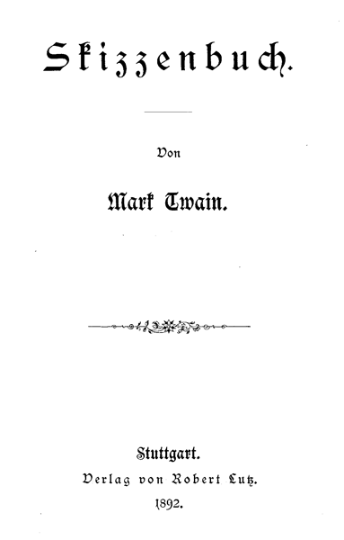
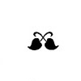
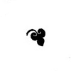
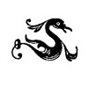
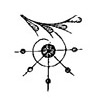

Mark Twains ausgewählte Humoristische Schriften.
III. Band
Stuttgart.
Verlag von Robert Lutz. 1892.
Druck von A. Bonz' Erben in Stuttgart.
Meine schöne neue Uhr ging nun schon anderthalb Jahre weder vor noch nach, sie war kein einziges Mal stehen geblieben und an dem Werk war nichts zerbrochen. Nunmehr galt mir ihr Urteil über die Tageszeit für völlig untrüglich, ihre Lebenskraft und ihr Knochenbau für unzerstörbar. Aber endlich ließ ich sie eines Abends doch ablaufen. Ich trauerte darüber, als sei dies Versehen ein Vorbote von kommendem Unheil und Mißgeschick. Erst allmählich wurde meine Stimmung wieder heiterer, ich zog die Uhr auf, stellte sie nach Gutdünken und schlug mir alle abergläubigen Gedanken und trüben Ahnungen aus dem Sinn.
Am nächsten Morgen trat ich in den Laden des ersten Uhrmachers der Stadt, um meine Uhr genau nach richtiger Zeit zu stellen. Der Herr nahm sie mir aus der Hand, um dies Geschäft für mich zu besorgen.
»Sie geht vier Minuten nach,« sagte er dabei, »der Regulator muß vorgerückt werden.«
Ich versuchte ihn daran zu hindern, versuchte ihm begreiflich zu machen, daß der Gang der Uhr unübertrefflich sei. Vergebens – der Kohlkopf in Menschengestalt sah nur das eine: die Uhr ging vier Minuten nach und der Regulator mußte vorgestellt werden. Ich bat und flehte, er solle es nicht thun, ich sprang in meiner Seelenpein um ihn herum, aber alles umsonst. Mit kaltblütiger Grausamkeit vollbrachte er die schändliche That.
Von da ab begann meine Uhr zu laufen – schneller und schneller, Tag für Tag. Innerhalb einer Woche geriet sie in ein wahres Fieber, ihr Puls stieg bis auf hundert und fünfzig Grad im Schatten. Noch ehe zwei Monate zu Ende waren, hatte sie alle Uhren der Stadt weit hinter sich gelassen und war vierzehntehalb Tage vor dem Kalender voraus. Noch hing das bunte Oktoberlaub an den Bäumen und sie tummelte sich schon mitten im Novemberschnee. Die Zahltage für die Hausmiete, für alle fälligen Rechnungen und sonstigen Schulden kamen in so wahnsinniger Hast näher, daß ich mir schier kaum mehr zu helfen wußte. So brachte ich sie denn zum Uhrmacher, um sie regulieren zu lassen. Dieser fragte mich, ob sie schon jemals repariert worden sei. Als ich das mit dem Bemerken verneinte, es sei noch nicht nötig gewesen, glitt ein boshaftes Lächeln über seine Züge. Gierig öffnete er die Uhr, guckte hinein, klemmte sich ein Ding ins Auge, das aussah wie ein kleiner Würfelbecher und betrachtete das Räderwerk genau.
»Sie muß gereinigt und geölt werden,« sagte er, »und außerdem reguliert; – fragen Sie in einer Woche wieder nach.«
Gereinigt, geölt und reguliert war meine Uhr; aber nun ging sie schrecklich langsam, ihr Ticken klang wie Grabgeläute. Ich versäumte alle Eisenbahnzüge, hielt keine meiner Verabredungen ein und kam wegen Verspätung um mein Mittagessen. Allmählich machte meine Uhr aus drei Tagen vier; zuerst wurde es bei mir gestern, dann vorgestern, dann letzte Woche; ich geriet immer weiter ins Hintertreffen und konnte mich nicht mehr in die jetzige Welt finden.
Wieder begab ich mich zum Uhrmacher. Er nahm in meinem Beisein die Uhr ganz auseinander und sagte, der Cylinder sei »gequollen«, in drei Tagen könne er ihn aber wieder auf das richtige Maß bringen.
Hierauf ging die Uhr im Durchschnitt gut, aber auch nur im Durchschnitt. Den halben Tag lang raste sie wie im Donnerwetter unter fortwährendem Schnarren, Quieken, Schnauben und Schnaufen, so daß ich vor dem Lärm meine eigenen Gedanken nicht hören konnte. Keine Uhr im ganzen Lande hätte vermocht sie einzuholen in ihrem tollen Lauf. Den Rest des Tages blieb sie allmählich immer mehr zurück und trödelte derart, daß sie ihren ganzen Vorsprung einbüßte und sämtliche Uhren ihr wieder nachkamen. Einmal in vierundzwanzig Stunden war sie aber ganz auf dem richtigen Fleck und gab die Zeit genau an. Dies hielt sie pünktlich ein und niemand hätte daher behaupten können, sie thue weniger als ihre Pflicht und Schuldigkeit, oder mehr.
An die Tugend einer Uhr stellt man jedoch höhere Ansprüche, als daß sie nur im Großen und Ganzen richtig geht. Ich trug sie daher abermals zum Uhrmacher. Er sagte, der Hauptzapfen wäre zerbrochen und ich sprach ihm meine Freude darüber aus, daß der Schaden nicht größer sei. Offen gestanden hatte ich noch nie etwas von einem Hauptzapfen gehört, aber ich wollte mich doch einem Fremden gegenüber nicht unwissend zeigen. Der Zapfen ward ausgebessert, aber das half nur wenig. Die Uhr ging jetzt eine Weile und dann blieb sie wieder eine Weile stehen, ganz nach ihrem Belieben. Jedesmal, wenn sie losging, that sie einen Rückschlag wie eine Muskete. Ein paar Tage lang wattierte ich mir die Brusttasche aus, schließlich trug ich die Uhr aber zu einem andern Uhrmacher. Der zerpflückte sie in lauter einzelne Stücke, drehte die Trümmer vor seinem Vergrößerungsglas hin und her und meinte, es müsse an der Hemmung etwas nicht in Ordnung sein. Das besserte er aus und setzte die Uhr wieder zusammen. Nun ging sie gut – nur alle zehn Minuten schlossen sich die Zeiger wie eine Schere und machten die Runde gemeinsam weiter.
Der Weiseste unter den Menschenkindern würde von solcher Uhr nicht herauskriegen können was die Glocke geschlagen hat. Ich ging also wieder hin, um dem Übelstand abhelfen zu lassen. Jetzt meinte der Mensch, der Kristall sei verbogen und die Spiralfeder krumm, auch müsse ein Teil des Werkes neu gefüttert werden. Alle diese Schäden beseitigte er und meine Uhr ließ nun nichts zu wünschen übrig, nur dann und wann, nachdem sie etwa acht Stunden regelmäßig gegangen war, geriet bei ihr inwendig alles in Bewegung, so daß sie zu summen begann wie eine Biene und die Zeiger sich stracks so flink im Kreise drehten, daß man sie nicht mehr unterscheiden konnte, sie sahen aus wie ein zartes Spinngewebe auf dem Zifferblatt. In sechs oder sieben Minuten hatte sie die ganzen nächsten vierundzwanzig Stunden durchwirbelt, dann gab es einen Krach und sie stand still. Mit schwerem Herzen ging ich wieder zu einem andern Uhrmacher und sah wie er das Werk auseinander nahm. Dabei rüstete ich mich, ein Kreuzverhör mit ihm anzustellen, denn das Ding war mir jetzt über den Spaß. Ursprünglich hatte die Uhr zweihundert Dollars gekostet und ich mußte jetzt für Reparaturen zweitausend bis dreitausend ausgegeben haben. Während ich so dastand und dem Manne zusah, kam er mir plötzlich bekannt vor. Nein, ich irrte mich nicht – der Uhrmacher war ein früherer Dampfbootmaschinist und zwar nicht einmal ein guter. Er betrachtete alle Teile sorgfältig, gerade wie die andern Uhrmacher auch und fällte dann seinen Urteilsspruch mit derselben Zuversicht.
Er sagte: »Sie macht zu viel Dampf – wir müssen den stellbaren Schraubenschlüssel an das Sicherheitsventil hängen!«
Ich schlug ihm auf der Stelle den Schädel ein und ließ ihn auf meine Kosten beerdigen.
Mein Onkel William (Gott hab' ihn selig!) pflegte zu sagen, ein gutes Pferd sei ein gutes Pferd, bis es einmal durchgegangen wäre, und eine gute Uhr eine gute Uhr, bis sie den Reparierern in die Hände fiele. Er zerbrach sich oftmals den Kopf, was denn eigentlich aus allen verdorbenen Kesselflickern, Büchsenmachern, Schustern, Grobschmieden und Maschinisten in der Welt schließlich würde – aber niemand konnte ihm je Auskunft geben. –
Alle Dinge sind dem Wechsel unterworfen, ausgenommen die Barbiere, die Gewohnheiten der Barbiere und die Umgebungen der Barbiere. Diese ändern sich nie. Was man erlebt und erfährt, wenn man zum erstenmal eine Barbierstube betritt, das erlebt und erfährt man später in allen andern Barbierstuben, bis an das Ende seiner Tage.
Heute morgen ließ ich mich wie gewöhnlich barbieren. Ein Mann kam von der Jonesstraße auf die Thüre zu, als ich auf der Hauptstraße herankam – so trifft sich das stets. Ich beschleunigte meine Schritte, aber umsonst; er war mir um eine Sekunde voraus, ich folgte ihm auf den Fersen und sah, wie er den einzigen unbesetzten Stuhl einnahm, wo der erste Barbier sein Amt versah. Das trifft sich immer so. Ich setzte mich mit der stillen Hoffnung nieder, Erbe des Stuhles zu werden, welcher dem besseren von den zwei übrigen Barbiergehilfen gehörte, denn dieser hatte schon angefangen seinem Kunden das Haar zu kämmen, während sein Kamerad noch damit beschäftigt war, dem seinigen die Locken einzuölen und einzureiben. In großer Spannung beobachtete ich, was für Aussichten sich mir boten. Als ich sah, daß Nr. 2 drohte Nr. 1 einzuholen, verwandelte sich meine Spannung in Besorgnis. Als Nr. 1 einen Augenblick innehielt, um einem neuen Ankömmling, der ein Badebillet verlangte, Geld herauszugeben und dabei im Wettlauf zurückblieb, wurde meine Besorgnis zur Angst. Als Nr. 1 das Versäumte wieder nachholte und gleichzeitig mit seinem Kameraden dem Kunden das Handtuch abnahm und das Pulver aus dem Gesicht wischte, so daß sich unmöglich voraussehen ließ, welcher von beiden zuerst: »Der nächste!« rufen würde – stockte mir der Atem vor banger Erwartung. Als ich nun aber sah, wie sich Nr. 1 im entscheidenden Moment noch damit aufhielt, seinem Kunden ein paarmal mit dem Kamm durch die Augenbrauen zu fahren, da wußte ich, daß er den Wettlauf um dieses einzigen Augenblicks willen verloren habe. Entrüstet stand ich auf und verließ den Laden, um nicht Nr. 2 in die Hände zu fallen; denn jene beneidenswerte Festigkeit besitze ich nicht, die den Menschen in den Stand setzt, einem dienstbereiten Barbiergehilfen ruhig ins Angesicht zu sehen und ihm zu sagen, man wolle auf den Stuhl seines Kollegen warten.
Etwa fünfzehn Minuten blieb ich draußen und kam dann wieder zurück, in der Hoffnung, es werde mir besser glücken. Natürlich waren jetzt alle Stühle besetzt und vier Männer warteten schweigend, ungesellig, zerstreut und mit gelangweilten Mienen, wie das immer der Fall ist, wenn Leute in einer Barbierstube darauf passen, daß die Reihe an sie kommt.
Ich ließ mich auf einem steinharten alten Sofa nieder und vertrieb mir eine Weile die Zeit damit, die eingerahmten Anzeigen verschiedener Quacksalber zu lesen, die ihre Haarfärbemittel anpriesen. Dann las ich die fettigen Namen auf den Branntweinflaschen, welche einzelnen Kunden angehörten und las auch die Namen und Zahlen auf den Barbierbecken, die als Privateigentum in den offenen Fächern des Schrankes standen, studierte die beschmutzten und schadhaften wohlfeilen Bilder an den Wänden, welche Schlachten darstellten, ehemalige Präsidenten, wollüstig zurückgelehnte Sultaninnen und das langweilige, ewig wiederkehrende Mädchen, das des Großvaters Brille aufsetzt. Auch verfluchte ich in meinem Herzen den lustigen Kanarienvogel und den unausstehlichen Papagei, die selten in einer Barbierstube fehlen. Zuletzt suchte ich mir aus den vorjährigen illustrierten Zeitungen, welche auf dem schmutzigen Mitteltisch herumlagen, die am wenigsten zerlesene heraus und starrte die unerhört falschen Abbildungen alter, vergessener Ereignisse an, die sie enthielt.
Endlich kam ich an die Reihe. Eine Stimme rief: »Der nächste!« und ich geriet natürlich in die Hände von – Nr. 2. So geht es immer. Ich äußerte schüchtern, daß ich Eile habe, was ihm einen gerade so tiefen Eindruck machte, als hätte er es nie gehört. Er schob mir nun den Kopf in die Höhe und legte mir eine Serviette unters Kinn. Er fuhr mir mit den Fingern in den Halskragen und stopfte ein Handtuch hinein. Er grub seine Klauen in mein Haar und sagte, es müsse beschnitten werden. Ich erwiderte, ich wolle es nicht schneiden lassen. Nun wühlte er wieder darin und meinte, es sei für die jetzige Mode ziemlich lang, besonders hinten; es müsse durchaus unter die Schere. Ich sagte, es wäre erst vor einer Woche geschnitten worden. Darauf sann er einen Augenblick gedankenvoll nach und fragte dann mit verächtlicher Miene, wer es besorgt habe. »Sie!« antwortete ich schnell. Da war er in der Falle.
Nun fing er an den Seifenschaum zu rühren und sich dabei im Spiegel zu besehen; von Zeit zu Zeit hielt er inne und trat näher herzu um sein Kinn in Augenschein zu nehmen und einen kleinen Pickel zu besichtigen. Dann seifte er mir eine Seite des Gesichts gründlich ein und wollte eben die andere in Angriff nehmen, als zwei sich beißende Hunde seine Aufmerksamkeit fesselten. Er lief ans Fenster, blieb da stehen bis der Kampf vorbei war und verlor beim Wetten über den Ausgang zwei Schillinge an die andern Barbiergehilfen, was mir große Befriedigung gewährte. Nun strich er mir die Seife vollends mit dem Pinsel auf und begann sie mit der Hand einzureiben.
Dann schärfte er sein Rasiermesser auf einem alten Hosenträger, wobei ihn ein lebhaftes Gespräch über den öffentlichen Maskenball sehr aufhielt, bei dem er am Abend zuvor in rotem Kattun und falschem Hermelin eine Art König dargestellt hatte. Daß seine Kameraden ihn mit einem Dämchen aufzogen, welches er durch seine Reize erobert haben sollte, schmeichelte ihm sehr und er trachtete die Unterhaltung auf jede Weise fortzusetzen, indem er sich stellte, als ärgere ihn die Neckerei. Dies trieb ihn auch zu einer abermaligen genauen Betrachtung seiner Person im Spiegel; er legte das Rasiermesser hin, bürstete sich das Haar mit großer Umständlichkeit, klebte sich eine kühne Locke vorn im Bogen auf die Stirn, machte sich hinten einen wundervollen Scheitel und strich sich beide Seitenflügel mit genauster Sorgfalt über die Ohren. Inzwischen trocknete mir der Seifenschaum im Gesicht und zehrte mir förmlich am Leben.
Nunmehr begann er mich zu rasieren. Er drückte mir mit den Fingern im Gesicht herum, um die Haut auszudehnen und warf meinen Kopf hin und her, wie es ihm beim Barbieren bequem war. Solange er nur die weniger empfindlichen Stellen berührte, litt ich keine Schmerzen, als er aber an meinem Kinn herum zu kratzen, zu scharren und zu schaben anfing, kam mir das Wasser in die Augen. Nun brauchte er meine Nase als Anfasser, um die Winkel meiner Oberlippe besser rasieren zu können. Bei diesem Anlaß machte ich die Entdeckung, daß es zu seinen Obliegenheiten im Laden gehörte, die Petroleumlampen zu reinigen. Ich hatte mich oft schon aus Langeweile gefragt, ob das wohl der Geschäftsinhaber selber besorge, oder die Barbiergehilfen.
Indessen vergnügte ich mich damit mir auszudenken, wo er mich heute wohl schneiden werde; ich hatte es jedoch hierüber noch zu keiner Entscheidung gebracht, als er mir zuvorkam und mir das Kinn aufritzte. Sogleich begann er sein Messer zu schärfen – das hätte er vorher thun sollen. Ich mag nicht zu dicht an der Haut rasiert sein, daher wollte ich ihn nicht zum zweitenmal an mich kommen lassen und versuchte ihn zu überreden, das Rasiermesser fortzulegen, aus Angst, er möchte an die Seite meines Kinns geraten, wo meine allerempfindlichste Stelle ist, die kein Messer zum zweitenmal berühren darf ohne Schaden anzurichten. Er sagte, er müsse nur noch einige Rauheiten glätten, aber ehe ich mich's versah, fuhr er schon über den verbotenen Grund und Boden hin und das gefürchtete Brennen und Prickeln meiner Haut begann sich, wie gerufen, bemerklich zu machen. Nun tauchte er das Handtuch in Lorbeerbranntwein und klatschte mir damit ins Gesicht, bald hier bald da – ein widerliches Gefühl! Hat sich wohl je ein menschliches Wesen auf solche Weise gewaschen? Dann nahm er das trockene Ende des Handtuchs und schlug mir auch dieses ins Gesicht, als ob ein Menschenkind sich jemals so abtrocknete! Aber ein Barbier reibt einen nur selten ordentlich ab wie ein Christenmensch. Dann goß er mir Branntwein auf die wunde Stelle, verklebte sie mit Stärkemehl, feuchtete sie wieder mit Branntwein an und würde gewiß in alle Ewigkeit mit Kleben und Anfeuchten fortgefahren haben, wenn ich mich nicht dagegen aufgelehnt und ihn ersucht hätte, es bleiben zu lassen.
Er puderte mir nun das ganze Gesicht ein, richtete mich in die Höhe, wühlte nachdenklich mit den Händen in meinem Haar und schlug vor, mir die Kopfhaut gründlich zu waschen, das sei ganz notwendig, ganz notwendig! Ich entgegnete, daß ich mir erst gestern im Bade das Haar tüchtig gereinigt hätte. Da war er wieder in der Falle.
Hierauf empfahl er mir »Smiths Haarverschönerungstinktur« und bot mir eine Flasche zum Kauf an. Das schlug ich aus. Nun pries er mir »Jones' Wonne des Toilettentisches« und wollte mir von diesem neuen Wohlgeruch ein Gläschen verkaufen. Aber ich ging nicht darauf ein. Er drang endlich in mich, ein gräßliches Mundwasser seiner eigenen Erfindung mitzunehmen.
Nachdem auch dieser letzte Versuch fehlgeschlagen war, ging er wieder an sein Geschäft, bestreute mich über und über mit Puder, mit Einschluß der Beine, fettete mir die Haare ein, obgleich ich Einsprache dagegen erhob, zog und riß mir dabei eine Menge mit der Wurzel aus, kämmte und bürstete dann den Rest, teilte mir hinten einen Scheitel ab und klebte mir die unvermeidliche, bogenförmige Haarlocke auf die Stirn. Während er mir dann meine dünnen Augenbrauen auskämmte und mit Pomade beschmierte, erging er sich über die Leistungen eines ihm gehörigen schwarz und braun gefleckten Dachshundes, bis ich das Pfeifen des Mittagszuges hörte und wußte, daß ich zu demselben fünf Minuten zu spät ankommen würde. Nun nahm er mir das Handtuch ab, wischte mir damit noch einmal über das Gesicht, fuhr mir wieder mit dem Kamm durch die Augenbrauen und rief munter: »Der nächste!«
Es ist zwar etwas Gutes für die Unterhaltung des Publikums zu schreiben, aber etwas noch weit Höheres und Edleres ist es, wenn man zur Belehrung, zum Nutzen, zum wahren Wohl seiner Mitmenschen schreibt – und das ist der einzige Zweck der folgenden Abhandlung. Wenn es mir gelänge, dadurch auch nur einem Leidenden wieder zur Gesundheit zu verhelfen, das Feuer der Hoffnung und Freude in seinem matten Blick aufs neue zu entzünden und seinem erstorbenen Herzen den raschen, fröhlichen Pulsschlag vergangener Tage zurückzugeben, so wäre mir alle Mühe reichlich vergolten und jene heilige Wonne würde meine Seele durchströmen, welche der Christ fühlt, wenn er eine gute, selbstlose That vollbracht hat.
Da ich stets ein untadeliges Leben geführt habe, bin ich berechtigt zu glauben, daß niemand, der mich kennt, aus Furcht, ich hätte die Absicht ihn zu täuschen, meine Ratschläge zurückweisen wird. Möge das Publikum sich die Ehre anthun, meine hier niedergelegten Erfahrungen bei Behandlung eines Schnupfens zu lesen – und dann meinem Beispiel folgen.
Als das Weiße Haus in Virginia City abbrannte, verlor ich meine Häuslichkeit, meine Behaglichkeit, meine Gesundheit und meinen Koffer. Der Verlust der beiden erstgenannten Artikel war leicht zu verschmerzen; denn eine Häuslichkeit ohne eine Mutter, eine Schwester oder eine entfernte junge Verwandte, welche uns die schmutzige Wäsche wegräumt, unsere Stiefel vom Kaminsims herunternimmt und uns so daran erinnert, daß jemand an uns denkt und für uns sorgt, ist nicht schwer zu finden. Und was meine Behaglichkeit betrifft, so war ich ja kein Dichter und brauchte der Schwermut über ihren Verlust nicht lange nachzuhängen. Aber eine gute Gesundheit zu verlieren und einen noch besseren Koffer, das waren ernstliche Unglücksfälle. Am Tage der Feuersbrunst zog ich mir nämlich infolge der übergroßen Anstrengung, mit welcher ich mich anschickte etwas zu thun, eine starke Erkältung zu.
Als ich das erstemal zu niesen begann, riet mir ein Freund ein warmes Fußbad zu nehmen und dann zu Bette zu gehen. Das that ich. Gleich darauf meinte ein zweiter, ich solle aufstehen und ein kaltes Sturzbad nehmen. Eine Stunde später versicherte mir ein dritter, man müsse einen »Schnupfen füttern und ein Fieber aushungern.« Ich litt an beiden und hielt es daher für das beste, mich des Schnupfens wegen voll und satt zu essen, dann Hausarrest zu nehmen und das Fieber eine Weile hungern zu lassen.
Bei halben Maßregeln lasse ich es in solchem Falle nie bewenden. Ich aß also nach Herzenslust und wendete meine Kundschaft einem Fremden zu, der an jenem Morgen gerade sein Speisehaus eröffnet hatte. Er stand in ehrerbietigem Schweigen dabei, bis ich meinen Schnupfen genug gefüttert hatte, und fragte dann, ob die Leute in Virginia City häufig vom Schnupfen befallen würden. Als ich erwiderte, das könne wohl möglich sein, ging er hinaus und nahm sein Wirtshausschild ab.
Ich begab mich nun nach dem Bureau und begegnete unterwegs abermals einem vertrauten Freunde, der mir sagte, daß es auf der Welt nichts Wirksameres gäbe, um sich vom Schnupfen zu kurieren, als wenn man ein Quart warmes Salzwasser tränke. Ich zweifelte stark, daß ich noch Platz dafür haben könne, aber versuchen wollte ich es jedenfalls. Der Erfolg war überraschend. Mir war als hätte ich meine unsterbliche Seele von mir gegeben.
Da ich meine Erfahrungen nur zum Nutzen derjenigen niederschreibe, welche von demselben Übel befallen sind wie ich, halte ich es für angemessen, sie vor den Mitteln zu warnen, die sich bei mir als unwirksam erwiesen haben. Aus vollster Überzeugung muß ich ihnen daher raten, sich vor warmem Salzwasser zu hüten. Wenn ich wieder den Schnupfen hätte und mir nur die Wahl bliebe, meine Zuflucht zu einem Erdbeben oder einem Quart Salzwasser zu nehmen, so würde ich mein Heil mit dem Erdbeben versuchen.
Nachdem der Sturm, der in meinem Innern wütete, sich etwas gelegt hatte und da zufällig kein guter Samariter mehr bei der Hand war, borgte ich mir wieder Taschentücher und zerschneuzte sie zu Atomen, wie ich es in den ersten Stadien meines Schnupfens gethan hatte. Dies trieb ich solange, bis ich einer Dame begegnete, die eben von jenseits der Prairie herkam. Sie hatte in einer Gegend gelebt, wo Mangel an Ärzten war, und sagte, die Not habe sie gelehrt, einfache Alltagskrankheiten mit vielem Geschick zu behandeln. Ich war überzeugt, daß sie eine lange Erfahrung hinter sich haben müsse, denn sie sah aus, als sei sie hundertfünfzig Jahre alt.
Sie mischte einen Trank aus Sirup, Scheidewasser, Terpentin und allerlei Kräutern zusammen und gab mir die Anweisung, alle Viertelstunde ein Weinglas voll davon zu nehmen. Ich ließ es jedoch bei der ersten Dosis bewenden; sie reichte hin, um mich aller moralischen Grundsätze zu berauben und die unwürdigsten Triebe in mir wach zu rufen. Unter ihrem bösartigen Einfluß wälzte ich in meinem Hirn die ungeheuerlichsten und niederträchtigsten Pläne und Entwürfe, aber meine Hand war damals zu schwach, sie auszuführen. Hätten nicht die unfehlbaren Heilmittel für den Schnupfen durch wiederholte Angriffe meine Kräfte völlig erschöpft, ich wäre wahrlich imstande gewesen auf Leichenraub auszugehen.
Wie die meisten andern Leute habe ich zuweilen gemeine Regungen und handle darnach; aber bis zu einem solchen Grade von unmenschlicher Ruchlosigkeit hatte ich es noch nie gebracht, bevor ich jene Arzenei einnahm, und obendrein war ich noch stolz darauf. Nach Verlauf von zwei Tagen war ich wieder soweit, aufs neue an mir herumdoktern zu können. Ich wandte noch mehrere untrügliche Mittel an und trieb mir schließlich die Erkältung aus dem Kopf in die Lunge.
Nun bekam ich fortwährend Hustenanfälle und meine Stimme sank unter den Nullpunkt. Ich sprach mit den Leuten in einem grollenden Baß, zwei Oktaven unter meinem gewöhnlichen Tonfall. Eine regelmäßige Nachtruhe konnte ich nur dadurch erlangen, daß ich mich in einen Zustand gänzlicher Erschöpfung hineinhustete; sobald ich aber im Schlaf zu sprechen anfing, weckte mich der Mißlaut meiner Stimme wieder auf.
Mein Fall verschlimmerte sich von Tag zu Tag. Man empfahl mir Wachholderschnaps. Den trank ich. Dann Schnaps mit Sirup. Ich trank auch den. Ferner Schnaps und Zwiebeln. Die that ich dazu und schluckte alle drei zusammen, jedoch ohne besonderes Ergebnis.
Ich sah mich jetzt genötigt meiner Gesundheit durch Luftveränderung wieder aufzuhelfen und reiste mit meinem Kollegen, dem Zeitungsreporter Wilson, nach dem Bigler See. Nicht ohne eine gewisse Befriedigung denke ich daran, daß wir auf ganz vornehme Weise reisten, wir benutzten nämlich die Pionierpost und mein Freund nahm sein ganzes Gepäck mit, welches aus zwei prachtvollen seidenen Halstüchern und dem Daguerrebild seiner Großmutter bestand. Dort machten wir den Tag über Segelfahrten, gingen auf die Jagd, auf den Fischfang und zum Tanz und die Nacht hindurch kurierte ich meine Erkältung. Durch diese Einrichtung gelang es mir, jede von den vierundzwanzig Stunden nutzbringend zu verwenden. Aber mein Übel wurde nur immer schlimmer.
Man riet mir nun zu einer nassen Wickelung. Bisher hatte ich kein einziges Heilmittel zurückgewiesen und es schien Thorheit, jetzt noch damit anzufangen. So beschloß ich denn die Wickelung zu versuchen, obwohl ich keine Ahnung hatte, was das eigentlich für eine Veranstaltung sei. Sie wurde um Mitternacht vorgenommen und das Wasser war brennend kalt. Ein Leintuch, das mindestens tausend Meter lang zu sein schien, wurde in Eiswasser getaucht und mir um Brust und Rücken gewickelt, bis ich aussah wie der Wischer für eine der neuen Riesenkanonen.
Es ist ein grausames Verfahren. Wenn der kalte Lappen das warme Fleisch berührt, fährt man vor Schrecken zusammen und schnappt nach Atem wie ein Mensch in der Todesnot. Mir erfror das Mark in den Knochen und mein Herzschlag schien stillzustehen. Ich glaubte, mein letztes Stündlein sei gekommen.
Ich warne hiermit jedermann vor kalten Wickelungen. Es giebt nichts Unbehaglicheres in der Welt – außer vielleicht einer Damenbekanntschaft zu begegnen, die aus Gründen, die sie selbst am besten weiß, unsereinen ansieht ohne ihn zu sehen und, wenn sie ihn wirklich sieht, ihn nicht kennt.
Aber, was ich noch sagen wollte, – als mein Schnupfen nach der Wickelung nicht kuriert war, empfahl mir eine befreundete Dame, ein Senfpflaster auf die Brust zu legen. Das hätte mich, glaube ich, auch wirklich geheilt, wäre der junge Wilson nicht gewesen. Beim Zubettegehen legte ich mir das Senfpflaster, das ganz großartig war – es maß achtzehn Zoll im Viereck – bequem zur Hand, wo ich es erreichen konnte. Aber Wilson bekam in der Nacht Hunger und – den Rest kann sich der Leser selber denken.
Nach einem achttägigen Aufenthalt am Bigler See ging ich nach Steamboat Springs, wo ich Dampfbäder nahm und noch eine Masse der erbärmlichsten Arzeneien zu schlucken bekam, die je zusammengebraut worden sind. Sie würden mich ganz hergestellt haben, aber ich mußte nach Virginia City zurückkehren, wo ich es trotz der verschiedenartigsten Heilmittel, die ich jeden Tag verschlang, möglich machte, meine Krankheit durch Vernachlässigung und Ausgehen bei kalter Witterung sehr zu verschlimmern.
Endlich beschloß ich nach San Franzisco zu reisen. Am ersten Tag nach meiner Ankunft daselbst sagte mir eine Dame im Gasthaus, ich solle alle vierundzwanzig Stunden ein Quart Whisky trinken und ein Freund, der in der Stadt wohnte, gab mir denselben Rat. Das machte also zusammen zwei Quart oder eine halbe Gallone. Soviel trank ich und bin noch am Leben.
In obigem habe ich mit der allerbesten Absicht von der Welt das mannigfaltige Heilverfahren geschildert, welches ich kürzlich zur Kur meines Schnupfens durchzumachen hatte. Ich empfehle es besonders allen, die an der Schwindsucht leiden. Wenn sie einen Versuch damit anstellen und nicht gesund werden, so kann es sie höchstens umbringen.
Diese Geschichte hat Mr. Mc Williams, ein freundlicher Herr aus New-York, dem Verfasser erzählt, der ihn zufällig auf einer Reise traf.
Sie können sich kaum vorstellen, Herr Mark Twain, wie schrecklich die unheilbare Krankheit, welche man die häutige Bräune nennt, in unserer Stadt gewütet hat. Ebenso schlimm als die Krankheit selbst war der Umstand, daß alle Mütter vor Angst und Schrecken fast den Verstand verloren. Hören Sie zu, was ich mit meiner Frau während jener Zeit erlebte. Eines Mittags kam ich nach Hause und machte meine Frau auf die kleine Penelope aufmerksam, indem ich bemerkte:
»Mein Herz, ich würde an deiner Stelle nicht erlauben, daß das Kind an dem Kienspan kaut.«
»Was in aller Welt soll denn das schaden?« entgegnete sie, schickte sich aber zugleich an, den Span fortzunehmen; – ohne weitläufige Erörterung können Frauenzimmer nun einmal nicht den geringsten Rat befolgen, wenn dessen Weisheit auch noch so sehr auf der Hand liegt; d. h. verheiratete Frauen.
Ich erwiderte: »Herzchen, man weiß, daß keine Holzart so wenig Nährwert für ein Kind besitzt wie Tannenholz.«
Meine Frau zog die Hand zurück, mit der sie den Span ergreifen wollte und legte sie wieder in den Schoß.
»Du bist im Irrtum,« sagte sie merklich erregt; »alle Ärzte versichern, daß das Terpentin im Tannenholz für ein schwaches Rückgrat und für die Nieren sehr gut ist.«
»Ah so – ich bitte um Entschuldigung. Ich habe nicht gewußt, daß unser Kind an Rückenschwäche und an den Nieren leidet und daß der Hausarzt verordnet hat –«
»Das Kind denkt gar nicht daran, an dergleichen zu leiden – wie kommst du darauf?«
»Aber liebe Frau, du hast doch angedeutet –«
»Bewahre, so etwas ist mir nicht eingefallen.«
»Es ist ja kaum zwei Minuten her, mein Herz, daß du sagtest –«
»Dummes Zeug! Ich mag gesagt haben was ich will – jedenfalls ist es kein Unglück, daß die Kleine an einem Stück Holz kaut, wenn sie Lust dazu hat; ich dächte, du könntest das auch einsehen. Ich verwehre es ihr nicht und damit ist's gut!«
»Ereifere dich nicht, mein Kind; ich sehe schon ein, daß du recht hast und werde gleich ausgehen, um ein paar Klafter vom besten Tannenholz zu bestellen. Solange ich lebe, soll mein Kind – –«
»O bitte, geh' in dein Geschäft und laß mich einen Augenblick in Ruhe. Man kann auch nicht die geringste Bemerkung machen, du mußt darüber streiten, streiten, streiten, bis du nicht mehr weißt, wovon du sprichst – wie immer.«
»Nun gut, du sollst deinen Willen haben. Aber in deiner letzten Bemerkung war ein Mangel an Logik, der – –«
(Ehe ich jedoch ausgeredet hatte, war sie zur Thüre hinausgesegelt und hatte das Kind mitgenommen.)
Als ich am Abend desselben Tages zu Tische nach Hause kam, trat sie mir mit kreideweißem Gesicht entgegen.
»O Mortimer, ein neuer Fall! Der kleine George vom Nachbar Gordon ist krank!«
»Häutige Bräune?«
»Häutige Bräune!«
»Hat der Arzt noch Hoffnung?«
»Nicht die geringste! O was soll aus uns werden!«
Kurz darauf brachte eine Wärterin die kleine Penelope herein, um uns gute Nacht zu sagen und das übliche Abendgebet auf der Mutter Schoß zu sprechen. Aber mitten in: »Jetzt leg' ich mich zu süßer Ruh',« hustete sie ein wenig. Meine Frau fuhr zurück als hätte sie der Schlag gerührt. Doch schon im nächsten Augenblick war sie auf den Füßen, der Schrecken spornte sie zu fieberhafter Thätigkeit.
Sie befahl, das Bett des Kindes aus der Kinderstube in unser Schlafzimmer zu bringen, und ging selbst mit, um die Ausführung des Befehls zu beaufsichtigen. Natürlich mußte ich auch dabei sein, und wir brachten die Sache schnell in Ordnung. Für die Kinderfrau wurde ein Bett in dem Ankleidezimmer meiner Frau aufgeschlagen. Nun fiel ihr aber ein, daß wir zu weit von dem andern Kind entfernt seien, und wenn sich in der Nacht bei ihm Symptome zeigen sollten – mein armes Frauchen wurde wieder leichenblaß.
Darauf schafften wir das Kinderbett und die Kinderfrau wieder in die Kinderstube und schlugen für uns beide ein Bett im Nebenzimmer auf. Plötzlich bekam meine Frau jedoch Angst, Penelope könne den Kleinen anstecken. Dieser Gedanke jagte ihr ein solches Entsetzen ein, daß ihre ganze Hilfsmannschaft das Bettchen nicht schnell genug wieder hinaustragen konnte. Meine Frau half in eigener Person und riß es beinahe in Stücken in ihrer verzweifelten Hast.
Wir zogen in den unteren Stock, aber da war nicht Platz genug, die Kinderfrau unterzubringen, und meine Frau meinte, ihre Erfahrung würde eine unschätzbare Hilfe sein. So kehrten wir denn mit Sack und Pack wieder in unser eigenes Schlafzimmer zurück und fühlten uns so glücklich, wie ein Paar vom Sturm verschlagene Vögel, die ihr warmes Nestchen wiederfinden.
Meine Frau eilte jetzt in die Kinderstube, um zu sehen, wie es dort stände. Im Nu war sie aber wieder da, von neuer Furcht ergriffen.
»Wie kann es nur kommen, daß der Kleine so fest schläft?«
»Aber mein Herz,« sagte ich, »der Kleine schläft ja immer so fest, daß er aussieht wie ein Bild.«
»Ich weiß, ich weiß; aber heute hat sein Schlaf etwas Unnatürliches. Er scheint – er scheint so regelmäßig zu atmen.«
»Aber, liebes Kind, er atmet immer regelmäßig.«
»O, das weiß ich; aber heute macht es einen schrecklichen Eindruck. Seine Wärterin ist viel zu jung und unerfahren, Marie soll bei ihr bleiben, damit sie bei der Hand ist, wenn etwas passiert.«
»Das ist ein guter Gedanke; aber, wer wird dir helfen?«
»Du kannst mir alle Hilfe leisten, die ich brauche. Ich werde mich ja sowieso in dieser schrecklichen Zeit auf keinen Menschen verlassen, sondern alles selbst thun.«
Ich erwiderte, daß ich mich selbst verachten würde, wenn ich zu Bette gehen und schlafen wollte, während sie wachte und sich um unsere Kranke mühte, die lange, bange Nacht. Doch endlich ließ ich mich überreden. So begab sich also die alte Marie wieder zurück auf ihren Posten in der Kinderstube.
Penelope hustete ein- oder zweimal im Schlaf.
»Warum nur dieser Doktor nicht kommt. – Mortimer, es ist gewiß zu warm im Zimmer. Mache den Schieber zu – schnell!«
Ich schloß die Luftheizung ab, sah nach dem Thermometer und fragte mich, ob denn 14° wirklich zu warm sei für ein krankes Kind.
Der Kutscher kam jetzt aus der Stadt mit der Nachricht, daß unser Hausarzt krank zu Bette liege. Meine Frau warf mir einen verlöschenden Blick zu und sagte mit sterbender Stimme:
»Es ist der Wille der Vorsehung. So war es vorher bestimmt. – Noch nie ist er krank gewesen, nie! Wir haben nicht so gelebt wie wir sollten, Mortimer. Immer und immer wieder habe ich es dir gesagt. Nun siehst du, wohin es führt. Unser Kind wird niemals wieder gesund werden. Danke Gott, wenn du es dir je verzeihen kannst – ich kann es mir nicht vergeben.«
Ich sagte, ohne die Worte genau zu wählen, aber durchaus nicht in der Absicht, sie zu kränken, es sei mir nicht bewußt, daß wir ein so gottloses Leben geführt hätten.
»Mortimer – willst du das Gericht Gottes auch über den Kleinen heraufbeschwören?«
Sie brach in Thränen aus – aber plötzlich rief sie:
»Der Doktor muß doch Arznei geschickt haben!«
»Gewiß,« versetzte ich; »hier ist sie. Ich habe nur auf den passenden Moment gewartet, es dir zu sagen.«
»So gieb sie doch her; weißt du nicht, daß jetzt jeder Augenblick kostbar ist! Aber ach, wozu schickt er überhaupt Arzenei, wenn er doch weiß, daß alles vergebens ist.«
Ich sagte, wo noch Leben wäre, sei auch noch Hoffnung.
»Hoffnung! – Mortimer, du weißt so wenig was du sprichst, wie ein neugeborenes Kind. Wenn du nur – Welcher Unsinn – die Anweisung sagt: alle Stunde einen Theelöffel! Einmal stündlich – als ob wir ein ganzes Jahr vor uns hätten, um das Kind zu retten! Mortimer, schnell, gieb dem armen verschmachtenden Würmchen einen Eßlöffel voll; nur diesmal beeile dich!«
»Aber, mein Herz, ein Eßlöffel voll könnte –«
»Mache mich nicht toll! . . . Hier, mein Engelchen, mein süßes, nimm das häßliche bittere Zeug; es ist gut für Nelly, für Mamas süßen, kleinen Liebling und soll sie gesund machen. Da, da, da, lege dein Köpfchen an Mütterchens Brust und schlaf ein, damit du bald – – o, ich weiß, sie wird den Morgen nicht erleben! – Mortimer, einen Eßlöffel alle halbe Stunde! Aber das Kind sollte auch Belladonna nehmen und Acconit. Hole die Fläschchen, Mortimer. Bitte, thue was ich sage; du verstehst ja doch nichts davon.«
Wir stellten nun das Bett des Kindes dicht an das Kopfende meiner Frau, und legten uns nieder. Das viele Durcheinander hatte mich schrecklich müde gemacht, und in zwei Minuten war ich halb eingeschlafen.
Meine Frau weckte mich.
»Männchen, ist die Luftheizung offen?«
»Ich glaube nicht.«
»Das habe ich mir gedacht. Bitte, mache den Schieber gleich auf; das Zimmer ist kalt.«
Ich schob ihn auf und schlief wieder ein; da wurde ich nochmals geweckt.
»Bester Mann, du könntest doch so gut sein, das Bettchen an deine Seite zu stellen, es ist näher an der Heizung.«
Ich stellte das Bett an meine Seite, verwickelte mich aber in den Bettteppich und weckte das Kind. Wieder verfiel ich in Schlaf, während meine Frau die kleine Kranke beruhigte. Aber nicht lange, so kamen wie aus weiter Ferne durch den Nebel meiner Schlaftrunkenheit die Worte an mein Ohr:
»Mortimer, wenn wir nur etwas Gänsefett hätten – bitte, willst du klingeln.«
Ich kletterte im Halbschlaf heraus und trat auf die Katze, welche mit einem lauten Protest antwortete; ich wollte ihr dafür einen Fußtritt verabreichen, aber der Stuhl bekam ihn statt der Katze.
»Mortimer, was fällt dir ein? Warum drehst du den Gashahn auf? Willst du das Kind zum zweitenmal wecken?«
»Ich will sehen, ob ich mir Schaden gethan habe, Karoline.«
»Dann sieh nur auch den Stuhl an; ich bin überzeugt, er ist in Stücken. Die arme Katze; wenn du nun – –«
»Die Katze ist mir völlig gleichgültig. Das alles wäre nicht geschehen, wenn du Marie hier behalten hättest, um diese Pflichten zu übernehmen, die sie angehen, und nicht mich.«
»Du solltest dich schämen, Mortimer, eine solche Bemerkung zu machen. Wahrhaftig, wenn du die Kleinigkeiten, um die ich dich bitte, nicht einmal besorgen willst – da doch unser Kind – –«
»Schon gut, ich will ja alles thun. Aber kein Mensch hört auf mein Läuten. Sie sind wahrscheinlich alle zu Bett gegangen. – Wo steht das Gänsefett?«
»Auf dem Kamin im Kinderzimmer. Wenn du hingehen willst und mit Marie sprechen – –«
Ich holte das Gänsefett und schlief wieder ein. Abermals wurde ich gerufen: »Mortimer, es ist mir schrecklich, dich zu stören, aber das Zimmer ist noch immer zu kalt, wenn ich die Einreibung machen soll. Könntest du nicht das Feuer anzünden? Es ist alles zurechtgelegt, du brauchst nur ein Schwefelhölzchen hineinzustecken.«
Ich kroch aus dem Bett, machte das Feuer an, und setzte mich als Jammergestalt daneben.
»Mortimer, du erkältest dich zu Tode, wenn du da sitzen bleibst. Komm zu Bett!«
Ich wollte hineinsteigen, da sagte sie:
»Nur einen Augenblick! Bitte, gieb dem Kinde noch etwas Arzenei.« – Das that ich, und meine Frau benutzte die Gelegenheit, da die Kleine doch einmal wach war, sie auszuziehen und über und über mit dem Gänsefett einzuschmieren. Bald schlief ich von neuem – aber nicht lange.
»Mortimer, es zieht irgendwo; ich fühle es ganz deutlich. Nichts ist verhängnisvoller bei solcher Krankheit, als Zugwind. Bitte, stelle das Kinderbett näher ans Feuer.« Das that ich, und verwickelte mich wieder in den Bettteppich, den ich ins Feuer warf. Meine Frau sprang aus dem Bett und rettete ihn, wobei wir etwas aneinander gerieten. Nun folgte wieder eine kleine Schlafpause, bis mir befohlen wurde, einen Umschlag von Leinsamen zu machen. Dieser wurde dem Kinde auf die Brust gelegt, um dort seine heilende Wirkung zu üben.
Ein Holzfeuer hat nicht lange Bestand. Alle zwanzig Minuten stand ich auf, um das unsrige anzufachen und Holz nachzulegen; dadurch verkürzten sich auch die Zwischenräume beim Eingeben der Arzenei um zehn Minuten, was meiner Frau eine große Erleichterung war. Dazwischen erneuerte ich die Umschläge und legte einen Senfteig oder andere Zugpflaster überall da auf, wo noch eine freie Stelle an dem Kinde zu finden war. Endlich, gegen Morgen, war das Holz verbraucht, und meine Frau meinte, ich solle in den Keller gehen, um welches zu holen.
»Das ist eine schwere Arbeit, liebes Kind,« bemerkte ich. »Der Kleinen ist gewiß warm genug bei ihren vielen Umhüllungen. Wir können ihr ja auch noch eine Lage Brei auflegen und –«
Ich kam nicht zu Ende, denn ich wurde unterbrochen. Eine Weile schleppte ich Holz herauf und kroch dann wieder in mein Bett. Bald schnarchte ich, wie nur ein Mensch schnarchen kann, der völlig abgemattet ist, an Körper und Geist. Bei Tagesanbruch fühlte ich ein Rütteln an meiner Schulter, was mich schnell zur Besinnung brachte. Meine Frau stand mit stierem Blick vor mir und rang nach Luft. Sobald sie sprechen konnte, sagte sie:
»Es ist alles aus – alles aus! – Das Kind schwitzt. Was fangen wir an?«
»Mein Gott, wie du mich erschreckt hast! Ich weiß nicht was ich dir raten soll. Vielleicht wenn wir alles abkratzten und Penelope wieder in den Zug brächten –«
»Welcher Blödsinn! – Jetzt ist kein Augenblick zu verlieren! Hole den Doktor, schnell! Du mußt selbst gehen. Bringe ihn her, tot oder lebendig.«
Ich zerrte den armen kranken Mann aus dem Bett und brachte ihn zu uns. Er sah das Kind an und sagte, es läge nicht im Sterben. Das war mir eine unaussprechliche Freude, aber meine Frau wurde so böse, als habe er sie persönlich beleidigt. Dann meinte er, der Husten des Kindes wäre nur durch einen kleinen Reiz in der Kehle verursacht. Wie er das sagte, fürchtete ich fast, meine Frau würde ihm die Thüre weisen. Der Doktor wollte die Kleine nun stärker zum Husten bringen, um die Störung zu beseitigen. Er gab ihr etwas ein, sie hustete heftig, und heraus kam – ein kleiner Holzsplitter.
»Das Kind hat keine Bräune,« sagte der Arzt. »Es hat an einem Stück Tannenholz gekaut, und ein paar kleine Splitter in den Hals bekommen. Die werden ihm nichts schaden.«
»Nein,« sagte ich, »das glaube ich auch. Das Terpentin darin ist sogar sehr gut für einige Krankheiten, die bei Kindern vorkommen. Meine Frau kann Ihnen das sagen.«
Aber das that sie nicht. Sie wendete sich empört von uns ab und verließ das Zimmer. Seit der Zeit ist in unserm ehelichen Leben eine Episode, die wir nie erwähnen. Im übrigen fließt der Strom unserer Tage in ungetrübter Heiterkeit dahin.
Sehr wenig Ehemänner haben ähnliche Erfahrungen gemacht, wie Herr Mc Williams; deshalb dachte der Verfasser dieses Buches, die Sache würde durch ihre Neuheit vielleicht in den Augen des Lesers ein flüchtiges Interesse erhalten.
Ja, fuhr Herr Mc Williams fort, – dies war nämlich nicht der Anfang seiner Rede – die Furcht vor dem Gewitter ist eine der qualvollsten Schwächen, von denen ein menschliches Wesen heimgesucht sein kann. Sie ist meistens auf Frauen beschränkt, hie und da findet sie sich jedoch auch bei einem kleinen Hunde und manchmal auch bei einem Manne. Es ist eine ganz besonders traurige Schwäche, indem sie einem Menschen den Verstand in höherem Grade raubt, als irgend eine andere Furcht, da sie sich weder durch Vernunftgründe noch durch Beschämung unterdrücken läßt. Eine Frau, die dem Teufel selber ins Gesicht sehen könnte – oder einer Maus – verliert ihre Schneidigkeit und ist rein weg angesichts eines zuckenden Blitzes.
Also, wie ich Ihnen sagte, ich wachte auf an dem halberstickten von irgendwo herkommenden Schrei: »Mortimer, Mortimer!« Sobald ich meine fünf Sinne zusammenfassen konnte, richtete ich mich in der Dunkelheit auf und antwortete:
»Evangeline, rufst du? was giebt's? wo bist du?«
»In die Wäschekammer eingeschlossen! Du solltest dich schämen, dazuliegen und so zu schlafen, während solch ein fürchterliches Gewitter losbricht.«
»Nun, wie kann man sich denn schämen, wenn man schläft? Das hat ja keinen Sinn; ein Mensch kann sich nicht schämen, derweilen er schläft, Evangeline.«
»Das thust du freilich nie, Mortimer, das weiß ich wohl!«
Ich vernahm den Laut unterdrückten Schluchzens. Dieser Klang machte die scharfe Rede, die sich auf meine Lippen drängte, ersterben und ich ließ mich statt dessen folgendermaßen vernehmen:
»Es thut mir leid, Liebe, es thut mir wirklich leid. Ich wollte es nicht thun, – komm heraus und –«
»Mortimer!«
»Himmel, was giebt's, mein Schatz?«
»Ich glaube gar, daß du noch im Bett liegst.«
»Warum nicht? natürlich.«
»Augenblicklich stehe auf. Ich dächte, du solltest doch ein klein wenig acht auf dein Leben geben, um meinet- und der Kinder willen, wenn nicht schon um deinetwillen.«
»Aber lieber Schatz –«
»Hör auf, Mortimer, du weißt, bei einem solchen Gewitter ist der allergefährlichste Platz das Bett. Das steht in allen Büchern. Aber das ist dir einerlei, du bleibst doch darin liegen und wirfst lieber dein Leben rücksichtslos weg, der Himmel weiß warum, höchstens aus ewiger Rechthaberei und –«
»Aber zum Kuckuck, Evangeline, ich bin ja jetzt nicht mehr im Bett, ich bin –«
Dieser Satz wurde unterbrochen durch einen plötzlichen Blitzstrahl, begleitet von einem unterdrückten Aufschrei der Frau Mc Williams und einem furchtbaren Donnerschlag.
»Da! Nun siehst du, wozu das führt. O, Mortimer, wie kannst du so ruchlos sein, bei einem solchen Wetter zu fluchen?«
»Ich habe ja nicht geflucht. Und das kam gar nicht davon her, es wäre ganz ebenso gekommen, auch wenn ich kein Wörtchen gesagt hätte, und du weißt ganz gut, Evangeline, oder solltest es wenigstens wissen, daß, wenn die Atmosphäre mit Elektrizität geladen ist –«
»O ja, jetzt habe nur recht und wieder recht und noch einmal recht. Ich begreife nicht, wie du so handeln magst, da du doch weißt, daß wir keinen Blitzableiter haben und daß deine arme Frau und Kinder rein der Gnade der Vorsehung anheimgegeben sind. – Aber was thust du? Ein Zündhölzchen anstecken? bei einem solchen Wetter, bist du völlig toll?«
»Zum Henker, Frau, was schadet denn das? Es ist ja hier so finster wie in einer Kuh und –«
»Lösch es aus, lösch es augenblicklich aus! Willst du uns alle geflissentlich zu Grunde richten? Du weißt doch, daß nichts so den Blitz anzieht, wie ein Licht.«
(Fzt, – krach! – bum! – bolum! – bum!)
»O, da höre, jetzt siehst du, was du angerichtet hast.«
»Wieso? Ein Schwefelhölzchen kann allenfalls den Blitz anziehen, aber gewiß ruft es keinen Blitz hervor, – ich stehe dafür ein. Sollte aber dieser Schuß dennoch meinem Zündhölzchen gegolten haben, so war er jämmerlich gezielt, – eine Leistung, die unter tausenden kaum einer fertig bringt.«
»Schäme dich, Mortimer. Da stehen wir dem Tode Aug in Auge gegenüber, und doch bist du fähig, in einem so feierlichen Augenblick eine solche Sprache zu führen. Wenn du nicht den Wunsch hast, – Mortimer –«
»Nun?«
»Hast du eigentlich heute ein Nachtgebet gesprochen?«
»Ich – ich – war eben dabei, da fiel mir ein, auszurechnen, wie viel zwölfmal dreizehn ist und –«
(Fzt, – bum! – bum! – bumerumbum! – bang! – krach!)
»O, wir sind verloren, rettungslos verloren. Wie konntest du so etwas versäumen, bei solch einem Wetter!«
»Aber es war ja noch nicht so ein Wetter. Es war kein Wölkchen am Himmel. Wie konnte ich ahnen, daß wegen einer so kleinen Unterlassungssünde all dies Gerumpel und Gepolter losgehen würde? Und ich meine, es ist gerade nicht hübsch von dir, so viel Aufhebens davon zu machen, da du doch weißt, daß es so selten vorkommt. Vorher habe ich es nie versäumt, nie seit dem großen Erdbeben, an dem ich schuld war.«
»Mortimer, wie du sprichst! Hast du das gelbe Fieber vergessen?«
»Meine Liebe, du legst mir immer das gelbe Fieber zur Last, und ich meine doch, das ist ganz sinnlos. Wie soll denn ein kleines Frömmigkeitsvergehen von mir so weithin wirken? Das Erdbeben will ich meinetwegen auf mich nehmen, weil es in der Nachbarschaft stattfand, aber ich will mich hängen lassen, wenn ich verantwortlich sein soll für jedes lumpige –«
(Fzt, bum, bum, belum, bum, bang!)
»O Gott, o Gott, gewiß hat es irgendwo eingeschlagen. Wir werden keinen Tag mehr erleben, und dann, wenn wir nicht mehr sind, kann es dir eine Genugthuung sein, zu wissen, daß dein gottloses Gerede – Mortimer!«
»Nun, was ist wieder los?«
»Deine Stimme klingt, wie wenn – Mortimer, stehst du wirklich vor dem offenen Kamin?«
»Das ist allerdings mein Verbrechen in diesem Augenblick.«
»Geh augenblicklich davon weg. Es scheint, du bist entschlossen, Vernichtung über uns alle zu bringen. Weißt du nicht, daß es keinen besseren Leiter für den Blitz giebt, als ein offenes Kamin? – Wo bist du nun hingegangen?«
»Da ans Fenster.«
»O, um Gotteswillen, hast du den Verstand verloren? Geh weg von dort, augenblicklich! Die kleinsten Kinder wissen, daß es lebensgefährlich ist, während eines Gewitters am Fenster zu stehen. Lieber, Guter, ich weiß, ich erlebe keinen Tag mehr – Mortimer?«
»Ja!«
»Was ist das für ein Rascheln?«
»Ich bin's.«
»Was thust du denn?«
»Ich bemühe mich, das obere Ende meiner Unterbeinkleider zu finden.«
»Schnell, wirf das Zeug weg. Du wirst doch nicht diese Kleidungsstücke bei einem solchen Wetter anziehen wollen? Du weißt doch, daß allen Autoritäten zufolge wollene Stoffe den Blitz anziehen. O, Liebster, Bester, ist es nicht genug, daß man aus natürlichen Ursachen stets in Lebensgefahr schwebt? und du thust alles Erdenkbare, was die Gefahr vermehren kann. – So singe doch nicht! Wie kannst du auf den Einfall kommen?«
»Nun, was kann denn das schaden?«
»Mortimer, ich habe dir einmal, habe dir hundertmal gesagt, daß Singen Schwingungen in der Atmosphäre verursacht, die den Zug des elektrischen Stroms unterbrechen und – um alles in der Welt, wozu machst du die Thür auf?«
»Gerechter Himmel, Weib, ist auch dabei Gefahr?«
»Gefahr? Der Tod ist dabei. Jeder, der irgend darauf geachtet hat, weiß, daß einen Luftzug verursachen geradezu den Blitz herbeiziehen heißt. Du hast sie nur halb zugemacht, schließe sie fest und mach schnell, oder wir sind alle verloren. O, es ist etwas Fürchterliches, bei einem solchen Wetter mit einem Wahnwitzigen eingeschlossen zu sein. Mortimer, was thust du?«
»Nichts, ich drehe eben den Wasserhahn auf, dieses Zimmer ist zum Ersticken dumpf, ich muß mir Gesicht und Hände netzen.«
»Du hast scheints den letzten Rest deines Verstandes verloren. Wo der Blitz einen andern Gegenstand einmal trifft, schlägt er fünfzigmal ins Wasser. Drehe schnell zu. O, Lieber, ich sehe schon, daß nichts auf dieser Welt uns retten kann, ich glaube, daß – – Mortimer, was war das?«
»Es war ein verfl. . . . es war ein Bild, hab's heruntergestoßen.«
»Dann stehst du also hart an der Wand? Eine unerhörte Unvorsichtigkeit. Weißt du nicht, daß es keinen besseren Leiter für den Blitz giebt, als eine Wand! Mach, daß du davon weg kommst. – Und eben warst du auch wieder nahe daran zu fluchen. O, wie kannst du so verzweifelt gottlos sein, während deine Familie in solcher Gefahr schwebt? Mortimer, hast du ein Federbett herthun lassen, wie ich dich gebeten habe?«
»Nein, hab's vergessen.«
»Vergessen? Es kann dich dein Leben kosten. Hättest du jetzt ein Federbett, um es in die Mitte des Zimmers zu breiten und dich darauf zu legen, so wärst du völlig in Sicherheit. Komm hier herein – schnell, ehe du noch weitere tolle Streiche machen kannst.«
Ich versuchte es, aber die Kammer vermochte uns beide bei geschlossener Thüre nicht zu fassen, wenn wir nicht ersticken wollten. Ich schnappte eine Weile nach Luft, dann stürzte ich hinaus. Meine Frau rief:
»Mortimer, es muß etwas zu deiner Rettung geschehen, gieb mir das deutsche Buch, das auf dem Kaminsims liegt, und ein Licht, – aber steck es nicht an. In dem Buche finden sich einige Ratschläge.«
Ich holte das Buch auf Kosten einer Vase und anderer zerbrechlicher Sachen. Meine Frau schloß sich mit ihrem Licht ein, worauf ich einen Augenblick Ruhe hatte, dann rief sie heraus: »Mortimer, was war das?«
»Nur die Katze.«
»O, Jammer. Fang sie und sperr sie in den Wäschschrank ein. Rasch, lieber Schatz. Die Katzen sind voll Elektrizität, ich bekomme gewiß noch weiße Haare bei den furchtbaren Gefahren dieser Nacht.«
Ich vernahm wieder das unterdrückte Schluchzen, sonst würde ich weder Hand noch Fuß geregt haben zu einem solchen Beginnen in der Dunkelheit, nämlich über Stühle und alle Arten von Hindernissen, die meist sehr hart und scharfkantig waren, auf die Katze Jagd zu machen. Endlich war es mir gelungen, Mieze in den Schrank zu schließen, freilich auf Kosten von über 400 Dollars an zerbrochenen Möbeln und Schienbeinen. Dann drang es dumpf aus dem Kämmerchen:
»In dem deutschen Buche steht, es sei bei einem Gewitter am sichersten, sich mitten im Zimmer auf einen Stuhl zu stellen, – die Stuhlbeine müssen durch Nichtleiter isoliert werden, d. h. du mußt die Stuhlbeine auf Sturzbecher von Glas stellen – (Fzt – bum, bam, krach). O, höre doch. Eile dich, Mortimer, ehe du getroffen wirst.«
Es gelang mir, die Gläser zu finden, es waren die letzten vier. Alle andern hatte ich zusammengeschlagen. Ich isolierte die Stuhlbeine und bat um weitere Verhaltungsmaßregeln.
»Mortimer, dann heißt es: ›Während eines Gewitters entferne man Metalle, wie z. B. Uhren, Ringe, Schlüssel von sich und halte sich auch nicht an solchen Stellen auf, wo viele Metalle beieinander liegen, oder mit andern Körpern verbunden sind, wie an Herden, Öfen, Eisengittern u. dgl.‹ Verstehst du das, Mortimer! Heißt das, daß man Metalle bei sich behalten muß, oder fern von sich halten?«
»Ja, ich weiß auch nicht recht, es kommt mir etwas unklar vor, ich kenne die Sprache nicht so genau. Wenn ich das Deutsch recht verstehe, so scheint es mir zu besagen, daß man Metall an sich haben soll.«
»Ja, so muß es wohl sein, das sagt ja der gesunde Menschenverstand. Es wirkt wie beim Blitzableiter, weißt du. Setz deinen Feuerwehrhelm auf, Mortimer, der ist fast ganz aus Metall.«
Ich holte ihn und setzte ihn auf, – ein recht schweres, plumpes und unbequemes Ding, in einer heißen Nacht in einem dumpfen Zimmer. War mir doch schon mein Nachtgewand mehr Bekleidung, als ich eigentlich bedurfte.
»Mortimer, ich glaube, dein Unterleib bedarf auch eines Schutzes, willst du nicht so gut sein und deinen Bürgerwehrsäbel umschnallen?«
Ich willfahrte.
»Jetzt, Mortimer, mußt du noch etwas zum Schutz deiner Fuße haben, bitte, schnalle deine Sporen an.«
Ich that es, ohne ein Wort zu sagen, und hielt meine gute Laune aufrecht, so gut ich konnte.
»Mortimer, es heißt in dem deutschen Buch weiter: ›Das Gewitterläuten ist sehr gefährlich, weil die Glocke selbst, sowie der durch das Läuten veranlaßte Luftzug und die Höhe des Turmes den Blitz anziehen könnten‹; Mortimer, heißt das, daß es gefährlich sei, die Kirchenglocken während eines Gewitters nicht zu läuten?«
»Ja, es sieht so aus. – Wenn dies das Partizip der Vergangenheit im Nominativ Singularis ist, – und das scheint mir so –; ja, ich denke, es heißt, daß in Anbetracht der Höhe des Kirchturms und in Ermangelung von Luftzug es sehr gefährlich sein würde, während eines Gewitters die Glocken nicht zu läuten, – und außerdem, siehst du nicht, daß gerade der Ausdruck – –«
»Schon gut, Mortimer, verliere die kostbare Zeit nicht mit Reden, hole die große Tischglocke, sie ist gerade dort auf dem Vorplatz. Geschwind, lieber Mortimer, wir sind beinahe in Sicherheit; o mein Bester, ich glaube, wir kommen diesmal noch davon.«
Unsere kleine Sommerwohnung steht oben auf einer Hügelreihe, die über ein Thal hineinschaut. Mehrere Bauernhäuser sind in unserer Nachbarschaft, das nächste 3–400 Yards entfernt.
Als ich auf dem Isolierstuhle stehend, die schreckliche Glocke sieben oder acht Minuten lang geläutet hatte, wurden unsere Läden plötzlich von außen aufgerissen und eine Laterne fuhr blendend an das Fenster, während eine Stimme also sprach: »Was in aller Welt ist hier los?«
Das Fenster war voll von menschlichen Köpfen und die Köpfe voll von Augen, welche mein Nachtgewand mit der kriegerischen Ausrüstung darüber wild anstierten. Ich ließ die Glocke sinken, sprang verwirrt vom Stuhl herunter und sagte:
»Es ist nichts los, gute Freunde; nur eine kleine Störung wegen des Gewitters; ich habe mich bemüht den Blitz abzuhalten.«
»Gewitter? Blitz? Ei, Herr Mc Williams, haben Sie den Verstand verloren? Es ist eine schöne sternenhelle Nacht, keine Spur von Gewitter.«
Ich schaute hinaus und war so erstaunt, daß ich eine Zeit lang kein Wort herausbrachte. Dann sagte ich:
»Ich begreife das nicht, wir sahen das Zucken der Blitze ganz deutlich durch die Vorhänge und Läden und hörten den Donner.«
Die Leute legten sich nach einander auf den Boden und wälzten sich vor Lachen, – zwei lachten sich zu Tode.
Einer von den Überlebenden bemerkte: »Aber, daß Sie nicht daran dachten, ihre Läden aufzumachen und einmal auf den hohen Hügel dort hinauf zu sehen! Was Sie hörten, waren Kanonenschüsse, was Sie sahen, war das Feuer derselben. Wissen Sie, der Telegraph hat gerade um Mitternacht die Kunde gebracht, daß Cleveland ernannt ist, und darum die ganze Geschichte.«
Ja, Herr Twain, wie ich gleich zu Anfang sagte, bemerkte Herr Mc Williams zum Schluß, »die Vorschriften, um die Menschen vor Blitzschlag zu bewahren, sind so vortrefflich und so zahllos, daß es mir schlechterdings unbegreiflich ist, wie irgend jemand es fertig bringt, getroffen zu werden.«
Mit diesen Worten raffte er sein Bündel und seinen Schirm zusammen und stieg aus, denn der Zug war an seinem Wohnort angekommen.
Alle kleinen Kinder scheinen heutzutage die lästige und naseweise Angewohnheit zu haben, bei jeder Gelegenheit »schlaue« Äußerungen zu thun, besonders in Zeiten, da sie ganz still schweigen sollten. Nach den Witzworten dieser Art zu urteilen, welche im Durchschnitt veröffentlicht werden, müssen die Kinder der jüngsten Generation förmlich blödsinnig sein. Und ihre Eltern stehen ihnen an Dummheit sicherlich nur wenig nach, denn durch sie werden meist jene kindischen Albernheiten – die Geistesblitze, wie sie uns aus den Zeitschriften entgegenleuchten – zur allgemeinen Kenntnis gebracht.
Man argwöhnt vielleicht, daß Neid oder Groll aus mir spricht, wenn ich mich hierüber so sehr ereifere; ich muß auch wirklich gestehen, daß es mir ärgerlich ist zu hören, wie viele gescheite Kinder es heute auf der Welt giebt, weil es mich daran erinnert, wie selten ich etwas Witziges gesagt habe, solange ich noch klein war. Zwei- oder dreimal habe ich es versucht, aber es fand keinen Anklang. Meine Angehörigen erwarteten nicht, geistreiche Bemerkungen von mir zu hören, überraschte ich sie damit, so wurde ich entweder vorlaut gescholten, oder ich bekam Schläge. Mich überläuft eine Gänsehaut und das Blut erstarrt mir in den Adern, wenn ich bedenke, was wohl aus mir geworden wäre, hätte ich mich unterstanden, in Gegenwart meines Vaters einige von den schlauen Äußerungen zu thun, welche man in unserer Zeit von vierjährigen Kindern erzählt. Mir einfach bei lebendigem Leibe die Haut über die Ohren zu ziehen, wäre ihm einem solchen Sünder gegenüber als verbrecherische Milde und Verletzung seiner Pflicht erschienen. Dem strengen ernsten Mann war alles vorlaute Wesen ein Greuel; hätte er von mir solche gescheite Dinge gehört, wie sie andere Kinder sagen, es wäre mein Tod gewesen. Ja, er würde mich sicherlich umgebracht haben, falls nämlich noch Zeit dazu gewesen wäre. Aber das ist zweifelhaft, denn ich hätte natürlich aus Vorsicht zuerst eine Dosis Strychnin genommen und dann meine witzige Äußerung gethan.
Über eine Bemerkung, die ich in meiner frühsten Kindheit machte – es war nicht einmal ein Witzwort – wäre es beinahe zu einem ernstlichen Zerwürfnis zwischen meinem Vater und mir gekommen. Das trug sich nämlich so zu: Eines Tages unterhielten sich meine Eltern mit Onkel, Tante und mehreren Freunden darüber, welchen Namen man mir geben solle. Ich lag da, beschäftigt verschiedene Gummiringe zu probieren, um die besten auszuwählen, weil ich es satt hatte, mir die kommenden Zähnchen an anderer Leute Fingern durchzubeißen, und nach einem Gegenstand trachtete, mit dessen Hilfe ich dies Geschäft rasch zu Ende führen und dann etwas neues beginnen könne. Man weiß ja, was für eine Quälerei es ist, sich die Zähne am Finger der Amme durchzubeißen, oder welche Mühe man hat und wie man sich den Rücken fast zerbricht, wenn man die eigene große Zehe dazu benützen will. Wer hat nicht dabei schon die Geduld verloren und seine Zähne ins Pfefferland gewünscht, noch ehe ihre ersten Spitzchen durchguckten? – Mir ist's als wäre das alles erst gestern geschehen.
Doch, ich will nicht weiter abschweifen. Also – ich lag da und wählte mir meine Gummiringe; als dabei mein Blick zufällig die Uhr traf, fiel mir ein, daß ich in einer Stunde und fünfundzwanzig Minuten gerade zwei Wochen alt sein würde. Ach, wie wenig hatte ich noch gethan, um die Wohlthaten zu verdienen, mit denen man mich so verschwenderisch überhäufte!
Jetzt hörte ich, wie der Vater sagte: »Abraham ist ein guter Name; mein Großvater hieß Abraham.«
»Ja wohl,« erwiderte die Mutter, »mir ist Abraham für einen seiner Zunamen ganz recht.«
Ich wollte auch meine Meinung abgeben: »Abraham gefällt dem Unterzeichneten,« sagte ich.
Da runzelte der Vater die Stirn, aber meine Mutter machte ein ganz vergnügtes Gesicht und die Tante rief: »Hört nur den lieben kleinen Schelm!«
»Isaak ist ein guter Name,« fuhr mein Vater fort, »auch Jakob könnten wir wählen.«
»Gewiß,« stimmte die Mutter bei, »bessere Namen giebt es gar nicht. Wir wollen ihn auch Isaak und Jakob nennen.«
»Einverstanden,« sagte ich, »mit Isaak und Jakob bin ich zufrieden und verbleibe ganz der Ihrige. Bitte, gebt mir doch einmal die Klapper her; ich kann nicht den ganzen Tag an Gummiringen kauen.«
Keine Seele machte sich Notizen von meinen Äußerungen zum Zweck der Veröffentlichung. Das sah ich und that es selber, sonst wären sie gänzlich verloren gegangen. Statt daß man mich liebevoll ermuntert hätte, wie es bei andern Kindern geschieht, die sich geistig aufgeweckt zeigen, strafte mich der Vater mit einem Zornesblick, die Mutter sah ängstlich und bekümmert aus und auch die Tante schien zu meinen, ich hätte mir zu viel herausgenommen. Voll Ingrimm biß ich meinen Gummiring entzwei und zerschlug verstohlen die Klapper auf dem Kopf des Kätzchens, doch sagte ich nichts.
»Der allerbeste Name ist Samuel,« begann mein Vater von neuem.
Da wußte ich, daß ein Sturm im Anzug sei, den nichts abwenden könne. Ich legte meine Klapper hin, ließ des Onkels silberne Uhr über den Rand der Wiege fallen, desgleichen die Kleiderbürste, das hölzerne Hündchen, meinen Zinnsoldaten, das Reibeisen und sonstige Gegenstände, mit welchen ich für gewöhnlich meine Untersuchungen und Beobachtungen anstellte oder ein angenehmes Geräusch hervorbrachte – gelegentlich zerschlug, zerbrach und zertrümmerte ich sie auch, wenn es galt, mir eine gesunde Bewegung zu machen. Dann zog ich mein Röckchen an, setzte mein Mützchen auf, nahm die kleinen Schuhe in eine Hand, das Stück Lakritze in die andere und kletterte auf den Fußboden hinunter.
»Mag daraus werden was will,« dachte ich bei mir, »ich bin bereit.«
Mit lauter, fester Stimme sagte ich nun: »Vater, das ist unmöglich – den Namen Samuel kann ich nicht tragen.«
»Wie, mein Sohn?«
»Wirklich, Vater, ich kann es nicht.«
»Warum nicht?«
»Ich habe eine unbezwingliche Abneigung dagegen.«
»Das ist unverständig, mein Sohn. Viele große und gute Männer hießen Samuel.«
»Davon ist mir kein Beispiel bekannt.«
»Was? War nicht Samuel, der Prophet, groß und gut?«
»Hm! Nicht so besonders.«
»Aber, mein Sohn! Der Herr rief ihn doch mit seiner eigenen Stimme.«
»Ja wohl, aber er mußte ihn ein paarmal rufen, bis er endlich kam.«
Damit ergriff ich die Flucht, und der strenge alte Mann lief mir nach. Um die Mittagsstunde des nächsten Tages holte er mich ein und als unsere Zusammenkunft vorüber war, hatte ich richtig den Namen Samuel erhalten, dazu eine Tracht Schläge und manche nützliche Belehrung obendrein. Nachdem mein Vater die Sache auf diese Weise ausgeglichen hatte, war sein Zorn beschwichtigt. Gut, daß ich Vernunft annahm, sonst hätte unsere Uneinigkeit leicht zu einem unheilbaren Bruch führen können.
Was würde mir aber mein Vater – nach diesem Vorfall zu urteilen – wohl angethan haben, wenn jemals eine von den schwächlichen Albernheiten aus meinem Munde gekommen wäre, welche als Äußerungen gescheiter zweijähriger Kinder jetzt im Druck erscheinen? – Ich bin überzeugt, daraus wäre ein Fall des Kindsmordes in unserer Familie entstanden.
Die Staatswirtschaft,« schrieb ich, »ist die Grundlage einer jeden guten Regierung. Die weisesten Männer aller Jahrhunderte haben diesem Gegenstand stets –«
Hier wurde ich durch die Meldung unterbrochen, daß ein Fremder unten sei, der mich zu sprechen wünsche. Ich folgte dem Ruf, trat vor ihn hin und fragte nach seinem Begehr. Dabei war ich aus allen Kräften bemüht, die in mir gärenden staatswirtschaftlichen Gedanken festzuhalten und ihnen weder die Zügel schießen zu lassen noch zu dulden, daß sie sich im Geschirr verwickelten. Heimlich wünschte ich jedoch, der Fremde läge auf dem Grunde des Meeres und auf ihm eine Ladung Getreide. Ich war wie im Fieber; er blieb völlig kühl. Es thue ihm leid mich zu stören, sagte er, aber er habe im Vorbeigehen bemerkt, daß ich auf meinem Haus ein Paar Blitzableiter brauchen könne. »Nun – und –« sagte ich, »was weiter, was wollen Sie?« Er entgegnete, er wolle nichts weiter, nur würde er die Blitzableiter gern bei mir anbringen.
Es ist noch nicht lange, daß ich einen eigenen Haushalt führe, bisher habe ich immer in Hotels und Kosthäusern gewohnt. Natürlich wollte ich aber vor einem Fremden von meiner Unerfahrenheit nichts merken lassen und als gewiegter Hausbesitzer auftreten; das wird jedermann begreiflich finden. Ich sagte daher mit ernster Miene, es sei schon längst meine Absicht gewesen, sechs oder acht Blitzableiter bei mir anbringen zu lassen, allein – der Fremde fuhr zusammen und sah mich fragend an, aber ich verlor die Fassung nicht. Wenn ich Fehler machte, sollte er mir meine Unkenntnis wenigstens nicht im Gesicht lesen. Er sagte, es würde ihm lieber sein, mich zum Kunden zu haben, als irgend einen andern in der ganzen Stadt. »Schon gut,« versetzte ich und stand eben im Begriff mich wieder an die Verfolgung meines großen Gegenstands zu begeben, als er mich zurückrief und erklärte, erst müsse er genau wissen, wie viele Spitzen ich zu haben wünsche, an welchen Teilen des Hauses er sie anbringen solle und welcher Art von Stangen ich den Vorzug gäbe. Das war eine schöne Klemme für jemand, der erst so kurze Zeit verantwortlicher Hausbesitzer ist; aber ich hielt mich wacker, und er merkte mir höchst wahrscheinlich nicht einmal an, daß ich ein Neuling sei. Er solle acht Spitzen anbringen, sagte ich, sämtlich auf dem Dach, und Stangen von der besten Qualität nehmen. Die gewöhnliche Ware, lautete seine Antwort, könne er für zwanzig Cents liefern, gekupferte für fünfundzwanzig, mit Zink plattierte und spiralförmig gebogene für dreißig Cents den Fuß. Letztere würden jedem Blitzstrahl Halt gebieten, wohin er auch unterwegs sei, »seine Wirkung unschädlich machen und seinen weiteren Fortgang apokryph.« Ich sagte, »apokryph« wäre kein schlechtes Wort, da es aus heiliger Quelle stamme, aber, ohne der Philologie zu nahe zu treten, zöge ich die spiralförmig gebogenen Blitzableiter vor, und würde diese Sorte nehmen. Hierauf erwiderte er, man könne zwar im Notfall mit zweihundertfünfzig Fuß auskommen; wenn die Arbeit aber ordentlich gemacht werden solle, so daß sie als die beste in der Stadt gelten, Gerechte und Ungerechte befriedigen werde und jedermann zwingen, einzugestehen, er habe noch nie eine symmetrischere und hypothetischere Aufstellung von Blitzableitern gesehen, seit er das Licht der Welt erblickt – dann würde er, um diesen Zweck zu erreichen, sicherlich vierhundert Fuß verbrauchen müssen. Doch wolle er nicht auf seinem Kopf bestehen und gewiß sein Möglichstes thun. »So nehmen Sie denn vierhundert,« sagte ich, »und machen Sie die Arbeit wie Sie wollen, nur halten Sie mich nicht länger auf.« Nachdem ich ihn glücklich los geworden, brauchte ich eine halbe Stunde, um meine staatswirtschaftlichen Gedanken wieder da anzuknüpfen, wo ich sie gelassen hatte und sie weiter zu spinnen, wie folgt:
»nicht nur die reichsten Schätze ihres Geistes zugewandt, sondern auch ihre Lebenserfahrung und ihre Kenntnisse. Die großen Lichter der Handelsgesetzgebung, der Völkerverbrüderung und der verschiedensten Lebensordnungen in allen Jahrhunderten, allen Kulturen, allen Nationen, von Zoroaster bis auf Horace Greeley, sind bemüht gewesen –«
Hier wurde ich wieder unterbrochen und gebeten, hinunterzukommen, weil der Blitzableitermann noch ein Anliegen habe. Ich eilte zu ihm, während in mir die mächtigsten Gedanken wogten und wallten und sich in so majestätische Worte kleideten, daß jedes derselben in einer langen Prozession von Silben einherzog, die schwerlich in weniger als fünfzehn Minuten vorüber sein konnte. Wieder befand ich mich in fieberhafter Aufregung ihm gegenüber, während er sanft und ruhig blieb. Er hatte die beschauliche Stellung des Kolosses von Rhodus angenommen; mit einem Fuß stand er auf meiner umgepflanzten Tuberose, mit dem andern auf dem Stiefmütterchenbeet, die Hände in die Hüften gestemmt, die Hutkrempe ins Gesicht gezogen, ein Auge zugekniffen und das andere mit kritischem und bewunderndem Blick auf meinen größten Schornstein gerichtet. Ein solches Schauspiel zu betrachten, sagte er, sei die höchste Lebenslust. »Gestehen Sie selbst«, wandte er sich zu mir, »haben Sie je etwas von so entzückendem landschaftlichem Reiz gesehen, als acht Blitzableiter auf einem einzigen Schornstein?« Ich erwiderte, ich könne mich nicht gerade auf einen Anblick besinnen, der diesen überträfe, worauf er bemerkte, daß es nach seiner Ansicht auf Erden nichts gäbe, was sich an Naturschönheit damit vergleichen ließe – ausgenommen der Niagarafall. Um mein Haus zu einer vollkommenen Augenweide zu machen, brauche man nur noch die andern Schornsteine etwas auszuschmücken, damit der ganze coup d'oeil sich zu einer Harmonie entwickele, die geeignet sei, die Aufregung, in welche man durch den ersten coup d'état versetzt werde, einigermaßen zu mildern.
Als ich ihn fragte, ob er seine Art sich auszudrücken aus Büchern habe, die ich mir vielleicht irgendwo aus einer Leihbibliothek verschaffen könne, lächelte er wohlgefällig und meinte, solche Redeweise lasse sich nicht aus Büchern lernen. Nur wer mit dem Blitz vertraut sei, dürfe es wagen, sich ungestraft seiner Unterhaltungsform zu bedienen. Dann machte er einen ungefähren Anschlag und versicherte, wenn noch acht Blitzableiter über das Dach verteilt würden, so ließe sich mein Zweck wohl erreichen; mit fünfhundert Fuß des Leitungsmaterials dächte er auszukommen. Bei den ersten acht hätte er sich nämlich etwas verrechnet – nur um eine Kleinigkeit, etwa um hundert Fuß, genau könne er es noch nicht angeben. Ich sagte ihm, ich sei in schrecklicher Eile und wünsche das Geschäft schnell abzumachen, um wieder an meine Arbeit zu kommen. Da entgegnete er: »Einen Augenblick habe ich wohl daran gedacht, die acht Blitzableiter aufzubringen und dann ruhig meiner Wege zu gehen. Mancher würde vielleicht an meiner Stelle so gehandelt haben, aber ich sagte mir: »Nein, ich kenne den Mann nicht und lieber möchte ich sterben, als einen Fremdling ins Unglück stürzen. Auf dem Haus sind noch nicht genug Blitzableiter und ich rühre mich nicht vom Platz, bis ich ihm das gesagt habe und also gethan, was ich wünschte, daß man mir in demselben Falle thäte. – Fremdling meine Pflicht ist erfüllt! Wenn der recalcitrante und dephlogistische Himmelsbote Ihr Haus trifft, so – –«
»Schon gut, schon gut,« rief ich; »pflanzen Sie die andern acht auch auf – verwenden Sie meinetwegen noch fünfhundert Fuß spiralförmig gebogene Leitungsstangen; thun Sie, was Sie nicht lassen können; stillen Sie Ihr Sehnen, aber gestatten Sie Ihren Gefühlen nur so weit freien Lauf, als Sie mit dem Wörterbuch reichen können. Wenn wir uns jetzt genügend verständigt haben, möchte ich wieder an meine Arbeit gehen.«
Nun sitze ich schon seit einer vollen Stunde hier und versuche meinen Gedankengang da wieder aufzunehmen, wo ich zuletzt unterbrochen wurde; jetzt endlich ist es mir gelungen, ich fahre also fort:
»diesen großen Gegenstand zu bezwingen, aber selbst die Geistesmächtigsten unter ihnen, haben einen würdigen Gegner an ihm gefunden, der sich nach jeder Niederlage nur um so mutiger erhebt. Der berühmte Confucius sagte, lieber wollte er ein tüchtiger Staatsmann sein, als Polizeipräsident. Cicero hat häufig den Ausspruch gethan, daß die Staatswirtschaft die größte Wirtschaft sei, welche der Mensch imstande sei zu betreiben, und selbst unser Greeley hat im allgemeinen mit Nachdruck angedeutet, daß Staats –«
Hier ließ mich der Blitzableitermann wieder abrufen und ich ging in einem Gemütszustand hinunter, der an Ungeduld grenzte. Er sagte, daß er untröstlich sei, mich noch einmal stören zu müssen – weit lieber wäre er gestorben. Aber, wenn ihm eine Arbeit übertragen sei, von der man erwarte, daß er sie ordentlich und kunstgerecht ausführe und er nach Vollendung des Werkes, im Begriff sich seiner so wohl verdienten Ruhe und Erholung hinzugeben, noch einen betrachtenden Blick darauf werfe und zu seinem Schrecken gewahr werde, daß alle Berechnungen nicht genau genug gewesen seien und daß das Haus, für welches er ein persönliches Interesse fühle, falls ein Gewitter losbrechen sollte, dastehen werde, ohne auf der Welt einen andern Schutz zu haben als sechzehn Blitzableiter auf dem Dach, ja dann – –
»Kein Wort mehr,« schrie ich in wahnsinniger Erregung, »warum pflanzen Sie nicht hundertfünfzig auf? Zehn Stück auf die Küche, ein Dutzend auf die Scheune, ein paar auf die Kuh, einen auf die Köchin! Spicken Sie das ganze unselige Gebäude damit, bis es aussieht wie ein großes, zinkplattiertes, spiralförmig gewundenes, an den Spitzen versilbertes Stachelschwein. Fort ans Werk! Verbrauchen Sie das sämtliche verfügbare Material und wenn Sie keine Blitzableiter mehr haben, stecken Sie Kolbenstangen auf, Ladestöcke, Wagendeichseln, Meßstangen – kurz alles, was Ihren schrecklichen Hunger nach künstlichen Landschaftsbildern zu stillen vermag, damit mein tobendes Gehirn und meine gemarterte Seele endlich Ruhe und Erlösung finden.«
Völlig ungerührt, lächelte das eiserne Geschöpf nur freundlich, streifte sich die Manschetten vorsorglich zurück und sagte, jetzt wolle er sich dahinter machen, daß es eine Art habe.
Seitdem sind drei Stunden vergangen und mir scheint, ich habe mich noch immer nicht genügend beruhigt, um mich aufs neue der Staatswirtschaft, meinem hohen Thema, wieder zuzuwenden. Ich kann jedoch dem Wunsch nicht widerstehen, wenigstens einen Versuch zu machen, denn von der ganzen Weisheit der Welt liegt meinem Herzen nichts so nahe und nichts beschäftigt meinen Verstand so sehr.
»– wirtschaft des Himmels beste Gabe für die Menschheit sei. Als der lockere aber begabte Byron zu Venedig im Exil war, soll er die Bemerkung gemacht haben, daß, wenn ihm gestattet wäre zurückzukehren und sein vergeudetes Leben von vorn anzufangen, er seine klaren und nüchternen Stunden nicht dazu verwenden wolle, leichtsinnige Reime zu schmieden, sondern Aufsätze über Staatswirtschaft zu schreiben. Washington liebte diese herrliche Wissenschaft, Namen wie Baker, Beckwith, Judson, Smith sind auf ewige Zeiten damit verbunden. Sogar der unsterbliche Homer sagt in dem neunten Buch seiner Iliade:
Fiat justitia, ruat coelum
Post mortem unum, ante bellum
Hic jacet hoc, ex-parte res
Politicum e-conomico est.
Der Gedankenreichtum des alten Dichters, verbunden mit der glücklichen Wahl der Worte, in die er seine erhabenen Bilder kleidet, haben diese Verse vor allen andern berühmt gemacht, welche jemals –«
»Schweigen Sie, sage ich – kein Wort weiter!« – Her mit Ihrer Rechnung und dann verschwinden Sie auf ewige Zeiten aus meinem Gesichtskreis. – Neunhundert Dollars? – Ist das alles? – Nun gut, auf diese Anweisung hier wird jedes achtbare Bankhaus in Amerika Ihnen Zahlung leisten. – Aber, was bedeutet denn der Volksauflauf unten auf der Straße? – Nach den Blitzableitern wollen die Leute schauen? Du meine Güte! Haben sie denn noch nie im Leben Blitzableiter gesehen? – ›Noch nie einen solchen Haufen auf einem Dach,‹ sagen Sie, wenn ich Sie recht verstehe. Da muß ich doch einmal hinuntergehen und mir die Menschen betrachten, die eine solche Unkenntnis öffentlich zur Schau tragen.«
Drei Tage später. Wir sind alle in einem Zustand völliger Erschöpfung. Unser Haus, das wie ein Stachelschwein von Blitzableitern starrte, war vierundzwanzig Stunden lang der Gegenstand allgemeinen Staunens und das einzige Stadtgespräch. Die Theater standen leer, denn ihre neuesten scenischen Erfindungen konnten es bei weitem nicht mit meinen Blitzableitern aufnehmen. Tag und Nacht war unsere Straße von Zuschauern belagert; viele fuhren sogar vom Lande herein, um das Schauspiel zu genießen. Endlich am zweiten Tage kam uns glücklicherweise ein Gewitter zu Hilfe. Kaum begann der Blitz auf mein Haus loszugehen, als sich, so zu sagen, sämtliche Bänke und Galerien im Handumdrehen leerten. Fünf Minuten später war im Umkreis einer halben Meile von meinem Besitztum kein einziger Zuschauer mehr zu erblicken. In den ferner gelegenen hohen Häusern jedoch drängte sich Kopf an Kopf an den Fenstern, auf den Dächern und überall. Das war auch nicht zu verwundern, denn, alle Sternschnuppenfälle und glänzenden Feuerwerke eines Menschenalters zusammengenommen und gleichzeitig in einer ungeheueren Feuergarbe vom Himmel herab gegen ein schutzloses Dach losgelassen, hätten nicht die großartige pyrotechnische Wirkung erzielen können, durch welche mein Haus, mitten in der Dunkelheit, die während des Unwetters herrschte, wie mit Strahlenglanz umleuchtet war. Innerhalb vierzig Minuten schlug der Blitz – ich habe es genau gezählt – siebenhundertvierundsechzigmal in mein Grundstück ein, jedesmal angelockt durch einen der getreuen Blitzableiter. Er glitt an dem spiralförmig gewundenen Eisen entlang und schoß in den Boden, bevor er noch selbst recht wußte, wie ihm geschah. Während dieses ganzen Bombardements wurde mir nur eine einzige Schieferplatte zertrümmert und zwar deshalb, weil sämtliche Blitzableiter der Nachbarschaft in ein und demselben Augenblick alle Blitze, die sie gesammelt hatten, auf uns übertrugen. Seit Anbeginn der Welt war ein ähnliches Schauspiel nie gesehen worden. Während eines ganzen Tages und einer Nacht konnte kein Mitglied meiner Familie den Kopf aus dem Fenster strecken, ohne daß ihm das Haar ausgerissen und er so glatt rasiert wurde wie eine Billardkugel; daß sich eins von uns hinausgewagt hätte, davon war schon gar nicht die Rede. Endlich wurde aber doch die entsetzliche Belagerung aufgehoben, weil auch keine Spur von Elektrizität mehr in den Wolken über uns vorhanden war, soweit meine unersättlichen Blitzableiter reichen konnten.
Sofort machte ich einen Ausfall, sammelte eine Schar unerschrockener Arbeiter um mich, und kein Bissen Brot kam über unsere Lippen, kein Schlaf in unsere Augen, bevor wir nicht das ganze Gebäude seiner schrecklichen Stachelrüstung entkleidet hatten. Nur drei Blitzableiter blieben auf dem Hause, einer auf der Küche, und einer auf dem Scheunendach, wo sie noch heutigen Tages zu sehen sind. Erst als dieses geschehen war, wagten die Leute es wieder unsere Straße zu betreten. Beiläufig will ich hier noch bemerken, daß ich während jener entsetzlichen Zeit meinen Aufsatz über die Staatswirtschaft nicht weitergeschrieben habe. Selbst jetzt sind mir Kopf und Nerven noch so angegriffen, daß ich die Arbeit nicht wieder aufnehmen kann.
Für Liebhaber. – Leute, welche dreitausendzweihundert und elf Fuß der besten, zinkplattierten, spiralförmig gewundenen Blitzableiterstangen und sechzehnhunderteinunddreißig versilberte Spitzen verwenden können – alles in leidlichem Zustand und obgleich durch den Gebrauch stark abgenutzt, doch für jeden gewöhnlichen Fall zu benützen – mögen sich zum Abschluß des Geschäfts an den Verfasser dieses Buches wenden. –
Auch ein Unfallversicherungsbillet?« fragte der Mann am Schalter.
»Nein,« entgegnete ich nach kurzem Überlegen, »nein, ich glaube nicht. Heute fahre ich den ganzen Tag mit der Eisenbahn. Aber – warten Sie einmal – morgen bin ich nicht auf Reisen. Geben Sie mir eins für morgen.«
Der Mann sah mich verblüfft an. Dann sagte er:
»Aber die Versicherung ist ja gerade gegen Unfälle. Und wenn Sie mit der Eisenbahn reisen –«
»Da habe ich keine Furcht. Man läuft nur Gefahr, wenn man zu Hause bleibt und im Bette liegt.«
Ich hatte mich über diese Angelegenheit gründlich unterrichtet. Im vergangenen Jahr war ich zwanzigtausend Meilen hauptsächlich mit der Eisenbahn gefahren, vor zwei Jahren hatte ich fünfundzwanzigtausend Meilen zurückgelegt, teils mit dem Dampfboot teils mit der Eisenbahn, vor drei Jahren nahe an zehntausend Meilen, ausschließlich mit der Eisenbahn. Wollte ich noch alle die verschiedenen kleinen Reisen in Anschlag bringen, die ich im Laufe der drei letzten Jahre bald hierhin bald dorthin unternommen habe, so würden zusammen wohl sechzigtausend Meilen herauskommen, – und das alles ohne einzigen Unfall.
Eine zeitlang dachte ich jeden Morgen bei mir: »Na, bis jetzt bin ich noch immer gut weggekommen, um so größer ist aber auch die Wahrscheinlichkeit, daß ich diesmal etwas abkriegen werde. Ich will schlau sein und mir ein Unfallbillet lösen.« Aber so oft ich das that – jedesmal zog ich eine Niete und legte mich am Abend mit heilen Knochen und ohne daß mir ein Glied ausgerenkt war zu Bette. Schließlich bekam ich diese tägliche Plackerei satt und kaufte mir nur noch Unfallbillete, die auf einen Monat gültig waren. Ich sagte mir: »Wenn man ein ganzes Bündel von dreißig Stück auf einmal kauft, können es doch unmöglich lauter Nieten sein.«
Aber ich irrte mich. In dem ganzen Haufen war nicht ein Gewinn. Täglich las ich von Eisenbahnunfällen – sie lagerten wie ein Nebel über der ganzen Zeitungsatmosphäre, aber niemals kam etwas davon auf mein Teil. Ich mußte mir eingestehen, daß ich in dem Unfallsgeschäft viel Geld verthan hatte und für mich nichts herausgekommen war. Mein Argwohn erwachte; ich begann mich nach jemand umzusehen, der bei dieser Lotterie einen Treffer gezogen hatte. Zwar fand ich viele Leute, die ihr Geld darin anlegten, aber keinen Menschen, der je einen Unfall gehabt oder einen Cent damit verdient hatte. Nun kaufte ich keine Unfallbillete mehr, sondern begab mich ans Rechnen und kam zu einem erstaunlichen Ergebnis: Die Gefahr lag nicht im Reisen sondern im Zuhausebleiben.
Ich verschaffte mir statistische Berichte und fand zu meiner Überraschung, daß nach all den fettgedruckten Zeitungsüberschriften, welche Eisenbahnunfälle ankündigten, doch nicht einmal dreihundert Menschen während der letzten zwölf Monate wirklich ihr Leben durch solche Unfälle verloren hatten. Die Eriebahn war die mörderischste auf der ganzen Liste. Sie hatte sechsundvierzig oder sechsundzwanzig Menschen umgebracht – ich erinnere mich nicht mehr genau an die Zahl, nur soviel weiß ich, daß sie doppelt so groß war, als auf jeder andern Bahn. Doch fiel mir dabei sofort ein, daß die Eriebahn eine ungeheure Länge hat und den größten Geschäftsbetrieb von allen Bahnen des Landes; da ist es leicht begreiflich, daß sie noch einmal soviele Tote aufweisen kann als die übrigen.
Als ich weiter rechnete, fand ich, daß zwischen Newyork und Rochester auf der Eriebahn täglich acht Personenzüge hin- und zurückfahren, also zusammen sechzehn, welche durchschnittlich sechstausend Reisende befördern. Das beträgt in sechs Monaten etwa eine Million – soviel als Newyork Einwohner hat. Nun denn: die Eriebahn tötet von ihrer Million zwischen dreizehn und dreiundzwanzig Personen in sechs Monaten und in der gleichen Zeit sterben von der in Newyork wohnenden Million dreizehntausend in ihren Betten! –
Mich überlief eine Gänsehaut, die Haare standen mir zu Berge. »Wie entsetzlich!« rief ich aus. »Nicht das Reisen auf der Eisenbahn bringt die Menschen in Gefahr, sondern daß sie sich den totbringenden Betten anvertrauen. Nie wieder will ich in einem Bette schlafen!«
Hiernach wird es der Leser nur natürlich finden, daß ich dem Billetverkäufer am Schalter die obenerwähnte Antwort gab. Mit den Betten, vor denen mir graut, will ich es nicht noch einmal versuchen; für mich sind die Eisenbahnen gut genug.
Auch ist mein Rat für jedermann: Bleibt so wenig zu Hause wie irgend möglich; aber wenn ihr einmal durchaus zu Hause bleiben müßt, dann kauft euch ein Paket Versicherungsbillete und legt euch nachts nicht schlafen. Man kann gar nicht vorsichtig genug sein.
Die Moral dieses Aufsatzes ist, daß Leute, die sich nicht die Mühe geben nachzudenken, ganz unbilligerweise über die Eisenbahnverwaltung der Vereinigten Staaten murren. Wenn wir uns überlegen, daß das ganze Jahr hindurch, Tag und Nacht, mehr als vierzehntausend Eisenbahnzüge der verschiedensten Art, mit Menschen beladen, deren Leben oder Tod in ihrer Gewalt ist, durch die Lande donnern und jagen, so werden wir uns nicht darüber wundern, daß sie dreihundert menschliche Wesen in einem Jahr umbringen, sondern vielmehr darüber, daß ihnen nicht dreihundert mal dreihundert zum Opfer fallen.
Darf ich den gefälligen Leser bitten, einen Blick auf nachstehende Verse zu werfen und mir zu sagen, ob er etwas besonders Gefährliches darin entdecken kann?
»Schaffner, knips' ein das Fahrpapier,
Zahlt die Taxe der Passagier.
Acht-Cents-Fahrt ein blau Papier,
Sechs-Cents-Fahrt ein gelb Papier,
Drei-Cents-Fahrt ein rot Papier.
Zahlt die Taxe der Passagier,
Knips' ein, knips' ein das Fahrpapier!«
Chor der Schaffner:
»Zahlt die Taxe der Passagier,
Brüder knipst ein das Fahrpapier!«
Kürzlich stieß ich zufällig in einem Tageblatt auf dies Reimgebimmel und las es ein paarmal durch. Augenblicklich war ich davon wie besessen; es schwirrte mir beim Frühstück fort und fort durch den Kopf und als ich meine Serviette zusammenlegte, wäre ich nicht imstande gewesen zu sagen, ob ich etwas gegessen hatte oder nicht.
Ich trat nun an das Schreibpult, um mein Tagewerk zu beginnen, wie ich es mir schon am vergangenen Abend vorgesetzt hatte. In dem Roman, an welchem ich schrieb, war ich gerade bei einer erschütternden Tragödie angekommen. Ich griff nach der Feder, um den blutigen Auftritt zu schildern, aber ich dachte nichts als: »Schaffner, knips' ein das Fahrpapier.« Eine Stunde lang kämpfte ich aus allen Kräften dagegen an, allein umsonst.
»Acht-Cents-Fahrt ein blau Papier, Sechs-Cents-Fahrt ein gelb Papier u. s. w. u. s. w.« summte es mir im Kopf ohne Rast und Ruh. Von Arbeiten konnte keine Rede sein, das lag auf der Hand. Ich gab es auf und schlenderte in der Stadt umher, aber bald merkte ich, daß meine Füße nach dem Takt jenes Reimgeklingels marschierten. Auf die Länge ward mir das unerträglich; ich änderte meinen Schritt, allein das half nichts. Die Verse paßten sich sofort der neuen Gangart an und verfolgten mich nach wie vor.
Ich kehrte um und ertrug das Leiden zu Hause den Vormittag über, es quälte mich beim Mittagessen, welches ich mechanisch und ohne Genuß verzehrte, den ganzen Abend hindurch bimmelte es mir in den Ohren, ich ging voll Jammer zu Bett, und während ich mich ruhelos hin und her warf, wälzten sich mir immer wieder die Verse durch das Hirn, bis ich gegen Mitternacht wie wahnsinnig aufsprang und zu lesen versuchte. Aber die Buchstaben tanzten vor meinen Augen und alles was ich sah war: »Schaffner knips' ein das Fahrpapier.« Bei Sonnenaufgang hatte ich den Verstand verloren und meine Angehörigen horchten mit Staunen und Bekümmernis auf meinen Blödsinn. »Knips' ein, o, knips' ein das Fahrpapier,« faselte ich immer von neuem.
Zwei Tage später, am Sonnabend Morgen, erhob ich mich – eine jammervolle Ruine – schwankend vom Lager. Ich suchte den Pfarrer N., meinen werten Freund auf, um mit ihm, wie wir verabredet hatten, einen Spaziergang von zehn Meilen nach dem Talcott-Turm zu unternehmen. Er sah mich mit großen Augen an, lieh jedoch seiner Verwunderung keine Worte. Wir machten uns auf den Weg. Der Pfarrer sprach und sprach und sprach, wie es seine Gewohnheit ist. Ich erwiderte keine Silbe, ich hörte nichts.
»Mark, bist du krank?« fragte mein Freund endlich, als wir eine Meile gegangen waren. »Du siehst entsetzlich abgehärmt und angegriffen aus. Thu mir doch die Liebe und sprich einmal ein Wort.«
Mit trübseliger Miene versetzte ich eintönig: »Schaffner, knips' ein das Fahrpapier – Zahlt die Taxe der Passagier.«
Der Pfarrer starrte mich verwirrt an:
»Ich verstehe nicht recht, was das heißen soll, Mark. Mir scheint, was du da sagst, ist weder außergewöhnlich noch besonders betrübend – und doch – es lag vielleicht an deinem Ton – klangen die Worte so sterbenstraurig, wie mir im Leben noch nichts vorgekommen ist. Was hast du nur?«
Aber ich hörte längst nichts mehr. Ich war schon in weiter Ferne, bei der nicht endenwollenden, unabwendbaren »Acht-Cents-Fahrt ein blau Papier, – Sechs-Cents-Fahrt ein gelb Papier – Drei-Cents-Fahrt ein rot Papier – Zahlt die Taxe der Passagier – Knips' ein, knips' ein das Fahrpapier.« – Was während der übrigen neun Meilen geschehen ist, weiß ich nicht.
Plötzlich jedoch legte mir der Pfarrer die Hand auf die Schulter und schrie mich an:
»Wach auf, wach auf, ich beschwöre dich! Du schläfst ja mit offenen Augen. Dort liegt der Turm vor uns; ich habe mich taub, blind und stumm geredet und du giebst keine Antwort. Sieh dich doch um in der herrlichen Herbstlandschaft. Schau hin und weide deine Blicke daran. Du bist weit gereist und hast die gepriesensten Naturschönheiten mit eigenen Augen gesehen. Nun sage einmal deine Meinung – was hältst du von diesem Landschaftsbild?«
Ich seufzte tief und murmelte: »Sechs-Cents-Fahrt ein gelb Papier – Drei-Cents-Fahrt ein rot Papier – Zahlt die Taxe der Passagier – Knips' ein, knips' ein das Fahrpapier.« Der Pfarrer stand still und sah mich lange mit ernsten, teilnahmvollen Blicken an.
»Mark,« sagte er endlich, »ich kann aus der Sache nicht klug werden. Sind das nicht dieselben Worte wie vorhin? – Sie klingen ganz unverfänglich und doch bricht es mir fast das Herz, sie dich sagen zu hören. – Knips' ein, knips' ein das Fahrpapier – war es nicht so?«
Ich fing von vorn an und sagte Zeile für Zeile her, während mein Freund mit wachsendem Interesse zuhörte.
»Aber, das ist ja ein wahres Reimgebimmel,« rief er vergnügt, »es klingt einem in den Ohren wie Musik, alles paßt und klappt so hübsch. Ich glaube, das muß sich leicht behalten lassen. Bitte, sage es noch einmal, dann kann ich es sicher auswendig.«
Ich wiederholte die Reime und der Pfarrer sprach sie nach. Das erstemal machte er noch einen kleinen Fehler, den ich verbesserte, das zweite- und drittemal ging es aber ohne Anstoß. Mir war plötzlich eine Zentnerlast vom Herzen gefallen; das niederträchtige Geklingel plagte mich nicht länger, mein gemartertes Hirn kam endlich zur Ruhe und ein wonniges Gefühl des Friedens zog in meine Brust; ich hätte jauchzen und singen mögen. Wirklich stimmte ich auch eine halbe Stunde lang ein Lied nach dem andern an, während wir nach Hause marschierten. Meine Zunge, die wie gelähmt gewesen war, fand nun die Sprache wieder und der lange eingedämmte Redefluß sprudelte und strömte mir unaufhaltsam über die Lippen. Glückselig und jubilierend ließ ich ihm freien Lauf, bis er endlich versiegte. Beim Abschied schüttelte ich dem Freunde herzlich die Hand.
»Das war einmal ein schöner Spaziergang,« rief ich, »und wie herrlich haben wir uns unterhalten! Aber, da fällt mir ein – du hast ja seit zwei Stunden kein Sterbenswort mehr gesagt. So sprich doch etwas.«
Der Pfarrer sah mich mit glanzlosen Augen an und murmelte eintönig und, wie mir schien, ganz unbewußt:
»Knips' ein, knips' ein das Fahrpapier – Zahlt die Taxe der Passagier.«
Mich überlief es siedend heiß. »Der arme Mensch,« dachte ich bei mir, »der arme Mensch! Jetzt hat es ihn gepackt.«
Mehrere Tage vergingen, ohne daß ich mit meinem Freunde zusammentraf. Am Dienstag Abend kam er jedoch in mein Zimmer geschlichen, wo er matt und trostlos auf einen Stuhl niedersank. Er war bleich und abgezehrt, nur noch ein Schatten von seinem früheren Selbst.
»Mark,« sagte er, und hob den müden Blick zu mir empor, »das war eine Unglücksstunde, in der ich jene heillosen Reime lernte. Sie haben mich seitdem Tag und Nacht verfolgt, gleich bösen Geistern. Alle Qualen der Hölle habe ich erduldet, seit wir uns zuletzt sahen. Am Sonnabend wurde ich telegraphisch nach Boston berufen. Ein, lieber, alter Freund von mir war gestorben und ich sollte ihm die Leichenrede halten. Ich benutzte den Nachtzug; die Predigt dachte ich mir unterwegs im Kopfe zurechtzulegen. Aber ich kam nur bis zu den Eingangsworten; der Zug ging ab, die Räder begannen ihr Gerassel – klack, klack – klack, klack, klack – und sofort paßten sich die abscheulichen Reime dieser Begleitung an. Wohl eine Stunde saß ich da und sagte Silbe für Silbe zu dem klack, klack, klack der Eisenbahn her, bis ich so abgearbeitet und todmüde war, als hätte ich den ganzen Tag Holz gehackt. Mein Kopf schmerzte zum Zerspringen, ich glaubte, wahnsinnig werden zu müssen. Rasch eilte ich nach dem Schlafwagen und kleidete mich aus. Kaum aber hatte ich mich auf das Lager gestreckt, so fing die Geschichte von neuem an: ›Klack, klack, klack – Acht-Cents-Fahrt – klack, klack, klack – Ein blau Papier – klack, klack, klack – Sechs-Cents-Fahrt – klack, klack, klack – Ein gelb Papier und so weiter, und so weiter – Zahlt die Taxe der Passagier.‹ Schlafen? – Ja, Prosit! Ich war fast für das Tollhaus reif, als der Zug in Boston ankam. Frage mich nicht nach der Leichenfeier. Ich that mir übermenschlichen Zwang an, aber jeder einzige Satz war von innen und außen übersponnen und durchwoben mit: ›Brüder, knipst ein das Fahrpapier – Zahlt die Taxe der Passagier‹. Das allerschrecklichste dabei war jedoch, daß ich meine Rede ganz in dem hüpfenden Rhythmus der entsetzlichen Reime hielt. Bald sah ich thatsächlich, daß verschiedene Zuhörer wie geistesabwesend im Takt dazu nickten. Ja, du magst mir's glauben oder nicht, Mark, noch bevor ich zu Ende war, wiegte die ganze Trauerversammlung, der Leichenbestatter und alle übrigen im feierlichen Verein mit dem Kopfe hin und her. Kaum hatte ich das letzte Wort gesprochen, so floh ich, wie vom Wahnsinn getrieben, in die Sakristei. Dort traf ich aber zum Unglück mit einer alten unverheirateten Tante des Verstorbenen zusammen, die zu spät gekommen war, um der kirchlichen Feier beizuwohnen.
»›Ach, er ist tot, er ist tot,‹ schluchzte sie tiefbetrübt, ›und ich habe ihn nicht noch einmal gesehen vor seinem Ende!‹
»›Ja,‹ sagte ich, ›er ist tot – er ist tot – er ist tot – o, wird denn diese Qual niemals aufhören!‹
»›Sie haben ihn also auch geliebt, wie ich?‹
»›Geliebt, – wen?‹
»›Den seligen Georg – meinen teuern Neffen.‹
»›Ach – den. Jawohl – jawohl – freilich, freilich. Knips' ein, knips' ein – ach, das Elend bringt mich noch um.‹
»›Dank, Ehrwürden, tausend Dank für die Trostesworte. Auch mir schlägt der Verlust eine tiefe Wunde. Sie waren wohl bei ihm in den letzten Augenblicken?‹
»›Letzte Augenblicke – bei wem?‹
»›Nun bei dem geliebten Verstorbenen.‹
»›Ja so – o ja – ich glaube wohl – ich weiß nicht. Gewiß – ich war da – ich war da!‹
»›Wie beneide ich Sie um dieses Glück. Was sprach er denn noch – o, teilen Sie mir seine Abschiedsworte mit!‹
»›Er sagte – er sagte – o mein Kopf, mein Kopf, mein Kopf! Nichts, gar nichts sagte er als: ›Knips' ein, knips' ein das Fahrpapier!‹ – Seien Sie barmherzig, Verehrteste; ich beschwöre Sie, dringen Sie nicht weiter in mich, überlassen Sie mich meinem Wahnsinn, meinem Jammer, meiner Verzweiflung. – ›Sechs-Cents-Fahrt, ein gelb Papier – Drei- Cents-Fahrt, ein rot Papier‹ – nein länger ertrage ich es nicht – ›Zahlt die Taxe der Passagier.‹«
Mein Freund schwieg erschöpft und sah mich wohl eine Minute lang mit stieren Blicken an.
»Mark,« stieß er endlich mühsam heraus, »bin ich denn ganz verloren? Du erwiderst kein Wort, du giebst mir keine Hoffnung! Ach, ich sehe es ein, mir kann niemand helfen; Worte vermögen mir keinen Trost mehr zu geben – mein Geschick ist unabwendbar. Eine innere Stimme sagt mir, daß meine Zunge verdammt ist, in alle Ewigkeit nach dem unsinnigen Reimgebimmel hin und her zu pendeln. Da – da kommt es schon wieder: Acht-Cents-Fahrt, ein blau Papier – Sechs-Cents-Fahrt ein gelb Papier – –«
Schwächer und schwächer klang seine Stimme, bis er endlich in einen wohlthätigen Starrkrampf verfiel, der ihn auf eine kurze Frist seinen Qualen entrückte.
Wie aber rettete ich ihn schließlich vor dem Irrenhause? Ich reiste mit ihm nach der ersten, besten Universität und ließ ihn seine Last und Pein auf die armen, nichtsahnenden Studenten abladen, welche die Reime mit gierigen Ohren einsogen. Fragt mich nicht, in welchem Zustand sie sich dort jetzt befinden. Die Folgen sind zu trostlos, als daß ich sie zu schildern vermöchte.
Was mich trieb, dies alles niederzuschreiben, war nur die edle Absicht, dich, lieber Leser, zu warnen. Solltest du je irgendwo auf jene unheilvollen Verse stoßen, so fliehe sie – fliehe sie wie die Pest! –
Der erste Mensch, welcher mich aufsuchte, nachdem ich mich in der Stadt niedergelassen hatte, war ein Herr, der sich damit einführte, daß er sagte, er sei Taxator und stehe mit der Abteilung für innere Einkünfte der Vereinigten Staaten in Verbindung. Ich sagte, ich hätte nie von diesem Geschäftszweig gehört, sei aber trotzdem sehr erfreut ihn zu sehen und bäte ihn Platz zu nehmen. Er setzte sich. Mir fiel gerade nichts besonderes ein, womit ich ihn unterhalten konnte, aber ich bedachte, daß wer einem Hauswesen vorstehen will auch die Pflicht hat, gesprächig, liebenswürdig und entgegenkommend zu sein. In Ermangelung von etwas anderm fragte ich ihn also, ob er seinen Laden in unserer Nachbarschaft eröffnen werde.
Er bejahte dieses, ohne jedoch, wie ich gehofft hatte, von selbst zu erwähnen was er verkaufe und ich wollte doch nicht neugierig erscheinen.
Also versuchte ich es mit der Frage: »Geht das Geschäft gut?« und er erwiederte: »Hm, so so.«
Darauf sagte ich, wir würden bei ihm vorsprechen und wenn man uns in seinem Hause ebenso gut bediene wie in andern, so wollten wir ihm unsere Kundschaft zuwenden.
Er antwortete, sein Etablissement würde uns unzweifelhaft genügen. Ihm sei wenigstens noch nie jemand vorgekommen, der einen andern Vertreter seines Faches aufgesucht hätte, nachdem er einmal mit ihm verhandelt habe.
Das klang ziemlich selbstbewußt, aber abgesehen von der natürlichen Schlechtigkeit, die uns allen im Gesicht geschrieben steht, sah der Mann ganz ehrlich aus.
Ich erinnere mich nicht mehr wie es zuging, aber allmählich tauten wir auf und kamen in Fluß, das heißt unsere Unterhaltung, und nun ging es wie ein aufgezogenes Uhrwerk.
Es wurde geredet, geredet, geredet – wenigstens meinerseits, und gelacht, gelacht, gelacht – wenigstens seinerseits. Aber während der ganzen Zeit hatte ich die Geistesgegenwart nicht verloren, meine natürliche Schlauheit war auf »vollen Dampf« gesetzt, wie die Maschinisten sagen. Ich war entschlossen alles zu erfahren, was sein Geschäft anging, trotz der dunkeln Antworten, die er gab, und zwar dachte ich es aus ihm herauszubekommen, ohne daß er es selbst gewahr wurde. Ich wollte ihn in eine tiefe, tiefe Falle locken, ihm alles über mein eigenes Geschäft erzählen und ihn dadurch so erwärmen und zutraulich machen, bis er nicht umhin konnte, mir ausführliche Mitteilungen über sein Geschäft zu machen, ehe er noch merkte, um was es mir zu thun war. »Du ahnst nicht, mein Sohn,« dachte ich bei mir selbst, »mit welchem schlauen Fuchs du es zu thun hast!«
»Können Sie wohl raten,« sagte ich, »wie viel ich im vergangenen Winter und Frühling mit meinen Vorlesungen eingenommen habe?«
»Nein, gewiß nicht – und wenn mein Kopf daran hinge! Erlauben Sie – etwa zweitausend Dollars, wie? – Aber nein, nein – so viel können sie nicht verdient haben. Sagen wir siebzehnhundert.«
»Haha! das hab' ich mir gedacht! Meine Einnahmen für Vorlesungen letzten Winter und diesen Frühling betrugen vierzehntausendsiebenhundertundfünfzig Dollars. Was sagen Sie dazu?«
»Ja, das ist ja unglaublich, ganz unglaublich! Das werde ich mir merken. Und Sie meinten, das sei noch nicht einmal alles?«
»Alles! – kein Gedanke! Dazu kam noch mein Gehalt beim ›Täglichen Kriegsruf‹ auf vier Monate, ungefähr – ungefähr – nun was würden Sie sagen, wenn ich es auf achttausend Dollars angäbe?«
»Was ich sagen würde? – Je nun – daß ich wohl auch in solchem Meer des Überflusses schwimmen möchte. Achttausend – das will ich mir merken! Und das ist alles noch nicht genug, Sie Glückspilz! Wenn ich Sie recht verstehe, haben Sie noch andere Einnahmen gehabt?«
»Hahaha! natürlich. Wir stehen erst beim Anfang so zu sagen. Nun kommt noch mein Buch: ›Unschuld auf Reisen‹ – Preis drei Dollars fünfzig Cents bis fünf Dollars, je nach dem Einband. Sehen Sie mir ins Auge und hören Sie: Während der letzten fünftehalb Monate – ganz abgesehen von allem was vorher verkauft worden ist – nur während der letzten fünftehalb Monate haben wir fünfundneunzigtausend Exemplare von dem Buch abgesetzt. Fünfundneunzigtausend! Denken Sie einmal! Durchschnittlich vier Dollars das Exemplar, das macht vierhunderttausend Dollars, mein Freund – und ich bekomme die Hälfte!«
»Alle Wetter! Ich will das aufschreiben. Vierzehn – sieben – fünf – acht – zweihundert – Summa sagen wir – meiner Treu, die Gesamtsumme macht ungefähr zweihundertdreizehn oder vierzehntausend Dollars. Ist das möglich?«
»Möglich? Wenn irgend ein Fehler dabei ist, so habe ich zu wenig angegeben. Zweihundertvierzehntausend bar ist mein diesjähriges Einkommen, wenn ich überhaupt rechnen kann.«
Jetzt stand der Herr auf um zu gehen. Mich überfiel der peinliche Gedanke, ob ich am Ende alle meine Enthüllungen umsonst gemacht habe? Noch dazu hatte ich mich durch seine laute Bewunderung verführen lassen, die Beträge recht ansehnlich zu vergrößern. Aber nein, im letzten Augenblick überreichte mir der Herr ein großes Couvert mit der Bemerkung, daß es seine Geschäftsanzeige enthalte und mir jeden gewünschten Aufschluß geben könne, er würde stolz sein, einen Mann von so ungeheuerm Einkommen zum Kunden zu haben. Früher habe er gedacht, daß es mehrere wohlhabende Herren in der Stadt gäbe, aber sobald er geschäftlich mit ihnen in Verbindung getreten sei, habe es sich gezeigt, daß sie kaum genug besäßen, um davon leben zu können. Es sei wirklich eine solche Ewigkeit her, seit er einen reichen Mann von Angesicht gesehen, mit ihm gesprochen, und ihm die Hand gereicht habe, daß er sich kaum enthalten könne, mir um den Hals zu fallen – ich würde ihn unendlich glücklich machen, wenn ich ihm die Erlaubnis gäbe, mich zu umarmen.
Das gefiel mir so gut, daß ich nicht versuchte, Widerstand zu leisten, sondern dem biedern Fremdling gestattete, die Arme um meinen Hals zu schlingen und ein paar beruhigende Thränen zu vergießen, die mir den Nacken herabrieselten. Dann ging er seiner Wege.
Sobald er fort war, öffnete ich das Couvert mit seiner »Anzeige«. Ich studierte sie aufmerksam vier Minuten lang, dann rief ich die Köchin herauf und sagte:
»Bitte, halten Sie mich – ich falle in Ohnmacht – Marie kann unterdessen die Pfannkuchen umwenden.«
Als ich wieder zur Besinnung gekommen war, schickte ich nach dem nächsten Schnapsladen und mietete mir um Wochenlohn einen Mann, der sich aufs Fluchen verstand, damit er die ganze Nacht aufsitzen und jenen Fremden verwünschen sollte, und mich am Tage manchmal dabei ablösen, wenn ich nicht weiter wußte.
Er war aber auch ein ganz abgefeimter Schurke. Seine ganze Geschäftsanzeige bestand aus weiter nichts als einem niederträchtigen Steuerzettel – einer Kette von unverschämten Fragen über meine Privatangelegenheiten, die beinahe vier engbedruckte Folioseiten einnahmen. Fragen, die mit so erstaunlicher Spitzfindigkeit zusammengesetzt waren, daß die ältesten Leute nicht herausgefunden hätten, was sie bedeuten sollten. Fragen, die so eingerichtet waren, daß man sein Einkommen ungefähr viermal so hoch angeben mußte, als es in Wirklichkeit war, aus lauter Angst, man könne eine Lüge beschwören. Ich suchte nach einem Ausweg, aber es schien keinen zu geben. Gleich die erste Frage paßte so vollkommen auf meinen Fall, wie ein Regenschirm auf einen Ameisenhaufen, wenn man ihn aufspannt:
»Wie hoch beliefen sich Ihre Einnahmen im vergangenen Jahr aus Ihrem Handel, Geschäft oder Beruf, gleichviel wo Sie denselben betrieben haben?«
Und diese Frage zog dreizehn andere von ebenso eindringlicher Art nach sich, von denen die bescheidenste Aufschluß darüber verlangte, ob ich einen Betrug oder Straßenraub verübt hätte oder durch Brandstiftung und andere geheime Erwerbsquellen zu Vermögen gelangt sei, das bei meiner Antwort auf Nr. 1 nicht mit angegeben wäre.
Es war klar, daß der Fremde mir Gelegenheit gegeben hatte, mich zu blamieren. Dies lag so sehr auf der Hand, daß ich ausging und mir noch einen Mann zum Fluchen mietete. Der Fremde hatte mich mit seinen Schmeicheleien verführt, ein Einkommen von zweihundertvierzehntausend Dollars anzugeben. Gesetzmäßig waren tausend davon steuerfrei, das war der einzige Abschlag, den ich entdecken konnte und das war doch nur ein Tropfen im Ozean. Bei den gesetzlichen fünf Prozent mußte ich der Regierung die Summe von zehntausendsechshundertfünfzig Dollars Einkommensteuer bezahlen.
(Ich will hier gleich bemerken, daß ich es nicht gethan habe.)
Ich bin mit einem sehr begüterten Manne bekannt, der einen Palast bewohnt und eine wahrhaft fürstliche Tafel hält, dessen Ausgaben ganz enorm sind und der doch kein Einkommen hat, wie ich oft an seinen Steuerzetteln gesehen habe. Zu diesem begab ich mich in meiner Not. Er nahm meine schreckliche Liste von Einnahmen zur Hand, setzte sich die Brille auf, tauchte die Feder ein, und – ehe ich mich's versah, war ich ein Bettler. Es geschah auf die einfachste Weise von der Welt und ward durch die Geschicklichkeit, mit der er den Paragraphen »Abzüge« benützte, ganz leicht zustande gebracht. Er setzte meine Staats- und meine städtischen Steuern auf so und so viel fest, meine Verluste durch Schiffbruch, Feuer u. s. w. auf so und so viel; Verluste beim »Verkauf von Landbesitz« – »Verkauf von Viehstand« – »Zahlungen für Miete des Anwesens« – »Ausbesserungen, Umbauten, Zinsvergütung« »schon vorher besteuerter Gehalt als Offizier der Armee, der Flotte« u. s. w. u. s. w. und dergleichen mehr. Aus jedem dieser Punkte wußte er ganz erstaunliche Abzüge herauszuschlagen. Als er fertig war und mir das Blatt hinreichte, sah ich auf den ersten Blick, daß während des ganzen Jahres meine Einnahme, das heißt der Gewinn dabei, nur zwölfhundertfünfzig Dollars vierzig Cents betragen hatte.
»Dazu kommt,« sagte er, »daß tausend Dollars steuerfrei sind. Gehen Sie jetzt aufs Steueramt und beschwören Sie dies Dokument, dann bezahlen Sie Steuern von hundertfünfzig Dollars.«
Während er sprach, zog sein Söhnchen, der kleine Willy, einen Zweidollarschein aus des Vaters Westentasche und verschwand damit. Ich möchte alles wetten, daß der Junge auch sein Einkommen falsch angeben würde, wenn mein fremder Herr ihn morgen besuchte.
»Machen Sie die Abzüge immer auf diese Art?« fragte ich, »auch wenn Sie Ihre eigenen Steuern berechnen?«
»Natürlich, das versteht sich von selbst. Wenn unter der Rubrik ›Abzüge‹ nicht jene elf tröstlichen Klauseln ständen, müßte ich ja alljährlich an den Bettelstab kommen, nur um diese verhaßte, schlechte, geldgierige und tyrannische Regierung zu unterstützen.«
Dieser Herr gehört zu den allerbesten und solidesten Männern der Stadt, zu den Männern von moralischem Gewicht, von kaufmännischer Ehrenhaftigkeit, von zweifelloser, unantastbarer Zuverlässigkeit – folglich unterwarf ich mich seinem Urteil. Ich begab mich auf das Steueramt – und da stand ich, unter den Augen meines fremden Herrn, die mich schwer anklagten, und beschwor eine Lüge nach der andern, eine Schlechtigkeit nach der andern, bis meine Seele zolldick mit Meineiden überzogen war, und ich meine Selbstachtung auf ewige Zeiten verloren hatte.
Aber was schadet's? Thun denn nicht tausende der reichsten und stolzesten, der gerechtesten und gefeiertsten Männer in Amerika alljährlich dasselbe?
Als ich aushilfsweise die Redaktion einer landwirtschaftlichen Zeitung übernahm, that ich es nicht ohne bange Zweifel. Wenn jemand, der gewohnt ist auf dem Lande zu leben, plötzlich ein Schiff befehligen sollte, würde er wohl auch seine Besorgnis dabei haben. Ich befand mich jedoch in Verhältnissen, bei denen mir der Gehalt von Wichtigkeit war. Als daher der ständige Redakteur der Zeitung mir anbot, ihn während der Ferien zu vertreten, ging ich auf seine Bedingungen ein und nahm seine Stelle.
Wieder bei der Arbeit zu sein, war ein köstliches Gefühl und ich schrieb die ganze Woche hindurch mit unablässigem Vergnügen. Nachdem alles in der Presse war, wartete ich einen Tag lang in großer Spannung auf irgend ein Anzeichen, daß meine Bemühung die Aufmerksamkeit des Publikums erregt habe. Bei Sonnenuntergang verließ ich das Bureau und sah, daß eine Gruppe von Männern und Knaben, die sich am Fuß der Treppe versammelt hatten, sobald ich erschien, wie auf gemeinsamen Antrieb auseinanderstob, um mich durchzulassen. »Das ist er!« hörte ich sie zu einander sagen. Der Vorfall war mir natürlich sehr schmeichelhaft. Am nächsten Morgen bemerkte ich eine ähnliche Gruppe an der Treppe; auch vereinzelt und zu zweien standen die Leute vor dem Hause und drüben auf der andern Seite der Straße, mich mit großem Interesse beobachtend. Als ich näher kam, zerstreuten sie sich und wichen zurück, doch hörte ich noch, wie ein Mann sagte:
»Seht nur mal seine Augen an.« – Ich that, als wüßte ich nicht, was ich für Aufsehen machte, doch freute ich mich im stillen darüber und nahm mir vor, es meiner Tante zu schreiben.
Während ich die wenigen Treppenstufen hinaufstieg, und mich der Thür näherte, vernahm ich fröhliche Stimmen und schallendes Gelächter. Beim Eintreten gewahrte ich einen Augenblick zwei junge Männer, die wie Landwirte aussahen; sobald sie meiner ansichtig wurden, erbleichten sie, machten lange Gesichter und sprangen plötzlich mit einem großen Krach zum Fenster hinaus. Darüber verwunderte ich mich sehr.
Etwa eine halbe Stunde später trat ein alter Herr mit lang herabwallendem Bart und feinen aber strengen Gesichtszügen bei mir ein. Ich forderte ihn auf, Platz zu nehmen, und er setzte sich, schien jedoch etwas auf dem Herzen zu haben. Er nahm den Hut ab, stellte ihn auf den Boden und holte ein rotseidenes Taschentuch heraus, sowie ein Exemplar unserer Zeitung.
Das Blatt legte er auf seine Kniee und fragte, während er sich die Brille mit dem Taschentuch putzte: »Sind Sie der neue Redakteur?«
Ich bejahte dies.
»Haben Sie schon früher ein landwirtschaftliches Blatt redigiert?«
»Nein,« erwiderte ich, »dies ist mein erster Versuch.«
»Das dachte ich mir. Haben Sie die Landwirtschaft praktisch betrieben?«
»Ein gewisser Instinkt hat mir das gesagt,« meinte der alte Herr, setzte seine Brille auf, und maß mich über dieselbe hinweg mit strengen Blicken, wobei er die Zeitung in ein bequemes Format zusammenfaltete. »Ich will Ihnen vorlesen, was diesen Instinkt bei mir erweckt hat. Es war die folgende Bemerkung. Hören Sie, ob sie aus Ihrer Feder stammt:
›Rüben sollte man niemals pflücken, weil ihnen das schadet. Es ist viel besser, einen Knaben auf den Baum klettern, und sie herunterschütteln zu lassen.‹
Nun, was sagen Sie dazu – denn ich bin fest überzeugt, Sie haben es geschrieben!«
»Was soll ich denn sagen? Ich glaube, es ist gut und verständig. Ohne Zweifel werden alljährlich im Umkreis dieser Stadt viele Millionen Scheffel Rüben verdorben, weil man sie in halbreifem Zustand abpflückt, während, wenn man sie durch einen Knaben vom Baum schütteln ließe –«
»Warum nicht gar von Ihrer Großmutter? Rüben wachsen doch nicht auf Bäumen.«
»O, wirklich, thun sie das nicht! Wer hat denn schon gesagt, daß sie da wüchsen? – Es war ja natürlich bildlich gemeint, nur bildlich! Jeder, der überhaupt Sinn und Verstand hat, muß doch gleich wissen, daß ich meinte, der Knabe sollte die Ranke schütteln.«
Der alte Mann schnellte von seinem Sitz in die Höhe, zerriß die Zeitung in kleine Stücke, stampfte mit dem Fuß darauf, zerschlug allerlei Gegenstände mit seinem Stock und sagte, so viel wie ich, wüßte auch eine Kuh. Dann ging er hinaus und warf die Thür hinter sich ins Schloß. Bei diesem Benehmen kam mir der Gedanke, es müsse etwas sein Mißfallen erregt haben. Da ich aber nicht wußte, was ihn verdrossen habe, konnte ich ihm auch nicht helfen.
Bald nachher kam ein langer, hagerer Mensch zur Thür hereingeschossen. Spärliche Locken hingen ihm bis auf die Schultern herab und sein Gesicht war in allen Höhen und Tiefen mit den stacheligen Bartstoppeln einer ganzen Woche bedeckt. Er blieb zuerst regungslos stehen und legte den Finger auf den Mund, dann beugte er sich lauschend vor. Kein Geräusch ließ sich hören. Noch immer horchte er. Als alles still blieb, drehte er den Schlüssel um, schlich behutsam auf den Zehen näher zu mir heran und stellte sich in gemessener Entfernung vor mich hin. Eine Weile forschte er mit großem Interesse in meinen Zügen, nahm dann ein zusammengefaltetes Exemplar unseres Blattes aus der Brusttasche und sagte:
»Sehen Sie hier – das haben Sie geschrieben. Lesen Sie es mir vor – rasch! Befreien Sie mich, Herr! Ich leide entsetzlich.«
Ich las was folgt, und während meine Lippen Satz für Satz aussprachen, schien er sich zusehends erleichtert zu fühlen; die starren Muskeln verloren ihre Spannung, die ängstliche Besorgnis wich aus seinem Gesicht und Friede und Ruhe verbreiteten sich über seine Züge, wie lindes Mondlicht über eine öde Landschaft.
»Der Guano ist ein schöner Vogel, aber es bedarf großer Sorgfalt, wenn man ihn aufziehen will. Man darf ihn nicht früher als im Juni und nicht später als im September bei uns einführen. Im Winter muß er an einen warmen Ort gebracht werden, um seine Jungen ausbrüten zu können.«
»Augenscheinlich werden wir mit unserer Getreideernte dies Jahr im Rückstand bleiben. Der Landmann wird daher wohl daran thun, die Maiskolben und Buchweizenkuchen schon im Juli statt im August zu pflanzen.«
»Vom Kürbis. Dies ist eine Lieblingsbeere der Eingeborenen von Neuengland. Bei der Bereitung von Obstkuchen zieht man sie dort zu Lande sogar der Stachelbeere vor. Sie ist vorteilhafter als die Himbeere zum Füttern der Kühe, da sie mehr füllt und stopft und ganz ebenso nahrhaft ist. Der Kürbis ist die einzige eßbare Abart der Familie Orangenpflanze, die im Norden gedeiht, ausgenommen die Melone und der Türkenbund. Man pflanzt ihn jedoch jetzt weniger häufig unter dem Buschwerk im Vordergarten an, da man allgemein die Ansicht hegt, daß der Kürbis kein Baum ist, welcher Schatten giebt.«
»Jetzt, bei Eintritt des warmen Wetters, beginnt der Gänserich zu laichen und –«
In höchster Aufregung trat der Zuhörer dicht vor mich hin, schüttelte mir die Hand und sagte:
»Schön, schön – das genügt. Jetzt weiß ich, daß ich bei richtigem Verstande bin, denn Sie haben es gerade so gelesen wie ich, Wort für Wort. Aber Fremdling, als ich es heute Morgen zum erstenmal las, sagte ich zu mir: ›Nun und nimmermehr hätte ich es für möglich gehalten, trotzdem meine Verwandten mich so streng bewachten, aber jetzt glaube ich selbst, daß ich verrückt bin.‹ Dabei stieß ich ein Geheul aus, das man zwei Meilen weit hören mußte und lief fort, um jemand totzuschlagen. Ich wußte ja, daß es früher oder später dazu kommen würde und wollte lieber gleich damit anfangen. Erst las ich noch einmal einen Ihrer Paragraphen durch, dann brannte ich mein Haus nieder und brach auf. Mehreren Leuten habe ich Arme und Beine entzwei geschlagen, und einen Menschen auf einen Baum gejagt, wo ich ihn kriegen kann, sobald ich will. Beim Vorbeigehen dachte ich aber erst einmal bei Ihnen vorzusprechen, um meiner Sache auch ganz sicher zu sein. Jetzt habe ich mir nun Gewißheit verschafft und ich sage Ihnen, es ist ein Glück für den Burschen, der im Baume sitzt. Ich hätte ihn unfehlbar auf dem Rückweg umgebracht. Leben Sie wohl, leben Sie wohl! Sie haben mir eine schwere Last von der Seele genommen. Da mein Verstand Ihren landwirtschaftlichen Artikel hat aushalten können, wird er jetzt jeden Puff vertragen. Noch einmal, bester Herr, leben Sie wohl!«
Mir war wegen der Körperverletzungen und Brandstiftungen, mit welchen der Mensch sich unterhalten hatte, etwas unbehaglich zu Mute, da ich nicht umhin konnte, mir einzugestehen, daß ich gewissermaßen daran beteiligt sei. Doch konnte ich diesen Gedanken nicht lange nachhängen, denn der ständige Redakteur trat jetzt ins Zimmer.
Er sah trübselig, verlegen und niedergeschlagen aus.
Er blickte auf die Zerstörung, welche die beiden jungen Landwirte und der alte Tumultuant angerichtet hatten und sagte: »Das ist eine böse Geschichte – eine sehr böse Geschichte. Die Flasche mit dem flüssigen Leim ist zerbrochen, sechs Fensterscheiben, ein Spucknapf und zwei Leuchter in Stücke geschlagen. Aber das ist noch lange nicht das Schlimmste. Der Ruf des Blattes hat gelitten – und wie ich fürchte für alle Zeit. Zwar ist die Nachfrage größer gewesen als jemals, noch nie ist eine so starke Auflage verkauft worden, nie zuvor hat das Blatt solche Berühmtheit erlangt – aber man will doch nicht wegen Verrücktheit berühmt sein und mit Geistesschwäche Geld erwerben! Ich versichere Sie, Freund, so wahr ich ein ehrlicher Mann bin, drunten sitzen die Leute auf den Zäunen und wimmeln in der Straße, um zu warten, ob sie etwas von Ihnen zu sehen bekommen, weil sie Sie für verrückt halten. Das können sie auch mit gutem Grund, nachdem sie Ihre Artikel gelesen haben, die eine Schande für die ganze Presse sind. Wie in aller Welt sind Sie nur auf den Einfall gekommen, daß Sie imstande wären, ein solches Blatt zu redigieren? Sie scheinen ja nicht einmal von den ersten Anfangsgründen der Landwirtschaft eine Ahnung zu haben. Sie sprechen von einer Furche und einer Furt, als sei es ein und dasselbe; Sie reden von einer Mauserzeit der Kühe, und empfehlen den Iltis als Haustier, weil er voll Mutwillen sei und ein trefflicher Rattenfänger. Ihre Bemerkung, daß die Seeschnecken still zu liegen pflegen, wenn man ihnen Musik vormacht, war ganz und gar überflüssig. Seeschnecken lassen sich überhaupt nicht aus ihrer Ruhe bringen, sie liegen immer still und die Musik ist ihnen völlig gleichgültig. Sagen Sie nur um des Himmels willen, Freund, haben Sie etwa die Unwissenheit zu Ihrem Berufsstudium gemacht? Dann hätten Sie sich heute den Doktorhut erworben in allen Ehren. Etwas ähnliches ist mir noch nicht vorgekommen. Ihre Bemerkung, daß die Roßkastanie sich als Handelsartikel einer stets wachsenden Gunst erfreut, ist ganz dazu angethan, das Blatt zu Grunde zu richten. Ich bitte Sie, das Amt niederzulegen und Ihrer Wege zu gehen. Ich habe schon viel zu lange Ferien gehabt. Einen Genuß hätte ich doch nicht mehr davon, besonders wenn Sie meinen Platz inne haben und ich in beständiger Angst schweben müßte, was Sie den Leuten zunächst empfehlen würden. Wenn ich daran denke, daß Sie unter dem Titel ›Landschaftsgärtnerei‹ über Austernbänke geschrieben haben, möchte ich aus der Haut fahren. – Machen Sie, daß Sie fortkommen! Für nichts in der Welt würde ich wieder in die Ferien gehen. O, warum haben Sie mir nur nicht gesagt, daß Sie von der Landwirtschaft nicht das mindeste wissen!«
»Was wollen Sie denn eigentlich, Sie Maiskolben, Sie Krautkopf, Sie Rübensprößling?! Schämen Sie sich Ihrer unverständigen Worte. Seit vierzehn Jahren arbeite ich als Redakteur und noch niemals, das versichere ich Ihnen, habe ich gehört, daß man besondere Kenntnisse haben müsse, um eine Zeitung zu redigieren. Wer schreibt denn die Theaterkritiken für die Tagesblätter zweiten Ranges? Irgend ein gelehrter Schuster oder Apothekerlehrling, der von der Schauspielkunst nicht mehr und nicht weniger versteht, als ich von der Landwirtschaft. Wer bespricht die Bücher? Menschen, die nie eins geschrieben haben. Wer schreibt die größten Leitartikel über Staatsfinanzen? Diejenigen, welche die schönste Gelegenheit gehabt haben, gar nichts davon zu erfahren. Wer verfaßt die Berichte über den Indianerkrieg? Herren, die ein Wigwam nicht von einem Tamtam unterscheiden können, die nie in den Fall gekommen sind, mit einem Tomahawk um die Wette zu laufen oder irgend einem Glied ihrer Familie Pfeile auszuziehen, um ein Lagerfeuer anzumachen. Wer schreibt die Aufforderungen zu Mäßigkeit und jammert über die verführerische Flasche? – Burschen, die keinen nüchternen Atemzug mehr thun werden, bis sie im Grabe liegen. Wer redigiert meist die landwirtschaftlichen Blätter – Sie Runkelrübe? – Wer anders als verdorbene Redakteure städtischer Zeitungen oder Menschen, die mit dem Poetenhandwerk kein Glück haben, mit Schauerdramen schlechte Geschäfte machen und ihre gelben Eisenbahnromane nicht anbringen können. Die werfen sich zuletzt auf die Landwirtschaft, um noch eine Zeitlang dem Armenhaus zu entrinnen. Wollen Sie mich etwa über das Redaktionswesen belehren? Das habe ich durchgemacht von A bis Z; und ich kann Ihnen sagen: je weniger ein Mensch weiß, um so größer ist das Geschrei, das er macht und der Gehalt, den er bezieht. Beim Himmel – wäre ich nur unwissend statt gebildet, und unverschämt statt schüchtern gewesen, ich hätte mir einen Namen erwerben können in dieser kalten, selbstsüchtigen Welt! Herr, ich nehme meinen Abschied. Nachdem ich so behandelt worden bin, wie Sie mich behandelt haben, bin ich ganz bereit zu gehen. Meiner Pflicht habe ich genügt und meinen Kontrakt erfüllt, soweit man es mir gestattet hat. Ich versprach, Ihr Blatt interessant zu machen für alle Klassen – das habe ich gethan. Ich sagte, ich könne Ihren Absatz auf zwanzigtausend Exemplare bringen – das wäre geschehen, wenn Sie mir noch vierzehn Tage Zeit gelassen hätten. Obendrein würde ich Ihnen die beste Klasse von Lesern verschafft haben, die sich ein landwirtschaftliches Blatt nur wünschen kann – kein einziger Landmann darunter, nicht ein Mensch, der einen Wassermelonenbaum von einer Pfirsichranke unterscheiden könnte. Sie verlieren bei diesem Bruch, Sie Pastetengewächs – nicht ich. Gehorsamer Diener!«
Dann ging ich.
Er stellt sich jeden Morgen regelmäßig ein, sobald die Uhr neun schlägt. Folglich kommt er zuweilen noch früher als der Redakteur und der Portier muß seine Arbeit stehen lassen, die zwei oder drei Treppen hinaufsteigen, ihm die Thür zum »Allerheiligsten« aufschließen und ihn einlassen. Er zündet sich eine der Redaktionspfeifen an und es kommt ihm nicht in den Sinn, daß der Redakteur einer jener »anspruchsvollen« Menschen sein könne, die ebenso gern ihre Zahnbürste von einem Fremden entweiht sehen würden, als ihre Pfeifenspitze. Hierauf beginnt er sich zu rekeln – denn, wer es übers Herz bringen kann, sein unnützes Leben in schmählichem Nichtsthun zu verbummeln, ist viel zu lappicht um aufrecht zu sitzen. Erst streckt er sich der Länge lang auf das Sofa, dann krümmt er sich zusammen; er fällt in einen Stuhl, läßt den Kopf nach hinten hängen, reckt die Arme in die Höhe und dehnt sich bis die Ränder seiner Stiefelabsätze auf dem Boden stehen. Allmählich richtet er sich auf und bückt sich vornüber, wobei er ein Bein oder beide über die Armlehne des Stuhles schlägt. Wie oft er aber auch seine Stellung wechselt, gerade sitzt er nie – dies trügerische Bemühen, Würde zu heucheln, wäre vergeblich. Von Zeit zu Zeit gähnt er, reckt und streckt sich und kratzt sich gemächlich, wenn es ihn juckt; dann und wann läßt er auch eine Art sattes, tierisches Grunzen hören, als Ausdruck des reinsten Sinnenbehagens. Nur in langen, seltenen Zwischenpausen stößt er einmal einen Seufzer aus, der das heimliche, aber beredte Geständnis enthält: »Ich bin ein Taugenichts und Tagedieb, eine wahre Plage für meine Nebenmenschen.«
Er und seine Kameraden – denn gewöhnlich sind es ihrer zwei bis drei – mischen sich in die Unterhaltung, wenn jemand den Redakteur einen Augenblick in Geschäften sprechen will; sie schwatzen laut mit einander, besonders über Politik, aber auch sonst über alles Mögliche, wobei sie wirklich manchmal ins Feuer zu geraten scheinen, fast als hätten sie ein wirkliches Interesse an dem, was sie besprechen. Sie sind auch wohl unverschämt genug, den Redakteur durch Bemerkungen wie die folgende von der Arbeit abzurufen: »Hören Sie, Smith, haben Sie wohl das da im Journal gesehen?« dann lesen sie den Artikel vor, während ihr Opfer seine ungeduldige Feder zügelt und zuhört. Sie lungern oft stundenlang in der Redaktion herum, tauschen miteinander Anekdoten und persönliche Erlebnisse aus – wie sie fast ins Pech gekommen wären, auf was für berühmte Leute sie gestoßen sind, Wahlgeschichten, allerlei Charakterschilderungen u. dgl. Und die ganze Zeit über geht ihnen kein Licht darüber auf, daß sie den Redakteuren ihre Zeit stehlen und das Publikum um die beste Würze der nächsten Nummer des Blattes betrügen.
Ein andermal nicken sie ein, starren träumerisch auf die Börsenberichte oder liegen matt und abgespannt eine Stunde im Lehnstuhl. Selbst dies feierliche Schweigen bringt dem Redakteur aber wenig Erholung. Wenn jemand still dasitzt, und auf das Kratzen unserer Feder hört, so ist das ein fast ebenso unbehagliches Gefühl, als wenn man uns beim Schreiben über die Schulter sieht. Will einer in Privatangelegenheiten mit einem Redakteur sprechen, so muß er ihn herausrufen, denn durch nichts in der Welt wären die Plagegeister außer Hörweite zu bringen, man müßte ihnen denn mit Sprengpulver oder Nitroglycerin beizukommen suchen. Wer Tag für Tag die Anwesenheit eines solchen Plagegeistes erdulden muß, wer fühlt, daß ihn die gute Laune flieht, sobald sich sein Fußtritt auf der Treppe hören läßt, daß ihn Lebensüberdruß befällt, wenn sein langweiliges Gesicht in der Thür erscheint; wer seine Anekdoten ertragen muß und an seinen Erlebnissen fast umkommen möchte; wen seine Gegenwart wie ein Alp bedrückt, wer sich in hoffnungslosem Sehnen nach einem Tage ungestörten Alleinseins verzehrt, wer allmählich schaudernd erkennt, daß der Gedanke an sein Begräbnis ihm keinen Trost mehr gewährt; wer weiß, daß sogar der Wunsch, er säße viele, viele Millionen Meilen tief in der Hölle, ihm nur noch wie ein kurzer Freudenschimmer durch die Seele zuckt; wer diese Greuel tagelang, wochenlang, monatelang erdulden muß, der leidet Qualen, welche alles übertreffen, was dem Menschen jemals aufgebürdet wird. Körperlicher Schmerz ist dagegen ein Hochgenuß und Gehenktwerden eine Lustpartie.
Unser verehrter Freund, Herr John William Bloke aus Virgina City, trat gestern abend spät in unser Bureau ein, wo ich als zweiter Redakteur thätig war. Sein Gesicht war schmerzentstellt. Mit dem Ausdruck herzzerreißenden Jammers, unter schweren Seufzern legte er das nachfolgende »Eingesandt« auf das Pult und wandte sich mit abgemessenem Schritt dem Ausgang zu. An der Thür hielt er inne, schien mit Gewalt seine Gefühle zu bemeistern, nickte dann nach seinem Manuskript hin und hauchte, in Thränen ausbrechend, mit zitternder Stimme die Worte:
»Einer meiner Freunde! ach, entsetzlich!«
Sein Kummer rührte mich so sehr, daß ich ganz vergaß, ihn zurückzurufen, um ihm Trost zuzusprechen, bis er fort und es zu spät war. Das Blatt befand sich schon in der Presse, aber da ich wußte, daß unser Freund der Veröffentlichung seiner Mitteilung große Wichtigkeit beilegte und hoffte, es würde seinem kummervollen Herzen einen traurigen Genuß bereiten, dasselbe im Druck vor Augen zu haben, ließ ich sofort die Maschine anhalten und den Artikel in unsere Spalten einfügen.
»Entsetzlicher Unglücksfall.
Gestern Abend 6 Uhr, als Herr William Schuyler, ein alter, ehrenhafter Bürger aus South Park seine Wohnung verließ, um sich in die untere Stadt zu begeben, wie es seit Jahren seine Gewohnheit ist, von der er nur im Frühling 1850 für kurze Zeit eine Ausnahme machte, als er genötigt war, wegen einer Verletzung das Bett zu hüten, die er sich bei dem Versuch zugezogen, ein durchgegangenes Pferd aufzuhalten indem er kopfloser Weise mit heftigen Geberden hinter ihm drein schrie, ein Verfahren, welches das Tier, selbst einen Augenblick früher, unfehlbar erschreckt statt aufgehalten haben würde, und das, obgleich für ihn unheilvoll genug, doch noch entsetzlicher gemacht wurde durch den Umstand, daß seine Schwiegermutter zur Stelle war und Augenzeugin des traurigen Ereignisses sein mußte, während sie doch möglicherweise, wenn auch nicht mit Sicherheit anzunehmen, ebenso gut anderswo Umschau nach Unglücksfällen hätte halten können, was übrigens gar nicht in ihrer Natur lag, vielmehr gerade im Gegenteil, wie ihre eigene Mutter gesagt haben soll – Gott hab' sie selig, sie starb vor ungefähr drei Jahren im sechsundachtzigsten Jahr in der gewissen Hoffnung einer seligen Auferstehung, denn sie war eine christliche Frau, sozusagen ohne Falsch und ohne Vermögen, was dem großen Brand anno 1849 zuzuschreiben ist, der ihr sämtliche Habe einäscherte. Aber so geht es im Leben! Diese schauervolle Begebenheit möge uns allen zur Warnung dienen und uns anspornen, so gut zu leben, daß wir, wenn es einst ans Sterben geht, wissen, was wir zu thun haben. Die Hand aufs Herz! Wir wollen von heute an aufrichtig und ernst danach streben, die verhängnisvolle Flasche zu meiden.
Morgenausgabe der California.«
Der Chefredakteur ist hier gewesen und hat einen wahren Höllenlärm vollführt. Er raufte sich das Haar, stieß die Möbel in alle Ecken und schimpfte auf mich, als wäre ich ein Taschendieb. Er sagte, jedesmal, wenn mir auch nur auf eine halbe Stunde die Redaktion des Blattes überlassen bliebe, ließe ich mich vom ersten besten Wickelkind oder Tollhäusler überlisten. Er besteht darauf, daß Herrn Blokes unseliger Artikel der tollste Mischmasch ohne Sinn und Verstand ist, aus dem der Leser nicht das geringste erfährt. Es sei ein Unsinn gewesen, deswegen den Satz zu ändern.
Das hat man davon, wenn man gutherzig ist. Wäre ich auch so ungefällig und teilnahmlos wie gewisse Leute, ich hätte Herrn Bloke einfach gesagt, zu so später Stunde würden keine Mitteilungen mehr angenommen. Aber nein! Sein thränenreicher Schmerz rührte mein weiches Gemüt und mit Freuden ergriff ich die Gelegenheit, seinen Kummer ein wenig zu lindern. Schnell einige Eingangszeilen zu dem Artikel geschrieben und fort damit in die Druckerei ohne weiter zu untersuchen! Und was ernte ich für meine Gutthat? Nichts als Scheltworte und allerliebste Ehrentitel.
Nun will ich aber doch den Artikel einmal selbst lesen und sehen, ob all der Spektakel gegründet ist. Sollte es der Fall sein, dann wehe dem Verfasser! –
– – – – –
Ich habe es gelesen und muß in der That gestehen, daß es zuerst etwas konfus erscheint. Aber ich probiere es noch einmal.
– – – – –
Ich habe es zum zweitenmal durchgegangen – es scheint verwirrter denn je. –
– – – – –
Ich habe es nun fünfmal durchgelesen, aber ich will verdammt sein, wenn ich auch nur eine Silbe davon verstehe. Es verträgt keine nähere Untersuchung. Man kann keine Klarheit hineinbringen. Sagt es etwa, was aus William Schuyler geworden ist? Nur gerade unser Interesse wird geweckt – dann läßt man ihn fallen. Wer ist denn dieser William Schuyler überhaupt? In welchem Teil von South Park lebt er eigentlich? Er verließ seine Wohnung um sechs Uhr – ist er aber auch in der unteren Stadt angekommen und ist ihm irgend etwas zugestoßen? Ist er es vielleicht, der mit dem »entsetzlichen Unglücksfall« etwas zu thun hat? Wenn man den Wust von Einzelheiten in dem Artikel bedenkt, sollte man doch auch wirklich etwas mehr daraus erfahren können. Aber man erfährt nichts, es macht alles nur noch dunkler. War Herrn Schuylers Beinbruch vor fünfzehn Jahren der »entsetzliche Unglücksfall«, welcher Herrn Bloke in unaussprechlichen Jammer versenkte und ihn veranlasste zur Nachtzeit hier anzurücken und den Betrieb zu stören, damit die Welt doch ja sogleich von dem interessanten Umstand in Kenntnis gesetzt würde? Oder bezieht sich der »entsetzliche Unglücksfall« vielleicht auf die Mutter von Schuylers Schwiegermutter und ihr verlorenes Vermögen? Oder sollte ihr vor drei Jahren eingetretener Tod gemeint sein? (obgleich sich keine Andeutung findet, daß derselbe durch einen Unglücksfall herbeigeführt wurde.) Um es kurz zu fassen: Worin bestand der »entsetzliche Unglücksfall«? Warum schrie der Eselskopf von Schuyler unter heftigen Geberden hinter dem durchgebrannten Pferde her, wenn er es aufhalten wollte? Und wie zum Henker konnte er von einem Pferde umgeworfen werden, das schon an ihm vorbei war? Was sollen wir uns »zur Warnung dienen lassen« und wie sollen wir uns aus diesem Schriftstück voll Unbegreiflichkeiten eine Lehre ziehen? Was kann vor allem die »verhängnisvolle Flasche« damit zu thun haben? Es ist gar nicht gesagt, daß Schuyler ein Trunkenbold gewesen, oder daß seine Frau oder seine Schwiegermutter oder das Pferd sich dem Trunk ergeben hätte – wozu also die Erwähnung der »verhängnisvollen Flasche«? – Mir scheint fast, daß, wenn nur Herr Bloke selbst die »verhängnisvolle Flasche« gemieden hätte, so würde er gar nicht in solche Aufregung über diesen widersinnigen, eingebildeten Unglücksfall geraten sein. Ich habe dieses alberne »Eingesandt« mit seinen scheinbaren Wahrscheinlichkeiten wieder und wieder gelesen, bis es mir ganz wirr im Kopfe war, und doch habe ich nichts herausgebracht. Es muß allerdings ein Unglücksfall irgend welcher Art stattgefunden haben, aber es ist unmöglich festzustellen, wen er betroffen hat oder was geschehen ist. So schwer es mir wird, es scheint mir Pflicht, zu verlangen, daß wenn Herrn Blokes Freunde wieder etwas mit Unglücksfällen zu thun haben, er seinem Bericht jedenfalls einige aufklärende Notizen beifüge, damit man aus dem Unfall einigermaßen klug werden kann und erfährt, wer der Betroffene ist. Lieber würde ich schon seine sämtlichen Freunde auf dem Totenbette sehen, als noch einmal bis an den Rand des Wahnsinns gebracht zu werden, in dem Bestreben, ein ähnliches Machwerk wie das obige zu entziffern.
Der Arzt riet mir zur Wiederherstellung meiner Gesundheit den Aufenthalt in einem milderen Klima an; ich ging daher nach dem Süden und bekam in Tennessee eine Stelle als Hilfsredakteur bei der Zeitung ›Morgenrot und Kriegsgeschrei von Johnson County‹.
Als ich mich zur Arbeit im Bureau einstellte, fand ich den Chefredakteur auf einem dreibeinigen Stuhl nach hintenüber gerekelt, die Füße auf einem Tisch von Tannenholz. Ein zweiter solcher Tisch stand noch im Zimmer und ein ebenso wackeliger Stuhl davor; beide waren halb begraben unter Haufen von Zeitungsblättern nebst Fetzen und Bogen von Manuskripten. Ferner befanden sich noch daselbst ein hölzerner mit Sand gefüllter Spucknapf, in welchem Cigarrenstummel und ausgedienter Kautabak lagen und ein Ofen, dessen Thür nur noch an einer Angel hing. Der Chefredakteur trug einen langschößigen schwarzen Tuchrock, weißleinene Beinkleider und niedere, glänzend gewichste Stiefel, ein Hemd mit altmodischem steifem Stehkragen und gefältetem Einsatz, einen großen Siegelring und ein karriertes Halstuch, dessen Zipfel herabhingen. Die Tracht stammte etwa aus dem Jahr 1848. Er rauchte eine Cigarre, suchte nach einem Wort und fuhr sich dabei in die Haare, daß ihm die Locken zu Berge standen. Nach seinem grimmigen Blick zu urteilen, mußte er gerade einen besonders beißenden Leitartikel unter der Feder haben. Er sagte mir, ich solle die Tageszeitungen durchgehen und was mir aus ihrem Inhalt interessant scheine kurz zusammenfassen und zu einer »Rundschau in der Presse von Tennessee« verarbeiten. Ich schrieb nun folgenden Artikel:
»Rundschau in der Presse von Tennessee.«
»Was die Eisenbahn nach Ballyhack betrifft, so ist die Redaktion des Wochenblatts ›Erdbeben‹ offenbar in einem Irrtum befangen. Es liegt keineswegs in der Absicht der Gesellschaft, Buzzardville seitwärts liegen zu lassen. Der Ort gilt im Gegenteil für einen der wichtigsten Punkte auf der ganzen Strecke und man hat durchaus nicht den Wunsch, daß er unberücksichtigt bleibt. Die Herren vom ›Erdbeben‹ werden das Mißverständnis natürlich mit Vergnügen berichtigen.«
»Der geistvolle Redakteur des ›Donnerkeil und Schlachtrufs der Freiheit‹ John W. Blossom von Higginsville ist gestern in unserer Stadt angekommen und im Van Buren Haus abgestiegen.«
»Wir bemerken, daß unser Kollege vom ›Morgengeheul‹ in Mud Spring die irrtümliche Ansicht vertritt, daß die Wahl Van Werters keine feststehende Thatsache sei. Er wird jedoch höchst wahrscheinlich seinen Mißgriff schon selbst entdeckt haben, bevor wir ihn hierdurch auf denselben aufmerksam machen. Unvollständige Wahlberichte mögen ihn zu seiner falschen Annahme verleitet haben.«
»Es freut uns, mitteilen zu können, daß die Stadt Blathersville mit einigen New-Yorker Herren in Verhandlung steht, welche es übernehmen wollen, ihre fast grundlosen Straßen durch ein Nicholsonsches Pflaster passierbar zu machen. Das ›Tägliche Hurrah‹ empfiehlt diese Maßregel mit großem Geschick und Nachdruck und scheint den schließlichen Erfolg zuversichtlich zu erwarten.«
Ich übergab mein Manuskript dem Chefredakteur zur Annahme, Abänderung oder Vernichtung. Er warf einen Blick darauf und seine Stirn umwölkte sich. Mit unheilverkündendem Gesichtsausdruck überlas er die Seite; es mußte irgend etwas nicht in Richtigkeit sein, das ließ sich leicht erkennen. Plötzlich sprang er auf und rief:
»Himmeldonnerwetter! Halten Sie das für die Art, wie man die Lumpenkerle behandeln muß? Glauben Sie etwa, meine Abonnenten würden sich solche Milchsuppe auftischen lassen? Her mit der Feder!«
Noch nie habe ich eine Feder so boshaft kratzen und streichen hören oder so erbarmungslos durch die Haupt-, Zeit- und Eigenschaftswörter eines Nebenmenschen fahren sehen. Während er noch so recht bei der Arbeit war, schoß jemand nach ihm durch das offene Fenster und verunstaltete mir das rechte Ohr.
»Aha«, rief er, »das ist der Smith, der Halunke vom ›Moralischen Vulkan‹; den habe ich schon gestern erwartet.« Er riß einen Seemannsrevolver aus dem Gürtel und feuerte. Sein Gegner stürzte, in die Hüfte getroffen, zu Boden. Smith war eben daran gewesen zu zielen, um einen zweiten Schuß abzugeben, dieser ging nun vorbei und traf einen Unbeteiligten – nämlich mich. Nur ein Finger abgeschossen.
Der Chefredakteur fuhr hierauf fort auszustreichen und dazwischenzuschreiben. Eben war er damit zu Ende, als eine Handgranate durch das Ofenrohr herabschoß und den Ofen in tausend Stücke zertrümmerte. Sonst richtete sie keinen weitern Schaden an, außer daß sich ein Splitter verirrte und mir ein paar Zähne ausschlug.
»Der Ofen wird gar nicht mehr zu brauchen sein,« sagte der Chefredakteur.
Ich versetzte, das sei auch meine Meinung.
»Na, einerlei – bei dem Wetter können wir ihn entbehren, Ich kenne den Kerl schon, der das gethan hat. Der entgeht mir nicht. – Hier, sehen Sie, aus diesem Ton muß man reden, wenn man solche Artikel schreibt.«
Ich nahm das Manuskript, in dem so viel ausgestrichen und eingeschaltet war, daß seine eigene Mutter es nicht wiedererkannt haben würde, hätte es eine gehabt. Es lautete jetzt folgendermaßen:
»Rundschau in der Presse von Tennessee.«
»Die ausbündigen Lügenmäuler vom ›Erdbeben‹ sind offenbar beflissen, dem edlen und hochherzigen Volk abermals eine ihrer niederträchtigen und gotteslästerlichen Unwahrheiten in betreff der erhabensten Erfindung des neunzehnten Jahrhunderts, der Eisenbahn nach Ballyhack, aufzubinden. Den Gedanken, man würde Buzzardville seitwärts liegen lassen, haben sie in ihrem eigenen, vermoderten Gehirn ausgeheckt. Wir raten ihnen, die Lüge schleunigst hinunterzuwürgen, wenn sie nicht wollen, daß man ihrem schlotterigen Knochengerippe die Haut durchgerbt, wie sie es verdienen.«
»Der Schafskopf vom ›Donnerkeil und Schlachtruf für Freiheit‹, Blossom aus Higginsville ist wieder hier, um sich im Van Buren Haus zu mästen und vollzusaugen.«
»Wir hören, daß der blödsinnige Schurke vom ›Morgengeheul‹ in Mud Spring mit seiner gewohnten Fertigkeit im Lügen die Nachricht verbreitet, daß Van Werters Wahl nicht durchgegangen ist. – Die Presse hat den heiligen Beruf, die Wahrheit zu verbreiten, dem Irrtum zu steuern, zu erziehen, zu bilden, die öffentliche Moral und Sitte zu heben und zu verfeinern, das Volk sanfter, tugendhafter, wohlthätiger und in jeder Beziehung weiser, besser und glücklicher zu machen; aber dieser schändliche Halunke entwürdigt sein hohes Amt fortgesetzt, indem er Lügen, Verleumdungen, Aufhetzungen und Gemeinheiten umherstreut.«
»Blathersville beabsichtigt sich Nicholsonsches Pflaster anzuschaffen. Ein Gefängnis und ein Armenhaus thäten weit eher not. Welcher Wahnsinn – ein Pflaster in einem lumpigen Ort mit zwei Schnapsbrennereien, einer Schmiede und dem ›Täglichen Hurrah‹, diesem Senfpflaster von einer Zeitung! Das alte Kriechtier, der Buckner, welcher das ›Hurrah‹ herausgiebt, kräht schon seinen gewöhnlichen Blödsinn über das Pflaster in die Welt hinaus und bildet sich ein, was er sagt hätte irgend welchen Menschenverstand.«
»Sehen Sie, so muß man's machen – gepfeffert und zur Sache. Von einer Schreiberei ohne Kraft und Saft wird mir's ganz übel.«
Währenddem flog ein Ziegelstein durch's Fenster, das krachend zersplitterte, und traf mich mit aller Wucht in den Rücken. Ich schob meinen Stuhl aus der Schußlinie und begann zu fühlen, daß ich im Wege sei.
Der Chef sagte: »Das muß wohl der Oberst sein, den ich schon seit zwei Tagen erwarte. Gleich wird er heraufkommen.«
Er irrte sich nicht. Schon im nächsten Augenblick erschien der Oberst mit einer Dragonerpistole an der Thür.
»Mein Herr,« sagte er, »habe ich die Ehre, mit dem Prahlhans zu reden, der diesen erbärmlichen Plunder verfaßt?«
»Jawohl, mein Herr. Nehmen Sie Platz – aber vorsichtig, der Stuhl hat ein Bein verloren. Ich habe wohl das Vergnügen, das Lügenmaul, Oberst Blatherskite Tecumseh bei mir zu sehen?«
»Ganz recht, mein Herr. Wir haben noch ein Hühnchen mit einander zu pflücken und wenn es Ihre Zeit erlaubt, fangen wir gleich an.«
»Ich bin gerade bei einem Artikel über den erfreulichen ›Fortschritt der geistigen und moralischen Entwicklung in Amerika‹ – aber das eilt nicht. Nur immer zu.«
Beide Pistolen knallten zu gleicher Zeit los. Die Kugel des Obersten raubte dem Chef eine Haarlocke und drang dann in den fleischigen Teil meines Schenkels. Dem Oberst war ein Stück der linken Schulter weggeschossen. Sie feuerten zum zweitenmal, schossen aber vorbei, nur ich erhielt meinen Anteil – einen Schuß in den Arm. Die dritte Ladung verwundete beide Herren leicht und mir ward ein Knöchel angeschossen. Hierauf äußerte ich, es käme mir unzart vor, noch länger bei dieser Privatangelegenheit zugegen zu sein; ich wolle lieber hinausgehen und einen Spaziergang machen. Aber die Herren baten mich, sitzen zu bleiben und versicherten, ich sei ihnen durchaus nicht im Wege.
Sie unterhielten sich nun über die Wahlen und den Ausfall der Ernte, während sie wieder luden, und ich begab mich daran, meine Wunden zu verbinden. Darauf fingen sie von neuem mit Eifer zu feuern an und jeder Schuß traf – doch muß ich bemerken, daß von sechs Kugeln fünf auf meine Rechnung kamen. Die sechste brachte dem Obersten eine tötliche Wunde bei, worauf er mit seinem Humor bemerkte, er wolle uns jetzt einen Guten Morgen wünschen, da er Geschäfte in der Stadt habe. Dann fragte er nach der Wohnung des Leichenbesorgers und entfernte sich.
Der Chefredakteur wendete sich nun zu mir und sagte: »Ich erwarte Gäste zu Tische und muß mich jetzt zurechtmachen. Sie thun mir wohl den Gefallen, unterdessen die Korrektur zu lesen und die Besucher zu empfangen.«
Bei dem Gedanken an die Besucher ward mir etwas bänglich zu Mute; aber mir fiel nichts ein was ich erwidern konnte, so betäubt war ich noch von dem Knattern der Pistolenschüsse, das mir fortwährend in den Ohren klang.
Er fuhr fort: »Jones wird um drei Uhr hier sein – walken Sie ihn tüchtig durch. Gillespie kommt vielleicht noch früher – werfen Sie ihn zum Fenster hinaus. Terguson trifft wahrscheinlich gegen vier Uhr ein – schlagen Sie ihn tot. Für heute ist das alles, glaube ich. Wenn Sie Zeit übrig haben, schreiben Sie einen fulminanten Artikel gegen die Polizei; geben Sie dem Oberinspektor ein paar tüchtige Hiebe. – Die Knüttel liegen unter dem Tisch, die Pistolen in der Schublade, der Schießbedarf dort in der Ecke, Leinwand und Verbandzeug im Fach des Schreibtisches. Wenn Ihnen etwas zustößt, gehen Sie zu Lancet, dem Wundarzt, hinunter. Er macht Anzeigen in unserm Blatt und wir begleichen die Rechnungen tauschweise.«
Fort war er. Mir schauderte. – Nach Verlauf von drei Stunden hatte ich so entsetzliche Gefahren bestanden, daß alle Seelenruhe und Heiterkeit von mir gewichen war. Gillespie hatte sich eingefunden und mich aus dem Fenster geworfen; Jones war pünktlich gekommen, als ich mich aber anschickte, ihn durchzuwalken, nahm er mir die Arbeit ab. Bei dem Zusammenstoß mit einem Unbekannten, der nicht auf der Liste stand, hatte ich mein Haar mitsamt der Kopfhaut verloren. Ein anderer Fremder, der sich Thompson nannte, ließ mich als Trümmerhaufen und Lumpenbündel zurück. Zuletzt sah ich mich voll Verzweiflung in einen Winkel getrieben und durch eine wütende Rotte von Zeitungsschreibern, Gaunern, Politikern und Strolchen belagert, die alle in wilder Raserei tobten, fluchten und ihre Waffen über meinem Haupte schwangen, bis die ganze Luft von blitzendem Stahle flimmerte. Schon war ich im Begriff, meine Stelle bei der Zeitung aufzugeben, als der Chef eintrat, begleitet von einer Schar schwärmerischer Freunde und Anhänger. Nun entstand ein Auftritt, der jeder Beschreibung spottet, ein Blutbad und Gemetzel, das keine Federpose, keine Stahlfeder zu schildern vermag. Die Leute wurden erschossen, erdolcht, zerstückt, in die Luft gesprengt und aus dem Fenster geworfen. Auf einen kurzen Wirbelsturm von entsetzlichen Flüchen folgte noch ein wahnsinniger, wirrer Kriegstanz – und alles war vorüber. Nach fünf Minuten herrschte Totenstille; der grimme Chef und ich saßen allein da und überschauten die blutigen Trümmer, welche die Diele ringsumher bedeckten.
Er sagte: »Es wird Ihnen hier schon gefallen, wenn Sie sich erst an die Stelle gewöhnt haben.«
»Sie werden mich wohl entschuldigen müssen,« entgegnete ich. »Vielleicht würde ich es nach einer Weile dahin bringen, daß Ihnen meine Schreibweise gefiele; sobald ich die Sprache gelernt hätte, könnte es mir bei einiger Übung wohl nicht fehlen. Aber, offen gestanden, hat eine so kräftige Ausdrucksweise auch allerhand Nachteile und man wird bei der Arbeit zu häufig unterbrochen. Sie sehen das selbst. Eine kernige Schreibart mag viel zur geistigen Förderung der Leser beitragen, aber man lenkt dadurch die öffentliche Aufmerksamkeit zu sehr auf sich und das ist mir unbehaglich. Wenn ich so oft gestört werde wie heute, kann ich nicht mit Gemütsruhe schreiben. Die Stelle wäre mir sonst ganz angenehm, aber ich mag nicht allein im Bureau bleiben, um die Besucher zu empfangen. Ich gestehe zwar, daß die Erfahrungen, welche man dabei macht, neu und gewissermaßen recht unterhaltend sind, aber, es geht doch nicht ganz nach Recht und Billigkeit zu. Ein Herr feuert nach Ihnen durch das Fenster und schießt mich zum Krüppel; eine Granate platzt zu Ihrem Vergnügen im Ofenrohr und die Ofenthür fliegt mir an den Kopf; ein Freund besucht Sie, um mit Ihnen Komplimente auszutauschen und sprenkelt mir die Haut mit so vielen Kugellöchern, daß sie kaum mehr zusammenhält. Dann, während Sie zum Mittagessen gehen, kommt Jones mit seinem Knüttel, Gillespie wirft mich aus dem Fenster, Thompson reißt mir die Kleider vom Leibe und ein völlig Unbekannter zieht mir mit solcher Unbefangenheit die Kopfhaut ab, als wären wir längst mit einander vertraut. Gleich darauf kommen noch sämtliche Schurken der Umgegend, erschrecken mich zu Tode mit ihren gräßlichen Kriegstänzen und drohen, mir mit ihren Tomahawks vollends den Garaus zu machen. Alles in allem habe ich in meinem ganzen Leben noch nicht so viele Aufregungen durchgemacht wie heute. Sonst habe ich nichts gegen Sie; im Gegenteil, die ruhige Art und Weise, mit der Sie den Besuchern Ihre Ansicht auseinandersetzen, gefällt mir; aber, wie gesagt, mir ist sie ungewohnt. Das Herz der Südländer ist so ungestüm, sie sind zu freigebig in ihrer Gastfreundschaft gegen den Fremdling. Die Artikel, welche ich heute geschrieben habe und in deren kalte Sätze Ihre Meisterhand alle Glut des Zeitungsstils von Tennessee hineingegossen hat, werden abermals einen ganzen Hornissenschwarm aufstören. Die Redakteure werden sich haufenweise auf uns stürzen und vor Hunger jemand zum Frühstück verspeisen wollen. Deshalb sage ich Ihnen Lebewohl. Ich wünsche dem Festmahl nicht beizuwohnen. Meiner Gesundheit wegen habe ich mich in den Süden begeben – meiner Gesundheit wegen muß ich machen daß ich wieder fortkomme. Das Zeitungswesen in Tennessee ist zu aufregend für mich.«
Hierauf trennten wir uns unter beiderseitigem Bedauern und ich suchte mir eine Wohnung im Hospital.
Jawohl, meine verehrten Herrschaften, zu jener Zeit gab es im Staate Nevada betriebsame Zeitungen, das kann ich Sie versichern.
Mein Hauptnebenbuhler in der Presse war Boggs von der »Union«, ein ganz vorzüglicher Berichterstatter.
Alle drei oder vier Monate betrank er sich einmal ein wenig, aber er war im allgemeinen kein unvorsichtiger oder leidenschaftlicher Trinker, wenn er sich auch gern dann und wann einen kleinen Spitz holte.
In einer Beziehung hatte er entschieden etwas vor mir voraus; ihm stand nämlich stets der monatliche Schulbericht zur Verfügung und mir nicht, weil der Direktor der Volksschule mein Blatt, den »Fortschritt«, nicht leiden konnte.
Um die Zeit, da der Bericht gewöhnlich erschien, machte ich mich einmal an einem Winterabend auf, kummervoll überlegend, wie ich ihn mir verschaffen solle.
Ich war nur wenige Schritte gegangen, als ich in der fast menschenleeren Straße auf Boggs stieß, den ich fragte, wohin er wolle.
»Den Schulbericht holen.«
»Dann komme ich mit.«
»Nicht doch, Verehrtester, das wäre vergebliche Mühe.«
»So – meinen Sie?«
Eben trug der Kellner der nahen Schenkwirtschaft eine Bowle voll dampfendem Punsch an uns vorbei und Boggs sog den Wohlgeruch mit gierigen Zügen ein. Sehnsüchtigen Blickes folgte er dem Träger und sah ihn die Treppe zum Bureau des »Fortschritts« hinaufsteigen.
»Schade«, sagte ich, »daß Sie mir nicht zu dem Schulbericht verhelfen können; da das aber nun einmal unmöglich ist, will ich sehen, ob ich nicht in der Redaktion der ›Union‹ einen Abzug bekomme, nachdem der Bericht gesetzt ist. Ich glaube es zwar nicht, aber man kann's doch versuchen. Gute Nacht!«
»Warten Sie noch einen Augenblick. Meinetwegen will ich den Bericht holen und dann eine Weile oben bei den Jungens sitzen bleiben, bis Sie ihn abgeschrieben haben. Kommen Sie nur mit zum Direktor.«
»Das nenne ich einmal vernünftig gesprochen. Also vorwärts.«
Wir trabten einige Straßen weiter durch den Schnee, erhielten den Bericht, und bald war das kurze Schriftstück in unserm Bureau abgeschrieben.
Boggs that sich derweil an dem Punsch gütlich.
Nachdem ich ihm das Manuskript zurückgegeben, gingen wir beide wieder fort, weil es uns noch an einer Leichenschau fehlte.
Um 4 Uhr morgens, als unser Blatt in der Presse war, und wir wie gewöhnlich zur Erholung ein Konzert veranstalteten – denn einige von den Druckern waren gute Sänger, andere spielten hübsch die Guitarre und das gräßliche Instrument: die Ziehharmonika –, kam der Besitzer der »Union« mit großen Schritten herein und fragte, ob wir nicht wüßten, was aus Boggs und dem Schulbericht geworden sei.
Wir teilten ihm den Sachverhalt mit und rückten dann alle aus, um nach dem Missethäter zu suchen.
In einer Schenkstube fanden wir ihn, mit einer alten Blechlaterne in der einen Hand und dem Schulbericht in der andern, auf dem Tische stehen und einem Haufen »angeheiterter« Bergleute eine Rede darüber halten, wie gottlos und ungerecht es sei, die öffentlichen Gelder für Volksunterricht zu verschleudern, während hunderte von Arbeitern, die sich's redlich sauer werden ließen, buchstäblich wegen Mangels an Whiskey verdursten müßten.
Er hatte diesen Leuten stundenlang bei einer herrlichen Kneiperei Gesellschaft geleistet.
Wir schleppten ihn fort und brachten ihn zu Bette.
Natürlich konnte der Schulbericht in der »Union« nicht erscheinen und Boggs machte mich dafür verantwortlich, obwohl ich doch weder gewünscht noch beabsichtigt hatte, dies zu veranlassen, und es mir von Herzen leid that, daß ihm jenes Mißgeschick zugestoßen war.
Aber wir blieben trotzdem auf ganz freundschaftlichem Fuße.
An dem Tage, als der Schulbericht abermals fällig war, schickte uns der Eigentümer des Tennessee-Bergwerks einen Einspänner mit der Bitte, dorthin zu fahren, sein Besitztum in Augenschein zu nehmen und es in der Zeitung zu besprechen – kein ungewöhnliches Verlangen und eins, dem wir immer mit Vergnügen nachkamen, wenn uns dazu ein Einspänner geliefert wurde, denn wir machten ebenso gern Spazierfahrten als andere Leute.
In das »Bergwerk«, ein 90 Fuß tiefes Loch im Boden, konnte man nur gelangen, wenn man sich an einem Tau festhielt und mittelst einer Winde herabgelassen wurde.
Die Arbeiter mußten wohl gerade irgendwohin zum Essen gegangen sein.
Ich war nicht stark genug, um einen Menschen von Boggs Körpergewicht hinabzuwinden, so nahm ich denn eine unangezündete Kerze zwischen die Zähne, machte in das Ende des Taues eine Schlinge für meinen Fuß, bat Boggs die Winde festzuhalten, auch ja nicht einzuschlafen und schwang mich hinaus über den Schacht.
Ich erreichte den Boden desselben wohlbehalten, wenn auch etwas schmutzig und mit geschundenen Ellenbogen, zündete die Kerze an, untersuchte die Felswand, steckte verschiedene Proben des Gesteins in die Tasche und rief dann Boggs zu, mich wieder hinauf zu ziehen.
Keine Antwort.
Bald darauf erschien oben in der Rundung ein Kopf, vom Tageslicht beleuchtet, und eine Stimme schallte herab:
»Sind Sie ganz fertig?«
»Ja wohl – winden Sie nur tapfer zu.«
»Ihnen ist doch nicht unbehaglich zu Mute?«
»Könnten Sie vielleicht ein Weilchen warten?«
»O ja – ich habe keine besondere Eile.«
»Nun – dann leben Sie wohl!«
»Wie so? – wo wollen Sie hin?«
»Den Schulbericht holen.«
Das that er denn auch.
Ich blieb eine Stunde da unten und setzte die Bergleute sehr in Erstaunen, als sie beim Aufwinden statt eines Kübels voll Steine einen Menschen am Tau hängen fanden. Dann begab ich mich nach Hause, fünf Meilen weit, zu Fuß und bergan.
Am nächsten Morgen fehlte bei uns der Schulbericht – aber die »Union« brachte ihn.
Wenn jemand die Redaktion einer Zeitung oder eines Journals übernimmt, so schicken ihm allerhand Leute, die sich der Schriftstellerei befleißigen, sofort ihre Manuskripte zu und bitten ihn um sein Urteil über ihre Erzeugnisse. Nachdem er in acht bis zehn Fällen diesem Verlangen entsprochen hat, nimmt er schließlich seine Zuflucht zu einer allgemeinen Predigt, die er in sein Blatt einrückt, um allen spätern Briefstellern kund zu thun, daß dies ein für allemal seine Antwort ist. Auf dieser Stufe meiner literarischen Laufbahn bin ich jetzt auch angelangt; ich höre auf, denen, die sich bei mir Rat holen wollen, privatim zu schreiben und mache mich an die Ausarbeitung meiner öffentlichen Predigt.
Da die betreffenden Zuschriften alle denselben Inhalt haben und nur dem Wortlaut nach verschieden sind, so lasse ich hier als Durchschnittsbeispiel den letzten Brief folgen, welchen ich erhalten habe:
»An Herrn Mark Twain, Wohlgeboren.
Den 3. Oktober.
Geehrter Herr!
Ich bin ein junger Mann, der eben die Schule verlassen hat und im Begriff steht, ins Leben einzutreten. Wohin ich aber auch sehe, finde ich keine Beschäftigung, die mir so recht gefällt. Ist das Schriftstellerleben leicht und einträglich, oder ist es wirklich ein so saures Brot, wie man immer sagt? Es muß doch bequemer sein als viele, ja als die meisten Berufsarten; mich drängt es unwiderstehlich, mich darauf zu werfen. Mag es biegen oder brechen, ich will mein Glück damit versuchen, will schwimmen oder untersinken, triumphieren oder erliegen. Wie hat man es denn aber anzufangen, wenn einem in der Literatur glücken soll? – Fürchten Sie sich ja nicht, mir die Sache genau so darzustellen, wie sie ist. Im schlimmsten Fall würde mein Vorhaben eben mißlingen, und davor ist man doch niemals geschützt. Ich habe an die juristische Laufbahn gedacht, auch an fünf oder sechs andere Berufsarten, aber überall fand ich die gleichen Übelstände, – alles überfüllt, vollgepfropft, immer mehr Angebot als Nachfrage, der Erfolg ein Ding der Unmöglichkeit, weil es viel zu viele Hände giebt und zu wenig Arbeit. Aber ich muß etwas ergreifen, und da suche ich denn mein Heil bei der Literatur. Eine innere Stimme sagt mir, daß dies das rechte Feld für meine Begabung ist, wenn ich überhaupt Talent dazu habe. Ich lege einige Proben bei. Bitte, lesen Sie dieselben und teilen Sie mir Ihre aufrichtige, unparteiische Meinung mit. Und dann noch eins – ich bedauere, Ihnen beschwerlich fallen zu müssen, aber erinnern Sie sich daran, daß Sie selbst einmal ein junger Anfänger gewesen sind, und verschaffen Sie mir Arbeit für eine Zeitung. Sie stehen mit vielen Redaktionen in Verbindung und ich bin gänzlich unbekannt. Auch bitte ich Sie, mir möglichst günstige Bedingungen auszuwirken, ich weiß wohl, daß ich zuerst nicht auf hohe Bezahlung rechnen kann, aber, wie viel meinen Sie, daß man für Artikel wie die beifolgenden ungefähr fordern könnte? Ich habe noch eine Menge dergleichen in meiner Mappe, wenn Sie diese unterbringen und es mich wissen lassen, kann ich Ihnen andere schicken, die ganz ebenso gut, vielleicht sogar besser sind.
Einer baldigen Antwort u. s. w.
Ihr ergebener u. s. w.«
Ich will Ihnen offen und ehrlich antworten. Ob, was ich zu sagen habe, von großem Werte für Sie sein wird, oder ob Sie finden werden, daß es sich der Mühe lohnt, meine Ratschläge zu befolgen, sind Dinge, deren Entscheidung ich mit Freuden Ihrem eigenen Urteil überlasse.
Zunächst enthält Ihr Brief mehrere Fragen, die jeder nur nach eigener Lebenserfahrung endgültig beantworten kann. Diese Fragen übergehe ich einfach und erwidere Ihnen Folgendes:
1. Daß die Literatur, das geistliche Amt, die Medizin, die Jurisprudenz und alle andern Berufsarten ins Stocken geraten sind und nicht die erwünschten Fortschritte machen, daran ist nicht Mangel an Arbeit schuld, sonder Mangel an Arbeitskräften. Wenn jemand Ihnen das Gegenteil versichert, so sagt er eine Unwahrheit. Wollen Sie prüfen, ob meine Behauptung richtig ist, so versuchen Sie doch einmal, einen Redakteur, Berichterstatter, Verwalter, Werkführer, Handwerker, Gewerbebeflissenen oder Künstler, der in seinem Fach Hervorragendes leistet, für irgend eine Arbeit zu gewinnen! Sie werden finden, daß der Mann schon eine Stelle hat und überreichlich beschäftigt ist. Er ist nüchtern, fleißig, tüchtig und zuverlässig und die Nachfrage nach ihm hört nicht auf. Keinen Tag hat er frei, außer durch besondere Berücksichtigung von Seiten seines Arbeitgebers, der städtischen Verwaltung oder des Publikums im allgemeinen. Können Sie aber Faulenzer brauchen, Tagediebe, Halbgebildete, Leute ohne Ehrgeiz, leichtsinnige oder bequeme Redakteure, Berichterstatter, Anwälte, Ärzte und Handwerker, so wenden Sie sich wohin Sie wollen. Von der Sorte sind Millionen zu haben, man findet sie überall und braucht nur die Hand auszustrecken.
2. Ich werde mich wohl hüten, über den literarischen Wert Ihrer Erzeugnisse eine Meinung abzugeben. Das Publikum ist der einzige Kritiker, dessen Urteil überhaupt etwas gilt. Sie brauchen mir das nicht aufs Wort zu glauben; denken Sie nur einmal einen Augenblick darüber nach und entscheiden Sie selbst. Hätten z. B. Sylvanus Cobb oder T. S. Arthur Ihnen ihre Erstlings-Manuskripte unterbreitet, so würden Sie mit Thränen in den Augen gesagt haben:
»Nein, bitte, schreiben Sie nichts mehr!« – Und Sie sehen doch, wie beliebt ihre Sachen sind. Wäre es Ihnen überlassen worden, Sie hätten vielleicht gesagt, der »Marmorfaun« sei langweilig und das »Verlorene Paradies« nicht erheiternd genug; aber beides hat guten Absatz, wie Sie wohl wissen. Viele Leute, die klüger und besser waren als Sie, haben vor kaum zwei Jahrhunderten geringschätzig von Shakespeare gesprochen, der alte Herr hat sie indessen alle überlebt. Darum will und kann ich nicht über Ihre Schriftstellerei zu Gericht sitzen. Wenn ich Sie nach bestem Wissen und Gewissen lobte, könnte ich dem Publikum auf die Dauer die entsetzlichste Langeweile aufbürden; wenn ich Sie nach bestem Wissen und Gewissen für unbrauchbar erklärte, würde ich der Welt möglicherweise einen noch unerkannten und unentwickelten Dickens oder Shakespeare rauben.
3. Ich schrecke vor der Aufgabe zurück, Ihnen schriftstellerische Arbeiten zu verschaffen, für welche Sie Honorar beanspruchen. Sobald Ihre Leistungen selbst den Beweis geliefert haben, daß sie wirklich wertvoll sind, werden Sie nie mehr herumzugehen brauchen, um nach literarischer Beschäftigung zu suchen. Sie werden alle Hände voll zu thun bekommen und mehr Grütze im Kopf nötig haben, als Ihnen vielleicht jemals zur Verfügung steht, um nur die Hälfte der Arbeit zu verrichten, die man Ihnen antragen wird. Will der angehende Schriftsteller den Beweis beibringen, daß er wirklich etwas Gutes zu leisten vermag, so weiß ich ein ganz einfaches Mittel, ein vollkommen sicheres Verfahren, um diesen Zweck zu erreichen: er schreibe so lange ohne Bezahlung, bis ihm jemand Honorar anbietet. Wird ihm im Lauf von drei Jahren kein Honorar angeboten, so darf er dies mit vollem Vertrauen als ein Zeichen betrachten, daß ihn die Natur zum Holzhacker bestimmt hat. Wenn er auch nur ein Körnchen Weisheit besitzt, wird er sich mit Würde zurückziehen und den ihm vom Himmel verordneten Beruf ergreifen.
*
Ein Verfahren, wie ich es hier schildere, haben Leute wie Charles Dickens und andere hervorragende Schriftsteller befolgen müssen; aber meinem Klienten wird es schwerlich zusagen. Der junge, angehende Literat ist ein sehr, sehr sonderbares Geschöpf. Er weiß, daß, wenn er Klempner werden wollte, der Meister von ihm ein Zeugnis über sein seitheriges sittliches Betragen verlangen und ihm das Versprechen abfordern würde, wenigstens drei – vielleicht sogar vier – Jahre bei ihm in der Lehre zu bleiben. Er müßte im ersten Jahre die Werkstatt fegen, Wasser holen, Feuer anzünden und in der Pause lernen, wie man die Öfen schwärzt. Zum Lohn für alle diese Dienste erhielte er seine Kost und zwei billige Anzüge. Im zweiten Jahre käme die Unterweisung im Handwerk an die Reihe, und als Wochenlohn würde ihm ein Dollar ausgezahlt, im dritten Jahr zwei, im vierten drei Dollars. Als ausgelernter Klempner könnte er dann wöchentlich fünfzehn bis zwanzig, vielleicht auch dreißig Dollars verdienen; zu einem Wochenlohn von fünfundsiebzig Dollars würde er es aber niemals bringen. Bei jedem andern Handwerk für das er sich entscheidet, muß er dieselbe langwierige und schlecht bezahlte Lehrlingszeit durchmachen. Advokat oder Doktor zu werden ist aber noch hundertmal schwerer, denn da erhält er nicht nur während der ganzen Lehrzeit keinen Lohn, sondern er hat noch eine große Summe für seinen Unterricht zu bezahlen und genießt das Vorrecht, sich selbst beköstigen und kleiden zu dürfen.
Das alles weiß der angehende Literat und hat doch die Dreistigkeit sich zur Aufnahme in die Schriftstellergilde zu melden und seinen Teil von ihren hohen Ehren und Einkünften zu verlangen, ohne zur Rechtfertigung für seine Anmaßung auch nur eine zwölfmonatliche Lehrzeit nachweisen zu können. Er würde nur unschuldsvoll lächeln, wollte man ihm zumuten, ohne vorherige Anweisung selbst das einfachste kleine Blechnäpfchen anzufertigen. Aber ohne Kenntnis der Grammatik, phrasenhaft, weitschweifig und mit den verschrobenen Begriffen von Welt und Menschen, die er sich auf irgend einem Neste im Hinterwald angeeignet hat, getraut sich der unwissende Gelbschnabel, die Feder, diese gefährliche Waffe zur Hand zu nehmen, um damit die gewaltigen Mächte, Handel, Finanzen, Krieg und Politik aufs Geratewohl anzugreifen. Wenn es nicht so traurig wäre, würde es einfach lächerlich sein. Der arme Junge wagt sich ohne bestandene Lehrzeit nicht in die Klempnerwerkstatt hinein, aber er scheut sich nicht, mit ungeübter Hand ein Werkzeug zu ergreifen und zu führen, welches Königsthrone zu stürzen, Religionen zu ändern und das Wohl oder Wehe ganzer Völker zu entscheiden vermag.
Wenn der Verfasser jenes Briefes für die Zeitungen, die in der Nachbarschaft seines Wohnortes erscheinen, unentgeltlich schreiben will, so ist hundert gegen eins zu wetten, daß er so viele Aufträge erhält, als er unter dieser Bedingung nur irgend übernehmen kann. – Stellt sich dann heraus, daß seine Schreibereien wirklich etwas wert sind, so finden sich sicherlich eine Menge Leute, die ihm Geld dafür anbieten.
Zum Schluß will ich ihm als ernste und wohlgemeinte Ermutigung noch einmal die Thatsache zu Gemüte führen, daß annehmbare und lesenswerte Schriftsteller höchst selten sind. Sowohl Buchhändler als Herausgeber von Zeitungen suchen unablässig nach ihnen und zwar mit solchem Eifer, daß sie sich bei dem Geschäft keinen Augenblick Rast oder Ruhe gönnen.
Behalten Sie Ihre statistischen Notizen ein andermal für sich! Ich habe das ganze Bündel genommen und mir die Pfeife damit angezündet. Leute von Ihrem Schlage sind mir verhaßt. Sie rechnen fortwährend aus, wie sehr ein Mensch seiner Gesundheit schadet, wie sehr er seine Denkkraft schwächt und wie viele elende Dollars und Cents er vergeudet, wenn er sich zweiundneunzig Jahre lang den verderblichen Genuß des Rauchens gestattet, der ebenso verderblichen Gewohnheit des Kaffeetrinkens fröhnt, gelegentlich eine Partie Billard spielt, bei Tische ein Glas Wein trinkt u. s. w. u. s. w. Und Sie zählen sich immer an den Fingern her, wie viele Frauen der gefährlichen Mode, weite Reifröcke zu tragen, zum Opfer gefallen und verbrannt sind u. s. w.
Immer sehen Sie nur die eine Seite der Frage. Sie sind blind gegen die Thatsache, daß die meisten alten Männer in Amerika rauchen und Kaffee trinken, obgleich sie nach Ihrer Theorie alle jung gestorben sein sollten, daß rüstige alte Engländer Wein trinken und am Leben bleiben, daß dicke alte Holländer sowohl tüchtig trinken als rauchen und doch die ganze Zeit über nur immer älter und wohlbeleibter werden. Auch kümmern Sie sich nie darum, wie viel Behagen, Erholung und Vergnügen der Mensch im Lauf seines Lebens vom Rauchen hat, (was zehnmal soviel wert ist als das Geld, welches er sparen würde, wenn er es bleiben ließe) und fragen gar nicht danach, was für eine ungeheuere Menge von Wohlsein dem Menschen in seiner Lebenszeit verloren geht, wenn er, – wie Ihresgleichen – nicht raucht.
Natürlich können Sie Geld sparen, wenn Sie sich fünfzig Jahre lang jene kleinen lasterhaften Genüsse versagen, aber was wird Ihnen das nützen, wozu können Sie das Geld gebrauchen? Es kann Ihre arme sündhafte Seele doch nicht ewig selig machen. Nützlich verwendet wird das Geld nur, wenn es uns in diesem Leben Genuß und Behagen verschafft; für Sie, der Sie ein abgesagter Feind von Genuß und Behagen sind, hat es daher keinerlei Zweck, Schätze aufzuhäufen. Sagen Sie nur nicht, Sie fänden es besser, das Geld für gute, gesunde Speisen auszugeben, Werke der Barmherzigkeit zu thun und sich an Traktätchen-Gesellschaften zu beteiligen. Sie wissen recht gut, daß Leute von Ihrer Sorte, die keine kleinen, menschlichen Schwächen haben, nie einen Cent verschenken und sich die Nahrung so knapp zumessen, daß sie immer hohlwangig und hungrig aussehen. Sie getrauen sich ja bei Tage kaum zu lachen, aus Furcht, irgend ein armer Teufel, der Sie bei guter Laune sieht, möchte den Versuch machen, Ihnen einen Dollar abzuborgen. In der Kirche liegen Sie auf den Knieen und vergraben Ihr Gesicht in das Kissen, wenn der Klingelbeutel herankommt, und dem Steuerbeamten geben Sie nie den vollen Betrag Ihres Einkommens an. Das alles wissen Sie recht gut selber, nicht wahr? – Nun also – wozu sollten Sie Ihr erbärmliches Leben bis in ein armseliges, welkes Alter ausdehnen? Was nützt es Ihnen, Geld zusammenzuscharren, das doch völlig wertlos für Sie ist? Kurz und gut, warum legen Sie sich nicht lieber hin und sterben, anstatt fort und fort den Versuch zu machen, andere Leute mit Ihrer abscheulichen Moralstatistik zu verführen, ebenso »tugendhaft« und unausstehlich zu werden wie Sie? Ich für meine Person billige die Verschwendung nicht und treibe selbst keine; aber ich hege das größte Mißtrauen gegen einen Menschen, der gar keine kleinen Schwächen hat und wünsche deshalb nichts mehr von Ihnen zu hören.
Jawohl, Agassiz empfiehlt den Schriftstellern Fische zu essen, weil ihr Phosphorgehalt Gehirn erzeugt. Insofern haben Sie ganz recht. Aber zu einer Entscheidung der Frage, wie viel Sie davon essen müssen, kann ich Ihnen nicht verhelfen – wenigstens nicht mit Sicherheit. Wenn der Probeaufsatz, den Sie einschicken, dem entspricht, was Sie im Durchschnitt leisten können, so sollte ich denken, daß für jetzt ein Paar Walfische genügen würden. Es brauchten nicht gerade die allergrößten Walfische zu sein, sondern eine gute, gesunde Mittelsorte.
Herr Higgins in Los Angeles schreibt mir: »Mein Leben ist verfehlt. Ich habe sie bis zum Wahnsinn geliebt und angebetet; sie aber hat sich kalt von mir abgewendet und ihr Herz einem andern geschenkt. Raten Sie mir, was soll ich thun?«
Antwort. Schenken Sie Ihr Herz auch einer andern – oder mehreren, wenn genug zu haben sind. Thun Sie auch alles, was in Ihrer Macht steht, um Ihre frühere Flamme unglücklich zu machen. In Romanen findet man die abgeschmackte Vorstellung verbreitet, daß ein verschmähter Liebhaber sich um so glücklicher fühlt, je glücklicher seine Geliebte mit einem andern ist. Glauben Sie nur ja nicht an solchen Unsinn. Je mehr das Mädchen Ursache hat zu beklagen, daß es nicht Ihre Frau geworden ist, um so behaglicher wird Ihnen dabei zu Mute sein. Das klingt nicht poetisch, ist aber eine höchst vernünftige Regel.
Nein, da haben Sie unrecht. Das ist wohl die Art, wie man einen Pflasterstein oder einen Tomahawk schleudert, aber für einen Blumenstrauß eignet sie sich weniger; Sie könnten dabei leicht einmal jemand Schaden anthun. Einen Strauß hält man mit den Blumen nach unten, faßt ihn bei den Stengeln und wirft ihn dann im Bogen. Haben Sie je mit der Wurfscheibe gespielt? Gerade so muß man's machen. Die Sitte, ungeheuere massive Bouquets von der Größe und Schwere eines preisgekrönten Kohlkopfs aus den schwindelnden Höhen der Galerie hinabzuwerfen, ist höchst gefährlich und tadelnswert. Wissen Sie, was vorgestern Abend in der Musikakademie geschehen ist? – Eben hatte die Signorina das wundervolle Lied: »des Sommers letzte Rose« zu Ende gesungen, da kam ein solcher Schmiedehammer aus dem Blumengeschlecht durch die mit Beifallssturm erfüllte Luft herniedergesaust. Hätte sie nicht eine schnelle Wendung nach rechts gemacht, so würde er sie wie einen Schindelnagel in die Bretter der Bühne hineingehämmert haben. Natürlich wurde der Strauß in guter Absicht geworfen, aber hätten Sie etwa die Zielscheibe sein mögen? Glauben Sie mir – eine aufrichtig gemeinte Artigkeit wird von einer Dame stets dankbar empfunden, so lange man nicht versucht, sie damit zu Boden zu schmettern.
Sie denken also, ein kleines Kind sei allezeit ein Ausbund von Schönheit und eine Quelle ewiger Freude? Die Idee ist zwar ansprechend, aber wie mir scheint nicht ganz neu. Jede Kuh denkt dasselbe von ihrem Kalbe. Vielleicht denkt es die Kuh auf weniger anmutige Art, aber sie denkt es doch und ich rechne es der Kuh zur Ehre an. Wir alle schätzen dieses rührende, mütterliche Gefühl, wo wir es auch finden, sei es im Hause der Pracht und des Reichtums oder im niedern Kuhstall. Aber wirklich, verehrte Frau, genau betrachtet, finde ich, daß Ihre Behauptung sich nicht in allen Fällen als stichhaltig erweist. Man kann ein schmutziges Kind, dem nicht rechtzeitig die Nase geputzt wird, nicht mit gutem Gewissen für einen Ausbund von Schönheit erklären und da das frühste Kindesalter höchstens drei kurze Jahre umfaßt, kann ein kleines Kind unmöglich eine »ewige« Freude sein. Es schmerzt mich, daß ich genötigt bin, zwei Dritteile Ihres schönen Ausspruchs mit einem einzigen Satz zu vernichten, aber bei meiner verantwortlichen Stellung als Redakteur darf ich Ihnen nicht gestatten, das Publikum mit wohlklingenden Redensarten zu täuschen und in die Irre zu führen.
Ich kenne ein kleines Kind weiblichen Geschlechts in dieser Stadt, das achtzehn Monate alt ist und außerstande, vierundzwanzig Stunden hintereinander eine Quelle der Freude zu sein – von »ewig« gar nicht zu reden! Es ergeht sich in den merkwürdigsten Absonderlichkeiten und besitzt einen Appetit, wie er mir noch nicht vorgekommen ist. Ich will hier aufzählen, was dieses Kind an einem einzigen Tage sich alles ganz allein ausgedacht, vorgenommen und ausgeführt hat, ohne Anraten und Hilfe seiner Mutter oder einer andern Person. Auch bemerke ich, daß sich meine sämtlichen Angaben durch beschworene Zeugenaussagen bestätigen lassen.
Das Kind begann damit, ein Dutzend große Pillen samt der Schachtel zu verzehren, dann fiel es die Treppe hinunter und stand mit einer dicken blauroten Beule an der Stirn wieder auf, um sich sofort nach anderer Unterhaltung und Zerstreuung umzusehen. Es fand eine Glasbrosche mit Messingverzierung, zerbrach erst das Glas, verspeiste es und verschluckte dann das Messing. Hierauf trank es wohl ein Dutzend Eßlöffel voll starken Kampferspiritus und etwa zwanzig Tropfen Laudanum; wäre mehr dagewesen, es hätte noch mehr getrunken. Dann legte es sich auf den Rücken und steckte sich einen Spazierstock mit silbernem Knopf vier bis fünf Zoll weit in den Hals hinab, wo er so fest saß, daß die Mutter die größte Mühe hatte, ihn wieder herauszuziehen, ohne ein Stück von dem Kind selbst mit herauszureißen. Dann verspürte es wieder Hunger nach Glas, brach ein paar Weingläser entzwei und begann die Scherben zu verzehren; daß es sich dabei verschiedenemale schnitt machte ihm nichts aus. Ferner aß es eine Menge Butter, Salz, Pfeffer und Zündhölzchen; immer abwechselnd einen Löffel voll Butter, einen voll Salz, einen voll Pfeffer und drei oder vier Hölzchen. Nun wusch es sich den Kopf mit Seife und Wasser, aß die übrige Seife auf und trank soviel von dem Seifwasser, als es unterbringen konnte. Darauf spazierte es hinaus, faßte die Kuh vertraulich am Schwanz und erhielt von derselben einen Schlag mit dem Huf, daß es einen Purzelbaum schoß. Wenn diese »Quelle der Freude« im Lauf des Tages gerade nichts anderes vorhatte, vertrieb sie sich die Zeit damit, auf Stühle und Tische, zu klettern, herabzufallen und sich regelmäßig dabei weh zu thun. Trotz ihrer Jugend kann sie einzelne Wörter schon ganz deutlich aussprechen und da sie auch in anderer Hinsicht nicht hinter dem Berge hält, sondern dreist auf alles losgeht, eröffnet sie die Unterhaltung mit jedem Fremden, sei er männlichen oder weiblichen Geschlechts mit derselben Formel: »Wie geht's Jim?«
Da ich mit den Eigenheiten der Kinder im allgemeinen nicht vertraut bin, habe ich vielleicht Dinge als etwas Außergewöhnliches geschildert, die jedem, der in der Kinderstube Bescheid weiß, höchst alltäglich erscheinen. Indessen kann ich doch nicht glauben, daß dies wirklich der Fall ist und wiederhole daher nochmals, daß mein Bericht über die Thaten dieses Kindes vollkommen mit der Wahrheit übereinstimmt; sollte irgend jemand hieran zweifeln, so kann ich ihm das Mädchen vorführen. Ich will mich auch dafür verbürgen, daß es alles verschlingen wird, was man ihm giebt, (einen Amboß möchte ich allenfalls ausnehmen) und überall hinunterfallen, wo man es hinsetzt.
Aber ich sehe, daß ich zu weit von meinem Gegenstand abschweife, deshalb will ich nur noch einmal die Überzeugung aussprechen, daß nicht jedes kleine Kind ein Ausbund von Schönheit und eine Quelle ewiger Freude ist.
Ein Arithmetikus aus Virginia in Nevada schreibt: »Ich studiere mit Begeisterung Mathematik und finde es recht verdrießlich, daß mein Fortschritt unaufhörlich durch geheimnisvolle, technische Ausdrücke der Gelehrten gehemmt wird. Wollen Sie mir nicht gefälligst sagen, worin der Unterschied zwischen Geometrie und Conchologie besteht?«
Antwort: Bleiben Sie mir vom Leibe mit Ihren arithmetischen Rätseln, mir ist der Kopf ohnehin von einem Schnupfen eingenommen, der mich halb tot macht. Hätten Sie den Ausdruck von Hohn sehen können, der noch vor einem Augenblick meine Gesichtszüge verdüsterte und sofort vom Mittelpunkt aus durch mein letztes Niesen nach allen Seiten hin gesprengt wurde, wie ein zersplittertes Spiegelglas, Sie würden diese schimpfliche Frage schwerlich niedergeschrieben haben.
Die Conchologie ist eine Wissenschaft, die nichts mit der Mathematik zu thun hat; sie bezieht sich einzig und allein auf Schaltiere. Damit soll aber nicht gesagt sein, daß ein Mann, welcher Austerschalen für ein Gasthaus öffnet, oder sich einer Wageschale bedient, Schalen mit Milch füllt, oder Eierschalen ausbläst, ein Student der Conchologie ist – diese seine sarkastische Bemerkung wird an einer so hohlen Hirnschale wie die Ihrige wohl verschwendet sein. Nun vergleichen Sie einmal die Conchologie und die Geometrie mit einander, da werden Sie sehen, was der Unterschied ist und die Antwort auf Ihre Frage finden. Aber martern Sie mich nicht wieder mit Ihren arithmetischen Greueln, bis Sie hören, daß ich meinen Schnupfen los geworden bin. Mich erfüllt in diesem Augenblick der bitterste Haß gegen Sie, weil Sie mich auf solche Weise nörgeln und quälen, während ich vor Wut nur niesen und meine Taschentücher zu Atomen zerschnauben kann. Seien Sie froh, daß Sie nicht im Bereich meiner Nase sind. Es wäre mir eine wahre Genugthuung, Sie mit einem kolossalen Nieser in alle Winde zu blasen.
Vor ein paar Monaten wurde ich im großen Staate New-York von der Partei der Unabhängigen als Kandidat für den Gouverneursposten aufgestellt. Meine Gegenkandidaten waren John T. Smith und Blank J. Blank. Diesen Herren gegenüber glaubte ich erheblich im Vorteil zu sein – ich erfreute mich nämlich eines guten Rufes. Wenn sie aber – das konnte man leicht aus den Zeitungen ersehen – je gewußt hatten, was es heißt, einen fleckenlosen Namen zu tragen, so war diese Zeit längst vorüber. Offenbar hatten sie sich in den letzten Jahren mit den schändlichsten Verbrechen ganz vertraut gemacht. Aber während ich mich noch insgeheim an dem Bewußtsein meiner Überlegenheit ergötzte, lauerte schon ein trübes Unbehagen im Hintergrunde meiner Seele und nagte an den Wurzeln meines Glücks. Mich quälte der Gedanke, daß nun mein Name fortwährend in Verbindung mit demjenigen solcher Menschen genannt werden würde. Meine Unruhe darüber wuchs von Tag zu Tage. Endlich schrieb ich es meiner Großmutter. Ihre Antwort traf ein und lautete sehr bestimmt wie folgt:
»Du hast nie in deinem Leben das geringste gethan, dessen du dich zu schämen brauchtest, nicht das geringste. Nun wirf einen Blick auf die Zeitungen, lies und erkenne, was für Charaktere die Herren Smith und Blank sind und dann prüfe dich, ob du Willens bist, dich so weit zu erniedrigen, daß du mit ihnen den öffentlichen Wettbewerb um ein Amt aufnimmst.«
Mir ganz aus der Seele gesprochen! Ich verbrachte eine schlaflose Nacht; aber wie ich's mir auch überlegte, zurücktreten konnte ich nicht mehr, ich war meinen Wählern gegenüber gebunden und mußte den Kampf fortsetzen. Als ich beim Frühstück mechanisch die Zeitung überblickte, stieß ich auf den folgenden Artikel, und, ehrlich gestanden, hat mich noch nie im Leben etwas dermaßen verblüfft:
»Meineid. – Da nun Herr M. Twain öffentlich als Kandidat für den Gouverneursposten auftritt, wird er sich vielleicht zu einer Erklärung herbeilassen, wie es kam, daß er im Jahre 1863 zu Wakawak in Cochinchina von vierunddreißig Zeugen des Meineids überführt wurde. Der Zweck dieses Meineids war, eine arme eingeborene Witwe und ihre hilflosen Kinder der elenden kleinen Bananenpflanzung zu berauben, welche ihnen in ihrer Not und Verlassenheit allein Nahrung und Unterhalt gewährte. Herr Twain ist es sich selbst und dem großen Volk schuldig, um dessen Stimmen er sich bewirbt, diese Angelegenheit aufzuklären. Wird er es thun? –«
Ich meinte, mich rühre der Schlag vor Entsetzen. Eine so grausame und herzlose Beschuldigung! Cochinchina hatte ich nie gesehen und von Wakawak niemals gehört. Ich hätte eine Bananenpflanzung nicht von einem Känguruh unterscheiden können. Ich war ratlos, von Sinnen, wußte mir nicht zu helfen! So verging der Tag, ohne daß ich einen Entschluß faßte. Am nächsten Morgen brachte dieselbe Zeitung folgende kurze Notiz:
»Bezeichnend. – Herr Twain hüllt sich, wie man bemerkt, über den Cochinchina-Meineid in ein vielsagendes Schweigen.«
Während des ganzen Wahlkampfes wurde ich, beiläufig gesagt, von dieser Zeitung nie anders erwähnt, als der »schändliche, meineidige Twain.«
Die »Gazette« brachte nun zunächst Folgendes:
»Anfrage. – Wird der neue Gouverneurskandidat die Güte haben, einige seiner Mitbürger, die ihre Stimmen nicht leichtsinnig abgeben wollen, über einen geringfügigen Umstand aufzuklären? Wie kam es, daß seine Schlafgenossen in Montana dann und wann kleine Wertsachen verloren, die jedesmal an Herrn Twains Person oder in seinem »Koffer« (einem Zeitungsblatt, in welches er seine Habseligkeiten einzuwickeln pflegte) vorgefunden wurden, bis man sich endlich veranlaßt fühlte, ihm zu seinem eigenen Besten eine freundschaftliche Verwarnung zu erteilen? Man theerte und federte ihn, ließ ihn auf einem Balken reiten und gab ihm schließlich den Rat, an dem Platz, den er gewöhnlich im Lager einnahm, eine bleibende Lücke zu lassen. Wird er dem Rate folgen? –«
Konnte man sich etwas ausgeklügelt Boshafteres vorstellen, zumal ich zu keiner Zeit meines Lebens in Montana gewesen bin?
Von da ab nannte mich dieses Journal nie anders als den »Montana-Dieb Twain.«
Ich kam so weit, daß ich mich fast fürchtete, eine Zeitung in die Hand zu nehmen; ungefähr wie jemand, der eine wollene Decke, die er nötig braucht, aufheben möchte, aber eine Klapperschlange darunter vermutet. Eines Tages las ich folgendes:
»Der Lügner ist entlarvt! – Durch die beschworenen Aussagen der Herren Michael O'Flanagan, Snub Rafferty und Catty Mulligan aus Five Points und Water Street,Eine berüchtigte Gegend New-Yorks, wo viel irisches Gesindel wohnt. wurde festgestellt, daß Herrn Mark Twains schändliche Behauptung, als wäre der verstorbene Großvater unseres edlen Bannerträgers Blank J. Blank wegen Straßenraubs gehängt worden, eine gemeine, aus der Luft gegriffene Lüge ist. Für tugendhafte Männer ist es eine niederschmetternde Erfahrung, daß man zu solchen unehrenhaften Mitteln greifen kann, um einen politischen Erfolg zu erringen, daß man sich nicht scheut, die Toten noch im Grabe zu beschimpfen und auf ihren geachteten Namen Verleumdungen zu häufen. Wenn wir an den Schmerz denken, den diese elende Lüge den unschuldigen Verwandten und Freunden des Verewigten bereitet haben muß, sind wir fast versucht, das betrogene und beleidigte Publikum zu schneller, wenn auch ungesetzmäßiger Rache gegen den Verleumder aufzustacheln. Aber nein – überlassen wir ihn den Qualen eines gepeinigten Gewissens! – Sollte jedoch der Fall eintreten, daß das Publikum, von Leidenschaft übermannt, in blinder Wut dem Verleumder körperliche Mißhandlungen zufügte, so liegt es auf der Hand, daß kein Schwurgericht die Thäter für schuldig erklären, kein Richter sie strafen könnte.«
Der geschickt abgefaßte Schlußsatz bewirkte, daß ich noch in derselben Nacht in größter Eile aus dem Bette und zur Hinterthür hinausflüchten mußte, während das »betrogene und beleidigte« Publikum vor dem Hause wütete und tobte wie brandende Meereswogen, in seiner gerechten Entrüstung beim Kommen Möbel und Fenster zerschlug und beim Gehen so viel von meinem Eigentum mitnahm, als es tragen konnte. Und doch kann ich meine Hand auf die Bibel legen und versichern, daß ich Herrn Blanks Großvater niemals verleumdet habe. Ja noch mehr – ich hatte bis zu jener Stunde seinen Namen nicht einmal nennen hören.
Gelegentlich will ich nur erwähnen, daß das Journal, welchem obiges Inserat entstammt, mich von nun an immer als »Twain, den Leichenschänder« bezeichnete.
Der nächste Zeitungsartikel, der meine Aufmerksamkeit erregte, lautete wie folgt:
»Ein netter Kandidat! – Herr Mark Twain, der gestern abend bei der Volksversammlung der Unabhängigen eine donnernde Rede halten sollte, glänzte durch Abwesenheit. Ein Telegramm seines Arztes meldete, daß er von einem durchgegangenen Gespann zu Boden geworfen worden sei und an einem doppelten Beinbruch in großen Schmerzen darniederliege, und so weiter, und so weiter, noch ein ganzer Haufen ähnlichen Unsinns. Die Unabhängigen gaben sich alle Mühe, die elende Notlüge hinunterzuschlucken und zu thun, als ahnten sie den eigentlichen Grund der Abwesenheit jenes Verworfenen nicht, den sie zu ihrem Bannerträger erkoren haben. Gestern abend sah man einen gewissen Menschen im Zustand viehischer Betrunkenheit in Herrn Twains Hotel hineintaumeln! Es ist unbedingt Pflicht für die Unabhängigen, zu beweisen, daß dieses zum Tier entwürdigte Geschöpf nicht Mark Twain selbst gewesen ist. Jetzt endlich sind sie gefangen – hier giebt es kein Entrinnen! Im Donnerton ruft die Volksstimme: ›Wer war der Mensch?‹« –
Unglaublich, völlig unglaublich, daß es wirklich mein Name war, den man mit diesem schmachvollen Verdacht in Verbindung brachte! Waren doch drei Jahre über mein Haupt dahingegangen, seit ich einen Tropfen Ale, Bier, Wein oder überhaupt ein geistiges Getränk angerührt hatte.
Es zeigt, wie abgestumpft ich schon mit der Zeit geworden war, daß ich es ohne Schmerz ertragen konnte, mich in der nächsten Nummer dieses Journals ganz selbstverständlich als Herr »Delirium tremens Twain« erwähnt zu finden, obgleich ich sicher sein konnte, daß das Blatt mit unwandelbarer Eintönigkeit fortfahren werde, mich bis ans Ende so zu bezeichnen.
Unter den Postsachen, welche ich täglich erhielt, begannen jetzt anonyme Briefe eine große Rolle zu spielen. Die Form derselben war meistens folgende:
»Wie war's denn mit die alte Bettelfrau, die Sie von Ihrer Dürschwölle mit Fußdritte weckjachten?
Pol Pry.«
Dann weiter: –
»Sie haben Dahten gethan, welche Niemand bewußt sind wie mir. Rücken Sie nur ein bar Batzen raus an Ihren Ergebenen oder Sie sollen durch die Zeitungen was hören von
Handy Andy.«
So ungefähr lauteten sie. Auf Wunsch könnte ich damit fortfahren, bis der Leser übergenug hat.
Bald darauf »überführte« mich das bedeutendste republikanische Journal einer großartigen Bestechung und das demokratische Hauptblatt bezüchtigte mich eines niederträchtigen Erpressungsversuches. Auf diese Weise erwarb ich zwei neue Titel: »Twain, der elende Verführer« und »Twain, der schändliche Räuber«.
Inzwischen verlangte man mit solchem Toben eine »Antwort« auf alle die entsetzlichen Beschuldigungen, die gegen mich laut geworden waren, daß die Redakteure und die Führer meiner Partei behaupteten, es wäre mein politischer Ruin, wollte ich länger bei meinem Schweigen verharren. Wie um ihr Verlangen noch dringender zu machen, erschien schon am nächsten Tage folgendes in einer Zeitung:
»Seht einmal den Menschen! – Der Kandidat der Unabhängigen schweigt noch immer, weil er nicht zu reden wagt. Alle gegen ihn erhobenen Anschuldigungen sind vollauf bewiesen worden und sein fortgesetztes, beredtes Schweigen hat deren Wahrheit genug bestätigt, so daß er nunmehr für alle Zeit überführt dasteht. – Ihr Unabhängigen, seht ihn euch einmal an, euern Kandidaten! Seht den verruchten Meineidigen, den Montana-Dieb, den Leichenschänder! Betrachtet euch euern Delirium Tremens, den elenden Verführer, den schändlichen Räuber! Schaut ihn an – genau und gründlich – und dann sagt, ob ihr mit gutem Gewissen einem Schurken eure Stimmen geben könnt, der sich durch seine entsetzlichen Verbrechen eine so grauenvolle Auswahl von Ehrentiteln erworben hat und es nicht wagt, den Mund aufzuthun, um auch nur einen einzigen von sich zu weisen.«
Ich sah keine Möglichkeit, mir die Sache zu ersparen, und so machte ich mich denn tief gedemütigt daran, eine »Antwort« auf den Wust von grundlosen Beschuldigungen und boshaften Lügen vorzubereiten. Aber ich brachte diese Aufgabe nicht zu stande. Schon am folgenden Morgen erschien nämlich eine neue gräßliche Geschichte in einem Blatt, mit abscheulicher Erfindungsgabe beschuldigte man mich allen Ernstes, ein Irrenhaus nebst sämtlichen Insassen niedergebrannt zu haben, weil es die Aussicht vor meinem Hause versperre. Dies versetzte mich in Todesschrecken. – Ferner sollte ich noch meinen Onkel vergiftet haben, um sein Vermögen an mich zu bringen und man bestand heftig darauf, das Grab müsse geöffnet werden. Es trieb mich an den Rand der Verzweiflung. Als nun noch die Anklage folgte, ich hätte als Pfleger des Findelhauses meine zahnlosen, altersschwachen Verwandten angestellt, um die Kost zu bereiten – da begann ich zu wanken, die Sinne schwanden mir. Schließlich setzte man der empörenden Verunglimpfung, die der Parteihaß mir angethan, noch die Krone auf, indem man neun zerlumpte Kinder, in allen Farbenschattierungen, die kaum laufen gelernt hatten, abrichtete, bei einer öffentlichen Versammlung auf die Rednertribüne zu stürzen, sich an mich zu drängen und mich Papa zu nennen.
Das gab den Ausschlag. Ich strich die Flagge und ergab mich. Zum Wahlkampf im Staate New-York bei Besetzung des Gouverneurpostens reichten meine Kräfte nicht aus. Ich sandte meinen Verzicht auf die Kandidatur ein und unterzeichnete mich in der Bitterkeit meines Herzens
Ihr ergebener
ehemaliger Ehrenmann,
aber jetzt V.M. – M.D. – L.Sch. – D.T. – E.V. u. S.R.
Mark Twain.
Mit so wenigen Worten wie möglich, will ich der Nation über meine Beteiligung an einer Sache berichten, welche die öffentliche Meinung in hohem Grade beschäftigt und viel böses Blut erregt hat.
Die traurige Angelegenheit ist von den Zeitungen der alten und der neuen Welt mit den schrecklichsten Übertreibungen und Verzerrungen dargestellt worden; für alle Thatsachen, welche ich anführe, finden sich aber, das kann ich versichern, mehr als genügende urkundliche Beweise in den Staatsarchiven der Union vor. Der Verlauf der Sache war ursprünglich folgender:
John Wilson Mackenzie aus Rotterdam in der Grafschaft Chemung im Staate New-Jersey, jetzt verstorben, schloß etwa am 10. Oktober 1861 mit der Regierung der Vereinigten Staaten einen Kontrakt ab, nach welchem er dem General Sherman dreißig Faß eingepökeltes Rindfleisch zu liefern hatte.
Nun gut.
Er machte sich auf, um Sherman das Rindfleisch zu bringen, aber als er in Washington ankam, war der General nach Manassas unterwegs; er zog ihm daher mit dem Rindfleisch nach, kam aber zu spät. Nun folgte er ihm nach Nashville, von Nashville nach Chatanooga, von Chatanooga nach Atlanta – einholen konnte er ihn jedoch nicht. In Atlanta nahm er einen neuen Anlauf und zog auf dem ganzen Marsch nach der Meeresküste hinter Sherman drein. Wieder kam er um einige Tage zu spät; da er aber erfuhr, der General habe sich in der »Quaker City« nach dem Heiligen Lande eingeschifft, ging er nach Beirut unter Segel, überzeugt, er werde das andere Schiff einholen können. In Jerusalem angekommen, erhielt er die Nachricht, der General sei nicht mit der »Quaker City« abgesegelt, sondern nach der Prairie aufgebrochen, um gegen die Indianer zu kämpfen. Er kehrte daher nach Amerika zurück und zog in das Felsengebirge. Nach achtundsechzigtägiger, mühseliger Wanderung durch die Prairie, nur noch vier Meilen von Shermans Hauptquartier entfernt, fiel er den Indianern in die Hände, die ihn mit dem Tomahawk erschlugen, ihm die Kopfhaut abzogen und sich des Rindfleischs bemächtigten. Sie nahmen das ganze, bis auf ein Faß, welches Shermans Armee eroberte. Der kühne Reisende erfüllte also sogar im Tode noch seinen Kontrakt wenigstens zum Teil. In seinem Testament, das er wie ein Tagebuch führte, vermachte er den Kontrakt seinem Sohn Bartholomäus W. Dieser schrieb die folgende Rechnung auf – dann starb er:
Bei seinem Ableben hinterließ er den Kontrakt dem Wm. J. Martin, welcher sich bemühte, die Summe zu erheben, aber darüber starb und seine Forderung an Barker J. Allen vermachte. Auch dieser erhielt bei seinen Lebzeiten keine Bezahlung und hinterließ die Schriftstücke Anson G. Rogers, der bei seinem Versuch, den Betrag einzukassieren, eben bis zum neunten Rechnungsführer gelangt war, als der Tod, der alles zum Abschluß bringt, ungerufen erschien und ihm die ferneren Verhandlungen abschnitt. Die Papiere hinterließ er einem Verwandten in Connecticut, namens Vengeance Hopkins, welcher es vier Wochen und zwei Tage aushielt und unerhörten Erfolg hatte, denn fast wäre er bis zum zwölften Rechnungsführer gelangt. Er vermachte den Kontrakt testamentarisch seinem Onkel, der Freudenreich Johnson hieß. Aber Freudenreich ertrug es nicht lange. Seine letzten Worte waren: »Ich sterbe gern – weine nicht über mich!« Und er starb wirklich gern, der arme Mann. Nach seinem Tode erbten noch sieben andere Leute Kontrakt und Rechnung, die alle bald starben. So kamen die Papiere zuletzt in meinen Besitz. Ich erhielt sie von meinem Verwandten Betlehem Hubbard aus Indiana, der schon lange einen Groll gegen mich hegte. Auf seinem Totenbette schickte er aber nach mir, verzieh mir alles, und übergab mir mit Thränen in den Augen den Rindfleisch-Kontrakt.
Dies ist die Vorgeschichte desselben, bis zu der Zeit, da er mein Eigentum wurde. Jetzt will ich den Versuch machen, mich angesichts der ganzen Nation wegen meines Anteils an der Sache zu rechtfertigen. Mit dem Kontrakt und der Rechnung über Reisespesen und Transport der gelieferten Ware begab ich mich zu dem Präsidenten der Vereinigten Staaten.
»Was wünschen Sie, mein Herr,« fragte er mich. Ich erwiderte: »Majestät, etwa am 10. Oktober des Jahres 1861 schloß John Wilson Mackenzie aus Rotterdam in der Grafschaft Chemung im Staate New-Jersey, jetzt verstorben, mit der Regierung der Vereinigten Staaten einen Kontrakt ab, nach welchem er dem General Sherman dreißig Faß eingepökeltes Rindfleisch – –«
Hier fiel er mir ins Wort, freundlich, aber mit fester Stimme, und entließ mich. Am nächsten Tage machte ich dem Staatssekretär meine Aufwartung.
»Ihr Begehr, mein Herr?« fragte dieser.
»Königliche Hoheit,« begann ich, »etwa am 10. Oktober des Jahres 1861 schloß John Wilson Mackenzie aus Rotterdam in der Grafschaft Chemung im Staate New-Jersey, jetzt verstorben, mit der Regierung der Vereinigten Staaten einen Kontrakt ab, nach welchem er dem General Sherman dreißig Faß eingepökeltes Rindfleisch – –«
»Genug, mein Herr – genug, sage ich! Wir haben in diesem Ministerium nichts mit Kontrakten über Rindfleisch zu schaffen.« Ich wurde hinauskomplimentiert. Nachdem ich mir die Sache reiflich überlegt hatte, stattete ich Tags darauf dem Marineminister einen Besuch ab. Der sagte: »Rasch, mein Herr, bringen Sie Ihr Anliegen vor; lassen Sie mich nicht warten!«
»Königliche Hoheit,« sagte ich, »etwa am 10. Oktober des Jahres 1861 schloß John Wilson Mackenzie aus Rotterdam in der Grafschaft Chemung im Staate New-Jersey, jetzt verstorben, mit der Regierung der Vereinigten Staaten einen Kontrakt ab, nach welchem er dem General Sherman dreißig Faß eingepökeltes Rindfleisch – –«
Weiter kam ich nicht. Auch ihn gingen die Rindfleischlieferungen für General Sherman nichts an. Ich dachte, das sei doch eine recht kuriose Regierung! Es hatte ja fast den Anschein, als habe sie überhaupt keine Lust, das Rindfleisch zu bezahlen. Am nächsten Tage ging ich zum Minister des Innern.
»Kaiserliche Hoheit,« sagte ich, »etwa am 10. Oktober des –«
»Sparen Sie sich die Mühe, mein Herr,« fuhr er auf; »ich habe schon von Ihnen gehört. Machen Sie, daß Sie mit Ihrem niederträchtigen Kontrakt aus dem Hause kommen. Mit der Verproviantierung der Armeen hat das Ministerium des Innern durchaus nichts zu thun.«
Ich entfernte mich; aber jetzt war ich wirklich aufgebracht. So leichten Kaufs sollten sie mich nicht loswerden; ich nahm mir vor, jedes Departement dieser gottlosen Regierung heimzusuchen, bis das Geschäft mit dem Kontrakt geordnet sei. Entweder wollte ich das Geld einkassieren oder das Leben lassen bei dem Versuch, wie alle meine Vorgänger. Ich ging dem Generalpostmeister zu Leibe, ich belagerte das Ackerbauministerium, ich lauerte dem Sprecher des Repräsentantenhauses auf. Sie alle hatten nichts mit Armeelieferungen von Rindfleisch zu schaffen. Darauf wandte ich mich an den Vorsitzenden des Patentamts.
»Hochwohlgeborene Exzellenz,« sagte ich, »etwa am – –«
»Zum Henker, sind Sie mit Ihrem verfluchten Rindfleisch-Kontrakt endlich auch hierher gelangt! Ich versichere Sie, werter Herr, uns gehen weder die Armeelieferungen etwas an, noch Ihr Kontrakt.«
»O, das kann jeder sagen – – irgend jemand muß das Fleisch doch bezahlen! Die Sache wird jetzt auf der Stelle ins Reine gebracht, sonst lege ich Beschlag auf dies alte Patentamt, mit allem was darin ist.«
»Aber bester Herr! –«
»Es ist mir alles einerlei. Das Patentamt ist verpflichtet, das Rindfleisch zu bezahlen. Darauf bestehe ich. Alle Ausreden sind umsonst; ich wanke und weiche nicht vom Platze, bis das Patentamt bezahlt hat.«
Die weiteren Einzelheiten thun nichts zu der Sache. Sie endete in einer Prügelei und das Patentamt behielt die Oberhand. Aber etwas hatte ich bei der Gelegenheit doch erfahren, was mir Vorteil brachte, nämlich, daß, wenn ich zur richtigen Behörde gehen wolle, ich mich an das Schatzamt wenden müsse. Ich begab mich dorthin und wartete drittehalb Stunden, dann ward ich beim ersten Lord der Schatzkammer vorgelassen.
»Alleredelster, würdigster und hochgeschätztester Signor,« sagte ich, »etwa am 10. Oktober des Jahres 1861 schloß John Wilson Macken – –»
»Nicht weiter, mein Herr – ich weiß, ich weiß! Gehen Sie zum ersten Rechnungsführer.«
Das that ich und er schickte mich zum zweiten Rechnungsführer. Der zweite schickte mich zum Oberregistrator der Abteilung für Pökelfleisch. Das fing doch an geschäftsmäßig auszusehen. Er ging die Bücher durch, auch alle noch ungehefteten Akten, fand aber den Rindfleisch-Kontrakt nirgends eingetragen und schickte mich zum zweiten Registrator. Auch dieser sah seine Bücher und Papiere durch, aber ohne Erfolg. Jetzt schöpfte ich neuen Mut und kam im Lauf der Woche bis zum sechsten Registrator der Pökelfleisch-Abteilung. In der zweiten Woche machte ich die Abteilung für Schuldforderungen durch, in der dritten erledigte ich die Abteilung für unerfüllte Kontrakte und faßte Fuß in der Abteilung für unbezahlte Rechnungen. Dort waren meine Erkundigungen schon nach drei Tagen zu Ende.
Es gab jetzt nur noch einen Ort, wo ich nachfragen konnte. Ich belagerte den Kommissionär für Bagatellsachen. Das heißt, er selbst war nicht da, ich hielt mich an einen Schreiber. In dem Zimmer befanden sich sechzehn wunderhübsche Damen, welche die Bücher führten und sieben Schreiber von wohlgefälligem Äußern, die ihnen zeigten, wie sie es machen müßten. Die jungen Damen wandten den Kopf und lächelten über ihre Schultern nach oben, die Schreiber lächelten zu ihnen hinab und es ging so lustig her, wie wenn die Glocke zur Hochzeit läutet. Zwei oder drei andere Schreiber, welche die Zeitung lasen, sahen mich mit scharfen Blicken an, fuhren aber fort zu lesen und niemand sprach ein Wort. An solche Zuvorkommenheit und bereitwillige Bedienung war ich aber in meiner ereignisreichen Laufbahn schon gewöhnt, da ich sie seit dem Tage, als ich das erste Bureau der Pökelfleisch-Abteilung betrat, bis ich das letzte verließ, um mich in die Abteilung für Bagatellsachen zu begeben, bei allen Schreibergehilfen der Registratoren überall angetroffen hatte. Durch viele Übung war ich schon so weit gekommen, daß ich, von meinem Eintritt ins Bureau an, bis zu dem Augenblick, daß der Schreiber mich anredete, auf einem Bein stehen konnte, ohne dasselbe mehr als zwei- oder höchstens dreimal zu wechseln.
Jetzt stand ich hier, bis ich das Bein viermal gewechselt hatte. Dann sagte ich zu einem der Schreiber, welche lasen:
»Erlauchter Bummler, wo ist der Großtürke?«
»Was meinen Sie, mein Herr? Wen meinen Sie? – Wenn Sie den Bureauchef meinen – der ist ausgegangen.«
»Wird er heute noch den Harem besuche»?«
Der junge Mann sah mich eine Weile grimmig an und vertiefte sich dann wieder in seine Zeitung. Aber das kümmerte mich nicht, ich kannte die Art dieser Schreiber und wußte, daß Hoffnung für mich vorhanden sei, wenn er eher fertig wurde, als die neuen Zeitungen aus New-York eintrafen. Er war jetzt schon bei dem vorvorletzten Tageblatt angekommen. Nach einer Weile hatte er alles durchgelesen, dann gähnte er und fragte nach meinem Begehr.
»Weltberühmter und hochverehrter Staatsmann, etwa am 10. –«
»Ah, Sie sind der Mann mit dem Rindfleisch-Kontrakt. Geben Sie mir Ihre Papiere.«
Er nahm sie in Empfang und wühlte dann lange Zeit in seinen Bagatellsachen herum. Endlich fand er die Nordwestpassage, oder was für mich dasselbe bedeutete, den lange verlorenen Vermerk über den Rindfleisch-Kontrakt – die Klippe, an welcher so viele meiner Vorgänger gescheitert waren, ohne sie je zu erreichen. Meine Rührung war groß und doch frohlockte ich im Herzen – denn ich lebte ja noch. Ich sagte mit bewegter Stimme:
»Geben Sie mir das Dokument! Die Regierung wird jetzt sicherlich die Schuld abtragen.«
Er bedeutete mir jedoch, ich solle mich gedulden, es sei vorher noch etwas zu erledigen.
»Wo ist jener John Wilson Mackenzie?« fragte er.
»Tot.«
»Wann ist er gestorben?«
»Gestorben ist er überhaupt nicht – man hat ihn totgeschlagen.«
»Wie das?«
»Mit einem Tomahawk.«
»Wer hat ihn mit dem Tomahawk erschlagen?«
»Natürlich doch ein Indianer. Sie glaubten doch nicht, der Superintendent einer Sonntagsschule hätte es gethan?«
»Nein. Also ein Indianer war es?«
»Jawohl.«
»Sein Name?«
»Sein Name? – Ich werde doch nicht seinen Namen wissen sollen!«
»Name unbedingt erforderlich. Wer hat denn gesehen, daß er mit dem Tomahawk erschlagen wurde?«
»Das weiß ich nicht.«
»Sie selbst waren also nicht zugegen?«
»Nein – wie Sie an meinen Haaren sehen können.«
»Woher wissen Sie denn, daß Mackenzie tot ist?«
»Weil er zu jener Zeit wirklich gestorben und seitdem auch tot geblieben ist, wie ich allen Grund habe zu glauben. Ja, ich weiß es ganz bestimmt.«
»Wir müssen Beweise haben. Ist der Indianer zur Stelle?«
»Natürlich nicht.«
»Den müssen Sie herbeischaffen. Haben Sie den Tomahawk hier?«
»Bewahre, ich denke gar nicht daran.«
»Sie müssen den Tomahawk beibringen und ihn uns zusamt dem Indianer vorführen. Wenn sich hierdurch Mackenzies Tod beweisen läßt, haben Sie sich an die Kommission zu wenden, welche eingesetzt ist, um schwebende Forderungen zu prüfen. Vielleicht kommt dann Ihre Sache so in den Zug, daß Ihre Kinder die Bezahlung der Rechnung noch erleben und das Geld verzehren können. Aber vor allem muß der Tod jenes Mannes bewiesen werden. Übrigens kann ich Ihnen gleich noch sagen, daß die Regierung die Transport– und Reisespesen des seligen Mackenzie nimmermehr bezahlen wird. Möglicherweise wird sie das Faß Pökelfleisch bezahlen, welches Shermans Soldaten erobert haben, wenn Sie auf Schadenersatz klagen und der Kongreß Ihre Forderung anerkennt; aber die neunundzwanzig Faß, welche die Indianer aufgegessen haben, wird sie Ihnen nicht bezahlen.«
»Demnach hätte ich nur hundert Dollars zu beanspruchen und selbst diese sind mir nicht sicher! Und das nach Mackenzies endlosem Hin- und Herreisen mit dem Pökelfleisch in Europa, Asien und Amerika, nach allen Beschwerden, Prüfungen und Plackereien, die er erduldet hat, nach dem Hinsterben so vieler Unschuldiger, die bei dem Versuch, die Rechnung einzukassieren ums Leben gekommen sind! Junger Mann, warum hat mir der Oberregistrator der Pökelfleisch-Abteilung das nicht gleich gesagt?«
»Er wußte nicht, daß Ihr Anspruch begründet war.«
»Warum hat es mir der zweite, der dritte nicht gesagt – warum erfuhr ich es in keiner einzigen der Abteilungen und Unterabteilungen?«
»Weil man nirgends etwas davon wußte. Bei uns geschieht alles nach dem Geschäftsgang. Dem sind Sie gefolgt und haben in Erfahrung gebracht, was Sie zu wissen wünschten. Es ist das der beste Weg. Er ist ganz ordnungsmäßig, man kommt dabei sehr langsam, aber sehr sicher zum Ziel.«
»Jawohl, zum sichern Tode. Dahin hat er die meisten der Unsrigen geführt. Ich fühle, daß es auch mit mir zu Ende geht. – Junger Mann, Sie lieben jenes fröhliche Geschöpf da drüben mit den sanften, blauen Augen und dem Federhalter hinter dem Ohr – ich sehe das an Ihren schmachtenden Blicken. Sie wünschen sie zu heiraten – aber Sie sind arm. Hier – strecken Sie die Hand ans, hier ist der Rindfleisch-Kontrakt! Wohlan, nehmt Euch, seid glücklich! Gott segne euch, meine Kinder!«
Das ist alles, was ich von dem großen Rindfleisch-Kontrakt weiß, der so viel Aufsehen in der Welt gemacht hat. Der Schreiber, dem ich ihn abgetreten habe, ist gestorben. Was weiter aus dem Kontrakte und seinen spätern Besitzern geworden ist, vermag ich nicht zu sagen. Nur soviel weiß ich, daß wenn jemand lange genug am Leben bleibt, um seine Sache durch das ganze Umständlichkeitsamt in Washington hindurch zu verfolgen, er zuletzt, nach vieler Mühe, Arbeit und Verzögerung, das herausfinden wird, was er am ersten Tage hätte erfahren können, wenn der Geschäftsgang im Umständlichkeitsamt so geschickt und zweckentsprechend geregelt wäre, wie in jedem großen kaufmännischen Institut.
Die folgende merkwürdige Geschichte wurde mir von einem Manne erzählt, den ich zufällig auf der Eisenbahn kennenlernte. Er war ein alter Herr von mehr als siebzig Jahren, dessen gutmütiges Gesicht und aufrichtiges Wesen jedem seiner Worte den unverkennbaren Stempel der Wahrhaftigkeit aufdrückte. Er sagte:
Sie wissen, welche Verehrung der königliche weiße Elefant von Siam bei der Bevölkerung jenes Landes genießt. Sie wissen, daß er den Königen geweiht ist, daß nur Könige ihn besitzen dürfen und daß er in einer Hinsicht selbst den Königen überlegen ist, indem er nicht bloß geehrt, sondern auch angebetet wird. Nun gut, als sich vor fünf Jahren Streitigkeiten über die Grenzlinie zwischen Britisch-Indien und Siam erhoben, stellte sich alsbald heraus, daß Siam Unrecht hatte. So wurde denn die Sache rasch und zur Zufriedenheit des Vertreters von England geregelt. Teils zum Zeichen seiner Dankbarkeit, teils auch wohl, um jede noch etwa vorhandene Spur von Mißstimmung auf englischer Seite zu verwischen, beabsichtigte der König von Siam der Königin Viktoria ein Geschenk zu senden – nach orientalischen Begriffen der einzig sichere Weg, einen Feind zu beschwichtigen. Dieses Geschenk sollte nicht nur ein königliches, sondern auch in jeder Beziehung einzig sein. Was konnte sich dazu besser eignen, als ein weißer Elefant? Da ich eine angesehene Stellung im indischen Zivildienst einnahm, ward ich der Ehre gewürdigt, Ihrer Majestät das Geschenk zu überbringen. Man rüstete für mich und meine Dienerschaft nebst den Wärtern des Elefanten ein Schiff aus. Ich langte zur gehörigen Zeit im Hafen von New-York an und brachte meinen königlichen Schutzbefohlenen in einem prächtigen Quartiere zu Jersey City unter. Wir mußten notgedrungen einige Zeit rasten, bevor wir die Reise fortsetzten, denn die Kräfte des Tieres verlangten Schonung.
Vierzehn Tage lang ging alles gut – dann begannen meine Nöte. Der Weiße Elefant war gestohlen worden! Man hatte mich mitten in der Nacht aufgeweckt und von dem entsetzlichen Verlust benachrichtigt. Ich war einige Augenblicke außer mir vor Schreck und Angst; dann wurde ich ruhiger und sammelte meine fünf Sinne. Ich sah bald, welchen Weg ich einzuschlagen hatte – für einen vernünftigen Menschen konnte es in der That nur einen geben. Trotz der späten Stunde eilte ich sogleich nach New-York und ließ mich von einem Schutzmann nach dem Hauptquartier der Geheimpolizei führen. Ich langte noch zur rechten Zeit an, gerade als der Chef, der berühmte Inspektor Blunt, im Begriff war, nach Hause zu gehen. Er war ein Mann von mittlerer Größe und gedrungenem Körperbau. Schon sein Anblick flößte mir Hoffnung und Vertrauen ein. Wenn er in tiefes Nachdenken versunken war, hatte er eine Art, die Brauen zusammenzuziehen und sich mit dem Zeigefinger nachdenklich auf die Stirn zu klopfen, die mich sofort überzeugte, es mit keiner gewöhnlichen Persönlichkeit zu thun zu haben. Ich legte ihm meine Sache vor: sie brachte ihn nicht im geringsten aus der Fassung; ja – machte sichtlich nicht mehr Eindruck auf seine eherne Selbstbeherrschung, als wenn es sich um einen gestohlenen Hund handelte. Er wies mir einen Sitz an und sagte ruhig:
»Bitte, lassen Sie mich ein wenig nachdenken.«
Indem er das sagte, setzte er sich an seinen Schreibtisch und stützte den Kopf auf die Hand. Einige Schreiber arbeiteten am andern Ende des Zimmers; das Kratzen ihrer Federn war das einzige Geräusch, das ich während der nächsten sechs oder sieben Minuten hörte. Mittlerweile blieb der Inspektor in tiefe Gedanken versunken; endlich erhob er das Haupt, und in den festen Zügen seines Gesichts lag etwas, was mir anzeigte, daß sein Gehirn seine Schuldigkeit gethan habe und daß sein Plan fertig sei. Er sprach – seine Stimme war leise und eindringlich –:
»Kein gewöhnlicher Fall das! Jeder Schritt muß vorsichtig geschehen; jeder Schritt muß sicher gemacht werden, bevor der nächste gewagt wird. Und die Sache muß verschwiegen bleiben – tiefes, unverbrüchliches Geheimnis. Sprechen Sie mit niemand darüber, nicht einmal mit den Reportern; ich will dafür sorgen, daß sie nur erfahren und berichten, was meinen Zwecken dient.« Er schellte; ein Jüngling erschien. »Alarich, sagen Sie den Reportern, sie sollen vorläufig dableiben.« Der Jüngling verschwand. »Und nun zur Sache – und das systematisch. In meinem Beruf kann man es zu nichts bringen, ohne strenge und genaue Methode.«
Er ergriff eine Feder und legte sich einen Bogen Papier zurecht. »Nun! – der Name des Elefanten?«
»Hassan Ben Ali Ben Selim Abdallah Mohamed Moisé Alhammal Jamtsetjejeebhoy Dhulepp Sultan Ebu Bhudpoor.«
»Sehr gut. Rufname?«
»Jumbo.«
»Sehr gut. Geburtsort?«
»Eltern lebend?«
»Nein – tot.«
»Hatten sie noch andere Nachkommenschaft?«
»Nein, er war der einzige Sohn.«
»Gut! diese Personalien genügen für diese Rubrik. Und nun, bitte, beschreiben Sie den Elefanten und lassen Sie keine Einzelheit aus, sei sie auch noch so unbedeutend – d. h. unbedeutend von Ihrem Gesichtspunkt aus. Für Leute meines Berufs giebt es keine unbedeutenden Einzelheiten.«
Ich beschrieb und er schrieb nieder; als ich zu Ende war, sagte er –
»Hören Sie zu und berichtigen Sie mich, wenn ich einen Fehler gemacht habe.«
Er las wie folgt:
»Höhe 19 Fuß; Länge von der Stirn bis zum Schwanzansatz 26 Fuß; Länge des Rüssels 16 Fuß; Länge des Schwanzes 6 Fuß; Totallänge einschließlich Rüssel und Schwanz 48 Fuß; Länge der Fangzähne 9½ Fuß; Ohren, im Verhältnis zu diesen Dimensionen; Fußspur gleicht der Spur eines Fasses, das man im Schnee aufrecht stellt; Farbe des Elefanten, ein schmutziges Weiß; hat in jedem Ohr ein Loch von der Größe eines Tellers zum Einhängen von Schmucksachen; besitzt in hohem Grade die Gewohnheit, Gaffer mit Wasser zu bespritzen und mit seinem Rüssel nicht nur Leute, mit denen er bekannt ist, sondern selbst Fremde zu mißhandeln; hat eine Narbe unter der Achselhöhle, hinkt ein wenig auf dem rechten Hinterbein und hatte, als er gestohlen wurde, auf dem Rücken einen Turm mit Sitzen für fünfzehn Personen und eine Satteldecke aus Goldbrokat von der Größe eines gewöhnlichen Teppichs.«
Das Signalement war tadellos; der Inspektor schellte, händigte Alarich die Beschreibung ein und sagte:
»Lassen Sie sogleich fünfzigtausend Exemplare von diesem Signalement drucken und per Bahn an alle Polizeiämter und Pfandleiher in Nordamerika versenden.« Alarich zog sich zurück. »So, damit wären wir fertig. Nun muß ich eine Photographie des gestohlenen Eigentums haben.«
Ich gab ihm eine; er betrachtete sie kritisch und sagte:
»Sie muß genügen, da wir keine bessere haben; aber er hat den Rüssel aufgerollt und in den Mund gesteckt. Das ist schade, denn es kann leicht irre führen, weil er natürlich den Rüssel für gewöhnlich nicht so trägt.« Er schellte.
»Alarich, lassen Sie sogleich fünfzigtausend Abdrücke dieser Photographie anfertigen und mit dem Signalement versenden.«
Alarich ging, um seine Befehle zu vollziehen. Der Inspektor sagte:
»Man wird natürlich eine Belohnung aussetzen müssen. Wie hoch meinen Sie?«
»Welche Summe würden Sie mir raten?«
»Vorerst würde ich sagen – nun, fünfundzwanzigtausend Dollars. Es ist eine verwickelte und schwierige Arbeit; es giebt tausend Gelegenheiten zum Entkommen und zum Verbergen. Diese Diebe haben überall Freunde und Helfershelfer – –.«
»Lieber Himmel, wissen Sie denn, wer sie sind?«
Das kluge Gesicht, geübt im Verbergen der Gedanken und Gefühle, verriet mir nicht das mindeste, ebensowenig die vollkommen ruhig geäußerte Erwiderung:
»Lassen Sie's gut sein! Vielleicht weiß ich's, vielleicht auch nicht. Wir gewinnen gewöhnlich einen ziemlich deutlichen Hinweis auf die Thäter aus der Art und Weise, wie sie zu Werk gehen und aus der Größe ihres Raubes. Wir haben es hier nicht mit einem Taschendieb oder Uhrenabzwicker zu thun, darauf können Sie Gift nehmen – dieser Gegenstand wurde von keinem Anfänger »aufgehoben«. Aber, was ich sagen wollte, in Anbetracht der vielen Reisen, die gemacht werden müssen, und des Eifers, mit dem die Diebe ihre Spuren verwischen werden, mögen fünfundzwanzigtausend Dollars fast zu wenig sein; doch kann man immerhin damit anfangen.«
So einigten wir uns denn über diese Summe für den Anfang. Dann sagte der Inspektor, dem nichts entging, was nur irgendwie als Fingerzeig dienen konnte:
»Es giebt in der Polizeigeschichte Fälle, die beweisen, daß Verbrecher durch Eigentümlichkeiten in ihrer Geschmacksrichtung entdeckt worden sind. Sagen Sie, was ißt Ihr Elefant, und wie viel?«
»Was er ißt? – einfach alles! Er ißt einen Menschen, er ißt eine Bibel – er ißt alles, was zwischen Mensch und Bibel liegt.«
»Gut, wirklich sehr gut, aber zu allgemein. Ich brauche Details – Details haben in unserem Berufe allein Wert. Also, die Menschen betreffend: wie viele davon wird er, wenn sie frisch sind, zu einer Mahlzeit oder – sagen wir – während eines Tages verzehren?«
»Er wird keinen großen Unterschied machen, ob frisch oder nicht; und ich denke, daß fünf Menschen eine gewöhnliche Mahlzeit für ihn sind.«
»Sehr gut – fünf Menschen; wir wollen das notieren. Welche Rassen hat er am liebsten?«
»In dieser Beziehung ist er nicht sehr wählerisch. Er zieht Bekannte vor, hat aber keinerlei Voreingenommenheit gegen Fremde.«
»Sehr gut – nun zu den Bibeln. Wie viele Bibeln würde er zu einer Mahlzeit brauchen?«
»Eine ganze Auflage.«
»Das ist kaum genau genug. Meinen Sie die gewöhnliche Oktavbibel oder die illustrierte Familienbibel?«
»Ich glaube nicht, daß ihm an den Illustrationen viel liegen würde – d. h. er wird sie nicht höher schätzen als einfachen Druck.«
»Sie haben mich nicht recht verstanden. Es kommt auf das Gewicht an. Die gewöhnliche Oktavbibel wiegt etwa zwei und ein halbes Pfund, während die Großquartbibel mit den Illustrationen von Doré zehn bis zwölf Pfund wiegt. Wie viel Dorébibeln würde er wohl auf einmal verzehren?«
»Man sieht, daß Sie den Elefanten nicht kennen, sonst würden Sie nicht fragen. Er frißt ganz einfach soviel, als man ihm giebt.«
»Gut, drücken Sie es in Dollars und Cents aus; wir müssen uns bestimmt fassen. Die Dorébibel kostet hundert Dollars pro Exemplar, in Juchtenleder gebunden . . .«
»Er würde für etwa fünfzigtausend Dollars brauchen – sagen wir, eine Auflage von fünfhundert Exemplaren.«
»So, das ist genauer; ich will's notieren. Also, er ißt gerne Menschen und Bibeln – das hätten wir! Was ißt er sonst? Ich brauche Details.«
»Hat er keine Bibeln, so ißt er Backsteine; hat er keine Backsteine, so ißt er Flaschen; hat er keine Flaschen, so ißt er Kleider; hat er keine Kleider, so ißt er Katzen; hat er keine Katzen, so ißt er Austern; er ißt ferner Schinken, Zucker, Pasteten, Kartoffeln, Kleie, Heu, Hafer und besonders Reis, denn damit wurde er hauptsächlich aufgezogen, kurzum er frißt alles, was er kriegen kann.«
»Sehr gut. – Gewöhnliche Menge zu einer Mahlzeit?«
»Nun, so zwischen sieben und acht Zentner.«
»Und er trinkt – –«
»Alles, was flüssig ist: Milch, Wasser, Schnaps, Syrup, Kastoröl, Kamphergeist, Karbolsäure – es ist unnütz, auf Einzelheiten einzugehen; was Ihnen Flüssiges einfällt, notieren Sie getrost.«
»Sehr gut. Quantität?«
»Notieren Sie acht bis fünfundzwanzig Hektoliter – sein Durst schwankt, sein Appetit wenig.«
»Das sind alles sehr bemerkenswerte Anhaltspunkte, und sehr dienlich zu seiner Aufspürung.«
Er schellte.
»Alarich, senden Sie Kapitän Burns herein.«
Burns erschien; Inspektor Blunt enthüllte ihm die ganze Angelegenheit Punkt für Punkt. Dann sagte er in der klaren, entschiedenen Weise eines Mannes, der sich seinen Plan genau vorgezeichnet hat und ans Befehlen gewöhnt ist:
»Kapitän Burns, weisen Sie die Detektivpolizisten Jones, Davis, Halsey, Bates und Hackett an, den Elefanten aufzuspüren.«
»Sehr wohl, Sir.«
»Weisen Sie die Detektivpolizisten Moses, Dakin, Murphy, Rogers, Tupper, Higgins und Bartholomey an, die Diebe aufzuspüren.«
»Sehr wohl, Sir.«
»Senden Sie eine starke Wache – eine Wache von dreißig auserlesenen Leuten mit einer Ablösung von dreißig Mann – an den Ort, wo der Elefant gestohlen wurde; sie sollen dort scharfe Wache halten Tag und Nacht und niemand – Reporter ausgenommen – ohne schriftliche Ermächtigung von mir in die Nähe kommen lassen.«
»Sehr wohl, Sir.«
»Verteilen Sie Detektivs in gewöhnlicher Kleidung auf den Bahnhöfen, Dampfschiffen und Landungsdepots und auf allen Wegen, die aus Jersey City führen, mit dem Befehle, alle verdächtigen Personen zu durchsuchen.«
»Sehr wohl, Sir.«
»Versehen Sie alle diese Leute mit der Photographie und dem Signalement des Elefanten und instruieren Sie dieselben, alle Züge und abgehenden Fahrzeuge genau zu visitieren.«
»Sehr wohl, Sir.«
»Wenn der Elefant gefunden werden sollte, so ergreife man ihn und benachrichtige mich telegraphisch.«
»Sehr wohl, Sir.«
»Lassen Sie mich sogleich benachrichtigen, wenn eine Spur gefunden werden sollte – Fußspuren oder dergleichen.«
»Sehr wohl, Sir.«
»Erlassen Sie einen Befehl an die Hafenpolizei, fleißig am Ufer zu patroullieren.«
»Sehr wohl, Sir.«
»Senden Sie Detektivs in gewöhnlicher Kleidung mit allen Bahnzügen ab – nördlich bis Kanada, westlich bis Ohio, südlich bis Washington.«
»Sehr wohl, Sir.«
»Stellen Sie Sachverständige in allen Telegraphenämtern auf; dieselben sollen auf alle Telegramme achten und sich die chiffrierten Depeschen entziffern lassen.«
»Sehr wohl, Sir.«
»Lassen Sie dieses alles mit der äußersten Heimlichkeit ausführen – hören Sie, mit der undurchdringlichsten Heimlichkeit.«
»Sehr wohl, Sir.«
»Rapportieren Sie mir pünktlich zur gewöhnlichen Stunde.«
»Sehr wohl, Sir.«
»Nun können Sie gehen!«
»Sehr wohl, Sir« – und fort war er.
Inspektor Blunt war einen Augenblick still und nachdenklich, dann ließ das Feuer in seinen Augen nach und verlosch. Hierauf wandte er sich zu mir und sagte in ruhigem Ton:
»Ich rühme mich nicht gern, es ist das nicht meine Sache; aber wir werden den Elefanten finden.«
Ich schüttelte ihm warm die Hand und dankte ihm – der Dank kam von Herzen. Je mehr ich von dem Manne gesehen hatte, desto mehr schätzte und bewunderte ich ihn, desto mehr staunte ich über die mysteriösen Wunder seines Berufs. Dann trennten wir uns für die Nacht und ich ging nach Hause – mit viel leichterem Herzen, als ich gekommen war.
Am nächsten Morgen stand alles haarklein in den Zeitungen, sogar mit Zusätzen – bestehend aus Detektiv A.'s Detektiv B.'s und Detektiv N. N.'s »Theorie« in Bezug auf die Ausführung des Diebstahls, auf die Person der Diebe und auf die Richtung, in der sie mit ihrer Beute entflohen waren. Es waren elf solcher Theorien zu lesen, welche alle Möglichkeiten erschöpften, ein Beweis, was für verständige Denker die Geheimpolizisten sind. Nicht zwei von den elf Theorien stimmten überein oder glichen sich auch nur halbwegs, außer in einem einzigen auffallenden Punkt, in dem alle elf Theorien übereinstimmten. Obgleich nämlich die Rückwand des Gebäudes herausgerissen und die einzige Thüre verschlossen geblieben war, stellten alle elf Theorien die Behauptung auf, daß der Elefant nicht durch jene Bresche, sondern auf irgend einem andern (noch unentdeckten) Wege entfernt worden sei und daß die Diebe jene Öffnung nur gemacht hätten, um die Polizei irre zu führen. Daran würde ich oder irgend ein anderer Laie vielleicht nie gedacht haben, die Detektivs aber hatten den Umstand auch nicht einen Augenblick verkannt. So war das einzige Moment, hinter dem ich kein Geheimnis vermutet hatte, gerade dasjenige, worin ich am weitesten fehlgegangen war. Alle elf Theorien nannten die vermutlichen Diebe, keine zwei aber dieselben; die Totalsumme der verdächtigen Personen war siebenunddreißig. Die verschiedenen Zeitungen schlossen alle mit der wichtigsten Ansicht von allen – der des Inspektors Blunt. Dieselbe lautete im Auszug wie folgt:
»Der Chef weiß, wer die zwei Hauptthäter sind – nämlich Brick Duff und der »rote« McFadden. Zehn Tage vor der Ausführung des Diebstahls wußte er bereits, daß derselbe versucht werden würde und hat sich in aller Stille daran gemacht, diese zwei notorischen Spitzbuben zu verfolgen; unglücklicherweise aber ging in der fraglichen Nacht ihre Spur verloren, und ehe man sie wieder auffinden konnte, war der Vogel – das heißt der Elefant – ausgeflogen.
»Duffy und McFadden sind die verwegensten Schurken in der ganzen Verbrecherzunft; der Chef hat Grund zu der Annahme, daß sie die Männer sind, die letzten Winter in einer bitterkalten Nacht den Ofen aus der Polizeiwache stahlen, infolge dessen sich vor Tagesanbruch der Chef und sämtliche Geheimpolizisten in ärztlicher Behandlung befanden; – einige wegen erfrorener Füße, andere wegen erfrorener Hände, Ohren, Nasen und anderer Körperteile.«
Als ich die erste Hälfte dieser Theorie las, war ich mehr als je erstaunt über den wunderbaren Scharfsinn des seltenen Mannes: er sah nicht nur alles Gegenwärtige mit klaren Augen, auch das Zukünftige entschleierte sich vor seinem Blicke. Ich begab mich alsbald in sein Bureau und sagte ihm, ich bedauere nur, daß er jene Spitzbuben nicht habe festnehmen lassen, wodurch das ganze Unheil verhütet worden wäre; aber seine Antwort war kurz und bündig:
»Es ist nicht unseres Amtes, das Verbrechen zu verhindern, sondern es zu bestrafen. Das können wir aber erst, nachdem es begangen worden ist.«
Ich bemerkte, daß die Heimlichkeit, mit der wir zu Werk gegangen, durch die Zeitungen verletzt worden sei, nicht nur alle Thatsächlichkeiten, sondern auch alle unsere Anhaltspunkte und Absichten seien enthüllt und selbst alle verdächtigen Personen namhaft gemacht worden – letztere würden sich jetzt ohne Zweifel maskieren oder ihre geheimen Schlupfwinkel aufsuchen.
»Sie sollen's nur!« sagte der Inspektor. »Sie werden bald merken, daß, wenn ich es auf sie abgesehen habe, meine Hand auf sie niederfallen wird, so unfehlbar wie die Hand des Schicksals. Was die Zeitungen anbelangt, so müssen wir mit ihnen rechnen: Ruhm, Reputation, fortwährende öffentliche Erwähnung – sind des Geheimpolizisten täglich Brot. Er muß seine Entdeckungen veröffentlichen, sonst glaubt man, daß er keine macht; er muß seine Theorie veröffentlichen, es giebt nichts seltsameres und überraschenderes, als die Theorie eines Polizisten und nichts trägt ihm so viel Bewunderung und Hochachtung ein; wir müssen unsere Pläne veröffentlichen, denn die Journale bestehen darauf, und wir können es ihnen nicht abschlagen, ohne sie zu beleidigen. Wir müssen dem Publikum zeigen, was wir thun, damit es nicht glaubt, daß wir nichts thun. Es ist viel angenehmer, wenn eine Zeitung schreibt: ›Inspektor Blunts geniale und ungewöhnliche Theorie lautet wie folgt,‹ als wenn sie einen unfreundlichen oder – was noch schlimmer – sarkastischen Artikel bringt.«
»Ich verkenne das Zwingende dieser Gründe nicht. – In einem Teil Ihrer Bemerkungen in den Morgenzeitungen fiel mir auf, daß Sie mit Ihrer Ansicht über einen gewissen untergeordneten Punkt zurückhielten.«
»Ja, das thun wir stets; es macht immer Effekt. Übrigens hatte ich mir über jenen Punkt eine Ansicht noch gar nicht gebildet.«
Ich deponierte bei dem Inspektor eine beträchtliche Geldsumme zur Bestreitung der laufenden Ausgaben und setzte mich dann nieder, um auf Nachrichten zu warten; jeden Augenblick konnten Telegramme einlaufen. Inzwischen blätterte ich die Zeitungen und unser Zirkularsignalement nochmals durch und entdeckte, daß anscheinend unsere 25 000 Doll. Belohnung nur für Detektivpolizisten ausgesetzt waren. Ich war der Meinung gewesen, jeder solle sie bekommen, der den Elefanten auffinden würde. Der Inspektor klärte mich auf:
»Meine Geheimen werden den Elefanten auffinden, die Belohnung muß daher an die rechte Adresse gelangen. Wenn andere Leute das Tier fänden, so wäre das nur dadurch möglich, daß sie die Polizisten ausspionieren und aus Kenntnissen und Beobachtungen der Polizisten, welche sie sich zu eigen gemacht, Vorteil ziehen; an der Berechtigung der Polizei zu der Belohnung könnte das nichts ändern. Eine solche Belohnung ist dazu da, die Männer, welche dieser Art von Arbeit ihre Zeit und ihren ausgebildeten Scharfsinn widmen, anzuspornen, nicht aber dem ersten besten in den Schoß zu fallen, der zufällig einen Fang gemacht hat.«
Das war sicher nur recht und billig. Auf einmal begann der Telegraphenapparat in der Ecke zu ticken, das Resultat war folgende Depesche:
»Flower Station, New-York: 7.30 Vorm.
»Habe eine Spur. Fand eine Reihe tiefer Spuren, die über eine benachbarte Farm führen. Folgte ihnen eine halbe Stunde östlich ohne Resultat; der Elefant ging wahrscheinlich westlich. Werde ihm jetzt in jener Richtung nachspüren.
Darley, Detektiv.«
»Darley ist einer unserer tüchtigsten Polizisten,« sagte der Inspektor. »Wir werden bald mehr von ihm hören.«
»Barkers, New-Jersey: 7.40 Vorm.
»Eben angekommen. Glasfabrik hier während der Nacht erbrochen und 800 Flaschen entwendet. Wasser in größerer Menge erst fünf Meilen von hier zu haben. Werde dahin aufbrechen. Elefant wahrscheinlich durstig. Flaschen waren leer.
Baker, Detektiv.«
»Auch das ist vielversprechend,« sagte der Inspektor. »Ich sagte Ihnen, seine Begierden würden keine schlechten Fingerzeige sein.«
Telegramm Nr. 3.
»Taylorville, Long Island: 8.15 Vorm.
Ein Heuschober in der Nähe während der Nacht verschwand – wahrscheinlich aufgefressen. Fand eine Spur und verfolge sie eilig.
Hubbard, Detektiv.«
»Was er für Sprünge macht!« sagte der Inspektor. »Ich wußte, daß wir ein schwieriges Stück Arbeit vor uns hätten; aber wir werden ihn deshalb doch kriegen.«
»Flower Station, New-York: 9 Vorm.
»Verfolgte die Spuren über eine Stunde westlich – sind groß, tief und ausgezackt. Bin eben einem Farmer begegnet, der sagte, es seien keine Elefantenfußtapsen; sagt, es seien Löcher von den Bäumchen, die er letzten Winter aus dem gefrorenen Grunde ausgrub. Ich bitte um Verhaltungsbefehle bezüglich weiterer Schritte.
Darley, Detektiv.«
»Aha, ein Helfershelfer der Diebe! Die Sache wird ernst!« sagte der Inspektor und diktierte folgendes Telegramm an Darley –
»Verhaften Sie den Mann und zwingen Sie ihn, seine Komplizen zu nennen. Verfolgen Sie die Spuren weiter – bis zum Stillen Ozean, wenn's sein muß.
Inspektor Blunt.«
Nächstes Telegramm:
»Coney Point, Pennsylvania: 8.45 Vorm.
»Bureau der Gasanstalt hier während der Nacht erbrochen und die unbezahlten Gasrechnungen von drei Monaten gestohlen. Fand eine Spur und verfolge sie.
Murphy, Detektiv.«
»Himmel!« rief der Inspektor; »sollte er Gasrechnungen verzehren?«
»Wahrscheinlich aus Dummheit. –«
Darauf kam nachstehendes aufregendes Telegramm:
»Ironville, New-York: 9.30 Vorm.
»Soeben angekommen. Stadt in Bestürzung. Elefant kam hier durch, früh 5 Uhr. Einige sagen, er ging östlich, andere sagen westlich, einige nördlich, andere südlich – keiner aber weiß etwas genaueres zu berichten. Er tötete ein Pferd; ich verschaffte mir ein Stück davon – für alle Fälle. Tötete es mit seinem Rüssel; schließe aus der Wunde, daß er von links schlug. Aus der Lage des Pferdes schließe, daß der Elefant nordwärts, die Berkeley-Bahn entlang, reiste. Hat 4½ Stunden Vorsprung; folge aber sogleich seiner Spur.
Hawes, Detektiv.«
Ich konnte meine Freude nicht zurückhalten. Der Inspektor blieb so ruhig wie eine Statue. Er schellte gelassen.
»Alarich, senden Sie Kapitän Burns zu mir.«
»Wie viel Mann sind reisefertig?«
»Sechsundneunzig, Sir.«
»Senden Sie dieselben sogleich nach Norden; sie sollen sich längs der Berkley-Bahnlinie nördlich von Ironville konzentrieren.«
»Sehr wohl, Sir.«
»Sie sollen ihre Bewegungen mit der äußersten Heimlichkeit ausführen. Sobald andere von den Leuten frei werden, sollen sie sich fertig machen!«
»Sehr wohl, Sir.«
»Sie können gehen.«
»Sehr wohl, Sir.«
Gleich darauf kam ein weiteres Telegramm:
»Sage Corners, New-York: 10.30 Vorm.
Eben angelangt. Elefant kam 8.15 hier durch. Alle bis auf einen Polizisten entkamen aus der Stadt. Elefant wollte anscheinend nicht nach dem Polizisten, sondern nach einem Laternenpfahl schlagen, traf aber beide. Verschaffte mir ein Stück von dem Polizisten, um es für alle Fälle zu behalten.
Stumm, Detektiv.«
»Der Elefant hat sich also gegen Westen gewendet,« sagte der Inspektor. »Es wird ihm aber nichts helfen, denn meine Leute sind über die ganze dortige Gegend zerstreut.«
Das nächste Telegramm besagte:
»Glover's: 11.15.
»Eben angelangt. Stadt verlassen, ausgenommen von Kranken und Greisen. Elefant kam durch vor drei viertel Stunden. Die Anti-Mäßigkeits-Massen-Versammlung tagte; er steckte seinen Rüssel durchs Fenster hinein und spritzte alles voll Zisternenwasser. Einige schluckten das Wasser – starben seitdem; mehrere ertranken. Detektivs Croß und O'Shaugnessy passierten die Stadt, gingen aber südlich und verfehlten so den Elefanten. Ganze Gegend auf viele Stunden im Umkreis voll Entsetzen – Leute fliehen aus ihrer Heimat. Allenthalben stoßen sie auf den Elefanten; viele werden getötet.
Brant, Detektiv.«
Ich hielt kaum meine Thränen zurück, so traurig stimmte mich dieses Gemetzel, der Inspektor aber sagte nur:
»Sie sehen, wir umringen ihn. Er fühlt unsere Nähe; er hat sich wieder gegen Osten gewendet.«
Es harrten unserer bereits neue beängstigende Nachrichten. Der Telegraph meldete:
»Hoganport: 12.19 Nachm.
Eben angelangt. Elefant kam vor einer halben Stunde hier durch, jähen Schrecken verbreitend; wütete durch die Straßen; zwei Arbeiter gingen vorüber – tötete den einen, der andere entkam. Bedauern allgemein.
O'Flaherty, Detektiv.«
»Nun ist er mitten unter meinen Leuten,« sagte der Inspektor. »Jetzt ist kein Entrinnen für ihn möglich!«
Eine Anzahl anderer Telegramme lief dazwischen ein von Detektivs, die über New-Jersey und Pennsylvanien zerstreut waren. Aus zerstörten Fabriken, Scheunen und Sonntagsschulbibliotheken wiesen sie die Spur des Elefanten mit an Sicherheit grenzenden Ausdrücken nach.
Der Inspektor sagte:
»Ich wollte, ich könnte mit ihnen verkehren und sie nach Norden dirigieren, aber das ist unmöglich. Ein ›Geheimer‹ geht nur dann zum Telegraphenamt, wenn er seinen Bericht absendet; man weiß nie, wo man ihn fassen kann.«
Nun kam folgende Depesche –
»Bridgeport, Connecticut: 12.15 Nachm.
BarnumBarnum, der bekannte Schaubudenbesitzer und Meister in der Kunst der Reklame. bietet Doll. 4000 jährlich für ausschließliches Recht, Elefant als wandernde Reklame zu benützen, von jetzt an bis ihn Detektivs auffinden. Will Zirkusplakate auf ihn kleben. Verlangt umgehende Antwort.
Boggs, Detektiv.«
»Das ist doch zu lächerlich!« rief ich aus.
»Ja freilich,« sagte der Inspektor. »Mr. Barnum, der sich für so gewitzigt hält, kennt mich offenbar nicht – aber ich kenne ihn.«
Dann diktierte er folgende Antwortdepesche:
»Mr. Barnums Anerbieten abgelehnt. Entweder Doll. 7000 oder nichts.
Inspektor Blunt.«
»So. Wir werden nicht lange auf Antwort zu warten brauchen. Mr. Barnum ist nicht zu Hause; er ist gewöhnlich auf dem Telegraphenamt, wenn es einen Handel gilt. Vor drei Uhr –«
»Abgemacht. – P. T. Barnum.«
So unterbrach der tickende Telegraphenapparat. Ehe ich mir einen Vers machen konnte auf diesen ungewöhnlichen Zwischenfall, leitete folgende Depesche meine Gedanken in ein anderes und sehr betrübendes Fahrwasser:
»Bolivia, New-York: 12.50 Nachm.
Elefant kam hier an aus dem Süden und passierte den Wald um 11.50, er sprengte einen daherkommenden Leichenzug auseinander und verminderte die Leidtragenden um zwei. Bürger feuerten einige Schüsse aus einem kleinen Böller auf ihn ab und flohen dann. Detektiv Burke und ich langten zehn Minuten später aus dem Norden an, hielten aber ein paar Vertiefungen fälschlich für Fußtapfen und verloren so ziemlich viel Zeit; endlich aber kamen wir auf die rechte Spur und verfolgten sie bis zu den Wäldern. Wir krochen nun auf Händen und Knieen vorwärts, verfolgten die Spur mit scharfem Auge und gelangten so ins Gebüsch. Burke war voraus. Unglücklicherweise hatte das Tier angehalten, um auszuruhen; Burke, der, auf die Spur erpicht, die Augen auf den Boden geheftet hatte, stieß plötzlich, ehe er die Nähe des Elefanten gewahr wurde, gegen dessen Hinterbeine. Burke sprang sogleich auf die Füße, ergriff den Schwanz und rief freudig aus »ich beanspruche die Be – –,« kam aber nicht weiter, denn ein einziger Schlag mit dem mächtigen Rüssel streckte den braven Burschen tot nieder. Ich floh zurück, aber der Elefant wandte sich um und verfolgte mich bis an den Rand des Gehölzes in schrecklicher Eile; ich wäre unrettbar verloren gewesen, wenn nicht zufällig der Rest des Leichenzuges dem Tiere in den Weg gekommen wäre und seine Aufmerksamkeit abgelenkt hätte. Erfahre soeben, daß von jenem Leichenzug nichts mehr vorhanden ist; schadet nichts, Stoff genug für andere vorhanden. Elefant mittlerweile wieder verschwunden.
Mulrooney, Detektiv.«
Wir hörten keine weiteren Neuigkeiten außer von den eifrigen und zuversichtlichen Detektivs, die über New-Jersey, Pennsylvanien, Delaware und Virginia zerstreut waren – sie folgten alle frischen und vielversprechenden Spuren – bis kurz nach 2 Uhr nachmittags folgendes Telegramm ankam:
»Baxter Centre: 2.15 Nachm.
»Elefant hier gewesen, über und über mit Zirkusplakaten beklebt; zerstreute eine Methodisten-RevivalmeetingReligiöse Versammlung von Wanderpredigern meist auf offenem Felde abgehalten. und erschlug und verletzte viele, die eben im Begriffe waren, ein besseres Leben anzufangen. Bürger pferchten ihn ein und stellten eine Wache auf. Als Detektiv Brown und ich ankamen, betraten wir die Umzäunung und schritten zur Feststellung der Identität des Elefanten an Hand der Photographie und des Signalements. Alle Zeichen stimmten genau, ausgenommen eines, das wir nicht sehen konnten – die Narbe unter der Achselhöhle. Um sich darüber zu vergewissern, kroch Brown unter das Tier, – er lag im nächsten Augenblick mit zerschmetterter Hirnschale am Boden. Alle flohen, so auch der Elefant, der mit viel Effekt nach rechts und links um sich schlug. Entkam, ließ aber starke Blutspuren von Böllerwunden zurück. Wiederauffindung gewiß. Brach südwärts durch einen dichten Wald; ich ihm unverzüglich nach.
Brent, Detektiv.«
Dies war das letzte Telegramm. Gegen Abend sank ein Nebel auf alles herab – so dicht, daß man auf drei Schritte Entfernung nicht das geringste unterscheiden konnte. Er hielt die ganze Nacht über an. Die Dampfboote und selbst die Omnibusse mußten ihre Fahrten einstellen.
Am nächsten Morgen waren die Zeitungen ebenso voll von Theorien wie am vorhergehenden; sie brachten ausführlich alle uns bekannten tragischen Ereignisse, dazu noch eine Menge weiterer telegraphischer Berichte, die sie von ihren Korrespondenten erhalten hatten. Spalte auf Spalte begegnete ich herzzerreißenden Artikelüberschriften. Der Grundton derselben war stets derselbe; etwa wie folgt:
»Der weiße Elefant ist los! Er schreitet weiter auf seinem verhängnisvollen Marsch! Ganze Ortschaften verlassen von den entsetzten Einwohnern! Furcht und Schrecken gehen vor ihm her, Tod und, Verwüstung folgen ihm. Diesen nach die Detektivs. Scheunen verwüstet. Werkstätten beraubt. Ernten verzehrt. Öffentliche Versammlungen gesprengt, begleitet von Blutscenen, die nicht zu beschreiben sind! Berichte von vierunddreißig der ausgezeichnetsten Detektivpolizisten! Bericht des Inspektors Blunt!«
»Ah!« rief Inspektor Blunt, der Erregung nahe; »das ist prächtig! Das ist die größte Leistung, die je eine polizeiliche Organisation vollbracht hat. Die Welt wird davon sprechen.«
Für mich aber gab es keine Freude; mir war zumute, als ob ich alle diese blutigen Verbrechen begangen hätte und der Elefant mein unverantwortliches Werkzeug wäre. Und wie die Unfallliste angewachsen war! In einem Orte hatte er sich in »eine Wahl gemischt und fünf Agitatoren getötet.« Er hatte dieser That die Vernichtung zweier armer Teufel folgen lassen – armer O'Donohue, armer McFlannigan! – die »erst am Tage vorher in der Heimat der Unterdrückten aller Länder eine Zuflucht gefunden hatten und im Begriffe waren, zum erstenmale das kostbare Recht amerikanischer Bürger an der Urne auszuüben, als sie niedergeschmettert wurden von der mitleidslosen Hand der Geißel Siams.« An einem anderen Orte hatte er »einen verrückten Sensationsprediger niedergerannt, der eben für die nächste Saison seine heroischen Angriffe auf den Tanz, das Theater und ähnliches Teufelswerk vorbereitete.« In einem dritten Orte hatte er »einen Blitzableiteragenten erschlagen.« Und so ging die Liste weiter und wurde immer blutiger und herzzerreißender. Sechzig Personen hatte er getötet, zweihundertundvierzig verwundet. Alle Berichte legten vollgültiges Zeugnis ab von der Tätigkeit und dem hingebenden Eifer der Detektivs, und alle schlossen mit der Bemerkung, daß »dreimalhunderttausend Bürger und vier Detektivs das schreckliche Wesen sahen, sowie daß er zweie von letzteren ums Leben brachte.«
Nur mit Angst hörte ich von neuem das Ticken des Telegraphenapparates; es regnete förmlich Depeschen, aber glücklicherweise rechtfertigte ihr Inhalt meine Befürchtungen nicht. Es stellte sich bald heraus, daß jede Spur des Elefanten verloren war: der Nebel hatte es ihm ermöglicht, sich unbemerkt ein gutes Versteck zu suchen. Telegramme von Punkten, die lächerlich weit entfernt waren, berichteten, daß man zu der und der Stunde eine ungeheure trübe Masse durch den Nebel habe schimmern sehen; es sei das »unzweifelhaft der Elefant gewesen.« Diese trübe ungeheure Masse hatte man in New-Haven, in New-Jersey, in Pennsylvania, im Staate New-York, in Brooklyn und sogar in der City von New-York selbst gesehen! Immer aber war die trübe ungeheure Masse rasch wieder verschwunden, ohne eine Spur zu hinterlassen. Jeder von den Hunderten über diese ungeheure Landstrecke zerstreuten Detektivs sandte stündlich seinen Rapport, und jeder hatte eine Spur, verfolgte sie und war dem Elefanten dicht auf den Fersen.
Aber der Tag verging ohne weiteres Resultat. Ebenso der nächste Tag. Der dritte Tag desgleichen.
Die Zeitungsberichte mit ihren nichtssagenden Thatsachen, ihren Spuren, die zu nichts führten, und ihren blendenden, sinnverwirrenden Theorien, fingen an, langweilig zu werden.
Auf den Rat des Inspektors verdoppelte ich die Belohnung.
Vier weitere eintönige Tage folgten; dann kam ein schwerer Schlag für die armen geplagten Detektivs – die Zeitungen lehnten es ab, ihre Konjekturen zu drucken, und sagten kühl: »Laßt uns in Ruhe.«
Vierzehn Tage nach dem Verschwinden des Elefanten erhöhte ich auf des Inspektors Rat die Belohnung auf Doll. 75 000. Es war das eine große Summe; aber ich wollte lieber mein ganzes Privatvermögen opfern, als mein Ansehen bei der Regierung einbüßen. Jetzt, da die Detektivs in Nöten waren, begannen die Zeitungen über sie herzufallen und die beißendsten Sarkasmen gegen sie zu schleudern. Das war Futter für die Bänkelsänger! Sie kostümierten sich als Detektivs, und führten auf der Bühne die Jagd nach dem verlorenen Elefanten auf. Die Karrikaturenzeichner entwarfen Skizzen von Detektivs, die das Land mit Feldstechern absuchten, während der Elefant hinter ihrem Rücken ihnen Äpfel aus den Taschen holte und machten das Wappenzeichen der Detektivs – ein weitgeöffnetes Auge mit der Devise: »Wir schlafen nie« – auf alle mögliche Weise lächerlich. Die Luft war geschwängert mit Sarkasmen.
Aber einen Mann gab es, der bei alledem ruhig, gelassen und unerschüttert blieb – es war jenes eichenfeste Herz, der Inspektor Blunt. Sein kühnes Auge senkte sich nie, seine heitere Zuversicht wankte nie; er wiederholte nur:
»Laßt sie spotten; wer zuletzt lacht, lacht am besten.«
Meine Bewunderung für den Mann grenzte an Vergötterung. Ich war stets an seiner Seite. Sein Bureau war ein qualvoller Aufenthalt für mich geworden und wurde es täglich mehr; doch solange er es dort aushalten konnte, war auch ich entschlossen zu bleiben – solang als irgend möglich. So kam ich denn regelmäßig und blieb – zu jedermanns Verwunderung. Es war mir oft, als müsse ich davonlaufen; wenn ich dann aber in jenes ruhige und anscheinend leidenschaftslose Antlitz blickte, hielt ich wieder stand.
Etwa drei Wochen nach dem Verschwinden des Elefanten war ich eines Morgens eben im Begriff zu sagen: ich werde die Segel streichen und mich zurückziehen müssen, als der große Detektiv diesen feigen Gedanken wieder zurückscheuchte, indem er einen neuen meisterhaften Schachzug vorschlug – nämlich, mit den Dieben einen Kompromiß zu schließen. Die Fruchtbarkeit der Erfindungsgabe dieses Mannes überstiegen alles, was ich je erlebt, und das will etwas sagen, war ich doch mit den auserlesensten Geistern der Welt in Berührung gekommen. Er sagte, er sei der besten Zuversicht, daß er für Doll. 100 000 einen Kompromiß schließen und den Elefanten wieder erlangen könne. Ich sagte, ich würde am Ende die Summe aufbringen können; aber was sollte mit den armen Detektivs werden, die so wacker gearbeitet hatten?
Er entgegnete:
»Bei Kompromissen bekommen sie stets die Hälfte.«
Das beseitigte meinen einzigen Einwand, und so schrieb denn der Inspektor zwei Noten, wie folgt:
»Werte Frau, – Ihr Gatte kann sich viel Geld machen (und das ganz ohne Gefahr vor dem Strafgesetz), wenn er sich sogleich bei mir einfinden will.
Chef Blunt.«
Von diesen beiden Noten sandte er die eine durch seinen vertrauten Boten an die »wohlgeborene Frau« Brick Duffys, die andere an die »wohlgeborene Frau« des roten Mc Fadden.
Innerhalb einer Stunde kamen folgende beleidigende Antworten zurück.
»Sie alter Narr: Brick Mc Duffy ist gestorben, schon vor zwei Jahren.
»Chef-Nachteule, – der rote Mc. Fadden ist gehangen und im Himmel seit achtzehn Monaten. Jeder Esel außer einem Detektiv weiß das.
Mary O'Hooligan.«
»Ich hatte das lange vermutet,« sagte der Inspektor; »es beweist mir nur die nie irrende Schärfe meines Instinkts.«
Sobald ein Mittel sich als erfolglos erwies, war er nie um ein anderes verlegen. Er schrieb sogleich ein Inserat für die Morgenblätter, von dem ich eine Abschrift aufbewahre –
»A. – xwblv. 142 N. Tjnd – fz 328 wmlg. Ozpo, –; 2 m! ogw. Mum.«
»Lebt der Dieb noch,« erklärte mir der Inspektor, »so wird ihn das sicher an den gewöhnlichen Rendezvousplatz bringen.« Es sei dies ein Platz, wo alle geschäftlichen Angelegenheiten zwischen Detektivs und Verbrechern abgemacht werden. Die gesuchte Begegnung solle in der nächsten Nacht um zwölf Uhr stattfinden. Bis dahin war nichts zu thun; ich verließ also ohne Verzug und dankbaren Herzens das Bureau.
Um elf Uhr in der nächsten Nacht legte ich Doll. 100 000 in die Hände des Inspektors, und gleich darauf verabschiedete er sich, die heldenmütige alte ungetrübte Zuversicht in seinen Augen. Eine fast unerträglich lange Stunde schlich zu Ende, da hörte ich seinen willkommenen Tritt, erhob mich keuchend und wankte ihm entgegen. Wie seine schönen Augen im Triumph glänzten! Er sagte –
»Wir haben einen Vergleich geschlossen! Die Spötter werden morgen ein anderes Lied singen! Folgen Sie mir!«
Er ergriff eine brennende Kerze und schritt voran, hinab in das ungeheure gewölbte Erdgeschoß, wo fortwährend sechzig Detektivs schliefen und wo jetzt etwa zwanzig Karten spielten, um sich die Zeit zu vertreiben. Ich folgte ihm auf den Fersen. Er schritt rasch hinab an das düstere ferne Ende des Platzes, und in dem Augenblick, da ich in der dicken Stickluft ohnmächtig umsank, strauchelte und fiel er über die ausgestreckten Gliedmaßen eines mächtigen Körpers, und ich hörte ihn gerade noch beim Hinfallen ausrufen:
»Unser edler Beruf ist gerechtfertigt. Hier ist ihr Elefant!«
Ich wurde in das Bureau hinaufgetragen und mit Karbolsäure wieder zum Bewußtsein gebracht. Die ganze Detektivmannschaft schwärmte herein, und es folgte eine Siegesfeier, wie ich noch keine erlebt hatte. Die Reporter wurden geholt, der Champagner floß in Strömen, Toaste wurden ausgebracht, die Händedrücke und Beglückwünschungen waren enthusiastisch und wollten kein Ende nehmen. Der Chef war natürlich der Held des Tages, und sein Glück war so vollständig und es war mit so viel Ausdauer, Würde und Bravour verdient worden, daß es mich beglückte, Zeuge desselben zu sein, obgleich ich dastand als ein heimatloser Bettler; – denn mein unschätzbarer Schutzbefohlener war tot und ich meiner Stellung im Dienste meines Vaterlandes verlustig, weil ich unmöglich den übeln Schein, als habe ich das in mich gesetzte hohe Vertrauen durch eine sorglose Ausführung meines Auftrags getäuscht, von mir abzuwenden vermochte. Manches beredte Auge bezeugte seine hohe Bewunderung für den Chef, und manches Detektivs Stimme murmelte: »Seht ihn an, den König der Profession – gebt ihm nur die Spur von einer Spur, – und es bleibt nichts vor ihm verborgen.« Die Teilung der Doll. 50 000 machte viel Vergnügen; als sie vollzogen war, hielt der Chef, während er seinen Anteil in die Tasche steckte, eine kleine Rede, in der er sagte: »Genießt das Geld, denn ihr habt es verdient; und mehr als das – ihr habt unserem schönen Berufe unsterblichen Ruhm erworben.«
Ein Telegramm langte an, folgenden Inhalts: –
»Monroe, Michigan: 10. – Nachm.
»Zum erstenmal seit drei Wochen erreichte ich eben ein Telegraphenamt. Folgte jenen Fußstapfen zu Pferde durch die Wälder, etwa zweihundert Meilen bis hieher; sie werden täglich stärker, größer und frischer. Quälen Sie sich nicht unnötig ab – ehe acht Tage verflossen sind, habe ich den Elefanten – auf mein Wort!
Darley, Detektiv.«
Der Chef brachte drei Hochrufe aus auf »Darley, einen der feinsten Köpfe unter der Mannschaft,« in welche sämtliche Anwesende begeistert einstimmten; dann ließ er an Darley telegraphieren, er möge heimkehren und seinen Anteil an der Belohnung in Empfang nehmen.
So endete jene wunderbare Episode von dem gestohlenen Elefanten. Die Zeitungen waren am nächsten Tage wieder voll Anerkennung – mit einer nichtssagenden Ausnahme. Ein Blatt schrieb nämlich: »Groß ist der Detektiv! Er mag im Auffinden eines kleinen Gegenstandes wie es ein verlorener Elefant ist, ein wenig langsam sein – er mag ihn drei Wochen lang den ganzen Tag verfolgen und des Nachts neben seinem verwesendem Kadaver schlafen, aber er wird ihn endlich finden, – sobald er nur den Mann, der den Elefanten verloren hat, dahin bringt, ihm den Platz zu zeigen.«
Der arme Hassan war auf ewig für mich verloren. Die Böllerschüsse hatten ihn tödlich verwundet. Er war im Nebel an jenen düsteren Platz gekrochen; und dort, umgeben von seinen Feinden und fortwährend in Gefahr, entdeckt zu werden, war er dahingeschwunden vor Hunger und Leiden, bis der Tod ihn erlöste.
Der Kompromiß kostete mich 100 000 Dollars; meine Auslagen für die Detektivs betrugen weitere 42 000 Doll.; ich bewarb mich nie wieder um eine Anstellung im Dienste meiner Regierung; ich bin ein ruinierter Mann und ein unstäter Wanderer auf Erden – aber meine Bewunderung für jenen Mann, den ich für den größten Geheimpolizisten halte, welchen die Welt hervorgebracht hat, bleibt unvermindert bis auf diesen Tag und wird so bleiben bis an mein seliges Ende.
Der arme, melancholisch blickende Fremde! Es lag etwas in seiner demütigen Miene, seinem müden Blick, seinen abgeschabten, ehemals feinen Kleidern, das mein Mitleid erregte. Ich bemerkte eine Mappe unter seinem Arm, wie sie Kolporteure und Hausierer zu tragen pflegen.
Nun, diese Leute flößen einem stets Interesse ein. Bevor ich mich dessen versah, war ich – ganz Ohr und Teilnahme – im Anhören seiner Lebensgeschichte versunken. Sie lautete ungefähr wie folgt:
»Meine Eltern starben, als ich noch ein kleines, unschuldiges Kind war. Mein Onkel Ithuriel gewann mich lieb und nahm mich an Kindesstatt an. Er war mein einziger Verwandter in der weiten Welt; er war so gut und großmütig und dabei reich. Er erzog mich im Schoß des Überflusses. Alle meine Wünsche, die mit Geld zu befriedigen waren, wurden erfüllt.
»Nachdem ich auf der Universität studiert, ging ich mit zweien meiner Diener – meinem Kammerdiener und meinem Lakai – auf Reisen in fremde Länder. Vier Jahre lang flatterte ich auf sorglosen Schwingen in den prächtigen Gefilden der Fremde umher, – wenn Sie diese Sprache ihrem ergebenen Diener gestatten wollen, dessen Zunge stets poetisch gestimmt war; ja ich darf kühnlich also zu Ihnen sprechen, denn Ihre Augen verraten mir, daß auch in Ihren Adern das Feuer der holden Poesie glüht. In jenen fernen Landen schwelgte ich in der ambrosischen Speise, welche der Seele, dem Geiste, dem Herzen frommt. Was aber vor allen Dingen und am kräftigsten an meinen angebornen ästhetischen Geschmack appellierte, war der dort unter den Reichen herrschende Brauch, Sammlungen von eleganten und kostbaren Seltenheiten und hübschen Liebhabereien anzulegen; und in einer verhängnisvollen Stunde versuchte ich es, in meinem Onkel Ithuriel Gefallen an dieser ausgezeichneten Beschäftigung zu erwecken.
»Ich schrieb und erzählte ihm von der äußerst umfangreichen Muschelsammlung eines Herrn, von eines andern ausgezeichneter Sammlung von Meerschaumpfeifen, von eines dritten wunderbarer Sammlung von unentzifferbaren Autographen, eines vierten unschätzbarer Sammlung von chinesischem Porzellan, eines fünften bezaubernder Briefmarkensammlung – und so weiter und so weiter. Bald trugen meine Briefe Frucht: mein Onkel begann sich nach dem Gegenstand für eine Sammlung umzusehen. Sie wissen wohl, wie leidenschaftlich bald die Pflege einer Liebhaberei wird; die seinige wurde bald ein rasendes Fieber. Er begann sein großes Schweinegeschäft zu vernachlässigen; bald darauf zog er sich ganz von demselben zurück und aus einem bequemen Lebemann wurde ein toller Raritätenjäger. Sein Reichtum war ungeheuer, und er sparte ihn nicht. Zuerst versuchte er es mit Kuhglocken. Er legte eine Sammlung an, die fünf große Säle füllte und alle Arten von solchen Glocken, von der Urzeit bis zur Gegenwart, in sich schloß – bis auf eine. Diese eine – eine Antike und das einzige noch vorhandene Exemplar dieser Art – war im Besitz eines andern Sammlers, dem mein Onkel enorme Summen dafür bot – vergebens. Sie können sich denken, was notwendigerweise folgte. Ein wahrer Sammler legt bekanntlich einer Sammlung, die nicht vollständig ist, nicht den mindesten Wert bei: sein glühendes Herz erkaltet, er verkauft seinen Schatz und wendet seinen Sinn einem andern Gebiet zu, das unausgebeutet zu sein scheint.
»So machte es auch mein Onkel. Er versuchte es dann mit Ziegelsteinen. Nachdem er eine umfangreiche und äußerst interessante Sammlung davon angelegt hatte, stellte sich die alte Schwierigkeit ein. Mit blutendem Herzen verkaufte er seine abgöttisch geliebte Sammlung an einen früheren Bierbrauer, der den fehlenden Ziegel besaß. Dann versuchte er es mit steinernen Äxten und anderen Geräten des urweltlichen Menschen, entdeckte aber bald, daß die Fabrik, wo sie gemacht wurden, andere Sammler ebensowohl versorgte wie ihn selbst. Er versuchte es mit aztekischen Inschriften und ausgestopften Walfischen – wieder ein Mißerfolg, nach unglücklichen Mühen und Kosten. Denn als seine Sammlung endlich vollständig schien, kam ein ausgestopfter Walfisch aus Grönland und eine aztekische Inschrift aus der Cundurangogegend in Mittelamerika an, die alle früheren Exemplare gänzlich in den Schatten stellten. Mein Onkel beeilte sich, diese edlen Kleinodien für sich zu gewinnen: er bekam den ausgestopften Walfisch, ein anderer Sammler aber die Inschrift. Eine echte Cundurango aber ist, wie Sie vielleicht wissen, ein Besitz von so köstlichem Wert, daß ein Sammler, wenn er sie einmal erlangt hat, eher von seiner Familie sich trennt, als von ihr. So verkaufte denn mein Onkel aus; er sah seine Lieblinge scheiden auf Nimmerwiedersehen und sein kohlschwarzes Haar wurde weiß wie Schnee in einer einzigen Nacht.
»Nun wartete er und überlegte; er wußte, daß eine weitere Enttäuschung ihn das Leben kosten könnte. Er war entschlossen, das nächstemal Dinge zu wählen, bei welchen die Konkurrenz weniger zu fürchten war. Er überlegte lange und reiflich; dann machte er sich noch einmal ans Werk – diesmal, um eine Sammlung von Echos zu gewinnen.«
»Von was?« rief ich erstaunt.
»Von Echos, mein Herr. Sein erster Kauf war ein Echo in Georgia, das viermal wiederhallte, sein nächster ein sechsfaches Echo in Maryland, sein nächster ein dreizehnfaches in Maine, sein nächster ein neunfaches in Kansas, sein nächster ein zwölffaches Echo in Tennessee, das er billig bekam, weil es sozusagen baufällig war, denn ein Teil des Felsens, der es zurückwarf, war herabgefallen. Er glaubte es mit einem Aufwand von einigen Tausend Dollars reparieren lassen und durch Aufmauerung des Felsens die Repetierfähigkeit verdreifachen zu können; aber der Architekt, der die Arbeit übernahm, hatte nie zuvor ein Echo gebaut, und so verdarb er es denn gänzlich. Bevor er es verpfuschte, antwortete es wie ein keifendes Marktweib, nachher aber taugte es höchstens noch für ein Taubstummenasyl. Nun, nächstdem kaufte er eine Partie kleiner doppelläufiger Echos in verschiedenen Staaten und Territorien; man gewährte ihm 20% Rabatt, weil er die ganze Partie nahm. Dann kaufte er ein Echo, das wie eine Kruppsche Kanone knallte; es kostete ein Heidengeld, das kann ich Ihnen sagen. Sie müssen nämlich wissen, daß auf dem Echomarkt die Preisskala ansteigt wie die Karatskala bei den Diamanten; im Handel gelten auch dieselben Ausdrücke für das eine wie das andere. Ein einkarätiges Echo ist nur zehn Dollars über den Preis des Grundes und Bodens, auf dem es ruht, wert, ein zweikarätiges oder doppelläufiges Echo ist dreißig Dollars darüber wert, ein fünfkarätiges über neunhundert, ein zehnkarätiges dreizehntausend Dollars. Meines Onkels Echo in Oregon, welches er das »Echo des großen Pitt« nannte, war ein Kleinod von zweiundzwanzig Karaten und kostete zweihundertsechzehntausend Dollars – man gab ihm das Land drein, denn es war zweihundert Stunden von einer Niederlassung entfernt.
»Nun, während dieser Zeit war mein Lebensweg ein Rosenpfad. Ich bewarb mich um die einzige und liebliche Tochter eines englischen Grafen und wurde geliebt bis zur Raserei. In ihrer teuren Nähe schwamm ich in einem Meer der Wonne. Da man wußte, daß ich der alleinige Erbe meines Onkels sei, den man auf fünf Millionen Dollars schätzte, gaben die Eltern um so bereitwilliger ihre Zustimmung. Sowohl ihnen, wie mir, war es unbekannt geblieben, daß mein Onkel unter die Sammler gegangen war – wenigstens wußten wir nicht, daß er anders als ganz nebenbei sammle.
»Die Wolken zogen sich indes über meinem unschuldigen Haupt zusammen. Jenes göttliche Echo, das seitdem durch die ganze Welt als der große Koh–i–noor oder Berg der Wiederholungen bekannt wurde, war entdeckt worden: es war ein fünfundsechzigkarätiger Edelstein. Äußerte man nur ein Wort, so antwortete es einem fünfzehn Minuten lang, wenn das Wetter windstill war. Aber siehe da, zu gleicher Zeit machte mein Onkel die Entdeckung, daß ein zweiter Echosammler vorhanden war. Die beiden beeilten sich, den unvergleichlichen Kauf abzuschließen. Das Grundstück bestand aus zwei kleinen Hügeln mit einem seichten Thal dazwischen, hinten in den Ansiedelungen des Staates New-York. Beide Männer kamen zu gleicher Zeit an Ort und Stelle an, doch wußte keiner, daß der andere auch da war. Das Grundstück mit dem Echo gehörte nicht einem Manne allein; ein gewisser Williamson Bolivar Jarvis besaß den einen Hügel, den anderen ein gewisser Harbison J. Bledso; das Thal bildete die Grenzlinie. Während nun mein Onkel Jarvis' Hügel für drei Millionen zweihundertundfünfundachtzigtausend Dollars kaufte, erwarb sein Konkurrent Bledso's Hügel für etwas über drei Millionen.
»Keiner von den beiden Männern war mit diesem geteilten Eigentumsrecht zufrieden, doch wollte keiner seinen Anteil an den andern verkaufen und schließlich schritt jener andere Sammler – mit einer Böswilligkeit, wie sie mir ein Sammler gegen einen Mitmenschen und Kollegen fühlen kann – dazu, seinen Hügel abzutragen!
»Also, da er das Echo selbst nicht erlangen konnte, wollte er es auch keinem anderen gönnen. Alle Vorstellungen meines Onkels waren vergeblich.
Es gelang ihm zwar einen Aufschubsbefehl gegen seinen Konkurrenten zu erwirken, der letztere appellierte jedoch und brachte die Sache vor eine höhere Instanz. Sie führten den Prozeß weiter bis zum obersten Gerichtshof der Vereinigten Staaten. Es entstand ein heilloser Wirrwarr. Zwei von den Richtern waren der Ansicht, ein Echo sei persönliches Eigentum. Obwohl nicht greifbar, sei es doch käuflich und verkäuflich und daher ein besteuerbarer Gegenstand; zwei andere Richter meinten, ein Echo sei ein Liegenschaftsobjekt, weil es offenbar am Grund und Boden hafte und nicht beweglich sei; andere Richter behaupteten, ein Echo sei überhaupt kein Eigentum.
»Es wurde schließlich entschieden, daß ein Echo ein Eigentumsobjekt sei; daß die beiden Prozessierenden getrennte und unabhängige Eigentümer der beiden Hügel, aber gemeinsame Inhaber des Echos seien: es stehe deshalb dem Beklagten vollkommen frei, seinen Hügel abzutragen, da er ihm allein gehöre, aber er müsse eine Kaution von drei Millionen Dollars stellen als Ersatz für den Schaden, den meines Onkels halber Anteil an dem Echo erleiden könnte. Im Weiteren verbot das Urteil meinem Onkel, ohne die Erlaubnis des Gegners, dessen Hügel zur Weckung des Echos zu benützen; er dürfe dazu nur seines eigenen Hügels sich bedienen; könne er unter diesen Umständen seinen Zweck nicht erreichen, so sei das sehr bedauerlich, aber der Gerichtshof könne daran nichts ändern. In derselben Weise wurde der Gegner in Bezug auf diesen Punkt beschieden. Sie können sich denken, was nun geschah. Keiner von beiden wollte dem andern die Einwilligung zur Benützung seines Eigentums geben und so mußte das berühmte und erhabene Echo auf seine Bethätigung verzichten; seit jenem Tage gleicht das wertvolle Besitztum einer verzauberten Prinzessin, die auf Erlösung harrt.
»Eine Woche vor meinem Hochzeitstag, während ich noch in einem Meer der Wonne schwamm und der hohe Adel von fern und nah zur Verherrlichung des Ereignisses sich versammelte, traf die Nachricht von dem Tode meines Onkels und zugleich eine Abschrift seines Testaments, das mich zu seinem alleinigen Erben einsetzte, ein. Er war dahin – ach! mein teurer Wohlthäter war nicht mehr: der Gedanke daran belastet mein Herz noch heute, nach so langer Zeit. Ich händigte das Testament dem Grafen, meinem Schwiegervater, ein, da ich es meiner Thränen wegen nicht lesen konnte. Der Graf las es und sagte dann finster: ›Nennen Sie das Reichtum, Sir? Das kann man nur in Ihrem schwindelhaften Amerika. Sie sind nichts weiter als der alleinige Erbe einer umfangreichen Sammlung von Echos, wenn man das eine Sammlung nennen kann, was weit und breit über das ganze amerikanische Festland zerstreut ist. Und das ist nicht alles, Sir; Sie stecken bis über die Ohren in Schulden; nicht ein Echo unter der ganzen Partie, auf dem keine Hypothek ruhte. Ich bin nicht hartherzig, Sir, aber ich muß das Interesse meines Kindes wahren. Wenn Sie nur ein Echo hätten, das Sie mit Recht Ihr Eigentum nennen könnten, wenn Sie nur ein Echo hätten, das frei wäre von Lasten, so daß Sie sich mit meinem Kinde dorthin zurückziehen und es durch unverdrossenen Fleiß kultivieren und verbessern könnten, so würde ich nicht Nein sagen; aber ich kann mein Kind an keinen Bettler verheiraten. Verlasse ihn, mein Liebling! Und Sie, Sir, nehmen Sie Ihre hypothekenbelasteten Echos und gehen Sie mir für immer aus den Augen.‹
»Meine edle Cölestine klammerte sich in Thränen, mit liebenden Armen an mich und schwor, sie wolle gerne, ja mit tausend Freuden die Meine werden, auch wenn ich nicht ein Echo in der Welt hätte. Aber es durfte nicht sein; wir wurden auseinander gerissen – sie, um innerhalb eines Jahres sich langsam zu Tode zu härmen – ich, um allein mich hinzuschleppen auf des Lebens langem, beschwerlichem Pfad, täglich, stündlich betend um die Erlösung, die uns wieder vereinen soll in einem himmlischen Reich. Und nun, mein Herr, wenn Sie so freundlich sein wollen, die Karten und Pläne in meiner Mappe anzusehen; ich kann Ihnen gewiß ein Echo billiger ablassen als irgend jemand. Dieses hier zum Beispiel, welches meinen Onkel vor dreißig Jahren zehn Dollars kostete und eines der entzückendsten in Texas ist, will ich Ihnen für – –«
»Einen Augenblick, bitte!« sagte ich. »Mein Freund, ich habe heute vor lauter Hausierern noch keine Minute Ruhe gehabt. Ich habe eine Nähmaschine gekauft, die ich nicht brauchte; ich habe eine Landkarte gekauft, die voller Fehler ist; ich habe eine Uhr gekauft, die nicht gehen will, ich habe Mottengift gekauft, das die Motten jeder andern Nahrung vorziehen; ich habe eine endlose Menge nutzloser Erfindungen gekauft, und jetzt bin ich dieser Thorheit satt. Ich möchte keines von Ihren Echos, auch nur geschenkt. Ich bin auf jeden wütend, der mir Echos zum Verkauf anbietet. Sehen Sie dieses Gewehr? Nun packen Sie Ihre Sammlung zusammen und sputen Sie sich; lassen Sie es nicht zum Blutvergießen kommen.«
Aber er lächelte nur – ein melancholisches, sanftes Lächeln – und zog weitere Pläne heraus. Sie kennen die Geschichte; hat man einmal einem Hausierer die Thür geöffnet, so zieht man immer den kürzeren.
Nach Verfluß einer unerträglichen Stunde waren wir Handels einig. Ich kaufte zwei doppelläufige Echos in gutem Zustand, ein drittes bekam ich drein, das, wie er sagte, unverkäuflich sei, weil es nur Deutsch spräche. »Es war einst vollkommen polyglott,« sagte er, »hat aber irgendwie den größten Teil seiner Sprachfertigkeit eingebüßt.«
(Wir halten uns für vollkommen gerechtfertigt, wenn wir nachfolgende Anzeige, die uns soeben zugeht, in die Spalten unseres Blattes aufnehmen, da dieselbe vom größten und allgemeinsten Interesse ist. Daß wir sie abdrucken, bedarf nach unserer Überzeugung nur einer Erklärung, keiner Entschuldigung.
Die Red. des N.-Y. Herald.Veröffentlicht zur Zeit der allgemeinen Kometenfurcht im Jahre 1874.
Einem verehrlichen Publikum diene hiermit zur Nachricht, daß ich, in Verbindung mit Mr. Barnum, den Kometen auf eine Reihe von Jahren gemietet habe. Zugleich ersuche ich jedermann, seine Gunst einem vorteilhaften Unternehmen zuzuwenden, welches wir ins Auge gefaßt haben.
Wir beabsichtigen, für alle Personen, die uns mit ihrer Gönnerschaft beehren wollen, behagliche, ja sogar elegante Wohnräume auf dem Kometen einzurichten und auf längere Dauer einen weiten Ausflug zwischen den Himmelskörpern zu machen. Im Schweif des Kometen werden wir eine Million Zimmer für je zwei Personen herrichten, alle mit heißem und kaltem Wasser, Gas, Spiegel, Fallschirm, Regenschirm u. s. w. versehen. Bei größerer Beteiligung würde die Anzahl der Zimmer noch vermehrt. Auch für Billardzimmer, Musikzimmer, Kegelbahnen, Zimmer zum Kartenspielen, geräumige Theater und öffentliche Bibliotheken werden wir bestens Sorge tragen. Auf dem Hauptdeck beabsichtigen wir, einen Park anzulegen, dessen Fahrstraße über zehntausend Meilen lang sein wird. Auch werden verschiedene Tageblätter herausgegeben.
Der Komet wird New-York am 20. d. M. um 10 Uhr vormittags verlassen. Es ist daher wünschenswert, daß die Passagiere spätestens um 8 Uhr an Bord sind, damit bei der Abfahrt keine Verwirrung entsteht. Ob Pässe erforderlich sein werden ist nicht bekannt, doch scheint es uns ratsam, daß sich die Passagiere damit versehen, um auf alle Fälle gesichert zu sein. Hunde an Bord mitzubringen ist nicht gestattet. An letzterer Verordnung wird, mit Rücksicht auf die gegen diese Tiere herrschende Abneigung, streng festgehalten werden. Für die Sicherheit der Reisenden wird mit der größten Gewissenhaftigkeit gesorgt. Rings um den Kometen soll ein starkes, eisernes Geländer angebracht und niemandem erlaubt werden, an den Rand zu treten um hinüberzublicken, außer in meiner oder meines Compagnons Begleitung.
wird ein vollständig geregelter sein. Natürlich wird der Telegraph – und nur der Telegraph in Anwendung kommen. Demzufolge werden Freunde, welche zwanzig Millionen und selbst dreißig Millionen Meilen auseinanderliegende Zimmer innehaben, imstande sein, innerhalb elf Tagen eine Botschaft abzusenden und Antwort zu erhalten. Die Verwaltung dieses großartigen Postverkehrs, wird unter der ausschließlichen Leitung des Herrn Hale aus Maine stehen. Mahlzeiten werden zu allen Stunden serviert. Das Speisen auf dem Zimmer wird besonders berechnet.
Wir befürchten keine Feindseligkeiten von irgend einem großen Planeten, haben uns aber, um alle Vorsicht zu beobachten, mit der nötigen Anzahl von Feuermörsern, Belagerungskanonen und Enterhaken versorgt. Die Geschichte lehrt, daß kleine, vereinzelte Volksgemeinden, wie z. B. die Eingeborenen auf abgelegenen Inseln, geneigt sind, sich gegen Fremde feindlich zu erweisen und dies könnte möglicherweise auch der Fall sein, bei
zehnter oder zwanzigster Größe. Wir werden der Bevölkerung keines Sternes mutwillig zu nahe treten, sondern sie alle gleichmäßig mit Wohlwollen und Güte behandeln; selbst gegen einen Asteroiden werden wir uns nichts herausnehmen, was wir dem Jupiter oder Saturn gegenüber nicht wagen dürften. Ich wiederhole, daß wir niemals einen Stern unnütz beleidigen wollen, aber jeden Schaden, den man uns anthut, jede Ungebühr, die uns von einer Partei oder Regierung auf irgend einem Stern des Firmaments zugefügt wird, werden wir unverzüglich zu ahnden wissen. Obgleich allem Blutvergießen abgeneigt, gedenken wir dies Verfahren doch streng und furchtlos durchzuführen und zwar nicht nur einzelnen Sternen, sondern auch ganzen Sterngruppen gegenüber. – Wir hoffen bei jeder Nation die wir besuchen, von der Venus bis zum Uranus, einen günstigen Eindruck von Amerika zu hinterlassen. Gelingt es nicht, uns Liebe zu erwerben, so werden wir doch unserm Vaterlande allenthalben Achtung erzwingen, wohin wir kommen. Kostenfrei mitnehmen wollen wir
um das wahre Licht auf allen Himmelskörpern zu verbreiten, welche zwar physisch leuchten, aber moralisch in Finsternis sind. Sonntagsschulen sollen errichtet werden, wo es irgend thunlich ist; desgleichen wird der Schulzwang eingeführt.
Zuerst wird der Komet den Mars besuchen und sich dann zu Merkur, Jupiter, Venus und Saturn begeben. Gesellschaften, die mit der früheren Stadtdirektion von New-York in Verbindung stehen und vielleicht wünschen, sich vom Saturn aus mit dessen ›Ringen‹ bekannt zu machen,Anspielung auf die Schändlichkeit des New-Yorker Tammanyringes. werden hierzu Zeit, sowie alle erdenkliche Förderung finden. Jeder Stern von hervorragender Größe wird besucht und genügende Zeit zu Ausflügen nach interessanten Punkten im Innern zur Verfügung gestellt.
ist von dem Programm gestrichen. Eine geraume Zeit wird auf den großen Bären verwendet werden, natürlich auch auf jede andere Sterngruppe von Bedeutung, auch auf Sonne, Mond und die Milchstraße: den Golfstrom des Himmelsgewölbes. Für den Aufenthalt auf der Sonne sollte man sich mit angemessener Kleidung versehen. Unser Programm ist so eingerichtet, daß wir selten mehr als hundert Millionen Meilen hintereinander zurücklegen werden, ohne auf irgend einem Stern anzuhalten. Die hiedurch bedingten, häufigen Haltepunkte werden für die Reisenden vom größten Interesse sein. Das Gepäck wird nach jedem beliebigen Ort befördert, der auf der Reiseroute liegt. Leute, die, um Kosten zu sparen, nur einen Teil der geplanten Tour mitzumachen wünschen, können auf welchem Stern sie wollen zurückbleiben und dort die Rückreise abwarten. Nachdem wir die berühmtesten Sterne und Sterngruppen besucht und selbst die entferntesten Funken persönlich besichtigt haben, welche man mit dem stärksten Fernrohr bis jetzt am Firmament entdeckt hat, werden wir uns mit frischem Mute zu einer
nach den zahllosen Welten aufmachen, die in den ungeheuren Weiten des Raumes kreisen, welcher sich in einer Unendlichkeit, die alle Vorstellung übersteigt, Billionen auf Billionen von Meilen jenseits der fernsten Grenze teleskopischer Wahrnehmung ausdehnt, bis das kleine funkelnde Himmelsgewölbe, zu dem wir von der Erde aufzuschauen pflegen, uns im Vergleich dazu erscheint, wie dem Reisenden in den Tropen das phosphoreszierende Flimmern, welches sein Schiffskiel auf einen Augenblick hervorzaubert.
von der Erde bis zum Uranus, einschließlich der Besuche auf Sonne und Mond, sowie aller am Wege liegenden Hauptplaneten, wird der niedrige Preis von zwei Dollars für je fünfzig Millionen Meilen wirklich zurückgelegter Reise berechnet. Eine große Ermäßigung tritt für diejenigen ein, welche die ganze Rundreise mitzumachen wünschen. Der Komet ist neu, in durchaus haltbarem Zustand und gegenwärtig auf seiner ersten Reise. Er ist anerkanntermaßen der schnellste auf der ganzen Linie. Er legt mit seiner jetzigen Ausrüstung zwanzig Millionen Meilen den Tag zurück, aber wir zweifeln nicht, daß er es mit einer erlesenen amerikanischen Schiffsmannschaft bei günstigem Wetter auf vierzig Millionen den Tag bringen kann. Jedoch werden wir ihn niemals zu einer gefährlichen Geschwindigkeit antreiben und alle Wettfahrten mit andern Kometen aufs strengste untersagen. Passagieren, welche eine Seitentour einzuschlagen oder den Rückweg anzutreten wünschen, kann das Umsteigen auf andere Kometen gestattet werden. Wir richten auf allen Hauptpunkten Anschluß an altbewährte Linien ein, wobei für vollständige Sicherheit hinreichend gesorgt ist.
Es läßt sich nicht in Abrede stellen, daß der Himmelsraum von
durchschifft wird, die seit zehntausend Jahren weder besichtigt noch ausgebessert worden sind und welche schon lange hätten zerstört oder höchstens als Signalbarken verwendet werden sollen. Mit diesen stehen wir durchaus in keiner Verbindung.
Zwischendeck-Passagiere dürfen den Gang zum Oberdeck nicht betreten.
Wir haben uns erlaubt, Freibillets zur Rundreise an General Buttler, an Herrn Stepherd, Herrn Richardson und andere ausgezeichnete Männer zu versenden, deren Verdienste um das öffentliche Wohl sie zu der Ruhe und Erholung berechtigen, welche eine solche Reise gewährt.
Am 14. Dezember 1991 werden die Reisenden nach Beendigung des ganzen Ausflugs wieder in New-York landen. Dies ist wenigstens um 40 Jahre schneller als es irgend ein anderer Komet ausführen könnte. – Jede harmlose Unterhaltung ist an Bord gestattet, aber weder Wetten auf den Lauf des Kometen, noch irgend welche Hazardspiele.
Da Herr Coccia uns seinen Kometen vermietet hat, wird er nicht mehr dessen Namen tragen, sondern denjenigen meines Compagnons.
N.B. Durch Entrichtung des doppelten Fahrgeldes gewinnen die Mitreisenden Anspruch auf einen Anteil an allen neuen Sternen, Sonnen, Monden, Kometen, Meteoren und Gewittermagazinen, die wir etwa entdecken.
Verkäufern von Patentmedizin, Wunderpillen und Universalheilmitteln zur Nachricht, daß wir
sowie einen Pinsel zum Anmalen mitnehmen und zum Gebrauch in den Sternbildern empfehlen; über den Kostenpunkt wird man sich leicht einigen können. Anhänger der Feuerbestattung werden darauf aufmerksam gemacht, daß wir direkt zur – nach einem sehr heißen Orte fahren und wegen der Bedingungen gern in Unterhandlung treten. Für andere Leute ist unser Unternehmen ein Vergnügungsausflug, wir selbst aber treiben damit ein Geschäft. Wir gedenken unsern Kometen so vorteilhaft auszunützen als es nur irgend angeht.
oder in betreff von Fracht und Handelswaren erkundige man sich an Bord oder bei meinem Compagnon – nicht bei mir, da ich den Kometen erst bei der Abfahrt übernehme. In einer Zeit wie die gegenwärtige darf ich meinen Geist durchaus nicht mit kleinlichen Geschäftsangelegenheiten belasten.

(Gerade so wieder erzählt wie ich sie gehört habe.)
Es war im Sommer, zur Dämmerstunde. Wir saßen alle unter dem Vordach des Landhauses; Tante Rahel in bescheidener Ehrerbietung etwas tiefer wie wir auf den Stufen, denn sie war unsere Magd und eine Farbige. Von hohem Wuchs und gewaltigem Körperbau, hatte sie trotz ihrer sechzig Jahre ihre alte Kraft bewahrt und ihr Augenlicht war noch ungeschwächt. Der braven, lustigen Seele war das Lachen so natürlich wie einem Vogel das Singen. Wie gewöhnlich nach beendetem Tagewerk stand sie auch jetzt wieder im Feuer, das heißt, sie wurde unbarmherzig geneckt und das machte ihr großes Vergnügen. Sie brach wieder und wieder in schallendes Gelächter aus und wenn sie keinen Atem mehr hatte, hielt sie ihren Kopf mit beiden Händen fest und schüttelte sich im Übermaß der Wonne und des Entzückens.
»Tante Rahel«, sagte ich zu ihr, als sie dies wieder einmal that, »wie kommt es, daß du sechzig Jahre alt geworden bist und gar nichts Trauriges erlebt hast?«
Da war ihr Lachkrampf vorüber; sie schwieg einen Augenblick, sah über die Schulter nach mir hin und alle Fröhlichkeit war von ihr gewichen.
»Ist das Ihr Ernst, Mista Charles?« fragte sie.
Das überraschte mich sehr und mir verging die scherzhafte Stimmung.
»Je nun«, entgegnete ich betroffen, »ich dachte – das heißt, ich meinte nur, – du könntest doch unmöglich jemals Kummer gehabt haben. Noch nie habe ich einen Seufzer von dir gehört, und wenn ich dich sehe, lachst du immer über's ganze Gesicht.« Sie drehte sich jetzt vollends herum und sah mich mit großer Ernsthaftigkeit an.
»Ich – keinen Kummer? – Hören Sie Mista Charles, ich will alles erzählen und dann sagen Sie sich's selber. Ich bin geboren unter Sklaven, ganz da unten und weiß alle Dinge von die Sklaverei, weil ich selbst gewesen eine. Nun also, mein Alter – das heißt mein Mann – der war lieb und gut zu mir, wie Mista zu seiner eigenen Frau. Sieben Kinder wir haben gehabt und sie geliebt haben wie Mista liebt seine Kinder. Sie schwarz gewesen, aber uns' Herrgott können nicht machen Kinder so schwarz, daß ihre eigne Mutter sie nicht liebt und für nichts in der ganzen Welt hergeben will.
»Nun, Mista Charles, ich bin groß geworden im alten Virginien, aber meine Mutter, sie stammte aus Maryland. – Mein Seel', wenn die in Zorn geriet, das war schrecklich; sie konnte den Leuten den Pelz waschen, daß die Haare flogen. Wenn sie so recht im Harnisch war, dann hatte sie immer bloß ein Wort, das sie sagte. Sie reckte sich hoch in die Höhe, stemmte die Fäuste in die Seiten und sagte: ›Na wartet, ich werd's euch lehren! Ihr denkt wohl, ich stamm' aus 'nem Bettelsack und wollt mich narren, ihr Lumpenpack? Ich bin von der ollen blauen Henne ihren Hühnchen, daß ihr's wißt!‹ – Sehen Sie, so nennen sich Leute, die in Maryland sind geboren und sind stolz darauf. Ja, ja, sie sagte das immer und ich vergeß es mein Lebtag nicht, weil sie sagte es so oft und auch einmal, als mein kleiner Henry sich hatte ein Loch in den Kopf gefallen, gerade auf der Stirn und sein Handgelenk blutig gerissen – o schrecklich! Und die Nigger, sie kamen nicht gleich herbeigeflogen, das Kind zu helfen. Da war meine Mutter furchtbar böse und sie trat vor sie hin und sagte: ›Na wartet ihr Nigger, ich werd's euch lehren! Ihr denkt wohl, ich stamm' aus 'nem Bettelsack und wollt mich narren, ihr Lumpenpack? Ich bin von der ollen blauen Henne ihren Hühnchen, daß ihr's wißt!‹ Dann trieb sie sie alle aus der Küche raus und verband das Kind selbst. Da hab' ich mir's angewöhnt und wenn der Ärger über mich kommt sag' ich auch das Wort von meine Mutter.
»Nu also, mit der Zeit, meine alte MissisHerrin. sagt einmal, mit ihr wär' alles aus, sie muß verkaufen ihr Platz und alle Nigger. Wie ich aber höre, daß sie uns wollte verkaufen auf dem Markt in Richmond – o du meine Güte, der Schrecken! Ich wußte ja, was die Glocke geschlagen hat.«
(Tante Rahel war allmählich im Eifer ihrer Erzählung aufgestanden; ihre große Gestalt ragte jetzt über uns hinaus und hob sich schwarz und deutlich ab vom Sternenhimmel.)
»Sie legten uns in Ketten und stellten uns auf einen Tritt so hoch wie dies Vordach. Und die Leute standen herum, viele Haufen. Sie kamen da 'rauf und besahen uns von vorn und von hinten, sie drückten unsere Arme, machten uns stehen und gehen und sagten dann: der ist zu alt; der taugt nichts mehr. Der ist lahm. Der ist nicht viel wert. Und sie verkauften mein alter Mann und führten ihn weg. Dann fangen sie an und verkaufen meine Kinder und nehmen sie fort. Ich heule laut, aber der Mann sagt: Laß dein verdammtes Gewinsel und schlägt mich mit sein Hand auf den Mund. Wenn alle fort sind bis auf mein kleiner Henry, ich presse ihn ganz fest an meine Brust und trete hin und schrei: ›den dürft ihr nicht nehmen, nein, nein, wer ihn anrührt den schlage ich tot.‹ Aber mein kleiner Henry, er flüstert mir ins Ohr: ›Ich thu weglaufen, und dann arbeite ich und kaufe dich los.‹ Gott segne das Kind, es war immer so gut! – Und die Kerle, sie kommen und nehmen ihn, aber ich packe sie und reiße sie die Kleider vom Leibe und schlage sie mit meine Kette über den Kopf. Sie haben's mir tüchtig wiedergegeben, freilich – aber was kümmerte mich das!
»Nu also, mein Alter war fort und meine Kinder – meine ganzen sieben Kinder – und sechs davon ich habe nie wieder mit Augen gesehen bis zum heutigen Tag – zweiundzwanzig Jahr letzte Ostern. Mich kaufte ein Mann aus Newbern und bringt mich dorthin. Dann vergehen die Jahre und der Krieg kommt. Mein MassaHerr war ein Oberst von die Konförderierte und ich Köchin in seine Familie. Wie aber die Unioner kommen und einnehmen die Stadt, sind sie alle fortgelaufen und mich allein gelassen haben mit die andern Nigger in Massas großes Haus. Nun die großen Offiziers von die Unioner sind eingezogen und haben mich gefragt, will ich kochen vor ihnen. ›Na Herrje, freilich‹ sage ich ›zu was wär' ich sonst da?‹
»Das sind keine so kleine Offiziers gewesen, nein, von die allergrößten und wie die ihre Soldaten 'rumschwenken ließen! Der General sagt zu mir, ich soll das Kommando haben über die Küche und alle rausjagen die sich mengen wollen in meinen Sachen. ›Fürchte dich nur nicht,‹ sagt er, ›du bist jetzt unter guten Freunden.‹
»Na, ich denke bei mir, wenn mein kleiner Henry Gelegenheit gefunden zum fortlaufen, so ist er natürlich nach dem Norden. Und einen Tag gehe ich ins Wohnzimmer, wo die großen Offiziers sind, mache ein Knix und fange an zu erzählen von mein kleiner Henry und sie hören meine traurige Geschichte zu, gerade als ob ich eine von die weiße Leut wär. Und ich sage: ›Weswegen ich komme, das ist, weil, wenn er ist fortgelaufen und nach dem Norden, wo die Herrens herkommen, sie ihn haben vielleicht gesehen und können mir sagen, wo ich ihn wieder finden soll. Er ist ganz klein und hat eine Narbe am linken Handgelenk und oben auf der Stirn.‹ Dann machten sie betrübte Gesichter und der General fragt: ›Wie lange ist es her, seit man dir das Kind genommen hat?‹ Und ich sage: ›Dreizehn Jahr‹ ›Dann ist er jetzt nicht mehr klein,‹ antwortet der General, ›er ist ein Mann.‹
»Daran hatt' ich vorher noch nie gedacht, er war für mich noch immer der kleine Junge, mir war nie eingefallen, daß er gewachsen und groß geworden sein muß. Aber nun verstand ich's. Keiner von den Offiziers war ihm begegnet und sie konnten mir nicht helfen. Aber die ganze Zeit, ohne daß ich's wußte, vor vielen Jahren, war mein Henry schon fort nach dem Norden und war ein Barbier, der für eigne Rechnung arbeiten that. Wie aber der Krieg kam, da hat er gesagt: ›Jetzt laß ich das Bartscheren sein und gehe meine alte Mutter zu suchen, wenn sie nicht schon tot ist.‹ So verkauft er sein Sach' und geht hin, wo sie Soldaten werben und verdingt sich als Bursche bei dem Oberst. Nun er marschiert überall mit durch alle Schlachten, seine alte Mutter zu finden, erst er war bei einem Offizier, dann bei dem andern, bis er ist gezogen durch den ganzen Süden. Aber von alledem wußt' ich nicht ein Sterbenswort. Wie sollt' ich's auch wissen?
»Nun, einen Abend hatten wir großen Soldatenball. Die Soldaten in Newbern wollten immerzu tanzen und jubeln und sie tanzten oft und oft in meine Küche, weil die ist so arg groß. Nun wissen Sie, mir gefiel das gar nicht, weil ich diente die Offiziers und es ärgerte mich zu sehen die gemeine Soldaten ihre Sprünge machen in meine Küche, Aber ich blieb immer dabei und sah nach dem Rechten und wenn sie trieben es zu arg und ich einen Zorn kriegte, dann 'raus mit sie aus meine Küche – hast du nicht gesehen!
»Also einmal – Freitag Abend – da kam ein ganzes Bataillon von das Nigger-Regiment, das die Wache hatte beim Haus – das Haus war das Hauptquartier, wissen Sie. Da kocht alles inwendig bei mir. Ich bin im hellen Zorn und warte nur darauf, daß sie was thun, daß ich könnte drunter hineinfahren. Und sie walzten und sprangen herum, heisahopsasa – und ich schwoll und schwoll vor Wut. Nicht lange, so kommt da ein junger Springinsfeld von Nigger dahergesegelt, den Arm um seine gelbe Tänzerin; die drehen und schwingen sich im Kreise, rund, rund, rund, daß einem ganz wirbelig wird, sie anzusehen. Und als sie dicht vor mir sind, da hopsen sie erst auf einem Fuß, dann auf dem andern und lachen über mein großes rotes Kopftuch und treiben ihren Spaß, Da fahre ich auf sie los und sage: ›Macht, daß ihr fortkommt, ihr Gesindel!‹ Da wird das Gesicht von der junge Nigger auf einmal ernst, aber nur einen Augenblick, dann war er wieder lustig und lachte wie zuvor. Indem kommt eine ganze Bande Nigger herein, die, wo die Musik machen und immer so vornehm thun. Aber sobald sie das an dem Abend versuchen, fahre ich auf sie ein. Sie lachten und da wurde es noch ärger. Die andern Nigger fangen auch an zu lachen und nun war ich wie ein Feuerbrand. Ich reckte mich in die Höhe, so – gerade wie jetzt – fast bis an die Decke, stemmte die Fäuste in die Seite und sagte: ›Na, wartet, ihr Nigger, ich werd's euch lehren. Ihr denkt wohl ich stamm' aus 'nem Bettelsack und wollt mich narren, ihr Lumpenpack? Ich bin von der ollen blauen Henne ihren Hühnchen, daß ihr's wißt!‹ Da stand der junge Mann stocksteif da, die Augen nach der Decke, als ob er was vergessen hätt' und sich nicht mehr erinnern könnt'. Ich aber gehe den Niggers zu Leibe, wie ein richtiger General und sie nehmen Reißaus und drängen nach der Thür. Und wie der junge Mann rausgeht, hör' ich, wie er zu einem andern Nigger sagt: ›Jim, sagt er, geh' mal hin und sag' dem Hauptmann, ich würd' morgen früh um acht zur Hand sein; aber ich hab' was auf dem Herzen, schlafen kann ich heute Nacht nicht mehr, geh, laß mich allein.‹
»Das war um ein Uhr in der Nacht, und wie es sieben Uhr schlug, war ich auf und hantierte herum, den Offiziers das Frühstück zu machen. Wie ich mich nun zum Ofen bücke – grade als wär' Ihr Fuß der Ofen – und die Thüre aufmache mit meiner rechten Hand und sie zurückstoße – wie jetzt Ihren Fuß – und die Pfanne mit dem heißen Backwerk in der Hand halte und aufstehen will – da sehe ich ein schwarzes Gesicht sich vor meines hinschieben und mir in die Augen schauen – grade wie ich Sie jetzt ansehe – ich rühre mich nicht und gucke und gucke nur in einem fort – so – bis die Pfanne zu zittern anfängt – und auf einmal – da wußt' ich's. Die Pfanne liegt am Boden und ich packe ihn an der linken Hand, schiebe den Ärmel zurück – grade so, wie ich's mit Ihnen mache und dann kommt die Stirn an die Reihe und ich streiche sein Haar zurück, so – und ›Junge‹ sag' ich, ›wenn du nicht mein Henry bist, wie kommst du zu der Narbe am Handgelenk und der Schramme auf der Stirn? – Der Herrgott im Himmel sei gepriesen, ich habe meinen Herzensjungen wieder!‹
Ja, ja, ich hab' Kummer gehabt – aber auch Freude, Mista Charles – auch Freude!«
Es war am Morgen eines bitterkalten Wintertages. Die Stadt Eastport im Staate Maine lag unter tiefem, frisch gefallenem Schnee begraben. Das gewöhnliche geschäftige Treiben auf den Straßen fehlte; weit und breit auf denselben nichts als eine weiße Decke und entsprechende Stille. Die Trottoirs waren nur noch lange, tiefe Gräben mit steilen Schneehügeln zu beiden Seiten. Hie und da konnte man das schwache, ferne Kratzen einer hölzernen Schaufel vernehmen und ein flüchtiges Bild von einer entfernten, schwarzen Gestalt erhaschen, die sich bückte und in einem jener Gräben verschwand, um im nächsten Augenblick wieder aufzutauchen, mit einer Bewegung, die das Herausschaufeln von Schnee verriet. Aber man mußte rasch blicken, denn jene schwarze Gestalt verweilte nicht, sondern ließ bald die Schaufel fallen und lief auf das Haus zu, wobei sie mit den Armen um sich warf, um sich zu wärmen. Ja, es war zu bitter kalt, als daß ein Schneeschaufler oder sonst jemand lange draußen bleiben konnte.
Bald darauf verdüsterte sich der Himmel: der Wind hatte sich aufgemacht und wirbelte in heftigen ungleichen Stößen ganze Wolken pulverigen Schnees in die Höhe und nach allen Seiten. Unter der Wucht dieser Windstöße legten sich große weiße Schneehügel wie Gräber quer über die Straßen; einen Augenblick später bettete sie ein anderer Windstoß in anderer Richtung, wobei er einen feinen Sprühregen Schnees von ihren spitzen Kämmen fegte, wie eine frische Brise den Schaum von den Wogen spritzt; einem dritten Stoß gefiel es, den Platz so glatt zu fegen wie einen Tisch. Das war Tändelei, das war Spiel; aber daß es keiner von diesen Windstößen unterließ, einen Haufen Schnee in die Trottoirgräben zu werfen, das gehörte offenbar zum Geschäft.
Alonzo Fitz Clarence saß in seinem behaglichen und eleganten kleinen Empfangszimmer, in einem blauseidenen, mit Aufschlägen und Säumen von karmoisinrotem Sammet besetzten Schlafrock. Die Überreste seines Frühstücks standen vor ihm, und das zierliche und kostbare Tischzeug fügte der Anmut, Schönheit und dem Reichtum der Ausstaffierung des Zimmers noch einen weiteren harmonischen Reiz bei. Ein lustiges Feuer prasselte im Kamin.
Ein wütender Windstoß ließ die Fenster erzittern, und eine große Schneewoge rollte gegen sie, wenn man so sagen darf. Der hübsche junge Mann murmelte:
»Das bedeutet – keinen Ausgang heute! Nun meinetwegen. Aber wie steht's mit der Unterhaltung? Mutter ist ja ganz recht, Tante Susanne ebenso; aber diese beiden kann ich immer haben. An einem so bösen Tag bedarf es eines neuen Interesses, eines frischen Elements, um die stumpfe Schneide der Gefangenschaft zu schärfen. Eine hübsche Phrase – hat aber keinen Sinn! Man will ja die Schneide der Gefangenschaft nicht geschärft haben, sondern gerade das Gegenteil.«
Er blickte auf seine hübsche französische Stutzuhr.
»Die Uhr geht wieder falsch; sie weiß kaum je, was die Zeit ist, und wenn sie es weiß, lügt sie mich an, was auf dasselbe hinausläuft. – Alfred!«
»Alfred! . . . Ein guter Diener, aber ebenso unzuverlässig wie die Uhr.«
Alonzo berührte den Knopf einer elektrischen Leitung in der Wand, wartete ein Weilchen und berührte ihn dann nochmals; hierauf wartete er wieder einige Augenblicke und sagte endlich:
»Ohne Zweifel ist die Batterie nicht in Ordnung; nun ich aber einmal darauf aus bin, will ich auch herauskriegen, wie viel Uhr es ist.« Er schritt zu einem Sprachrohr in der Ecke und rief »Mutter!« mit zweimaliger Wiederholung.
»Es hilft nichts. Auch der Mutter Batterie geht nicht. Kann niemand drunten auf die Beine bringen – das ist klar.«
Er setzte sich vor einem Pult aus Rosenholz nieder, lehnte sein Kinn gegen dessen linke Kante und sprach, gleichsam gegen den Fußboden gewendet: »Tante Susanne!«
Eine leise, angenehme Stimme antwortete: »Bist du's, Alonzo?«
»Ja. Ich bin zu faul und fühle mich zu behaglich, um die Stiege hinabzugehen; ich bin in größter Not und kann, scheint's, keine Hilfe herbeirufen.«
»Du lieber Himmel, was giebt's?«
»Genug, – das kann ich dir sagen!«
»O, lasse mich nicht in Ungewißheit, Lieber! Was ist's denn?«
»Ich möchte wissen, wie viel Uhr es ist.«
»Du unartiger Junge; du hast mich recht in Schrecken gejagt! Ist das alles?«
»Alles – auf Ehre. Beruhige dich; sage mir die Zeit und empfange meinen Segen.«
»Gerade fünf Minuten nach neun Uhr. Keine Ursache zum Danken – behalte deinen Segen.«
»Danke schön, Tantchen. Er würde mich nicht gerade ärmer gemacht haben, und dich nicht so reich, daß du ohne andere Mittel leben könntest.« Er stand auf und murmelte: »Gerade fünf Minuten nach neun Uhr,« und stellte sich seiner Uhr gegenüber. »Ah,« sagte er, »du machst deine Sache besser wie gewöhnlich. Du gehst nur um vierunddreißig Minuten falsch. Warte . . . Warte . . . Dreiunddreißig und einundzwanzig ist vierundfünfzig; viermal vierundfünfzig ist zweihundertsechsunddreißig; eins ab, bleibt zweihundertfünfunddreißig. So ist's recht.«Tante und Neffe, welche also per Telephon verkehren, sind weit auseinander: sie in San Francisco, er in einer Stadt des Ostens, daher die Zeitdifferenz. Der Übers.
Er drehte die Uhrzeiger vorwärts, bis sie fünfundzwanzig Minuten auf Eins zeigten und sagte: »Nun sieh, ob du nicht eine Zeit lang richtig gehen kannst . . . sonst werde ich dir kommen!«
Er setzte sich wieder vor das Pult und sagte: »Tante Susanne!«
»Ja, Lieber.«
»Gefrühstückt?«
»Gewiß, vor einer Stunde schon.«
»Sehr beschäftigt?«
»Nein – nähe bloß ein wenig. Warum?«
»Gesellschaft bei dir?«
»Nein, aber ich erwarte solche um halb zehn Uhr.«
»Wollte, ich auch. Ich fühle mich einsam und möchte mit jemand plaudern.«
»Nun gut, so plaudere mit mir.«
»Ja, aber, ich hab' was ganz privates!«
»Sei unbesorgt! – plaudre frisch drauf los; es ist außer mir niemand da.«
»Ich weiß fast nicht, ob ich es wagen soll, aber –«
»Aber was? Sprich nur! Du weißt, Alonzo, daß du mir vertrauen kannst – du weißt es.«
»Bin überzeugt, Tante; aber die Sache ist sehr ernst; sie berührt mich sehr nahe – mich und die ganze Familie – selbst die ganze Gemeinde.«
»O, Alonzo, sage mir's! Ich werde nie ein Wort davon laut werden lassen. Um was handelt es sich?«
»Soll ich's wagen . . .«
»O bitte, thu's! Ich habe dich so lieb und kann dir ganz nachfühlen. Sage mir alles – vertraue mir! was hast du auf dem Herzen?«
»Das Wetter!«
»Zum Kuckuck mit dem Wetter! Ich weiß nicht, wie du's über's Herz bringen kannst, mir so mitzuspielen, Lon.«
»Nun, nun, lieb Tantchen, es thut mir leid – wirklich, bei meiner Treu, ich will's nicht wieder thun. Vergiebst du mir?«
»Meinetwegen, ich sollte es freilich nicht thun; denn du hältst mich doch wieder zum Besten, sobald ich diesen Streich vergessen habe.«
»Nein, gewiß nicht – mein Wort darauf. Aber solch ein Wetter, o, solch ein Wetter! Man muß seine Lebensgeister künstlich aufrecht erhalten. Schneeig, windig, stürmisch und bitterkalt, alles auf einmal! Wie ist das Wetter bei euch?«
»Warm, regnerisch und trübselig. Es wimmelt auf den Straßen von Regenschirmen, und von dem Ende jedes Fischbeins ergießt sich ein Strom. Der Behaglichkeit wegen brennt ein Feuer in meinem Kamin, und damit es nicht so warm wird, sind die Fenster offen. Aber es ist umsonst: nichts kommt herein als der linde Hauch des Dezember, geschwängert von den Düften der Blumen, denen die Außenwelt gehört und die sich ihres wonnigen Lebens freuen, während der Geist des Menschen niedergeschlagen ist, – die ihm entgegenleuchten in bunter Pracht, während seine Seele in Sack und Asche gekleidet ist und sein Herz brechen möchte.«
Alonzo öffnete die Lippen, um zu sagen: »Du solltest das drucken und einrahmen lassen,« unterließ es aber, als er seine Tante mit einer andern Person sprechen hörte. Er trat ans Fenster und schaute hinaus auf das winterliche Straßenbild. Der Sturmwind trieb den Schnee wütender als je vor sich her; die Fensterläden wurden lärmend hin- und hergeworfen; ein verirrter Hund mit gesenktem Kopf und eingezogenem Schweif drängte seinen zitternden Körper gegen eine windgeschützte Mauer, Obdach und Schutz suchend; ein junges Mädchen watete knietief durch die Schneehaufen; sie hatte das Gesicht vom Winde abgewandt, und die Kapuze ihres Regenmantels flatterte von hinten über ihren Kopf. Alonzo schauderte und er sagte mit einem Seufzer: »Lieber Kotpfützen und schwüler Regen, und aufdringliche Blumen, als das!«
Er wandte sich vom Fenster ab, machte einen Schritt und blieb dann in lauschender Haltung stehen. Die schwachen, sanften Töne eines wohlbekannten Liedes schlugen an sein Ohr. Er blieb mit vorwärts gebeugtem Kopf stehen und sog die Melodie ein – weder Hand noch Fuß rührte sich, er atmete kaum. Dem Vortrag des Liedes fehlte etwas; unserem Alonzo aber schien das kein Fehler, sondern eher ein weiterer Reiz zu sein. Dieser Fehler bestand in einem auffallenden Sinken der Stimme bei der dritten bis siebenten Note des Refrains oder Chors des Liedes. Als der Gesang zu Ende war, holte Alonzo tief Atem und sagte: »Ah, nie zuvor habe ich › In the Sweet By-and-By‹ so schön singen hören!«
Er schritt rasch zum Pult, horchte einen Augenblick und sagte dann leise und vertraulich: »Tantchen, wer ist denn diese göttliche Sängerin?«
»Es ist der Besuch, den ich erwartete. Bleibt einen bis zwei Monate bei mir. Will dich ihr vorstellen, – Miß! – –«
»Um Gotteswillen, warte einen Augenblick, Tante Susanne! Du überlegst doch auch gar nicht.«
Er flog in sein Schlafzimmer und kehrte einen Augenblick später, merklich in seiner äußeren Erscheinung verändert, wieder, indem er schnippisch bemerkte: »Bei Gott, sie würde mich diesem Engel in meinem himmelblauen Schlafrock da, mit den feuerroten Aufschlägen, vorgestellt haben. Die Weiber denken doch nie, wenn sie einmal im Eifer sind.«
Er eilte zu dem Pult, blieb stehen und rief halblaut: »Nun, Tante, bin ich fertig,« worauf er sich mit all der einschmeichelnden Eleganz, die ihm zu Gebote stand, lächelnd verbeugte.
»Sogleich! – Miß Rosannah Ethelton, darf ich Ihnen meinen liebsten Neffen, Mr. Alonzo Fitz Clarence vorstellen? So! Ihr seid beide artige Kinder, und so will ich euch denn vertrauen und euch allein beisammen lassen, derweil ich einiges fürs Haus besorge. Setzen Sie sich, Rosannah; setze dich, Alonzo. Adieu; ich werde bald wieder da sein.«
Alonzo hatte sich währenddessen immerzu verbeugt und unsichtbaren jungen Damen unsichtbare Sitze angewiesen, jetzt aber setzte er sich selbst, indem er zu sich sagte: »Na, das nenn' ich Glück! Nun mögen die Winde sausen und der Schnee wehen und die Himmel finster drein blicken! Was ficht's mich an!«
Während die jungen Leute sich nun in die Bekanntschaft hineinplaudern, nehmen wir uns die Freiheit das Schönere und Holdere der beiden genauer zu betrachten. Sie saß allein, in anmutiger Ungezwungenheit, in einem reich möblierten Gemach, welches offenbar das Empfangszimmer einer feinen und reichen Dame war. Neben einem niederen, bequemen Sessel stand ein zierliches Arbeitstischchen, auf dem sich ein phantastisch gestickter flacher Korb erhob, aus dessen offenem Deckel sich Stickgarn von verschiedenen Farben, Litzen und Bänder hervordrängten und in nachlässiger Fülle herabhingen. Auf einem üppigen Sofa, das mit einem weichen indischen, aus schwarzen und goldenen Fäden gewebten, und von anderen Fäden in gedämpfteren Farben durchschossenen Stoffe überzogen war, lag eine noch unfertige Straminarbeit, einen in reichen Farben prangenden Blumenstrauß darstellend. Die Hauskatze schlief gerade auf diesem Kunstwerk. In einem Bogenfenster stand eine Staffelei mit einem unvollendeten Gemälde, Palette und Pinsel lagen auf einem Stuhle daneben. Bücher, wohin man sah: Robertsons Predigten, Tennyson, Moody und Sankey, Hawthorne, Longfellow, Kochbücher, Gebetbücher, Stickmusterbücher, nicht zu vergessen alle Arten von Büchern über Renaissancemöbel und Majolikas. Auch ein Piano war da mit einem Stoß Musikalien daneben. An den Wänden hing eine Menge Bilder, andere standen auf Kaminsims und Eckbrettern, und wo sich ein Plätzchen dazu fand, waren plastische Figuren, altmodischer Nippsachen-Krimskrams, und besonders viel seltenes und kostbares chinesisches Porzellan aufgestellt. Das Bogenfenster ging auf einen Garten, aus dem fremde und einheimische Blumen und blühende Sträucher hervorstrahlten.
Aber das holde junge Mädchen war das Reizendste, was dieser Wohnsitz drinnen oder draußen dem Auge bieten konnte: zartgeformte Züge von griechischem Schnitte, ihre Gesichtsfarbe der reine Schnee einer Lilie, auf die von einem scharlachfarbenen Gartennachbar ein schwacher Abglanz fällt; große, sanfte blaue Augen, mit langen, geschweiften Wimpern befranst; im Gesicht die Treuherzigkeit eines Kindes und die Sanftmut eines Rehes; der hübsche Kopf mit goldglänzendem Haar verschwenderisch reich gekrönt; eine geschmeidige und doch wohlgerundete Gestalt, die in jeder Haltung und Bewegung von natürlicher Anmut erfüllt war.
Ihr Anzug und Schmuck zeigte jene ausgesuchte Harmonie, die nur von einem feinen natürlichen, durch Kultur vervollkommneten Geschmack kommen kann. Ihr Kleid war von einfachem, magentafarbenen Tüll, der Quere nach geschnitten und gekreuzt von drei Reihen hellblauer Falbeln; der Überwurf von dunkelrotbraunem Tarlatan, mit Stickereien von scharlachfarbenem Atlas; kornfarbige Polonaise en panier, mit Perlmutterknöpfen und Silberschnüren besetzt, nach hinten aufgenommen und mit Litzen von lederfarbenem Sammet befestigt; Schöße von lavendelfarbenem Rips, mit Valenzienner Spitzen ausgeputzt; Kravatte von kastanienfarbenem Samt, mit zarter Rosaseide eingefaßt; Halstuch von einem einfachen dreifaltigen, in der Wolle gefärbten Gewebe von gedämpftem Safrangelb; Korallenarmbänder und Halskette mit Medaillon; Haarschmuck von Vergißmeinnicht und Maiblümchen, die sich massenweise um eine edle Calla drängten.
Das war alles; doch selbst in diesem schlichten Anzug war sie göttlich schön; was müßte sie erst gewesen sein, wenn geschmückt zum Fest oder Ball?
Ahnungslos, daß wir sie dieser Besichtigung unterzogen, hatte sie mittlerweile eifrig mit Alonzo geplaudert. Rasch enteilten die Minuten, und noch immer plauderten sie. Endlich aber blickte sie zufällig empor und sah auf die Uhr. Ein tiefes Erröten durchschoß ihre Wange und sie rief aus:
»Und nun Adieu, Mr. Fitz Clarence; ich muß jetzt gehen!«
Sie sprang mit solcher Hast von ihrem Stuhl empor, daß sie kaum des jungen Mannes Abschiedsgruß hörte. Strahlend von Anmut und Schönheit stand sie da und schaute verwundert auf die anklagende Uhr; dann öffneten sich ihre vollen Lippen und sie sagte zu sich:
»Fünf Minuten über elf! Fast zwei Stunden, und es schienen keine zwanzig Minuten zu sein. Du lieber Himmel, was wird er von mir denken!«
In demselben Augenblicke starrte Alonzo auf seine Uhr und sagte dann zu sich:
»Fünfunddreißig Minuten über zwei Uhr! Fast zwei Stunden, und ich glaubte, es wären keine zwei Minuten! Am Ende schwindelt die Uhr wieder? Miß Ethelton! Nur einen Augenblick, bitte. Sind Sie noch hier?«
»Ja, aber bitte schnell! muß sogleich gehen.«
»Möchten Sie so freundlich sein, mir zu sagen, wie viel Uhr es ist?«
Das Mädchen errötete wieder und sagte leise für sich: »Es ist geradezu grausam, mich zu fragen!« und gab dann laut und mit bewundernswert gespielter Gleichgültigkeit zur Antwort: »Fünf Minuten über elf.«
»So? ich danke Ihnen! Sie müssen also jetzt wirklich gehen?«
»Ja.«
»Das thut mir leid.«
Keine Antwort.
»Miß Ethelton!«
»Nun?«
»Sie – Sie sind noch da, nicht wahr?«
»Ja; aber bitte, beeilen Sie sich. Was wollten Sie sagen?«
»Nun, ich – nun, nichts besonderes. Es ist so einsam hier. Es ist viel verlangt, ich weiß es; aber möchten Sie wohl bald wieder mit mir plaudern – das heißt, wenn es Ihnen nicht unangenehm ist?«
»Ich weiß nicht – aber ich will mich besinnen – ich denke, ja.«
»O, tausend Dank! Miß Ethelton? . . . O weh, sie ist fort, und da sind die schwarzen Wolken und der wirbelnde Schnee und die stürmischen Winde wieder! Aber sie sagte adieu! Sie sagte nicht guten Morgen, sie sagte adieu! . . . Die Uhr ging also doch recht. Wie blitzbeschwingt diese zwei Stunden waren!«
Er setzte sich nieder, blickte eine Weile träumerisch in das Feuer, seufzte dann tief auf und sagte:
»Wie wunderbar! Vor zwei Stündchen noch war ich ein freier Mann, und jetzt ist mein Herz in San Francisco!«
Um dieselbe Zeit saß Rosannah Ethelton, mit einem Buche in der Hand, in der Fensternische ihres Schlafzimmers und blickte zerstreut hinaus über die regnerischen Seen, die das »goldene Thor« (Hafen von San Francisco) wuschen, und flüsterte für sich: »Wie ganz anders er doch ist als der arme Burley mit seinem leeren Kopf und seinem einzigen komödiantenhaften Talent der Nachäffung.«
Vier Wochen später unterhielt M. Sidney Algernon Burley eine fröhliche Frühstücksgesellschaft in einem prächtigen Salon auf Telegraph Hill mit einigen köstlichen Nachahmungen der Stimmen und Gebärden gewisser beliebter Schauspieler, gewisser Literaten aus San Francisco und Bonanzaer GrandenBesitzer von großen Farmen; sogenannten »Bonanzafarmen«. Anm. des Übers.. Er war eine elegante Erscheinung, und – abgesehen von einem unbedeutenden Schielen – ein hübscher Mensch. Er schien sehr guter Stimmung zu sein, trotzdem blickte er von Zeit zu Zeit voll unruhiger Erwartung nach der Thüre. Endlich erschien ein Lakai, welcher der Frau vom Hause eine Botschaft brachte, worauf die Dame verständnisvoll mit dem Kopf nickte. Das schien Burleys Erwartung ein Ende zu machen; seine Lebhaftigkeit nahm nach und nach ab und sein Gesicht nahm einen niedergeschlagenen Ausdruck an.
Die Gesellschaft entfernte sich, als es an der Zeit war und er blieb allein mit der Hausfrau, zu der er sagte:
»Es kann kein Zweifel mehr sein: sie weicht mir aus, sie entschuldigt sich fortwährend. Wenn ich sie nur sehen, nur einen Augenblick mit ihr sprechen könnte – aber diese Ungewißheit –.«
»Vielleicht ist ihr scheinbares Ausweichen bloßer Zufall. Gehen Sie in das kleine Empfangszimmer droben und warten Sie einen Augenblick. Ich muß rasch einen häuslichen Auftrag geben, der mir eben einfällt, und will dann auf ihr Zimmer gehen. Sie wird sich gewiß bestimmen lassen, Sie zu empfangen.«
Mr. Burley ging die Stiege hinauf in der Absicht, das kleine Empfangszimmer aufzusuchen; als er aber an »Tante Susannes« Boudoir vorüberging, dessen Thüre ein wenig offen stand, hörte er ein ihm wohlbekanntes fröhliches Lachen; so ging er denn ohne anzuklopfen und unangemeldet hinein. Ehe er aber seine Nähe bemerklich machen konnte, hörte er Worte, die ihm schwer auf die Seele fielen und sein Blut erkalten machten. Er hörte vor dem Telephon eine Stimme sagen: »Liebste, es ist angekommen, es ist da.«
Dann hörte er Rosannah Ethelton, die mit dem Rücken gegen ihn stand, antworten: »Das deinige auch, Teuerster!«
Er sah ihre vorgebeugte Gestalt sich noch tiefer herabbeugen; er hörte sie etwas küssen – nicht bloß einmal, sondern wieder und wieder! Seine Galle kochte in ihm. Die herzbrechende Unterredung wurde fortgesetzt:
»Rosannah, ich wußte, daß du schön sein müßtest; aber dein Bild übertrifft meine Ahnung: ich bin völlig geblendet!«
»Alonzo, es macht mich überglücklich, daß du das sagst. Ich weiß zwar, daß es nicht wahr ist; aber ich bin trotzdem dankbar, daß du es glaubst! Ich wußte, daß du edle Züge haben müßtest, aber die Anmut und Majestät der Wirklichkeit machen die Schöpfung meiner Phantasie zu einem armseligen Schattenbild.«
Burley hörte wieder jenen prasselnden Schauer von Küssen.
»Ich danke dir, meine Rosannah! Die Photographie schmeichelt mir, aber daran mußt du nicht denken. – Mein Schätzchen?«
»Ja, Alonzo.«
»Ich bin so glücklich, Rosannah.«
»O, Alonzo. Jetzt weiß ich, was Liebe ist. Ich schwebe in einem prächtigen Wolkenland, in einem grenzenlosen Himmel zauberhaften und sinnberauschenden Entzückens.«
»O, meine Rosannah! – denn du bist ja mein, nicht wahr?«
»Ganz, o, ganz dein, Alonzo, jetzt und immerdar! Den ganzen Tag hindurch und in meinen nächtlichen Träumen höre ich immer ein Lied, dessen holder Refrain lautet: Alonzo Fitz Clarence, Alonzo Fitz Clarence zu Eastport im Staate Maine!«
»Verwünscht sei er! – ich habe jetzt wenigstens seine Adresse!« brüllte Burley innerlich und eilte fort.
Hinter dem ahnungslosen Alonzo aber stand plötzlich seine Mutter, ein Bild des Staunens. Sie war vom Kopf bis zu den Füßen in Pelze gehüllt, so daß außer Augen und Nase nichts von ihr zu sehen war. Sie stand da, wie eine gute Allegorie des Winters, über und über mit feinen Schneeflocken bestreut.
Hinter der ahnungslosen Rosannah stand Tante Susanna, ein zweites Bild des Staunens. Sie war eine gute Allegorie des Sommers, denn sie war leicht gekleidet und kühlte sich mit einem Fächer das heiße Gesicht.
Beiden Frauen standen Freudenthränen in den Augen.
»Haha!« rief Frau Fitz Clarence aus, »das erklärt, weshalb dich seit sechs Wochen niemand aus deinem Zimmer zu bringen vermochte, Alonzo!«
»Aha!« rief Tante Susanne aus, »jetzt weiß ich, weshalb Sie in den letzten sechs Wochen eine Einsiedlerin waren, Rosannah!«
Die jungen Leute waren im Nu auf den Füßen; und standen betreten da, wie Schmuggler von Gold und Juwelen, die man beim Handwerk ertappt hat.
»Sei gesegnet, mein Sohn! Ich bin glücklich in eurem Glück. Komm in deiner Mutter Arme, Alonzo!«
»Sei gesegnet, Rosannah, um meines lieben Neffens willen. Komm in meine Arme!«
Die Herzen schwammen in Wonne auf Telegraph Hill und in Eastport Square.
An beiden Orten wurden Diener gerufen. Dem einen wurde der Befehl gegeben: »Wirf noch mehr Walnußbaumholz ins Feuer und bringe mir ein siedheißes Glas Glühwein.« Dem andern wurde der Auftrag erteilt: »Lösche das Feuer und bringe mir zwei Palmblattfächer und eine Flasche Eiswasser.«
Dann wurden die jungen Leute weggeschickt, und die beiden älteren setzten sich nieder, um die angenehme Überraschung zu besprechen und Hochzeitspläne zu entwerfen.
Einige Minuten vorher stürzte Mr. Burley aus dem Hause auf Telegraph Hill, ohne jemandem zu begegnen oder von jemand förmlichen Abschied zu nehmen. In unbewußter Nachahmung einer bekannten Stelle in einem Melodrama zischte er zwischen den Zähnen hervor: »Sein soll sie niemals werden! Ich hab's geschworen! Ehe die Natur ihren Winterhermelin abgelegt haben wird, um den Smaragdschmuck des Frühlings anzulegen, soll sie mein sein!«
Ein paar Wochen später. – Drei oder vier Tage lang empfing Alonzo alle paar Stunden den Besuch eines sehr schmuck und gottesfürchtig aussehenden Geistlichen, der auf einem Auge schielte; nach seiner Visitenkarte war er der hochwürdige Melton Hargrave aus Cincinnati. Er sagte, er habe sich ›seiner Gesundheit wegen‹ von der Seelsorge zurückgezogen; wenn er gesagt hätte: ›wegen seiner Kränklichkeit‹, würde ihn sein gesundes Aussehen und sein kräftiger Körperbau stark Lügen gestraft haben. Er stellte sich als Erfinder einer Verbesserung an Telephonen vor, der durch Verkauf des bezüglichen Patents sich seinen Lebensunterhalt zu verdienen hoffte. »Heutzutage,« sagte er, »kann jeder, der Lust hat, einen Telegraphendraht anzapfen, welcher ein Lied oder ein Konzert aus einem Staate in einen andern leitet, sein eigenes Telephon daranhängen und diebisch jene Musik anhören, während sie vorübergleitet. Meine Erfindung wird dem ein Ende machen.«
»Nun,« antwortete Alonzo, »was kann dem Eigentümer der Musik daran liegen, wenn ihm der Diebstahl nichts schadet?«
»Nichts,« sagte der Hochwürdige.
»Nun, also?« sagte Alonzo fragend.
»Angenommen aber,« antwortete der Hochwürdige, – »angenommen, daß statt der Musik, die im Vorübergleiten gestohlen werden kann, der Draht Liebeszärtlichkeiten geheimster und heiligster Natur aussendet?«
Alonzo schauderte vom Scheitel bis zur Zehe. »Mein Herr, ich verstehe, ihre Erfindung ist unbezahlbar; ich muß sie haben – um jeden Preis.«
Aber die Erfindung, welche aus Cincinnati bestellt war, wollte nicht eintreffen. Alonzo verging vor Ungeduld: der Gedanke, daß Rosannahs liebe Worte von irgend einem elenden Neugierigen geteilt würden, war ihm eine Folter. Der Hochwürdige kam häufig und beklagte den Verzug und sprach von Maßregeln, die er getroffen, um die Ankunft zu beschleunigen. Das war ein kleiner Trost für Alonzo.
Eines Vormittags stieg der Hochwürdige die Treppe hinan und klopfte an Alonzos Thür: es erfolgte keine Antwort. Er trat ein, blickte forschend umher und eilte dann zum Telephon. Die ausnehmend sanften fernen Töne des »Sweet By-and-By« fluteten durch das Instrument. Die Sängerin nahm wie gewöhnlich die fünf Noten, die den beiden ersten im Chor folgten, um einen halben Ton zu tief, als der Hochwürdige sie – in einer Stimme, welche diejenige Alonzos täuschend, nur mit einem entfernten Anflug von Ungeduld, nachahmte, plötzlich unterbrach: –
»Mein Schatz?«
»Ja, Alonzo?«
»Bitte, singe das in dieser Woche nicht mehr, – probiere etwas Modernes.«
Ein leichter Schritt, wie er zu einem glücklichen Herzen paßt, wurde jetzt auf der Treppe hörbar, worauf der Hochwürdige teuflisch lächelnd rasch Zuflucht hinter den schweren Falten der samtenen Fenstervorhänge suchte. Alonzo trat ein, flog zum Telephon und sagte:
»Liebste Rosannah, wollen wir zusammen singen?«
»Etwas Modernes?« gab sie mit sarkastischer Bitterkeit zurück.
»Ja, wenn dir's recht ist!«
»Singen Sie's selbst, wenn es Ihnen beliebt!«
Dieses schnippische Wesen verblüffte und verletzte den jungen Mann. Er sagte: –
»Rosannah, das sah dir nicht ähnlich.«
»Ich denke, es steht mir ebenso wohl an, als Ihre höfliche Rede Ihnen anstand, Mr. Fitz Clarence.«
»Mister Fitz Clarence! Rosannah, es lag nichts Unhöfliches in meinen Worten.«
»O, wirklich! Dann habe ich Sie natürlich falsch verstanden und muß Sie demütig um Verzeihung bitten, ha – ha – ha! Ohne Zweifel sagten Sie: ›Singe es heute nicht mehr.‹«
»Singe heute – was nicht mehr?«
»Natürlich das Lied, das Sie erwähnten. Wie begriffsstutzig wir plötzlich sind!«
»Ich erwähnte gar kein Lied.«
»O, wirklich nicht?«
»Nein, wirklich nicht!«
»Ich sehe mich zu der Bemerkung gezwungen, daß Sie es thaten!«
»Und ich sehe mich nochmals zu der Erklärung gezwungen, daß ich's nicht that.«
»Eine zweite Grobheit! Das genügt, mein Herr. Ich werde Ihnen nie vergeben: alles ist aus zwischen uns.«
Dann hörte man ein verhaltenes Schluchzen. Alonzo sagte hastig:
»O, Rosannah, nimm diese Worte zurück! Dahinter steckt ein schreckliches Geheimnis, irgend ein entsetzliches Mißverständnis. Im vollen Ernst und ganz aufrichtig gesagt, ich habe nichts von einem Lied erwähnt. Ich möchte dich um alles in der Welt nicht verletzen . . . Rosannah, Liebste? . . . O, sprich mit mir, ich bitte dich!«
Es folgte eine Pause; dann hörte Alonzo des Mädchens Schluchzen wie aus weiter Ferne: sie hatte sich vom Telephon zurückgezogen. Er erhob sich mit einem schweren Seufzer und eilte aus dem Zimmer, vor sich hinmurmelnd: »Ich muß meine Mutter aufsuchen. Sie wird ihr hoffentlich die Überzeugung beibringen, daß ich sie nicht verletzen wollte.«
Eine Minute später krümmte sich der Ehrwürdige über das Telephon, wie eine Katze, welche die Wege ihrer Beute kennt. Er brauchte nicht lange zu warten; nach einigen Minuten hörte man eine sanfte, bereuende, von Thränen zitternde Stimme sagen:
»Lieber Alonzo, ich hatte Unrecht; du kannst etwas so Grausames nicht gesagt haben. Es muß jemand gewesen sein, der deine Stimme im Scherz oder aus Bosheit nachahmte.«
Der Hochwürdige antwortete kalt in Alonzo's Stimme:
»Sie haben gesagt, daß alles zwischen uns vorüber ist; und so sei es. Ich verschmähe Ihre angebotene Reue und verachte sie!«
Dann entfernte er sich, strahlend vor Triumph, um nie mehr mit seiner vorgeblichen Telephonverbesserung zurückzukehren.
Vier Stunden später kam Alonzo, der seine Mutter bei Bekannten hatte suchen müssen, zurück. Sie riefen ihre Angehörigen in San Francisco an, aber es erfolgte keine Antwort. Sie warteten und warteten am sprachlosen Telephon.
Endlich, als in San Francisco die Sonne unterging, drei und eine halbe Stunde nach der Dämmerung in Eastport, erfolgte eine Antwort auf den oft wiederholten Ruf: »Rosannah!«
Aber ach! es war Tante Susannes Stimme, die sprach:
»War den ganzen Tag nicht zu Hause; bin eben heimgekehrt. Will sie sogleich aufsuchen.«
Die Harrenden warteten zwei – fünf – zehn Minuten; dann kamen in erschrockenem Ton folgende verhängnisvolle Worte: –
»Sie ist fort, und ihr Gepäck mit ihr – um eine andere Freundin zu besuchen, wie sie den Dienstboten sagte. Auf dem Tisch in ihrem Zimmer aber fand ich eine Notiz mit den Worten: ›Ich bin gegangen; forscht mir nicht nach; mein Herz ist gebrochen; ihr werdet mich nimmer wiedersehen. Sagt ihm, ich werde immer an ihn denken, wenn ich mein armes 'Sweet By-and-By' singe, nie aber an die unfreundlichen Worte, die er darüber gesprochen.‹ So lautet ihre Mitteilung. Alonzo, Alonzo, was hat das zu bedeuten? Was ist geschehen?«
Alonzo aber saß blaß und starr da wie eine Leiche. Seine Mutter zog die samtenen Vorhänge zurück und öffnete ein Fenster. Die kalte Luft erfrischte den Leidenden, und er erzählte seiner Tante seine trübselige Geschichte. Mittlerweile besichtigte seine Mutter eine Visitenkarte, die auf dem Fußboden zum Vorschein gekommen war, als sie die Vorhänge zurückzog. Auf der Karte stand: »Mr. Sidney Algernon Burley, San Francisco.«
»Der Schurke!« rief Alonzo und stürzte hinaus, um den falschen Hochwürdigen zu suchen und zu vernichten. Die Karte erklärte alles, denn die Liebenden hatten im Verlaufe ihrer gegenseitigen Bekenntnisse einander alles erzählt von den Liebsten, die sie je gehabt, und all ihre Mängel und Schwächen unbarmherzig verdammt – das ist bei Liebenden so Brauch: es hat einen eigenen Reiz für sie, und er kommt gleich nach dem des Girrens und Schnäbelns.
Während der nächsten zwei Monate ereignete sich viel. Es war bald kund geworden, daß Rosannah (die arme duldende Waise!) weder zu ihrer Großmutter zu Portland in Oregon zurückgekehrt war, noch ihr irgendwelche Nachricht gesandt hatte, außer einer Abschrift der leidvollen Notiz, die sie in dem Hause auf Telegraph Hill zurückgelassen hatte. Wer ihr auch ein Obdach gewährte, – wenn sie noch lebte, – war ohne Zweifel von ihr beredet worden, ihren Aufenthalt nicht zu verraten, denn alle Versuche, sie aufzufinden, waren mißlungen.
Gab Alonzo sie auf? Keineswegs. Er sagte bei sich: »Sie wird jenes holde Lied singen, wenn sie schwermütig ist; ich werde sie finden.« Und so nahm er seinen Reisesack und ein tragbares Telephon und schüttelte den Schnee seiner Vaterstadt von seinen Füßen und ging hinaus in die Welt. Er wanderte weit und breit hin und her und durch viele Staaten; wieder und wieder blickten Fremde erstaunt auf einen abgezehrten, blassen, melancholischen Mann, der mühevoll an winterlichen und einsamen Orten eine Telegraphenstange erklomm, dort traurig eine Stunde saß mit dem Ohr an einem kleinen Kästchen, dann seufzend herabkam und müde weiterwanderte. Manchmal wurde auf ihn geschossen, weil man ihn für verrückt und gefährlich hielt. Seine Kleider wurden von Kugeln zerfetzt und er selber am Ende schwer verletzt; aber er ertrug alles geduldig.
So verflossen langsam sieben Wochen, und endlich ergriffen ihn einige Menschenfreunde und brachten ihn in eine Privatirrenanstalt zu Newyork. Er wehklagte nicht, denn alle seine Kraft war dahin, und mit ihr aller Mut und alle Hoffnung. Der Oberaufseher trat ihm mitleidig seine eigenen behaglichen Gemächer, Wohn- und Schlafzimmer ab und pflegte ihn mit liebender Hingebung.
Nach Verlauf einer Woche war der Patient imstande, zum erstenmale das Bett zu verlassen. Er lag, auf Kissen gestützt, bequem auf dem Sofa und lauschte den Klagelauten der frostigen Märzwinde und dem dumpfen Ton der Fußtritte auf der Straße drunten, – denn es war etwa sechs Uhr abends, und Newyork ging von der Arbeit heim. Er hatte ein helles Feuer und zur Erhöhung der Behaglichkeit zwei Studierlampen, und so war es warm und behaglich drinnen, wenn auch draußen frostig und rauh.
Ein schwaches Lächeln glitt über Alsonsos Antlitz bei dem Gedanken, daß seine Streifereien aus Liebe ihn in den Augen der Welt zu einem Verrückten gemacht hatten, und er wollte eben seinen Gedankengang weiter verfolgen, als eine schwache, holde Melodie – sozusagen ein Tonschatten, so fern und dünn schien sie – an sein Ohr schlug. Seine Pulse hörten auf zu schlagen; er lauschte mit offenen Lippen und verhaltenem Atem. Das Lied tönte weiter – er harrte, lauschte, erhob sich langsam und unbewußt aus seiner Rückenlage und rief endlich frohlockend aus:
»Sie ist's! sie ist's! O, die göttlichen, um einen halben Ton zu tiefen Noten!«
Er schleppte sich begierig zu der Ecke, aus der die Töne kamen, riß einen Vorhang auf die Seite und entdeckte ein Telephon. Er beugte sich darüber, und als die letzte Note erstarb, brach er in den lauten Ausruf aus: –
»O, dem Himmel sei Dank, endlich gefunden! Sprich mit mir, teuerste Rosannah! Das qualvolle Geheimnis ist enthüllt; es war der schurkische Burley, der meine Stimme nachahmte und dich mit unverschämter Rede beleidigte!«
Es folgte eine atemlose Pause, für den wartenden Alonzo ein Menschenalter; dann kam ein schwacher Laut, der sich zur Rede formte: –
»O, sage diese köstlichen Worte nochmals, Alonzo!«
»Sie sind die Wahrheit, die reinste Wahrheit, meine Rosannah, und du sollst den Beweis haben, glänzenden und vollen Beweis!«
»O, Alonzo, bleibe bei mir! Verlasse mich keinen Augenblick! Laß mich fühlen, daß du mir nahe bist! Sage mir, daß wir nie wieder getrennt sein sollen! O, diese glückliche Stunde, diese gesegnete, denkwürdige Stunde!«
»Wir wollen sie uns ins Gedächtnis einprägen, meine Rosannah; jedes Jahr, wenn die Uhr diese Stunde schlägt, werden wir sie mit Dankgebeten feiern, unser ganzes Leben lang.«
»Das wollen wir, Alonzo, – ja, das wollen wir!«
»Vier Minuten nach sechs Uhr abends, meine Rosannah, soll hinfort – –«
»Zwölf Uhr dreiundzwanzig Minuten nachmittags – –«
»Ei, Rosannah, mein Schatz, wo bist du denn?«
»In Honolulu auf den Sandwichsinseln. Und wo bist du? Bleibe bei mir; verlasse mich keinen Augenblick! Ich könnt' es nicht ertragen. Bist du daheim?«
»Nein, Teure, ich bin in Newyork – ein Patient in ärztlicher Behandlung.«
Ein qualvoller Schrei drang in Alonzos Ohr, es klang wie das scharfe Summen einer verletzten Fliege: die Reise von ein paar tausend Meilen hatte die Kraft des Lautes abgeschwächt. Alonzo sagte rasch: –
»Beruhige dich, mein Kind. Es ist nichts; ich werde bereits wieder gesund durch die holde Heilkraft deiner Nähe. – Meine Rosannah!«
»Ja, Alonzo? O, wie du mich erschreckt hast! Fahre fort.«
»Bestimme den Hochzeitstag, Rosannah!«
Es folgte eine kleine Pause; dann antwortete eine schüchterne, leise Stimme: »Ich erröte – aber vor Freude, vor Glück. Möchtest du es gerne bald haben?«
»Noch in dieser Nacht, Rosannah! nur nicht das Wagnis eines weiteren Verzugs! Warum nicht gleich? – noch in dieser Nacht, in diesem Augenblick!«
»O du ungeduldiger Mann! Ich habe niemand hier als meinen guten alten Onkel, einen früheren Missionär – niemand als ihn und seine Frau. Es würde mir so von Herzen lieb sein, wenn deine Mutter und deine Tante Susanne – –«
»Unsere Mutter und unsere Tante Susanne, meine Rosannah!«
»Ja, unsere Mutter und unsere Tante Susanne – ich will gerne so sagen, wenn es dir recht ist; es wäre mir so lieb, wenn sie bei der Trauung zugegen wären.«
»Ich möchte es auch. Wie wär's, wenn du an Tante Susanne telegraphiertest? Wie lange würde es dauern, bis sie käme?«
»Der Dampfer geht übermorgen von San Francisco ab und ist acht Tage unterwegs; sie würde also am 31. März hier sein.«
»Dann bestimme den 1. April teuerste Rosannah!«
»Ums Himmelswillen, Alonzo, da würden wir ja zu Aprilnarren!«
»Wir würden dann jedenfalls die glücklichsten, welche die Sonne jenes Tages auf dem ganzen weiten Erdenrund bescheint; was ficht's uns also an? Sage am 1. April, Teure.«
»Nun denn, von Herzen gern, der 1. April soll es sein.«
»Wie herrlich! Bestimme auch die Stunde, Rosannah.«
»Ich liebe den Morgen mit seiner Frische und Heiterkeit. Paßt es dir um acht Uhr morgens, Alonzo?«
»Die schönste Stunde des Tages – da sie dich zu der meinigen macht.«
Es folgte eine Pause, während welcher ein Ton hörbar war, als ob körperlose Geister Küsse austauschten; dann sagte Rosannah: »Entschuldige mich nur für einen Augenblick, Lieber; ich muß einen Besuch erwarten, drüben im andern Zimmer.«
Das junge Mädchen eilte in das Besuchszimmer und nahm an einem Fenster Platz, das die Aussicht auf eine schöne Landschaft gewährte. Zur Linken konnte man das hübsche Nuuanathal, eingesäumt von einer üppigen Fülle tropischer Blumen und graziöser Kokospalmen, überschauen; die anstoßenden niederen Hügel waren in das leuchtende Grün von Zitronen- und Orangenbäumen gekleidet; die geschichtlich berühmte Schlucht drüben, in welcher der erste Kamehameha seine dem Untergange geweihten Feinde hineintrieb, hatte wahrscheinlich ihre grausige Geschichte vergessen, denn wie gewöhnlich am Mittag wölbte sich eine Anzahl von Regenbogen über ihr. Gerade vor dem Fenster sah man die wunderlich gebaute Stadt und hie und da eine Gruppe von dunkelfarbigen Eingeborenen, die sich des fast unerträglich heißen Wetters freuten; und weitab zur Rechten lag der ruhelose Ozean, der seine weiße Mähne im Sonnenscheine schüttelte.
Rosannah saß wartend da, in ihrem leichten weißen Gewand und fächelte ihr erregtes und erhitztes Gesicht; endlich steckte ein halbnackter, mit einem Cylinderhut bedeckter Kanakenknabe den Kopf zur Thüre herein und meldete: »Herr aus 'Friesko!«Abkürzung für San Francisco.
»Weise ihn herein,« sagte das Mädchen, indem sie sich aufrichtete und eine entschiedene Haltung annahm. Mr. Sidney Algernon Burley trat ein, von Kopf zu Fuß in blendendes Weiß, d. h. in die leichteste und Weißeste irische Leinwand gekleidet. Er trat rasch heran, aber das Mädchen machte eine Bewegung mit der Hand und warf ihm einen Blick zu, der ihn plötzlich stehen bleiben ließ. Sie sagte kalt: »Ich bin hier, wie ich versprach. Ich glaubte Ihren Versicherungen, gab ihrem ungestümen Drängen nach und sagte, ich würde den Tag bestimmen. Ich bestimme den 1. April – um acht Uhr des morgens. Und nun gehen Sie.«
»O meine Teuerste, wenn die Dankbarkeit einer Lebenszeit – –«
»Kein Wort mehr. Erlassen Sie mir Ihren Anblick und jeden Verkehr mit Ihnen bis zu jener Stunde. Nein – keine Bitten; ich will es so haben.«
Als er fort war, sank sie erschöpft in einen Stuhl, denn die lange Belagerung des Kummers, die sie ausgehalten, hatte ihre Kraft geschwächt. Gleich darauf sagte sie: »Mit knapper Not entkommen! Wenn er eine Stunde früher gekommen wäre, – – es schaudert mich, wenn ich daran denke! Denken zu müssen, daß es mit mir dahin gekommen wäre, daß ich mir einbildete, dieses betrügerische, dieses falsche, dieses verräterische Ungeheuer zu lieben! O, er soll seine Schurkerei bereuen!«
Wir wollen diese Geschichte jetzt rasch zu Ende führen, denn es ist nur weniges noch zu sagen. Am 2. April enthielt der Honoluluer »Anzeiger« folgende Notiz: –
»Verheiratet. – Dahier, per Telephon, gestern früh um acht Uhr, durch den hochwürdigen Herrn Nathan Hays, unter Assistenz des hochwürdigen Herrn Nathaniel Davis zu Newyork, Mr. Alonzo Fitz Clarence von Eastport in Maine, mit Miß Ethelton von Portland in Oregon. Zugegen war Mrs. Susanne Howland von San Francisco, eine Freundin der Braut, gegenwärtig zu Gast bei Mr. und Mrs. Hays, dem Onkel und der Tante der Braut. Auch Mr. Sidney Algernon Burley von San Francisco war zugegen, blieb aber nicht bis zum Schluß der Trauungsfeierlichkeit. Kapitän Hawthornes hübsche und geschmackvoll dekorierte Jacht wartete im Hafen, und die glückliche Braut und ihre Freunde brachen gleich darauf zu einem Ausflug nach Lahaina und Haleakala auf.«
Die Newyorker Zeitungen vom selben Datum enthielten folgende Notiz: –
»Verheiratet. – Dahier, gestern, per Telephon, um halb drei Uhr in der Frühe, durch den hochw. Herrn Nathaniel Davis, unter Assistenz des hochw. Herrn Nathan Hays zu Honolulu, Mr. Alonzo Fitz Clarence von Eastport in Maine und Miß Rosannah Ethelton von Portland in Oregon. Die Eltern und mehrere Freunde des Bräutigams waren zugegen. Nachdem die Gesellschaft ein festliches Frühstück genossen und sich bis gegen Sonnenaufgang vergnügt unterhalten, brach sie zu einem Ausflug nach dem Aquarium auf, da des Bräutigams Gesundheitszustand keine ausgedehntere Reise zuläßt.«
Gegen das Ende jenes denkwürdigen Tages waren Mr. und Mrs. Alonzo Fitz Clarence in ein zärtliches Gespräch über die Vergnügungen ihrer beiderseitigen Hochzeitsausflüge vertieft, als plötzlich die junge Frau ausrief: »O Lonny, ich vergaß ganz! Ich that, was ich mir vorgenommen.«
»Was, Geliebte?«
»Ich machte ihn zum Aprilnarren! Und ich sagte es ihm auch! O, es war eine reizende Überraschung! Da stand er, schmorend in einem schwarzen Anzug, während das Thermometer oben zur Röhre hinauswollte, in Erwartung der Trauung. Du hättest die Miene sehen sollen, die er machte, als ich es ihm ins Ohr flüsterte! Ach, seine Verruchtheit hatte mir viel Herzeleid gebracht und manche Thräne erpreßt; aber in jenem Augenblick war alles quitt. Das Gefühl der Rache wich gänzlich aus meinem Herzen und ich lud ihn ein zu bleiben und sagte, ich habe ihm alles vergeben; aber er wollte nicht. Er schwur, sich grimmig zu rächen und unser Leben zu einem Fluch für uns zu machen. Aber das kann er nicht, mein Teuerster, nicht wahr?«
»Niemals in dieser Welt, meine Rosannah,« antwortete Alonzo innig. –
Tante Susanne, die Großmutter in Oregon, das junge Paar und ihre Mutter zu Eastport sind alle glücklich, während ich dies schreibe, und werden es wohl auch bleiben. Tante Susanne holte die Braut von den Sandwichsinseln ab, begleitete sie über den amerikanischen Kontinent und hatte das Glück, die entzückte Begegnung zweier sich anbetender Ehegatten mitanzusehen, die bis dahin einander nie gesehen hatten.
Ein Wort über den nichtswürdigen Burley, dessen verruchte Ränke beinahe die Herzen unseres lieben jungen Paares gebrochen und ihr Leben elend gemacht hätten, wird genügen. Bei einem Anfall auf einen verkrüppelten und hilflosen Arbeiter, der ihm, wie er sich einbildete, eine geringfügige Beleidigung angethan hatte, zersprang sein Revolver und tötete ihn auf der Stelle.
(Ort der Handlung: das Atelier eines Künstlers in Rom.)
O George, wie liebe ich dich!«
»Meine Mary, mein geliebtes Herz, ich weiß es. Warum ist dein Vater so unerbittlich?«
»George, er meint es gut, aber ihm ist die Kunst eine Thorheit; er versteht nur den Spezereihandel. Er meint, ich würde bei dir verhungern.«
»Verwünscht sei seine Klugheit! Sie schmeckt nach höherer Eingebung! Warum bin ich nicht ein geldmachender, herzloser Gewürzkrämer, statt eines gottbegabten Bildhauers – der nichts zu essen hat!«
»Verzage nur nicht, mein George! – Alle seine Vorurteile werden schwinden, sobald du erst einmal fünfzigtausend Dollars erworb – –«
»Fünfzigtausend Teufel! – Kind, ich bin mein Kostgeld noch schuldig! –«
(Ort der Handlung: eine Wohnung in Rom.)
»Geehrter Herr, alles Reden ist unnütz. Ich habe nichts gegen Sie; aber ich kann meine Tochter nicht an ein Ragout von Liebe, Kunst und Hunger verheiraten – und sonst haben Sie, glaube ich, nichts zu bieten?«
»Mein Herr, ich bin arm, ich leugne es nicht. Aber hat denn der Ruhm keinen Wert? Der Senator Belem Fyoodle von Arkansas sagt, daß meine neue Statue der Amerika ein treffliches Werk der Bildhauerkunst ist und er die Überzeugung hegt, mein Name werde noch einmal berühmt werden.«
»Leeres Geschwätz! Was versteht der Esel aus Arkansas davon? – Auf den Marktpreis Ihrer marmornen Vogelscheuche kommt es an. Sechs Monate haben Sie daran herumgemeißelt und jetzt giebt Ihnen Keiner hundert Dollars dafür. Nein, mein Herr. Weisen Sie mir fünfzigtausend Dollars vor und Sie können meine Tochter haben – andernfalls heiratet sie den jungen Simper. Sie haben sechs Monate Zeit, die Summe herbeizuschaffen. – Guten Morgen, mein Herr.«
»Ach, ich Unglücklicher!«
(Ort der Handlung: das Atelier.)
»O John, Freund meiner Knabenjahre! Ich bin der unseligste der Menschen.«
»Ein Einfaltspinsel bist du!«
»Nichts bleibt mir, das ich lieben könnte, als meine Statue der Amerika – und ach! selbst sie zeigt kein Mitgefühl für mich in ihren kalten Gesichtszügen – so schön und so herzlos!«
»Du bist ein Narr!«
»O John!«
»O Unsinn! – Hast du nicht gesagt, du hättest sechs Monate Zeit, um das Geld zusammen zu bringen?«
»Spotte nicht meiner Qual, John. Wenn ich sechs Jahrhunderte hätte, was würde es mir nützen? Was könnte es einem armen Schlucker ohne Namen, ohne Kapital, ohne Freunde helfen?«
»Hasenfuß, Kindskopf, Feigling, der du bist! Sechs Monate, um die Summe herbeizuschaffen, und fünf sind genug!«
»Bist du von Sinnen?«
»Sechs Monate – Zeit die Fülle! Überlasse mir's – ich verschaffe sie dir. –«
»Was sprichst du, John? Wie in aller Welt willst du eine so ungeheure Summe für mich auftreiben? –«
»Das laß meine Sorge sein, du darfst dich gar nicht hineinmischen! Willst du die ganze Sache in meine Hände legen? Willst du geloben, dich allem zu unterwerfen, was ich thue? Willst du mir schwören, alle meine Handlungen gut zu heißen?«
»Mir schwindelt – es wird mir schwarz vor den Augen – aber – ich schwöre!«
Hierauf ergreift John einen Hammer und schlägt der Amerika mit der größten Ruhe die Nase ab. Er holt noch einmal aus und zwei ihrer Finger liegen auf dem Boden; noch ein Streich und von dem einen Ohr fliegt ein Stück ab; noch einer und eine Reihe Zehen sind zertrümmert und abgehauen; ein letzter Hammerschlag und das linke Bein, vom Knie abwärts liegt als Trümmerhaufen da.
John nimmt seinen Hut und geht.
George starrt dreißig Sekunden lang sprachlos auf die verstümmelte Greuelgestalt, die vor ihm steht, dann wälzt er sich in Krämpfen am Boden.
Bald darauf kehrt John mit einem Wagen zurück, ladet den Künstler mit dem gebrochenen Herzen, sowie die Statue mit dem gebrochenen Bein auf und fährt in aller Gemütsruhe leise pfeifend davon. Den Künstler schafft er nach dessen Wohnung, fährt mit der Statue weiter und verschwindet mit ihr die via Quirinalis hinunter.
(Ort der Handlung: das Atelier.)
»Heute um zwei Uhr sind die sechs Monate um. O Höllenqual! Mein Leben ist vernichtet! Ich wollte, ich wäre tot! Gestern nicht zu Nacht gegessen – heute kein Frühstück! Ich wage mich in kein Speisehaus hinein. Aber hungrig bin ich – o, still davon! – Mein Schuster plagt mich bis aufs Blut – mein Schneider liegt mir in den Ohren – mein Hauswirt mahnt mich zu zahlen. Wie elend bin ich! John habe ich seit jenem entsetzlichen Tage nicht wieder gesehen. Sie lächelt mir zärtlich zu, wenn wir uns auf einer der Hauptstraßen begegnen, aber auf den grausamen Wink ihres Vaters mit dem Kieselherzen muß sie gleich nach der andern Seite sehen. – Horch! Wer klopft an der Thür? Wer verfolgt mich schon wieder? Gewiß dieser boshafte Halunke, der Schuster –
Herein!«
»Ach – Glück und Segen über Ew. Hoheit! Der Himmel beschütze Ew. Gnaden. Ich habe Dero neue Stiefel gebracht. – Bitte – von Bezahlung ist garnicht die Rede – damit hat es keine Eile – nicht die allergeringste; ich werde stolz sein, wenn der gnädige Herr mich auch fernerhin mit seiner Kundschaft beehren will – ergebenster Diener – empfehle mich unterthänigst.«
»Er bringt die Stiefel selbst! Braucht keine Bezahlung! Empfiehlt sich mit einem Kratzfuß wie für eine Majestät. Wünscht meine fernere Kundschaft! – Steht denn das Ende der Welt bevor? Was bei allen – Herein!«
»Verzeihung, Signore, aber ich bringe Ihren neuen Anzug zum –«
»Herein!!«
»Bitte tausendmal um Entschuldigung, wenn ich störe, gnädiger Herr. Ich habe die Reihe schöner Zimmer im unterm Stock für Sie hergerichtet. Dieses elende Loch paßt ja durchaus nicht für –«
»Herein!!«
»Ich komme Ihnen zu melden, daß Ihr Kredit in unserem Bankhause, der leider seit einiger Zeit unterbrochen war, in durchaus befriedigender Weise aufs neue wieder eröffnet ist. Wir stehen mit Vergnügen zu Ihren Diensten, welchen Betrag Sie auch zu entnehmen wünschen –«
»Herein!!!«
»Mein wackerer Junge! Sie ist die Deinige! Sogleich wird sie hier sein. Nimm sie, heirate sie, liebe sie, seid glücklich! Gott segne euch beide. Hurra! Hoch!«
»Herein!!!!«
»O George, mein Geliebter, wir sind gerettet!«
»O Mary, mein teueres Herz, wir sind gerettet! Aber, bei meiner Seele – ich weiß weder warum noch wie! –«
(Ort der Handlung: ein Kaffeehaus in Rom.)
Mehrere amerikanische Herren sitzen beisammen. Einer derselben liest und übersetzt aus dem Wochenblatt: Il Slangwhanger di Roma den folgenden Artikel:
Wunderbare Entdeckung.
»Vor etwa sechs Monaten kaufte Signore John Smitthe, ein amerikanischer Herr, seit einigen Jahren in Rom wohnhaft, für eine unbedeutende Summe ein kleines Stück Land in der Campagna, gerade hinter dem Grabmal der Familie Scipio, von dem Eigentümer, einem bankerotten Verwandten der Prinzessin Borghese. Hierauf begab sich Signor Smitthe zum Minister der öffentlichen Angelegenheiten und ließ das Grundstück auf einen armen amerikanischen Künstler namens George Arnold übertragen, indem er erklärte, er thäte das als Vergütung und Ersatz für einen baren Schaden, welchen er vor langer Zeit zufällig an Signor Arnolds Eigentum angerichtet habe. Auch fügte er hinzu, er wolle, um den Herrn völlig zufrieden zu stellen, verschiedene Verbesserungen auf dem Grundstück für eigene Rechnung und Kosten ausführen lassen.
Vor vier Wochen nun, bei Gelegenheit einer notwendigen Umgrabung auf dem Grundstück, förderte Mr. Smitthe die herrlichste antike Statue zu Tage, welche jemals den reichen Kunstschätzen Roms hinzugefügt worden ist. Es war eine wundervolle Frauengestalt, die, obgleich auf traurige Weise im Erdboden von dem Moder der Jahrhunderte beschädigt, dennoch jedes Auge durch ihre hinreißende Schönheit entzücken muß. Die Nase, das linke Bein vom Knie an, ein Ohr, zwei Finger einer Hand, sowie die Zehen des rechten Fußes fehlen; im übrigen ist die edle Gestalt aber wunderbar gut erhalten. Die Regierung sandte sofort eine Wache ab, um Beschlag auf die Statue zu legen und setzte eine Kommission von Kunstkennern, Altertumsforschern und Kirchenfürsten ein, um ihren Wert abzuschätzen und die Höhe der Entschädigung zu bestimmen, welche dem Besitzer des Grund und Bodens gebühre, auf dem sie gefunden worden. Bis zum gestrigen Abend herrschte über die ganze Angelegenheit das tiefste Geheimnis und die Kommission hielt ihre Sitzungen bei verschlossenen Thüren. Schließlich ward einstimmig festgestellt, daß die Statue eine Venus sei und von einem unbekannten aber hochbegabten Künstler aus dem dritten Jahrhundert vor Christo herrühre. Sie ward für das tadelloseste Kunstwerk erklärt, das die Welt je gesehen hat.
Um Mitternacht erfolgte die Schlußberatung, in welcher die Venus auf die ungeheure Summe von zehn Millionen Franken geschätzt ward. Da nach römischem Gesetz und Brauch der Staat zur Hälfte Eigentümer aller in der Campagna gefundenen Kunstschätze ist, so hat die Regierung weiter nichts zu thun, als Herrn Arnold fünf Millionen Franken zu zahlen und dauernden Besitz von der schönen Statue zu nehmen. Heute morgen wird die Venus auf das Kapitol geschafft und dort bleibend aufgestellt werden. Am Nachmittag begiebt sich darauf die Kommission zu Signor Arnold, um ihm eine Anweisung für die päpstliche Schatzkammer zu übergeben, welche auf die fürstliche Summe von fünf Millionen Franken in Gold lautet.«
Chor von Stimmen: »Ein unerhörtes Glück. So etwas ist noch gar nicht dagewesen!«
Eine Stimme: »Meine Herren, ich schlage vor, daß wir sofort eine amerikanische Aktiengesellschaft gründen zur Erwerbung von Landbesitz und Ausgrabung von Bildwerken. Für rechtzeitiges Steigen und Fallen der Papiere sollen unsere Newyorker Börsenagenten Sorge tragen.«
Alle: »Einverstanden!«
(Ort der Handlung: das römische Kapitol.)
Zehn Jahre später.
»Teuere Mary, dies ist die berühmteste Statue der Welt, die gefeierte ›kapitolinische Venus‹, von der du so viel gehört hast. Da steht sie – ihre kleinen Schäden sind restauriert, (das heißt ausgeflickt) durch die angesehensten römischen Künstler. Die bloße Thatsache, daß sie an einer so edlen Schöpfung jene bescheidenen Ausbesserungen vorgenommen haben, wird ihrem Namen Glanz verleihen, so lange die Erde steht. Wie sonderbar kommt er mir doch vor – dieser Ort! Einen Tag vor dem, an welchem ich zuletzt hier stand, vor zehn glücklichen Jahren – war ich kein reicher Mann. Gott bewahre! Ich besaß nicht einen roten Heller. Und doch hatte ich auch meinen Anteil daran, daß Rom in den Besitz dieses größten Werkes antiker Kunst gelangt ist, welches die Welt kennt.«
»Die angebetete, die gefeierte kapitolinische Venus! Und wie hoch schätzte man ihren Wert – auf zehn Millionen Franken, nicht wahr?«
»Ja – jetzt.«
»Aber, George, sie ist auch göttlich schön!«
»Ja wohl – doch nichts gegen das, was sie war, ehe der treffliche John Smith ihr das Bein zerbrach und die Nase abschlug. Erfindungsreicher Smith! – erleuchteter Smith! – edler Smith! Urheber all unseres Glücks! – – – Aber Mary, um des Himmels Willen, horch! – Weißt du, was das Röcheln bedeutet? – Das Kleine hat den Keuchhusten und du bringst es hierher! Wirst du denn niemals lernen auf Kinder acht geben?«
Die kapitolinische Venus steht noch auf dem Kapitol zu Rom und ist immer noch das bezauberndste und berühmteste antike Kunstwerk, dessen die Welt sich rühmen kann. Wenn der Leser jemals das Glück haben sollte, davor zu stehen und in das übliche Entzücken darüber auszubrechen, so möge ihn diese wahre und geheime Geschichte ihres Ursprungs bei dem Genuß nicht stören.
Wer aber von dem »Versteinerten Menschen« liest, der bei Syracuse im Staate Newyork oder anderswo ausgegraben worden ist, der sei auf seiner Hut. Will der Barnum, der ihn dort eingegraben hat, ihn für eine Unsumme verkaufen, so soll er sich damit an den Papst wenden.
Anmerkung. Obige Skizze wurde zu einer Zeit geschrieben, als der Schwindel mit dem »Versteinerten Menschen« in Amerika Aufsehen erregte.
(Anm. Dies ist keine erfundene Geschichte. Ein Geistlicher, der vor vierzig Jahren Lehrer an der englischen Kriegsschule in Woolwich war, hat sie mir erzählt und sich für die Wahrheit verbürgt. – M. T.)
Es war in London bei dem Festmahl, das zu Ehren einer der wenigen großen militärischen Berühmtheiten der Gegenwart gegeben wurde, welche England besitzt. Den wahren Namen und Titel dieses Kriegshelden und Inhabers der höchsten Orden verschweige ich aus Gründen, welche jedem sofort einleuchten werden. Ich will ihn Generallieutenant Arthur Scoresby nennen.
Welcher Reiz doch in einem berühmten Namen liegt! Dort saß der Mann in Fleisch und Blut, von dem ich viel tausendmal gehört hatte, seit jenem Tage vor über dreißig Jahren, als der Glanz seines Ruhmes plötzlich von einem Schlachtfeld der Krim bis zu den Sternen emporstieg, um nie wieder zu verblassen! Ich verwandte kein Auge von dem Halbgott; sein Anblick war mir wie eine wahre Herzenserquickung, ich konnte mich nicht satt an ihm sehen. Nichts entging meiner scharfen Beobachtung: ich sah die Ruhe, die Zurückhaltung, den edlen Ernst seines Antlitzes, die biedere Redlichkeit, die sich in seinem ganzen Wesen ausprägte. Dabei schien er weder ein Bewußtsein von seiner eigenen Größe zu haben, noch zu bemerken, wie viele bewundernde Blicke auf ihn gerichtet waren, mit wie tiefer, aufrichtiger, liebevoller Verehrung die Herzen der Versammelten ihm entgegenschlugen.
Zu meiner Linken saß ein alter Bekannter von mir. Er war jetzt Pfarrer, hatte jedoch nicht immer ein geistliches Amt bekleidet, sondern sein halbes Leben als Lehrer in der Militärschule zu Woolwich und im Feldlager zugebracht. In seinen Augen schimmerte ein seltsam verschleierter Glanz, als er sich jetzt zu mir herabbog und auf den Helden deutend, dem die Feier galt, mir verstohlen zuflüsterte:
»Im Vertrauen gesagt – er ist ein Dummkopf, wie es keinen zweiten giebt.«
Dies Urteil überraschte mich aufs höchste. Wäre es über Napoleon, Sokrates oder Salomo gefällt worden, mein Staunen hätte nicht größer sein können. An der Wahrheitsliebe des Pfarrers zweifelte ich keinen Augenblick, auch wußte ich, daß er große Menschenkenntnis besaß. Daher stand es für mich sofort mit unumstößlicher Sicherheit fest, daß sich die Welt in betreff dieses Helden im Irrtum befinden müsse: er war wirklich ein Dummkopf. Mich interessierte nur noch, zu wissen, wie der Pfarrer ganz allein und auf eigene Hand dies Geheimnis entdeckt habe. Ich beschloß, mich bei nächster Gelegenheit danach zu erkundigen.
Einige Tage später that ich das und der Pfarrer erzählte mir Folgendes:
»Vor vierzig Jahren war ich als Lehrer an der Militärschule zu Woolwich und hörte in der Abteilung, bei welcher sich der junge Scoresby befand, dem Probeexamen zu. Mit aufrichtigem Mitleid bemerkte ich, daß, während seine Klassengefährten kluge und richtige Antworten gaben, er sozusagen gar nichts wußte. Er machte den Eindruck eines guten, freundlichen, harmlosen und liebenswürdigen jungen Menschen und es war mir höchst peinlich, ihn mit der größten Unbefangenheit Antworten geben zu hören, die eine wahrhaft beispiellose Unwissenheit und Dummheit verrieten. Voll innigem Mitgefühl sagte ich mir, daß er zwar beim Examen bestimmt durchfallen müsse, es aber doch menschenfreundlich wäre ihm beizustehen, damit seine Niederlage ihn nicht völlig zu Boden schmettere.
»So nahm ich ihn denn besonders vor und entdeckte, daß er mit Cäsars Geschichte einigermaßen vertraut war; da er im übrigen gar nichts wußte, machte ich mich ans Werk und trichterte ihm, im Schweiße meines Angesichts, ein Dutzend Antworten auf die herkömmlichen Fragen über Cäsar ein. Und mit Hilfe dieser ganz oberflächlichen Einpaukerei – sollte man sich so etwas vorstellen – bestand er nicht nur sein Examen glänzend, sondern erntete noch Lobsprüche obendrein, während andere, die tausendmal mehr wußten als er, einfach durchfielen. – Ein merkwürdig glücklicher Zufall, wie er vielleicht im Laufe eines Jahrhunderts nicht zum zweitenmal vorkommt, hatte nämlich gewollt, daß keine Frage an ihn gerichtet wurde, auf welche ich ihm die Antwort nicht eingepaukt hatte.
»So ging es auch mit den übrigen Fächern; ich lieh ihm meine Hilfe, denn ich hatte Erbarmen mit ihm, wie eine Mutter mit ihrem schwächlichen Kinde – und siehe da – jedesmal rettete er sich wie durch ein Wunder vor dem Untergang.
»An der Mathematik mußte er jedoch schließlich Schiffbruch leiden, das war klar. Ich beschloß, ihm den Sturz so erträglich zu machen, wie es ging. Ich richtete ihn ab und stopfte in ihn hinein so viel ich konnte, paukte ihm die Antworten ein, die der Examinator aller Wahrscheinlichkeit nach verlangen würde und überließ ihn dann seinem Schicksal. Nun denken Sie sich meine Verwunderung und Bestürzung, als er den ersten Preis erhielt und alle Anwesenden seines Lobes voll waren.
»Mein Gewissen ließ mir Tag und Nacht keine Ruhe. Mir lag eine Last auf der Seele als hätte ich ein Verbrechen begangen. Eine Woche lang that ich kein Auge zu – und doch hatte ich nur aus reinstem Mitleid dem armen Jungen beigestanden, damit seine Niederlage nicht gar zu kläglich werden möchte. Der Gedanke an ein so unerhörtes Ergebnis, wie das vorliegende, wäre mir auch nicht im Traume gekommen. Es konnte die verhängnisvollsten Folgen nach sich ziehen. Ich hatte einem völlig vernagelten Menschen den Weg zur glänzendsten Laufbahn eröffnet, vielleicht zu einer Stellung von der höchsten Verantwortlichkeit. Vertraute man ihm aber einen solchen Posten an, so war er und seine Sache bei dem ersten, besten Anlaß unrettbar verloren.
»Der Krimkrieg war gerade ausgebrochen. Natürlich – dachte ich bei mir – denn nur ein Krieg konnte jenem Dummkopf Gelegenheit geben, sich totschießen zu lassen, bevor seine Unfähigkeit ans Licht kam. Ich zitterte vor einem großen Krach – und er blieb nicht aus. In der Zeitung las ich, daß der Mensch zum Hauptmann ernannt worden war und mit seinem Regiment ausrücken sollte. Andere Leute können alt und grau werden, ehe sie zu solcher Höhe emporklimmen. Wie war es nur möglich, daß man einer so unerfahrenen und ungeprüften Kraft eine derartige Verantwortung auflud? – Hätte man ihn zum Fähndrich gemacht, ich würde mich vielleicht beruhigt haben – aber zum Hauptmann – das war unerhört. Ich glaubte, mich solle der Schlag rühren.
»Nun hören Sie, was ich that – ich, der ich Ruhe und Beschaulichkeit über alles liebe. Ich sagte mir, daß ich mein Vaterland in diese Gefahr gebracht habe und es daher meine Pflicht sei, es so weit das in meiner Macht stehe vor Scoresby zu schützen. So beschloß ich denn, ihm nicht von der Seite zu weichen; ich nahm seufzend mein kleines Kapital zur Hand, das ich mit jahrelanger harter Arbeit und strengster Sparsamkeit erworben hatte, kaufte mir ein Fähndrichpatent in seiner Kompagnie und fort ging es auf den Kriegsschauplatz.
»Aber dort – du lieber Himmel – was mußte ich erleben! Daß er einen Mißgriff nach dem andern begehen würde, verstand sich von selbst. Allein, niemand wußte um sein Geheimnis; man umgab ihn mit einem falschen Nimbus und beurteilte alle seine Thaten von einem verkehrten Gesichtspunkt aus – die größten Dummheiten die er machte, galten für geniale Eingebungen. Es war entsetzlich! Er ließ sich Versehen zu Schulden kommen, von denen das geringste der Art war, daß wer nur den gewöhnlichsten Menschenverstand besaß, darüber hätte weinen mögen. Das that ich denn auch im Geheimen; ja, ich weinte nicht nur, ich raste und schäumte vor Wut.
»Was mich aber in förmlichen Angstschweiß versetzte, war die Beobachtung, daß jeder neue Irrtum, in den er geriet, den Glanz seines Namens nur vermehrte. ›Er wird so hoch steigen,‹ sagte ich mir, ›daß man meint, die Sonne falle vom Himmel herunter, wenn die unausbleibliche Entdeckung schließlich erfolgt.‹
»Über die Leichen seiner Vorgesetzten hinweg ward er von einer Stufe zur andern befördert, bis endlich im wildesten Gewühl der Schlacht bei *** unser Oberst vom Pferde sank. Alles Blut strömte mir zum Herzen – denn Scoresby war ihm im Rang der Nächste. ›Jetzt ist der Augenblick da,‹ dachte ich, ›noch zehn Minuten und wir sind alle zum Teufel.‹
»Die Schlacht tobte fürchterlich, überall gerieten die Verbündeten ins Wanken. Unser Regiment nahm eine der wichtigsten Stellungen ein – geschah jetzt ein Mißgriff, so waren wir vernichtet.
»Was aber that der Narr aller Narren in diesem entscheidungsvollen Augenblick? – Er ließ das Regiment ausrücken, um einen benachbarten Hügel zu besetzen, auf welchem auch nicht die geringste Spur feindlicher Truppen zu entdecken war.
›Nur immer zu,‹ dachte ich bei mir, ›jetzt läufst du sicher in dein Verderben!‹
»Fort stürmten wir und hatten schon den Gipfel des Hügels erreicht, bevor noch das wahnwitzige Unternehmen entdeckt und verhindert werden konnte. Was aber fanden wir? – Eine ganze russische Reservearmee, von der kein Mensch etwas ahnte. Und was geschah? – Wurden wir in Stücke gehauen? Das wäre in neunundneunzig Fällen unter hundert unfehlbar geschehen. Doch nein – die Russen sagten sich, daß, wie die Sachen standen, unmöglich ein einziges Regiment den Angriff wagen könne, die ganze englische Armee müsse im Anzug – die geplante Kriegslist entdeckt und vereitelt sein. Sie machten rechtsumkehrt und stürzten sich über Hals und Kopf in wildem Durcheinander den Hügel hinab auf das Schlachtfeld – wir immer hinter ihnen drein. Sie selbst durchbrachen die feste russische Schlachtordnung und richteten die heilloseste Verwirrung an. Die Niederlage der Verbündeten verwandelte sich in einen entscheidenden, glänzenden Sieg.
»Marschall Canrobert, welcher überwältigt von Staunen, Bewunderung und Entzücken den Angriff beobachtet hatte, sandte sofort nach Scoresby, schloß ihn gerührt in die Arme und schmückte ihm eigenhändig, im Angesicht sämtlicher Heere, die Brust mit dem höchsten Orden.
»Was aber war die eigentliche Veranlassung zu Scoresbys Mißgriff gewesen? Diesmal weiter nichts, als daß er rechts und links verwechselt hatte. Ihm war Befehl erteilt worden, sich zurückzuziehen, um den rechten Flügel zu verstärken; statt dessen rückte er vor und zog sich nach links den Hügel hinauf. Der Ruhm seines wunderbaren militärischen Genies aber ist seit jenem Tage in alle Welt hinaus geflogen und wird für ewige Zeiten in den Büchern der Geschichte leuchten.
»Liebenswürdig ist er, freundlich, gut und anspruchslos, wie nur ein Mensch sein kann, aber er versteht gar nichts, in keiner Lage weiß er sich zu helfen und würde sich ruhig naß regnen lassen, statt unter Dach zu gehen. Ich versichere Sie, es ist die reinste Wahrheit: einen größeren Dummkopf wie ihn giebt es nicht auf der Welt. Noch vor einer halben Stunde aber war ich, außer ihm selbst, der einzige Mensch der das wußte. Jahr aus, Jahr ein und Tag für Tag ist er von einem ganz unerhörten und beispiellosen Glück förmlich verfolgt worden. Er hat sich ein Menschenalter hindurch in allen unsern Kriegen mit Glanz hervorgethan. Seine militärische Laufbahn wimmelt von Mißgriffen aller Art, aber für jeden Fehler den er beging, hat er entweder ein Ehrenzeichen erhalten, oder er ist zum Lord, zum Baron oder zu sonst etwas gemacht worden. Sie haben ja neulich bei dem Festmahl gesehen, wie seine Brust mit fremden und einheimischen Orden über und über bedeckt war; jeden einzigen, das können Sie mir glauben, trägt er zum Andenken an irgend einen haarsträubenden Irrtum, alle zusammen genommen aber bilden den schlagendsten Beweis, daß das Glück das beste Angebinde ist, welches einem Menschenkinde in die Wiege gelegt werden kann. –«
Es ist nicht gerade angenehm, etwas Ungünstiges von sich selbst zu erzählen, aber der Mensch hat hin und wieder einmal das Bedürfnis, eine Beichte abzulegen. Ich fühle mich gedrungen mein Gemüt zu erleichtern, aber ich glaube fast, daß ich es mehr thue, um meinem Unmut über einen andern Luft zu machen, als um Balsam auf mein verwundetes Herz zu träufeln. (Was Balsam ist, weiß ich nicht; ich habe niemals Balsam gesehen, aber mich dünkt, das ist bei solcher Veranlassung der herkömmliche Ausdruck.)
Bekanntlich habe ich kürzlich in Newark vor den jungen Herren der Museums-Gesellschaft eine Vorlesung gehalten. Vorher sprach ich mit einem der jungen Herren, welcher sagte, er habe einen Onkel, der aus irgend einer Ursache dauernd der Fähigkeit beraubt zu sein scheine, in Gemütsbewegung zu geraten. Mit Thränen in den Augen rief der junge Mann:
»O, könnte ich ihn nur lachen hören, könnte ich ihn nur einmal weinen sehen!«
Ich war gerührt. Bei Schmerz und Kummer wird mir immer weich ums Herz; deshalb sagte ich: »Bringen Sie ihn nur mit in die Vorlesung, da will ich ihm schon zusetzen, bis wieder Leben in ihn kommt.«
»O, wenn Sie das thun könnten – wenn Ihnen das möglich wäre! Unsere ganze Familie würde Sie in alle Ewigkeit dafür segnen – er liegt uns allen so sehr am Herzen! Können Sie ihn wirklich zum Lachen bringen, mein Wohlthäter? Können Sie die trockenen Augensterne zu lindernden Thränen rühren?«
Ich war tief ergriffen und sagte: »Mein Sohn, bringen Sie den guten Alten nur mit. Es kommen in meinem Vortrag ein paar Späße vor, über die er lachen wird, wenn er überhaupt noch ein Zwerchfell hat. Thun diese keine Wirkung, so habe ich ein Paar andere, die ihn weinen machen oder ihn umbringen – entweder – oder. Da schluchzte der junge Mann an meinem Halse, wünschte mir Gottes Segen und suchte seinen Onkel auf. Er setzte ihn am Abend mir gegenüber auf die zweite Bank und – ich ging ans Werk. Ich versuchte es zuerst mit feinen Scherzen und dann mit gröberen; ich nahm ihn mit schlechten Witzen in die Kur und hielt ihn mit guten Witzen zum Besten; ich bombardierte ihn mit abgedroschenen Späßen und beschoß ihn von allen Seiten mit gepfefferten, funkelnagelneuen. Ich wurde warm bei meiner Arbeit und stürmte von rechts und links, von vorn und hinten auf ihn ein; ich dampfte und schwitzte, eiferte und tobte, bis ich heiser und krank, toll und rasend war, aber – ich konnte kein Leben in ihn bringen – weder ein Lächeln noch eine Thräne preßte ich ihm ab. Nicht den Schatten eines Lächelns und keine Spur von Feuchtigkeit. Ich war starr vor Staunen. Endlich schloß ich den Vortrag mit einem verzweifelten Aufschrei, in einem wilden Ausbruch von Humor, und schleuderte ihm einen Witz von übernatürlicher Ungeheuerlichkeit an den Kopf. Dann setzte ich mich verwirrt und erschöpft nieder.
Der Vorstand der Gesellschaft trat zu mir, kühlte mir die Stirn mit frischem Wasser und fragte: »Was hat Sie mir gegen das Ende so in Aufregung gebracht?«
»Ich wollte den verdammten alten Narren in der zweiten Reihe durchaus zum Lachen bringen,« rief ich.
»Ah so – ja, da haben Sie sich umsonst bemüht,« erwiderte er; der Mann ist taub und stumm und so blind wie ein Maulwurf.«
Nun frage ich – war es von dem Neffen des alten Mannes nicht unverantwortlich, einem Fremden und Waisenknaben wie mir so mitzuspielen? – Ich frage den Leser als Mitmenschen und Bruder, ob das rechtschaffen von ihm gehandelt war?
Als der selige Richter Bagley damals im Gerichtshause stolperte, die Treppe hinabstürzte und den Hals brach, entstand die große Frage, wie man seiner armen Frau die Trauernachricht mitteilen solle. Endlich ward die Leiche auf den Wagen unseres alten, braven Fuhrmanns geladen und diesem die Weisung erteilt, den Verunglückten nach Frau Bagleys Wohnung zu schaffen, aber dabei mit der größten Rücksicht und Behutsamkeit zu Werke zu gehen, insbesondere die Unglücksbotschaft ja nicht plötzlich und auf einmal auszurichten, sondern Frau Bagley erst gehörig darauf vorzubereiten.
Nachdem der Fuhrmann mit seiner traurigen Last angelangt war, schrie er laut, bis die Frau des Richters an der Thüre erschien.
Alsdann fragte er: »Wohnt hier nicht die Witwe Bagley?«
»Die Witwe Bagley? – Nein, die wohnt nicht hier!«
»Ich will doch gleich drauf wetten, daß sie hier wohnt! – Aber, nichts für ungut – wohnt der Richter Bagley vielleicht hier?«
»Ja wohl, der Richter Bagley wohnt hier.«
»Ich will doch gleich drauf wetten, daß er nicht hier wohnt! Aber, wie Sie wollen; ich bin nicht rechthaberisch. Ist der Richter zu Hause?«
»Nein, im Augenblick nicht.«
»Dacht' ich mir's doch! – Weil nämlich – lehnen Sie sich an die Wand, Madame – die Kleinigkeit, die ich Ihnen anzukündigen habe, bringt Sie vielleicht etwas aus dem Gleichgewicht. Es ist ein Unglück geschehen – draußen auf meinem Wagen liegt der alte Richter. Wenn Sie ihn näher ansehen, werden Sie sich überzeugen, daß hier nichts mehr zu machen ist, als die Totenschau über ihn zu halten.«
Bei dem Jahresfest der Schottischen Gesellschaften London, am Montag abend, brachte Mark Twain den Toast auf die »Damen« aus; dieser lautete nach dem »Observer«, wie folgt:
Es erfüllt mich mit aufrichtigem Stolz, daß ich gewählt worden bin, um gerade den Toast auf die »Damen« auszubringen oder wenn Sie nichts dagegen haben – auf die Weiber, denn diese Bezeichnung scheint mir doch vorzuziehen; sie ist jedenfalls die ältere und daher die ehrwürdigere. (Gelächter.) Ich habe bemerkt, daß die Bibel, mit der den heiligen Schriften so eigentümlichen Einfachheit und Offenheit, sogar von der erhabenen Mutter des ganzen Menschengeschlechts nie den Ausdruck »Dame« gebraucht, sondern sie stets ein Weib nennt. (Gelächter.) Das mag seltsam erscheinen, aber es ist eine Thatsache. – Ich bin besonders stolz auf diese Ehre, weil ich finde, daß der Trinkspruch auf die Weiber, sowohl von Rechtswegen als nach den Regeln der Höflichkeit, allen andern vorausgehen sollte – dem Toast auf das Heer, auf die Flotte, ja vielleicht selbst auf die Träger der Königswürde, obgleich letzteres heutzutage in diesem Lande nicht nötig ist, weil man stillschweigend die Gesundheit aller guten Frauen im allgemeinen ausbringt, wenn man die Königin von England und die Prinzessin von Wales leben läßt. (Laute Hochrufe.) Mir fällt dabei ein Gedicht ein, das Ihnen wohlbekannt ist; jedermann kennt es ja. Der gegenwärtige Trinkspruch ruft es aber uns allen so recht ins Gedächtnis und wir stimmen begeistert mit ein in die Worte des edelsten, reinsten, anmutigsten und lieblichsten unserer Dichter, wenn er sagt:
›Weib – o Weib! – Hm –
Weib –‹
(Gelächter.) Ohne Zweifel entsinnen Sie sich der Verse, die uns mit so vielem Gefühl und Zartheit, fast ohne daß wir's gewahr werden, Zug für Zug das Ideal des echten und vollkommenen Weibes vorführen. Wir schauen im Geist das vollendete Meisterwerk und preisen bewundernd den Genius, der ein so holdes Wesen durch den Hauch seines Mundes, durch bloße Worte zu schaffen vermocht hat. Sie werden sich ferner erinnern, wie der Dichter in treuer Übereinstimmung mit der Geschichte des ganzen Menschengeschlechts, dies schöne Kind seines Herzens und Verstandes den Prüfungen und Sorgen dahingiebt, welche früher oder später allen Erdenbewohnern beschieden sind, bis die traurige Geschichte zuletzt in der wilden, leidvollen Ansprache gipfelt, die allen vergangenen Kummer aufs neue wach ruft. Der Wortlaut der Zeilen ist folgender:
– Ach! – o weh! – ach! –
und so weiter. (Gelächter.) Mir ist das übrige nicht gegenwärtig; aber alles in allem halte ich diese Verse für die schönste Huldigung, welche der Genius des Dichters den Frauen je gewidmet hat. (Gelächter.) Ich weiß, ich könnte stundenlang sprechen, ohne meinem großen Thema auf anmutigere oder vollendetere Weise Gerechtigkeit widerfahren zu lassen, als ich es gethan habe, indem ich einfach die unvergleichlichen Dichterworte anführte. (Erneutes Gelächter.)
Die Entwicklungsformen des weiblichen Geschlechts sind von unendlicher Mannigfaltigkeit. Man betrachte welchen Typus des Weibes man will, immer wird man daran etwas zu achten, zu bewundern, zu lieben finden, etwas, das Herz und Hand beglückt. Wer besaß mehr Vaterlandsliebe als die Jungfrau von Orleans? Wer war tapferer? Wer hat uns ein erhabeneres Beispiel opferfreudiger Hingabe gezeigt? Wie deutlich, wie lebendig erinnern wir uns alle an die Nachricht, welche wie eine große Woge des Kummers zu uns heranflutete, daß Jeanne d'Arc bei Waterloo gefallen sei. (Stürmisches Gelächter.) Wer trauert nicht um den Tod der Sappho, der holden Sängerin Israels? (Gelächter.) Wer unter uns vermißt nicht die liebreichen Dienste, den sanften Einfluß, die demütige Frömmigkeit der Lucrezia Borgia? (Gelächter.) Wer kann in die herzlose Verleumdung einstimmen, welche sagt, das Weib sei verschwenderisch in Putz und Kleidung, wenn er zurückblickt und sich den einfachen Anzug unserer Mutter Eva ins Gedächtnis ruft, welcher der Hochlandstracht glich – mit geringen Abänderungen. (Schallendes Gelächter.) Verehrte Anwesende, die Weiber sind Kriegerinnen gewesen, sie waren Malerinnen, Dichterinnen. So lange es eine Sprache giebt, wird der Name Cleopatra in aller Munde leben. Nicht etwa, weil sie Georg den Dritten eroberte – (Gelächter) – sondern weil sie die klassischen Zeilen schrieb:
»Es beißt der Hund und bellt voll Lust;
Gott schuf den Trieb ihm in der Brust!«
(Lauteres Gelächter.) Auf den weiten Gefilden der Geschichte ragen ganze Bergzüge erhabener Weiber empor – die Königin von Saba, Josephine, Semiramis – die Liste ist endlos. (Gelächter.) Aber ich will nicht Heerschau über sie alle halten; schon bei der bloßen Andeutung steigen die Namen in Ihrem Gedächtnis auf, leuchtend von dem Ruhm unsterblicher Thaten, geheiligt durch die Liebe und Verehrung aller Guten und Edlen jeden Zeitalters und jeden Weltteils. (Hochrufe.) Möge es unserem Stolz und unserer Ehrliebe genügen, daß unsere Zeit dieser Liste Namen wie Grace Darling und Florence Nightingale hinzugefügt hat. (Hochrufe.)
Das Weib ist ganz wie es sein sollte – sanft, geduldig, langmütig, vertrauensvoll, selbstlos, voll edler, hochherziger Triebe. Es ist des Weibes heiliger Beruf, die Traurigen zu trösten, für die Irrenden zu bitten, die Gefallenen aufzurichten, den Freundlosen Liebe zu erzeigen. Mit einem Wort, die Frau schenkt allen mißhandelten und verfolgten Kindern des Unglücks, die an ihre Thüre klopfen, den heilenden Balsam ihres Mitgefühls und gewährt ihnen eine Freistätte in ihrem Herzen. Jeder, der die veredelnde Gemeinschaft einer Gattin, die nie ermüdende Hingebung einer Mutter kennt, wird von Herzen einstimmen, wenn ich sage: Gott segne das Weib!« – (Laute und andauernde Beifallsrufe.)
Als fünfzehnter programmgemäßer Toast, gehalten bei dem Festessen, das im November 1379 von der Tennessee-Armee ihrem ersten Kommandeur, General Grant, zu Ehren veranstaltet wurde.
»Das lob ich mir! Wir sind nicht alle so glücklich, zum schönen Geschlecht zu gehören; wir können nicht alle Generale, Dichter oder Staatsmänner sein; aber wenn die Trinksprüche herabsteigen bis zu den Säuglingen, da stehen wir alle auf gemeinsamem Boden. Es ist eine Schande, daß Jahrtausende lang auf allen Festessen der Welt der Säugling ganz übergangen wurde, als wenn er gar nichts bedeutete. Wenn Sie einen Augenblick nachdenken und so ein fünfzig bis hundert Jahre zurückblicken mögen auf die erste Zeit Ihrer Ehe, um in Gedanken wieder Ihren ersten Säugling zu betrachten, so werden Sie sich erinnern, daß er etwas zu bedeuten hatte und mehr noch als das. Ihr Soldaten wißt wohl, daß, als dieser kleine Bursche im Familienhauptquartier sich meldete, es Zeit für euch war, euren Abschied zu nehmen; denn er kommandierte von nun an unumschränkt. Ihr hattet ihm als Kammerdiener aufzuwarten und er war kein Vorgesetzter, der Rücksicht nahm auf Zeit, Wetter oder sonstige Umstände. Ihr habt seinem Befehl folgen müssen, ob es möglich war oder nicht; und da gab es nur eine einzige Gangart in seinen: Handbuche der Taktik und das war der – Laufschritt. Er behandelte euch mit aller erdenkbaren Impertinenz und Mißachtung und selbst der Tapferste von euch durfte kein Wörtlein dagegen sagen. Ihr habt dem Tod bei Donelson und Vicksburg ins Antlitz gesehen und Hieb um Hieb zurückgegeben, aber wenn er euch am Schnurrbart zupfte und euer Haar zauste und eure Nase zwickte, da habt ihr es euch ruhig gefallen lassen. Als die Donner der Schlacht in eure Ohren posaunten, da seid ihr den Batterien aufrecht gegenüber gestanden und mit stetigem Schritt vorgerückt; aber wenn er sein Schlachtgeschrei ertönen ließ, dann ging es bei euch an ein Avancieren in verkehrter Richtung. Wenn er nach dem Schlotzer verlangte, wagtet ihr etwa Bemerkungen fallen zu lassen, daß gewisse Dienstleistungen sich für einen Offizier und Gentleman nicht schicken? Nein! Ihr seid einfach aufgestanden und habt den Schlotzer geholt. Wenn er seine Trinkflasche verlangte und sie war nicht warm – habt ihr Einwendungen gemacht? Ihr und Einwendungen! Ihr habt euch daran gemacht und sie gewärmt! Ja, ihr habt euch so weit herabgelassen in eurem Knechtsdienst, daß ihr diesen dummen, faden Stoff darin selber versucht habt, um zu wissen, ob er auch recht gemischt sei: drei Teile Wasser mit einem Teil Milch und eine Prise Zucker von wegen der Kolik, und ein Tropfen Pfeffermünze gegen den ewigen Schlucker. Ich habe den Geschmack noch auf der Zunge – puh! Poetisch gestimmte Seelen glauben immer noch an das schöne, alte Märchen, daß, wenn das Wiegenkind im Schlummer lächelt, ihm die Englein 'was ins Ohr flüstern. Klingt hübsch, ist aber sehr schwach – 's kam einfach von einer Blähung her, meine Freunde. Wenn der Säugling einen Spaziergang vorschlug zu seiner beliebten Stunde, zwei Uhr morgens, seid ihr da nicht schnell aufgestanden mit der Bemerkung, die eurem Wahrheitssinn keine sonderliche Ehre macht, daß ihr denselben Vorschlag gerade eben hättet machen wollen. O, ihr habt euch unter guter Zucht befunden! Und wie ihr so im Zimmer in eurer Nachtuniform auf- und abgetänzelt seid, da habt ihr nicht nur angefangen, unwürdig zu lallen, sondern habt mit eurer Bärenstimme den Versuch gemacht, Liedchen zu singen, z. B. »Schlaf, Kindchen, schlaf!« Was für ein Schauspiel für eine Armee von Tennessee! Und wenn das so weiter ging, so zwei bis drei Stunden lang, und euer kleiner Flaumkopf zu verstehen gab, daß ihm nichts lieber sei, als diese musikalische Marschübung, was habt ihr dann gemacht? (Seid nur ruhig!) Ihr seid einfach weiter spaziert, bis ihr nicht mehr konntet. Eine lächerliche Idee das: ein Säugling habe nichts zu sagen und zu bedeuten!!
Ja, es war höchste Zeit für den Vorsitzenden eines Banketts, die Bedeutung der Säuglinge zu erkennen. Bedenkt, was kann aus der jungen Brut noch alles werden. Fünfzig Jahre von heute werden wir alle tot sein, denke ich, und dann wird dieses Sternenbanner, wenn es noch existiert – und ich hoffe, das wird es – über einer Republik flattern, die 200 Millionen Seelen zählt, gemäß den natürlichen Gesetzen unserer Volksvermehrung. Aus unserem gegenwärtigen Staatsschooner wird ein politischer Leviathan, ein Great Eastern geworden sein. Die Wiegenkinder von heute werden auf Deck sein. Sorgt für eine gute Erziehung; denn wir werden in ihren Händen ein schweres Stück Arbeit hinterlassen. Unter den drei bis vier Millionen Wiegen, die jetzt im Lande geschaukelt werden, befinden sich einige, die unsere Nation als Heiligtümer aufbewahren würde, wenn man nur schon wüßte, welche. In einer dieser Wiegen zahnt in diesem Augenblick, sich selber unbewußt, der FarragutGrößter Admiral der Vereinigten Staaten. der Zukunft; in einer andern blinzelt der künftige berühmte Astronom mit keinem sonderlichen Interesse die Milchstraße an – der arme Kleine sehnt sich nach einer andern Milchstraße, nämlich seiner Amme. In einer andern liegt der zukünftige, große Geschichtsschreiber und wird zweifelsohne dereinst fortfahren zu lügen, bis seine irdische Sendung vollendet ist. In einer andern beschäftigt sich der zukünftige Präsident mit keinem wichtigeren Staatsproblem als mit dem, warum er so früh keine Haare mehr hat, und in einer mächtigen Reihe von andern Wiegen liegen 60 000 zukünftige Stellenjäger, bereit, den Präsidenten späterhin Gelegenheit zu geben, sich mit demselben alten Problem zum zweiten Male zu beschäftigen,Anspielung auf die Sorgen, welche dem Präsidenten die Befriedigung der Ämterjäger seiner Partei macht. und in einer weitern Wiege irgendwo unter der Flagge liegt der zukünftige berühmte Feldmarschall der amerikanischen Armee, so wenig beschwert von seiner herannahenden Größe und Verantwortung, daß er seinen ganzen strategischen Scharfsinn in diesem Augenblick darauf gerichtet hat, wie er seinen großen Zehen in den Mund kriegen kann, ein Bestreben, das – mit allem Respekt gesagt – vor 56 Jahren auch die ganze Aufmerksamkeit unseres heute abend gefeierten Helden in Anspruch genommen hat. Wenn aber das Kind nur die Vorahnung des künftigen Mannes ist, so werden wenige zweifeln, daß sein Bestreben von damals mit Erfolg gekrönt war.«
Spare nie auf morgen, was du übermorgen
gerade so gut thun kannst. –
Benjamin Franklin.
Dieser Mensch war eins von den Individuen, welche man Philosophen nennt. Er kam als Doppelwesen oder als ein paar Zwillinge zur Welt, gleichzeitig in zwei verschiedenen Häusern von Boston. Diese Häuser stehen noch heutigen Tages und tragen Tafeln, deren Inschriften die obige Thatsache bezeugen. Die Tafeln nehmen sich ganz gut aus, aber notwendig sind sie gerade nicht, da die Einwohner dem Fremden sowieso die beiden Geburtsstätten zeigen, zuweilen sogar mehrmals an einem Tage.
Der Mann von welchem diese Denkschrift handelt, war heimtückischer Gemütsart und mißbrauchte seine Gaben schon frühzeitig zur Erfindung von allerlei Lebensregeln und Denksprüchen, die darauf berechnet waren, dem heranwachsenden Geschlecht aller folgenden Zeitalter Schmerzen zu bereiten. Sogar seine alltäglichsten Handlungen verrichtete er im Hinblick darauf, daß sie den Knaben fort und fort zur Nacheiferung vorgehalten werden sollten – den Knaben, die sich sonst hätten glücklich fühlen können. Aus gleicher Absicht wurde er der Sohn eines Seifensieders, wahrscheinlich nur damit die Bestrebungen aller zukünftigen Knaben, die es zu irgend etwas bringen wollten, von vornherein mit Mißtrauen betrachtet werden möchten, wenn sie nicht Söhne von Seifensiedern wären. Mit einer Böswilligkeit, die in der Geschichte ohne gleichen dasteht, pflegte er den Tag über zu arbeiten und dann die Nacht hindurch aufzubleiben, unter dem Vorwand, daß er beim Schein eines glimmenden Feuers Algebra studiere – damit alle andern Knaben genötigt wären das auch zu thun, weil man ihnen sonst Benjamin Franklin vorrückte. Ja noch mehr: es war seine Gewohnheit, sich nur von Wasser und Brod zu nähren und während der Mahlzeit Astronomie zu treiben – das hat seitdem Millionen von Knaben, deren Väter Franklins verderbliche Biographie gelesen hatten, in große Trübsal gebracht.
Seine Lebensregeln waren voll Feindseligkeit gegen die Jugend. Heutzutage kann kein Knabe irgend einer natürlichen Regung folgen, ohne daß er auf der Stelle über einen jener unvermeidlichen Denksprüche stolpert und von Franklin zu hören bekommt. Kauft er sich für zwei Cents Pfeffernüsse, so sagt sein Vater: »Weißt du nicht, mein Sohn, daß Franklin spricht: ›Einen Heller den Tag, einen Groschen das Jahr‹? – und mit der Freude an den Pfeffernüssen ist's vorbei. Will der Knabe nach gethaner Arbeit Kreisel spielen, gleich mahnt der Vater: »Aufschieb ist ein Tagedieb.« Wenn er eine gute That thut, bekommt er nie etwas dafür, denn »die Tugend trägt ihren Lohn in sich.« Er wird zu Tode gehetzt und der nötigsten Ruhe beraubt, weil Franklin in einem begeisterten Anflug von Bosheit einmal gereimt hat:
»Früh zu Bett und früh wieder auf,
Macht klug, gesund und reich im Kauf.«
Als ob einem Knaben etwas daran läge, um solchen Preis klug, gesund und reich zu werden! Was mir dieser Denkspruch für Leiden gebracht hat, als mein Vater damit Versuche bei mir anstellte, spricht keines Menschen Zunge aus. Das naturgemäße Ergebnis derselben ist meine jetzige körperliche Hinfälligkeit, Armut und Geistesschwäche. Als ich ein Knabe war, pflegten mich meine Eltern bisweilen schon vor neun Uhr des Morgens zu wecken. Hätten sie mich schlafen lassen wie es meine Natur verlangte – was würde nicht aus mir geworden sein? Vielleicht wäre ich jetzt Ladenbesitzer und allgemein geachtet . . .
Benjamin Franklin hat viel Anerkennenswertes für sein Vaterland gethan und dessen jungen Namen bei andern Völkern zu hohen Ehren gebracht, weil es solchen Sohn erzeugt hat. Das will diese Denkschrift durchaus nicht bestreiten oder mit Stillschweigen übergehen. Ihr Zweck ist nur, Einspruch gegen seine anmaßlichen Lebensregeln zu erheben, die er unter dem Schein als wären sie von ihm erdacht, aus selbstverständlichen Wahrheiten zusammengestoppelt hat, welche schon abgedroschene Gemeinplätze waren, noch ehe sich die Völker beim Turmbau zu Babel zerstreuten. Mein Wunsch war lediglich, gegen die unter den Familienhäuptern herrschende unselige Idee zu Felde zu ziehen, als habe Franklin seine angeborene Geistesgröße eigens dadurch erworben, daß er umsonst arbeitete, bei Mondlicht studierte und in der Nacht aufstand, statt wie ein guter Christ bis zum Morgen zu warten – und als könne dieses Programm, wenn es nur streng durchgeführt würde, aus jedes Vaters dummem Jungen einen Franklin machen. Es ist Zeit, daß die Herren Väter sich endlich klar machen, daß jenes abscheuliche Thun und Treiben nur die Wirkung des Genius war und nicht seine Ursache. Ich wollte, ich wäre lange genug der Vater meiner Eltern gewesen, um ihnen diese Wahrheit zu Gemüte zu führen, damit sie versuchten, ihrem Sohne das Leben leichter zu machen. Als Kind mußte ich Seife sieden, obgleich mein Vater ein wohlhabender Mann war, ich mußte zeitig aufstehen, beim Frühstück Geometrie studieren, mit meinen eigenen Gedichten hausieren gehen und alles ganz so thun wie es Franklin gethan hatte. Man war der festen Hoffnung, ich würde auf solche Weise einst ein Franklin werden. Und was bin ich nun?! –
(In Beispielen.)
Von Kindheit auf habe ich mit besonderer Vorliebe eine gewisse Sammlung moralischer Erzählungen gelesen, aus denen ich Vergnügen und Belehrung schöpfte. Das Buch lag mir stets bequem zur Hand und sobald mein Glaube an menschliche Tugend zu wanken drohte, griff ich danach und vertrieb mir alle Zweifel. Auch wenn mich ein Gefühl meiner eigenen Schwäche und unedlen Gesinnung niederdrückte, wies mich das Buch zurecht und zeigte mir den Weg, wie ich die verlorene Selbstachtung wiedergewinnen könne.
Nur eines vermißte ich: Die schönen Geschichten brachen alle ab, sobald der Höhepunkt erreicht, die glückliche Lösung erfolgt war, und ich hätte doch so gern von dem weitern Ergehen der großmütigen Wohlthäter und ihrer Schützlinge noch etwas erfahren. Mein Verlangen hiernach ward zuletzt so dringend, daß ich beschloß, mir über den ferneren Verlauf der Geschichten selbst Klarheit zu verschaffen. Ich unternahm zu diesem Zweck lange und mühevolle Forschungen und kam dabei zu merkwürdigen Ergebnissen. Ich will nur zwei Proben davon zum allgemeinen Besten hier mitteilen. Zuerst werde ich die Geschichte, wie sie in den »Beispielen des Guten« steht, erzählen und dann die Fortsetzung beifügen, wie es mir gelungen ist, sie zu ermitteln.
Ein armer, angehender Literat hatte sich vergeblich bemüht, für seine Manuskripte einen Verleger zu finden. Endlich, als er schon nahe am Verhungern war, klagte er einem berühmten Schriftsteller seine traurige Lage und bat ihn um Rat und Hilfe.
Der hochherzige Mann legte sogleich seine eigenen Sachen beiseite und begann eins der verschmähten Manuskripte durchzulesen. Als er dies menschenfreundliche Werk beendet hatte, schüttelte er dem jungen Manne herzlich die Hand und sagte: »Ihre Arbeit ist nicht schlecht; kommen Sie am nächsten Montag wieder.«
Zur verabredeten Zeit erschien der junge Autor; der berühmte Schriftsteller aber öffnete, ohne ein Wort zu sagen, ein Journal, das soeben erst aus der Presse kam, und zeigte dem Staunenden seinen eigenen Artikel, der in den Spalten des Blattes abgedruckt war. Der junge Mann sank auf die Kniee und brach in Thränen aus: »Wie kann ich mich Ihnen für solchen Edelmut je dankbar genug erweisen,« rief er.
Der Schriftsteller, welcher dieses gethan, war der große Snodgraß und der junge Literat, den er aus dem Dunkel hervorzog und vom Hungertode rettete, kein anderer als der später nicht minder berühmte Snagsby.
Möchten wir uns an diesem erfreulichen Vorgang ein Beispiel nehmen und bereitwillig allen Anfängern beistehen, welche der Hilfe bedürfen.
Fortsetzung.
In der folgenden Woche stellte sich Snagsby wieder ein und brachte fünf zurückgewiesene Manuskripte mit. Dies überraschte den berühmten Snodgraß einigermaßen, weil die jungen Leute, von denen das Buch erzählt, nie mehr als einmal der Handreichung bedurften um emporzukommen. Indessen arbeitete er die Schriftstücke durch, schnitt hier und da viele unnötige Blumen fort und rodete die Eigenschaftswörter scheffelweise aus. Es gelang ihm darauf wirklich zwei der Artikel bei Zeitschriften unterzubringen.
Nach Ablauf einer Woche erschien der dankbare Snagsby mit einer neuen Ladung von Manuskripten. Wohl hatte es dem berühmten Autor zuerst eine hohe innere Befriedigung gewährt, dem strebsamen jungen Manne mit Erfolg helfen zu können und sich mit den großmütigen Leuten zu vergleichen, von denen das Geschichtenbuch berichtet; jetzt aber begann sich in ihm der Argwohn zu regen, daß vielleicht nicht alles in Richtigkeit sei. Trotzdem sich sein Enthusiasmus plötzlich abgekühlt hatte, gewann er es aber nicht über sich, den jungen Menschen zurückzustoßen, der sich in seiner vertrauensvollen Herzenseinfalt so fest an ihn klammerte.
Das Ende vom Liede war denn auch, daß der berühmte Schriftsteller den armen, jungen Anfänger fortdauernd auf dem Halse behielt. Die schwachen Versuche, welche er anstellte, sich der Last zu entledigen, waren vergebens. Immer wieder mußte er Snagsby Rat erteilen und ihm Mut einsprechen, mußte sich bemühen die Annahme seiner Manuskripte bei den Zeitschriften durchzusetzen und sie vorher gehörig zustutzen, weil sie sonst unbrauchbar waren. Als der junge Streber endlich im Sattel saß, schwang er sich plötzlich mit einem kühnen Sprung auf den Gipfel des Ruhms. Er beschrieb nämlich das Privatleben des berühmten Autors bis in die kleinsten Einzelheiten mit so beißendem Witz, daß sein Buch einen fabelhaften Absatz fand, dem gefeierten Schriftsteller aber vor Kränkung darüber das Herz brach. Noch mit dem letzten Atemzug seufzte er: »Ach, jenes verlockende Buch hat mich betrogen; es verschweigt die letzte Hälfte der Geschichte. Hütet euch, meine Freunde vor strebsamen jungen Literaten! Kein Mensch soll sich vermessen, jemand vom Tode zu retten, den Gott verhungern lassen will – er läuft sonst nur in sein eigenes Verderben.«
* * *
Eine Dame fuhr einmal mit ihrem Söhnchen durch die Hauptstraße einer großen Stadt, als plötzlich die Pferde scheu wurden und in wildem Laufe davonjagten. Der Kutscher ward vom Bock geschleudert und die Insassen des Wagens bebten vor Todesangst. Aber ein wackerer Jüngling, der gerade mit seinem Gemüsewagen des Weges fuhr, fiel den durchgehenden Pferden in die Zügel und es gelang ihm mit Gefahr seines eigenen Lebens, ihre Flucht aufzuhalten. Die gerettete Dame ließ sich seine Adresse sagen und erzählte daheim die Heldenthat ihrem Gatten (der das Buch mit den moralischen Erzählungen gelesen hatte.) Dieser vergoß Thränen der Rührung bei dem erschütternden Bericht und dankte im Verein mit seinen ihm wiedergeschenkten Lieben dem Allgütigen, ohne dessen Willen kein Sperling vom Dache fällt, für die wunderbare Hilfe. Dann sandte er nach dem wackern, jungen Mann, überreichte ihm einen Wechsel auf 500 Dollars und sagte: »Nimm dies zum Lohn für deine edle That, William Ferguson, und wenn du je eines Freundes bedarfst, so erinnere dich, daß Thomas Spadden ein dankbares Herz hat.«
Laßt uns hieraus lernen, daß jede gute That dem der sie thut nützt und frommt und wenn er auch aus dem niedrigsten Stande wäre.
Fortsetzung.
In der folgenden Woche fand sich William Ferguson bei Herrn Spadden mit der Bitte ein, er möge ihm durch seinen Einfluß eine bessere Beschäftigung verschaffen, da er Größeres leisten könne, als den Gemüsewagen zu fahren. Herr Spadden verhalf ihm denn auch zu einer Bureaustelle mit gutem Gehalt.
Bald darauf wurde Williams Mutter krank und er – doch ich will mich möglichst kurz fassen: Spadden willigte ein, sie zu sich ins Haus zu nehmen. Nicht lange, so fühlte sie Sehnsucht nach ihren jüngern Kindern, worauf Marie, Julie und Jaköbchen gleichfalls bei Spadden Aufnahme fanden. Jaköbchen hatte ein Taschenmesser, mit dem er sich eines Tages allein ins Wohnzimmer begab und ehe noch Dreiviertelstunden vergingen, war das Mobiliar, welches etwa zehntausend Dollars gekostet hatte, so von ihm bearbeitet worden, daß sein Wert sich nicht mehr schätzen ließ. Einige Tage später fiel Jaköbchen die Treppe hinunter und brach den Hals. Siebzehn Anverwandte kamen in das Haus, um seiner Leiche zu folgen. Bei der Gelegenheit wurden sie dort bekannt und fanden sich seitdem häufig in der Küche ein. Auch bekamen die Spaddens vollauf zu thun, um ihnen nicht nur einmal Stellen zu verschaffen, sondern auch stets neue Beschäftigung, wenn sie Abwechslung brauchten.
Die alte Frau Ferguson war trunksüchtig und führte oft gottlose Reden; da hielten es denn die Spaddens, aus Erkenntlichkeit gegen den Sohn, für ihre Pflicht, sie von diesen Lastern zu bekehren und widmeten sich der Aufgabe mit hohem Edelsinn. William kam häufig, erhielt immer kleinere Geldbeträge und forderte immer höhere und einträglichere Beschäftigung, zu welcher ihm die dankbaren Spaddens mehr oder weniger rasch verhalfen. Nach verschiedenen Einwendungen verstand sich Spadden sogar dazu, William auf die Universität zu schicken; aber als der Held vor den ersten Ferien das Verlangen stellte, man möge ihn aus Gesundheitsrücksichten nach Europa reisen lassen, da empörte sich der bedrängte Spadden endlich gegen seinen Tyrannen. Er schlug ihm die Forderung rundweg ab.
William Fergusons Mutter war darüber so verblüfft, daß sie die Schnapsflasche fallen ließ und eine Verwünschung ihr in der Kehle stecken blieb. Als sie sich vom ersten Schrecken erholt hatte, stieß sie keuchend hervor: »So also beweisen Sie ihre Dankbarkeit? Wo wäre Ihre Frau und Ihr Junge jetzt ohne meinen Sohn?«
William sagte: »So also beweisen Sie Ihre Dankbarkeit? Sagen Sie einmal – habe ich Ihrer Frau das Leben gerettet oder nicht?«
Sieben Anverwandte liefen aus der Küche herbei und sagten einer nach dem andern: »So also beweisen Sie Ihre Dankbarkeit?«
Williams Schwestern standen starr vor Verwunderung. »So also beweisen Sie – –« fingen sie an, kamen jedoch nicht weiter, da ihre Mutter sie mit vor Schluchzen erstickter Stimme unterbrach und rief: »Und im Dienst eines solchen Ungeheuers hat mein seliger, kleiner Jakob sein teueres Leben geopfert!«
Da schwoll dem empörten Spadden der Mut und in der Erregung des Augenblicks rief er voll edlen Zornes:
»Hinaus aus meinem Hause, ihr Bettlerpack! Ich weiß es jetzt, jenes Geschichtenbuch hat mich bethört, aber es soll mich nie wieder zum Narren halten. – Ja, du hast meiner Frau das Leben gerettet,« donnerte er William an, »und dem nächsten welcher das thut, mache ich auf der Stelle den Garaus!«
Eine Verspottung der Pedanterie der amerikanischen Sonntagsschul-Literatur; mehr auf amerikanische als auf deutsche Verhältnisse passend. Der Übers. Es war einmal ein guter kleiner Knabe, der hieß Jakob Bliwens. Er war seinen Eltern stets gehorsam, mochten ihre Befehle noch so verkehrt und unvernünftig sein; auch lernte er immer seine Lektion und kam nie zu spät zur Sonntagsschule. Nie pflegte er die Schule zu schwänzen, auch wenn sein nüchterner Verstand ihm sagte, daß er gar nichts Gescheiteres thun könne. – Keiner der andern Buben konnte aus ihm klug werden, so absonderlich war alles, was er that. Er wollte nicht lügen, wenn es auch noch so bequem gewesen wäre. Er sagte einfach, es sei unrecht zu lügen – das war ihm genug. Und von einer Ehrlichkeit war er – geradezu lächerlich! Was für seltsame Grillen dieser Jakob hatte, das glaubt niemand. Er wollte Sonntags nicht mit Murmeln spielen, wollte keine Vogelnester ausnehmen und des Leiermanns Affen nicht mit heißgemachten Pfennigen anführen. Keine Art von vernünftiger Kurzweil schien für ihn einen Reiz zu haben. Vergebens dachten die andern Jungen über ihn hin und her, sie konnten ihn nicht begreifen und zu keinem befriedigenden Abschluß gelangen.
Wie gesagt, sie brachten es nur zu einer dunkeln Vorstellung, daß es bei ihm »nicht richtig« sein müsse; so nahmen sie ihn denn unter ihre Obhut und ließen nicht zu, daß er zu Schaden käme.
Dieser gute kleine Knabe las alle Sonntagsschulbücher. Sie waren sein größtes Vergnügen. Das ganze Geheimnis erklärte sich einfach aus folgendem: Er glaubte an die guten kleinen Knaben, die in den Sonntagsschulbüchern beschrieben waren, mit vollster Zuversicht. Seine Sehnsucht war, einmal einem von ihnen lebendig zu begegnen – aber dazu kam er niemals. Wahrscheinlich waren sie alle vor seiner Zeit gestorben. So oft er von einem ganz besonders guten Jungen las, blätterte er schnell bis ans Ende, um zu sehen, was aus ihm geworden sei, denn er wäre gern tausend Meilen weit gereist, um ihn zu Gesicht zu bekommen; aber es war nichts damit; der gute kleine Knabe starb immer im letzten Kapitel. Dann kam ein Bild vom Begräbnis mit allen Anverwandten und den Sonntagsschulkindern, die das Grab umstanden in zu kurzen Hosen und zu weiten Mützen, und alle Leute weinten in Schnupftücher, die mindestens anderthalb Ellen maßen.
Immer und immer wieder sah sich Jakob getäuscht. Er bekam niemals einen der guten kleinen Knaben zu sehen, weil sie im letzten Kapitel regelmäßig starben.
Jakobs höchstes Streben ging dahin, auch einmal in einem Sonntagsschulbuch beschrieben zu werden. Er wollte gern mit Bildern hineinkommen, die ihn darstellten, wie er siegreich der Versuchung widerstand, seiner Mutter etwas vorzulügen und sie darüber in Freudenthränen ausbrach, oder auf denen er abgemalt war, wie er auf der Schwelle der Hausthüre einer armen Bettlerin mit sechs Kindern ein paar Pfennige giebt und ihr freundlich zuredet, sie zu verbrauchen wie sie wolle, aber ja Maß zu halten, weil Unmäßigkeit eine Sünde sei. Auf andern Bildern sollte zu sehen sein, wie er sich hochherzig weigert, den bösen Buben anzugeben, der immer an der Straßenecke auf ihn lauert, wenn er aus der Schule kommt, ihm mit dem Lineal über den Kopf haut und ihn unter lautem Hihi! bis nach Hause verfolgt.
Ja, das war der Ehrgeiz unseres Jakob Bliwens. Er trachtete danach, in ein Sonntagsschulbuch zu kommen. Bisweilen ward es ihm freilich unheimlich zu Mut, wenn er überlegte, daß die guten kleinen Knaben immer starben. Er lebte nämlich gern und das war die unangenehmste Seite im Lebenslauf eines Sonntagsschulbuchknaben. Er wußte, es war nicht gesund, sehr gut zu sein; er wußte, es war gefährlicher als die Schwindsucht, so übernatürlich brav zu sein wie die Knaben in den Büchern, denn keiner von ihnen war ja einmal imstande gewesen, es lange auszuhalten. Auch peinigte ihn der Gedanke, daß, wenn man ihn in ein Buch thäte, er es entweder niemals sehen würde, oder – käme es heraus, ehe er gestorben sei – es keinen Anklang fände, wenn das Bild von seinem Begräbnis am Schlusse fehlte. Das konnte ja gar kein richtiges Sonntagsschulbuch sein, das nichts von seiner letzten Vermahnung an die Gemeinde in seiner Sterbestunde enthielte. –
So mußte er sich denn endlich, wohl oder übel, mit dem zufrieden geben, was unter solchen Umständen zu erreichen war – mußte rechtschaffen zu leben trachten, so lange als möglich, und seine Sterberede bereit halten, wenn seine Zeit um war. –
Aber wunderbarer Weise ging mit diesem guten kleinen Knaben alles verkehrt. Nichts trug sich mit ihm auf die gleiche Art zu, wie mit den guten kleinen Knaben in den Büchern. Diesen erging es immer gut, und die bösen Buben hatten die Beinbrüche. In seinem Fall schien jedoch in dem Triebwerk irgend etwas nicht richtig zu sein, denn es kam immer gerade umgekehrt heraus. Wenn er Jim Blake Äpfel stehlen sah und sich unter den Baum stellte, um ihm die Geschichte von dem bösen Knaben vorzulesen, der von des Nachbars Apfelbaum herunterfiel und den Arm brach, da fiel Jim zwar auch vom Baum, aber er fiel auf ihn und zerbrach ihm den Arm. – Jim selbst war ganz heil geblieben.
Einmal, als ein paar böse Buben einen blinden Mann anrannten, daß er in den Schmutz fiel und Jakob hinlief, um ihm aufzuhelfen und dafür seinen Segen zu empfangen, da segnete ihn der blinde Mann ganz und gar nicht, sondern hieb ihm mit dem Stock über den Kopf und sagte: »Warte nur, ich will dich lehren, mich erst zu stoßen und dann zu thun, als wolltest du mir helfen.« – Das stimmte mit keinem der Bücher. Jakob hat sie alle darauf durchgesehen.
Eines hätte Jakob sehr gewünscht, nämlich einen lahmen Hund zu finden, der hungrig und verfolgt wäre und keine Unterkunft hätte. Den wollte er mit nach Hause nehmen, ihn pflegen und des Hundes lebenslange Dankbarkeit dafür ernten. Endlich fand er wirklich einen und war glücklich. Er brachte ihn nach Hause und fütterte ihn; als er ihn aber streicheln wollte, fuhr der Hund auf ihn los und riß ihm von hinten alle Kleider vom Leibe, so daß er einen ganz anstößigen Anblick darbot. Jakob forschte in seinen Quellen nach, aber die Sache blieb ihm dunkel. Der Hund war von derselben Rasse, die in den Büchern stand, und doch benahm er sich ganz anders. Kurz alles, wofür die Knaben in den Büchern belohnt wurden, erwies sich für ihn als das Unersprießlichste, was er unternehmen konnte.
Als er einstmals auf dem Wege zur Sonntagsschule war, sah er ein paar böse Buben in einem Segelboot abfahren. Er war sehr erschrocken, denn er wußte ja aus seinen Büchern, daß Knaben, die am Sonntag Boot fahren, unfehlbar ertrinken müssen. So lief er denn auf einem Floß in den Fluß hinaus, um sie zu warnen, aber der Stamm, auf den er trat, drehte sich um und er fiel ins Wasser. Zwar brachte ihn ein Mann ziemlich schnell wieder aufs Trockene und der Doktor pumpte das Wasser aus ihm heraus und blies ihm mit seinem Blasebalg neues Leben ein, aber er hatte sich erkältet und lag neun Wochen krank zu Bette. Das Unerklärlichste bei der Geschichte war jedoch, daß die bösen Buben im Boot den ganzen Tag über kreuzfidel gewesen waren und gesund und lebendig nach Hause kamen – was sich durchaus nicht erwarten ließ. Jakob sagte, dergleichen käme in seinen Büchern nirgends vor. Er war ganz starr vor Verwunderung.
Als er wieder gesund wurde, war er zwar etwas entmutigt, beschloß aber doch, seine Versuche fortzusetzen. Er sah wohl ein, daß seine bisherigen Erlebnisse nicht in ein Buch paßten, aber er war ja auch noch nicht bis an das Lebensziel gelangt, welches gute kleine Knaben zu erreichen pflegen. Wenn er nur ausharren konnte, bis seine Zeit kam, so hoffte er es doch noch dahin zu bringen, daß man eine Geschichte von ihm schreibe. Schlug alles andere fehl, so blieb ihm immer noch seine Sterberede übrig.
Aus seinen Sonntagsschulbüchern ersah er, daß es für ihn nun an der Zeit sei, als Schiffsjunge zur See zu gehen. So begab er sich denn zu einem Schiffskapitän und brachte sein Anliegen vor. Als der Kapitän Empfehlungen verlangte, zog er stolz ein Traktätchen aus der Tasche und zeigte auf die Zueignung: »Dem guten Jakob Bliwens von seinem ihn liebenden Lehrer.« Aber der Kapitän war ein grober, ungebildeter Mensch und sagte: »Zum Henker mit dem Zeug! Das ist kein Beweis, daß du Teller auszuwaschen und den Spülichteimer zu gebrauchen verstehst. Geh' nur deiner Wege!«
Das war der unerhörteste Fall, der unserm Jakob im Leben vorgekommen war. Eines Lehrers Lob auf einem Traktätchen hatte doch noch nie verfehlt, die freundlichsten Gefühle bei Schiffskapitänen zu erwecken und den Weg zu allen Ehrenämtern und Vorteilen zu bahnen, welche sie zu vergeben hatten – wenigstens in keinem Buch, das er gelesen hatte. Er konnte kaum seinen Sinnen trauen.
So erging es diesem guten kleinen Knaben immer schlecht. Nichts nahm bei ihm jemals den Verlauf, den es nach seinen Büchern nehmen mußte. – Endlich, eines Tages, als er umherging, um nach kleinen bösen Buben auszuschauen und sie zu ermahnen, traf er auf einen ganzen Haufen in der alten Eisengießerei. Die hatten sich das Späßchen gemacht, vierzehn oder fünfzehn Hunde in einer langen Reihe fest an einander zu knüpfen und waren eben im Begriff, dieselben mit leeren Nitroglycerinbüchsen auszuschmücken, die sie ihnen an die Schwänze banden. Das rührte Jakobs Herz. Er setzte sich auf eine der Büchsen – denn er machte sich nichts daraus, sich mit Fett zu beschmieren, wenn es die Erfüllung einer Pflicht galt – ergriff den vordersten Hund am Halsband und sah den bösen Tom Jones mit vorwurfsvollem Blicke an.
Aber gerade in diesem Augenblick trat der Ratsherr Mac Welter in hellem Zorn mitten unter sie. Alle bösen Buben liefen davon. Jakob aber, im Bewußtsein seiner Unschuld, stand auf und begann eine jener wohlgesetzten Sonntagsschulbuchreden, die immer mit: »O, mein Herr« anfangen, ohne die Thatsache zu berücksichtigen, daß kein Junge, ob gut oder böse, jemals eine Bemerkung mit: »O, mein Herr« beginnt. – Allein, der Ratsherr wartete das Weitere nicht ab. Er packte unsern Jakob beim Ohr, drehte ihn um, versetzte ihm mit der flachen Hand eins auf die Rückseite und – in einem Augenblick schoß dieser gute kleine Knabe durch das Dach und der Sonne zu – hinter ihm die Fetzen der fünfzehn Hunde an einem Bindfaden, wie der Schwanz eines Drachen. – – Und nirgends auf der Erde war weder von dem Ratsherrn noch von der alten Eisengießerei eine Spur mehr übrig.
Was Jakob Bliwens betrifft, so hatte er nun keine Aussicht mehr, seine Sterberede zu halten, auf die er sich doch mit so vieler Mühe vorbereitet hatte, er müßte sie denn den Vögeln des Himmels gehalten haben.
Obgleich die Hauptmasse seines Körpers ganz richtig in einem Baumwipfel der nächsten Grafschaft herunterkam, so waren doch die übrigen Glieder auf vier umliegende Stadtbezirke verteilt. Es mußte fünfmal Leichenschau über ihn gehalten werden, um festzustellen, ob er tot sei oder nicht und wie sich die Sache zugetragen. So weit ist noch niemals ein Knabe herumgestreut worden.
Auf solche Weise ist dieser gute kleine Knabe ums Leben gekommen, der sein Allerbestes that und dem es doch nicht so erging, wie's in den Büchern steht. Sein Fall ist in der That höchst merkwürdig. Wahrscheinlich wird er niemals aufgeklärt werden.
Zu gewissen Zeiten wird es der liebste Ehrgeiz eines Menschen, einen getreuen Bericht über sein Thun in einem Buche aufzubewahren, und er stürzt sich in diese Arbeit mit einer Begeisterung, als ob ein Tagebuch zu führen die heiligste Pflicht und der größte Genuß in der Welt sei. Aber wenn er nur einundzwanzig Tage verlebt hat, so wird er finden, daß nur jene seltenen Naturen voll Ausdauer, Hingebung an die Pflicht und unbesiegbarer Entschlossenheit, sich an ein so gewaltiges Unternehmen, wie das Führen eines Tagebuchs ist, wagen können, ohne eine schmachvolle Niederlage zu erleiden.
Als ich auf der Quaker City meine erste Reise nach Europa machte, hatten wir an Bord einen jungen Mann, namens Jack. Dieser prächtige junge Bursche hatte ein Tagebuch angefangen und pflegte über seine Fortschritte jeden Morgen in der glühendsten und aufgewecktesten Weise zu berichten. Eines Tages fing er an:
»O ich komme höllisch gut fort damit. Ich schrieb letzte Nacht zehn Seiten in mein Tagebuch – und wissen Sie, ich hatte die Nacht vorher neun und die Nacht vor dieser zwölfe geschrieben. Je nun, das ist reiner Spaß.«
»Was finden Sie denn Aufzeichnenswertes, Jack?«
»O! Alles. Breite und Länge, Mittagszeit jeden Tag, und wie viele Meilen wir in den letzten vierundzwanzig Stunden gemacht haben, und alle die Spiele Domino und Pferdebillard, die ich gewonnen habe, und Walfische und Haie und Schweinfische und Sonntags den Text der Predigt (wissen Sie, weil das zu Hause 'was gelten wird), und die Schiffe, die wir salutierten, und welcher Nation sie angehörten, und was für Wind war, und ob es eine schwere See gab, und was für Segel wir führten, obwohl wir eigentlich niemals welche führen, da wir immer den Wind von vorn haben – möchte wissen, was der Grund davon ist – und wie viele Lügen Moult uns erzählt hat. O, alles! Ich habe alles schwarz auf weiß. Mein Vater hieß mich dieses Tagebuch führen. Vater würde es nicht für tausend Dollars hergeben, wenn ich's fertig kriegte.«
»Nein, Jack, es wird mehr als tausend Dollars wert sein – wenn Sie es fertig kriegen.«
»Meinen Sie? Aber Sie denken wohl, ich kriege es nicht fertig?«
»Ja, es wird wenigstens tausend Dollars wert sein, wenn Sie es vollenden. Vielleicht mehr noch.«
»Na, ich denke halb und halb ebenso. Ich bin nicht ungeschickt im Führen eines Tagebuches.«
Eines Abends sagte ich später in Paris, nachdem wir uns mit der Besichtigung von Sehenswürdigkeiten abgearbeitet, zu ihm:
»Nun will ich gehen und ein Weilchen um die Cafés herumstrolchen, Jack, und Ihnen Gelegenheit geben, Ihr Tagebuch weiterzuführen, alter Junge.«
Sein Gesicht verlor sein Feuer. Er sagte:
»Na, das braucht Sie nicht zu kümmern. Ich denke, ich werde dieses Tagebuch nicht weiter fortsetzen. Es ist furchtbar langweilig. Wissen Sie wohl, daß ich viertausend Seiten noch nachzureiten hätte. Ich habe noch gar nichts über Frankreich drin. Erst dachte ich, ich wollte Frankreich weglassen und von Frischem anfangen. Aber nicht wahr, das ginge nicht an. Der Alte würde sagen: Hallo, was ist das – nichts von Frankreich gesehen? Dann dachte ich, ich wollte Frankreich aus dem Reiseführer abschreiben, wie der alte Badger in der Vorderkajüte, der ein Buch schreibt, aber es sind mehr als dreihundert Seiten darüber. O, mir scheint, ein Tagebuch hat gar keinen Nutzen, nicht wahr? Nichts als Plack und Langeweile, nicht wahr?«
»Ja, ein unvollständiges Tagebuch hat gar keinen Nutzen, aber ein gehörig geführtes Tagebuch ist seine tausend Dollars wert – wenn man es fertig hat.«
»Tausend – nun ja, das sollt' ich meinen. Ich aber möchte es für eine Million nicht fertig machen.«
Seine Erfahrung war nur die Erfahrung der Mehrzahl derjenigen unserer Reisegesellschaft, welche gleich ihm ein Tagebuch führten. Wenn man einem jungen Menschen eine unbarmherzige und bösartige Strafe auferlegen will, so verpflichte man ihn, ein Jahr lang ein Tagebuch zu führen.
Ich glaube, es giebt kaum etwas auf der Welt, was uns allen so widerwärtig ist, als die Pflicht einen Brief zu schreiben – besonders einen Privatbrief. Geschäftsbriefe sind übrigens nur wenig angenehmer. Fast alle Freude über einen Brief den ich erhalte, wird mir durch den Gedanken vergällt, daß er beantwortet werden muß. Ja, ich fürchte mich so sehr vor der Qual solche Antworten auf der Seele zu haben, daß mich häufig die Lust anwandelt, meine ganze Post ins Feuer zu werfen, statt sie zu öffnen.
Zehn Jahre lang ist mir diese Furcht erspart geblieben, weil ich fortwährend umherzog, von Stadt zu Stadt, von Staat zu Staat und von Land zu Land. Da konnte ich, ganz nach Gefallen, sämtliche Briefe unbeantwortet lassen, die Absender derselben nahmen natürlich an, daß ich meinen Aufenthaltsort gewechselt habe und ihre Zuschriften fehlgegangen seien.
Jetzt kann ich aber leider diese Form der Täuschung nicht mehr anwenden. Ich bin vor Anker gegangen, bin festgefahren – und nun kommen die tödlichen Geschosse, die Briefe aller Art, schnurgerade auf mich losgeflogen.
Es sind Briefe der verschiedensten Gattung und sie behandeln die mannigfaltigsten Gegenstände. Ich lese sie meist beim Frühstück und sehr oft verderben sie mir mein ganzes Tagewerk; sie leiten meinen Gedankengang in neue Kanäle, das Arbeitsprogramm, welches ich mir für meine Schreiberei aufgestellt habe, gerät in Verwirrung, ja es wird wohl auch gänzlich umgestoßen.
Nach dem Frühstück werfe ich mich gewöhnlich ins Geschirr und versuche eine Stunde lang fleißig zu schreiben, aber ich komme nur mühsam vorwärts, da die Briefe immer wieder in meine Gedanken eingreifen. Die Sache hat keinen rechten Fluß, ich gebe sie zuletzt auf und verschiebe alle weiteren Bemühungen auf den nächsten Tag.
Man sollte meinen, ich würde mich nun schleunigst daran machen die Briefe zu beantworten und aus dem Wege zu schaffen. Alle Musterknaben, von denen wir lesen, daß sie barfuß nach New-York gewandert kommen und im Laufe der Zeit zu unverschämten Millionären werden, hätten damit sicherlich keinen Augenblick gezögert – aber, ich bin nicht wie sie.
Es fällt mir garnicht ein, die Gewohnheiten jener Leute anzunehmen, denn ich werde nie ein Millionär werden. Wäre ich darauf ausgegangen, so hätte ich nicht gleich von vornherein den verhängnisvollen Mißgriff begehen dürfen, Stiefel an den Füßen zu tragen und mehr als vierzig Cents in der Tasche zu haben, als ich in New-York einzog.
Wie hätte ich nach einem so verkehrten Beginn meiner Laufbahn noch den Versuch machen sollen mir Reichtümer zu erwerben? Man würde mich nur mit dem größten Mißtrauen betrachtet haben und mich einfach zum Betrüger stempeln.
Deshalb verzichte ich also darauf, in die Fußtapfen dieser Krösusse zu treten und meine Briefe mit kaufmännischer Pünktlichkeit und Schnelligkeit zu beantworten. Ich setze meine Arbeiten einen Tag lang aus, und die aufgeschichteten Briefe von heute bleiben bei denen liegen, welche gestern, vorgestern und von allen früheren Daten angekommen sind.
Erst wenn der Haufen so angewachsen ist, daß mir angst und bange davor wird, blase ich zum Angriff und laufe Sturm, manchmal fünf volle Stunden lang, zuweilen sogar sechs.
Und wie viele Briefe beantwortete ich in dieser Zeit? Nie mehr als neun, oft auch nur fünf bis sechs. Der Korrespondent in einem großen kaufmännischen Geschäft würde in einer solchen Reihe von Stunden wenigstens hundert Antworten zu Papier bringen.
Einem Mann, der Jahre damit zugebracht hat für die Presse zu schreiben, kann man aber eine solche Federgewandtheit unmöglich zutrauen.
Aus alter Gewohnheit knüpft er dabei einen Gedanken an den andern; geduldig zerbricht er sich minutenlang den Kopf, um auf eine unwichtige Zuschrift die passende Erwiderung zusammen zu drechseln, und so verfließt ihm unversehens die kostbare Zeit.
Mir ist es in den letzten Jahren förmlich zur andern Natur geworden, Schriftstücke jeder Art – selbst Privatbriefe nicht ausgeschlossen, mit Sorgfalt und reiflicher Überlegung abzufassen. Die Folge davon ist, daß ich das Briefschreiben hasse, und ich habe noch bei allen meinen Bekannten, die für Zeitungen und Journale arbeiten eine ähnliche Abneigung dagegen gefunden.
Obige Bemerkungen sollen nur zur Erklärung und zu meiner Entschuldigung bei allen den Leuten dienen, welche mir über allerlei Angelegenheiten geschrieben haben, ohne eine Antwort zu erhalten.
Einmal übers andere habe ich im guten Glauben, daß es mir gelingen würde, wirklich versucht ihnen zu antworten. Einiges konnte ich wohl erledigen, aber unwiderruflich blieb doch die Mehrzahl der in der letzten Woche eingegangenen Briefe bis zur nächsten liegen.
Die Folge war dann jedesmal, daß die sich aufhäufenden Briefe zuerst eine vorwurfsvolle Miene annahmen, dann mir grimmige Blicke zuwarfen, als wollten sie mir eine Strafpredigt halten, und zuletzt ein so beleidigendes, unverschämtes Gesicht machten, daß mir die Geduld ausging. Wenn das geschah, öffnete ich die Ofenthür und statuierte ein Exempel an ihnen.
Und siehe da – sofort war jedes bedrückende Gefühl über vernachlässigte Pflichten verschwunden und alle meine verlorene Seelenheiterkeit kehrte zurück.
Es giebt gewisse Begebenheiten im Menschenleben, welche man seit Anbeginn der Welt für ein Spiel des Zufalls gehalten hat. Erst in unsern Tagen ist es der Psychologischen Gesellschaft in England gelungen, der Menschheit klar zu machen, daß, was wir gewöhnlich als »merkwürdiges Zusammentreffen« bezeichnen, keineswegs auf einem blinden Ungefähr beruht, sondern einfach die Wirkung der Botschaft ist, welche ein Geist dem andern oft weit über Land und Meer zuschickt. Beispiele von Gedankentelegraphie kommen viel häufiger vor als man gemeinhin glaubt und entstehen so wenig aus bloßem Zufall wie Abgang und Ankunft einer telegraphischen Depesche.
Ich hatte die Entdeckung schon längst gemacht und meine Erfahrungen niedergeschrieben; doch konnte ich mich nicht entschließen, sie zu veröffentlichen, aus Furcht man möchte für Scherz halten, was im vollen Ernste gemeint war. Jetzt aber erscheint die Frage in einem ganz neuen Licht, dank der verdienstlichen und einflußreichen Thätigkeit der Psychologischen Gesellschaft und ich brauche mein altes Manuskript, das aus dem Jahre 78 stammt, nicht länger im Schreibtisch zu verwahren:
Bei meinem Besuch des Bayreuther Theaters bemerkte ich mit Verwunderung, daß, während die Menge hereinströmt, jeder Einzelne sich umwendet und begierig nach einer Art offenen Galerie hinblickt, auf welcher die Schaustellung fürstlicher Personen stattfindet. Viele von den Zuschauern scheinen dabei förmlich vor Entzücken zu erstarren und können sich nicht wieder losreißen.
Ob bei diesem Wohlgefallen an einem Prinzen Neid oder Verehrung vorherrscht, weiß ich nicht, jedenfalls ist es eine Mischung von beiden. Auch wird der Hunger und Durst nach dem Anblick eines Fürsten nicht durch einmalige Betrachtung gestillt, nein, er bleibt unwandelbar derselbe. Vielleicht erklärt sich diese Erscheinung aus der Freude, welche der Mensch an einem Wertgegenstand hat, den er gewinnt, ohne ihn zu erwerben. Der Thaler, den du zufällig findest, freut dich mehr als die neunundneunzig, die dir Mühe und Arbeit gekostet haben und der Gewinn im Pharao oder an der Börse thut deinem Herzen ganz besonders wohl. – Ein Prinz findet umsonst, schon in der Wiege, Macht, Ansehen, freie Zeit, unentgeltliche Verpflegung, aus reinem Zufall, weil er als Prinz geboren ist; deshalb schaut die kummervolle Armut und Niedrigkeit zu ihm auf, wie zu einer monumentalen Verkörperung des Glücks. Und dann – o größter Vorzug – kein anderes Glück auf Erden ist so fest gegründet wie das seine. Der Millionär kann über Nacht zum Bettler werden, der große Staatsmann einen Fehler begehen, man läßt ihn fallen und er wird vergessen. Der berühmte General kann eine entscheidende Schlacht verlieren und verliert dabei zugleich sein Ansehen bei den Menschen. Aber bist du ein Prinz, so bleibst du ein Prinz, das heißt ein Halbgott; weder Unglück noch Niederträchtigkeit, weder ein hohler Kopf noch sonstige Eseleien können dich deiner Hoheit entkleiden. In der Huldigung der Menschen, mag sie verdient sein oder unverdient, besteht nach einmütigem Beschluß aller Nationen und aller Zeiten das höchste Gut auf Erden; folglich ist die Stellung eines Prinzen die wünschenswerteste unter der Sonne.
Natürlich sind in unsern Augen Fürstlichkeiten nicht das, was sie dem Europäer gelten. Wir sind nicht dazu erzogen einen Prinzen zu vergöttern; es würde uns genügen, ihn einmal recht gründlich anzuschauen, dann wäre unsere Neugier befriedigt; das nächstemal würden wir ihm schon gleichgültiger begegnen und trachten, einen neuen zu Gesicht zu bekommen. Nicht so der Europäer; ihm bleibt derselbe Prinz immer neu und interessant, er veraltet nie.
An einem häßlichen, nebligen, naßkalten Dezembertag vor achtzehn Jahren war ich einmal in London und begab mich in das Haus eines Engländers, um, wie verabredet, seiner Frau und der verheirateten Tochter einen Besuch abzustatten. Ich mußte eine halbe Stunde warten, dann kamen die Damen halb erfroren angegangen und erzählten, daß ein unerwarteter Umstand sie aufgehalten habe. Während sie am Marlborough House vorübergingen, sahen sie, wie sich eine Volksmenge versammelte und man sagte ihnen, der Prinz von Wales sei im Begriff auszufahren; sie blieben also stehen und warteten. Nachdem sie eine halbe Stunde auf dem Bürgersteig gestanden hatten und vom Frost ganz erstarrt waren, erfuhren sie, daß der Prinz von Wales sich anders besonnen habe und gingen betrübt nach Hanse. Das überraschte mich sehr.
»Ist es denn möglich,« fragte ich ganz erstaunt, »daß Sie alle die Jahre in London leben und den Prinzen von Wales noch nicht gesehen haben?«
Aber siehe, nun war das Erstaunen auf ihrer Seite.
»Was für eine Idee!« riefen sie. »Natürlich haben wir ihn schon hundertmal gesehen!«
Sie hatten ihn schon hundertmal gesehen und doch eine halbe Stunde in bitterer Kälte und Dunkelheit auf ihn gewartet, eingekeilt in einem Haufen ebensolcher Narren, um ihn noch einmal zu sehen! – Ich traute meinen Ohren kaum, aber was eine Engländerin sagt, muß man glauben, mag es noch so unwahrscheinlich klingen. Es wurde mir schwer eine passende Erwiderung zu finden, endlich verfiel ich auf folgende:
»Mir ist das ganz unbegreiflich. Selbst wenn ich den General Grant nie gesehen hätte, würde ich schwerlich solche Opfer bringen, um mir seinen Anblick zu verschaffen.«
Die verständnislosen Gesichter der Damen verrieten mir, daß der Sinn des Vergleichs ihnen gänzlich dunkel war. Endlich sagten sie gelassen:
»Das versteht sich von selbst – er ist ja nur ein Präsident!«
Es steht also unumstößlich fest, daß nur ein Prinz von unvergänglichem, unerschöpflichem Interesse ist. Der General, den kein Feind besiegt hat, der General, der nie einen Kriegsrat brauchte, der einzige General, der eine Schlachtlinie befehligte, welche ununterbrochen zwölfhundert Meilen lang war, der Schmied, der die getrennten Teile unserer Republik zusammengeschweißt hat und sie so fest gefügt, daß sie voraussichtlich alle Monarchieen der Welt überdauern wird – der war in ihren Augen schließlich nur ein Mensch. Ihr Prinz dagegen war weit mehr, nämlich ein Wesen aus ganz anderm Stoff, hoch erhaben über dem gewöhnlichen Sterblichen, den er überstrahlt, wie die ewigen Sterne am Firmament unsere armseligen Talglichter, welche qualmen und verlöschen, von denen nichts zurückbleibt, als ein Häufchen Asche und ein schlechter Geruch.